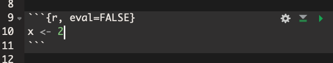

Willkommen

Dieses Skript ist als Begleitung für die Lehrveranstaltung “Wissenschaftstheorie und Einführung in die Methoden der Sozioökonomie” im Master “Sozioökonomie” an der Universität Duisburg-Essen gedacht.
Es enthält grundlegende Informationen über die Funktion der Programmiersprache R (R Core Team 2018).
Verhältnis zur Vorlesung
Einige Kapitel beziehen sich unmittelbar auf bestimmte Vorlesungstermine, andere sind als optionale Zusatzinformation gedacht. Gerade Menschen ohne Vorkenntnisse in R sollten unbedingt die ersten Kapitel vor dem vierten Vorlesungsterm lesen und verstehen. Bei Fragen können Sie sich gerne an Claudius Gräbner wenden.
Die folgende Tabelle gibt einen Überblick über die Kapitel und die dazugehörigen Vorlesungstermine:
| Kapitel | Zentrale Inhalte | Verwandter Vorlesungstermin |
|---|---|---|
| 1: Vorbemerkungen | Gründe für R; Besonderheiten von R | Vorbereitung |
| 2: Einrichtung | Installation und Einrichtung von R und R Studio, Projektstrukturierung | Vorbereitung |
| 3: Erste Schritte in R | Grundlegende Funktionen von R; Objekte in R; Pakete | Vorbereitung |
| 4: Lineare statistische Modelle in R | Implementierung von uni- und multivariaten linearen Regressionsmodellen | T4 am 06.11.19 |
| 5: Datenkunde und -aufbereitung | Einlesen und Schreiben sowie Aufbereitung von Datensätzen | T7 am 27.11.19 |
| 6: Visualisierung | Erstellen von Grafiken | T7 am 27.11.19 |
| 7: Formalia | Grundlegende formale Konzepte der Sozioökonomie. | T8 am 11.12.19 |
| 8: Fortgeschrittene Themen der linearen Regression | OLS-Annahmen: Inhalte, Tests und robuste Schätzverfahren | T9-10 am 8.&15.1.20 |
| 9: Ausgewählte nichtlineare Schätzverfahren | Logit- und Probit-Modelle | T10 am 15.1.20 |
| 10: Ausblick | Ausblick zu weiteren Anwendungsmöglichkeiten | Optional |
| A: Einführung in Markdown | Wissenschaftliche Texte in R Markdown schreiben | Optional; relevant für Aufgabenblätter |
| B: Wiederholung: Wahrscheinlichkeitstheorie | Wiederholung grundlegender Konzepte der Wahrscheinlichkeitstheorie und ihrer Implementierung in R | Optional; wird für die quantitativen VL vorausgesetzt |
| C: Wiederholung: Deskriptive Statistik | Wiederholung grundlegender Konzepte der deskriptiven Statistik und ihrer Implementierung in R | Optional; wird für die quantitativen VL vorausgesetzt |
| D: Wiederholung: Drei grundlegende Verfahren der schließenden Statistik | Wiederholung von Parameterschätzung, Hypothesentests und Konfidenzintervalle und deren Implementierung in R | Optional; wird für die quantitativen VL vorausgesetzt |
| E: Einführung in Git und Github | Verwendung von Git und Github | Optional |
Das Skript ist work in progress und jegliches Feedback ist sehr willkommen. Dafür wird im Moodle ein extra Bereich eingerichtet. Selbstverständlich können Sie Feedback auch den Issue-Tracker auf Github verwenden. Dort ist auch der Quellcode des Skripts verfügbar.
Danksagung
Ich möchte mich bei Jakob Kapeller und Anika Radkowitsch für das regelmäßige Feedback und die guten Hinweise bedanken. Am work-in-progress-Charakter des Skripts haben sie natürlich keine Mitschuld.
Änderungshistorie während des Semesters
An dieser Stelle werden alle wichtigen Updates des Skripts gesammelt. Die Versionsnummer hat folgende Struktur: major.minor.patch Neue Kapitel erhöhen die minor Stelle, kleinere, aber signifikante Korrekturen werden als Patches gekennzeichnet.
| Datum | Version | Wichtigste Änderungen |
|---|---|---|
| 19.10.19 | 0.1.0 | Erste Version veröffentlicht |
| 03.11.19 | 0.2.0 | Markdown-Anhang hinzugefügt |
| 04.11.19 | 0.3.0 | Anhänge zur Wiederholung grundlegender Statistik hinzugefügt |
| 06.11.19 | 0.4.0 | Kapitel zu linearen Modellen hinzugefügt |
| 18.11.19 | 0.5.0 | Kapitel zur Datenaufbereitung und Visualisierung hinzugefügt; kleinere Korrekturen im Kapitel zu lin. Modellen |
| 20.11.19 | 0.5.1 | Korrektur von kleineren Rechtschreib/Grammatikfehlern; Fix für Problem mit html Version auf HP |
| 03.12.19 | 0.6.0 | Kapitel zu formalen Konzepten hinzugefügt; kleinere Korrekturen |
| 10.12.19 | 0.6.1 | Herleitung OLS hinzugefügt; bessere Beispiele bei Formalie; Konsolidierung Notation Kap. 4 und 7 |
| 06.01.20 | 0.7.0 | Kapitel zur fortgeschrittenen Themen der Regression und nichtlinearen Schätzern hinzugefügt |
| 12.01.20 | 0.7.1 | Ergänzung Beweise im Kapitel zu fortgeschrittenen Themen der Regression |
| 29.01.20 | 0.7.2 | Korrektur der Tabelle in “Wahl der funktionalen Form” in Kapitel 8 im Bezug auf log-log Modelle |
Lizenz

Das gesamte Skript ist unter der Creative Commons Attribution-NonCommercial-ShareAlike 4.0 International License lizensiert.
1 Vorbemerkungen
1.1 Warum R?
Im folgenden gebe ich einen kurzen Überblick über die Gründe, die uns bewegt haben den Methodenkurs auf R aufzubauen. Die Liste ist sicherlich nicht abschließend (siehe auch Wickham (2019)).
- Die R Community gilt als besonders freundlich und hilfsbereit. Gerade weil viele Menschen, die R benutzen praktizierende Datenwissenschaftler*innen sind werden praktische Probleme breit und konstruktiv in den einschlägigen Foren diskutiert und es ist in der Regel leicht Lösungen für Probleme zu finde, sobald man selbst ein bestimmtes Level an Programmierkenntnissen erlangt hat.
- Auch gibt es großartige Online Foren und Newsletter, die es einem einfacher und unterhaltsamer machen, seine R Kenntnisse stetig zu verbessern und zusätzlich viele neue Dinge zu lernen. Besonders empfehlen kann ich R-Bloggers, eine Sammlung von Blog Artikeln, die R verwenden und neben Inspirationen für die Verwendung von R häufig inhaltlich sehr interessant sind; rweekly, ein Newsletter, der ebenfalls interessante Infos zu R enthält sowie die R-Ladies Community, die sich besonders das Empowerment von Minderheiten in der Programmierwelt zur Aufgabe gemacht hat.
- Selbstverständlich werden zahlreiche R Probleme auch auf StackOverflow disktuiert. Häufig ist das der Ort, an dem man Antworten auf seine Fragen findet. Allerdings ist es gerade am Anfang unter Umständen schwierig die häufig sehr fortgeschrittenen Lösungen zu verstehen.
R ist eine offene und freie Programmiersprache, die auf allen bekannten Betriebssystemen läuft. Im Gegensatz zu Programmen wie SPSS und STATA, für die Universitäten jedes Semester viele Tausend Euro bezahlen müssen und die dann umständlich über Serverlizenzen abgerufen werden müssen. Auch für Studierende sind die Preise alles andere als gering. R dagegen ist frei und inklusiv, und auch Menschen mit weniger Geld können sie benutzen. Gerade vor dem Hintergrund der Rolle von Wissenschaft in einer demokratischen und freien Gesellschaft und in der Kooperation mit Wissenschaftler*innen aus ärmeren Ländern ist dies extrem wichtig.
- R verfügt über ein hervorragendes Package System. Das bedeutet, dass es recht einfach ist, neue Pakete zu schreiben und damit die Funktionalitäten von R zu erweitern. In der Kombination mit der Open Source Charakter von R bedeutet das, dass R nie wirklich out of date ist, und dass neuere Entwicklungen der Statistik und Datenwissenschaften, und immer mehr auch in der VWL, recht zügig in R implementiert werden. Insbesondere wenn es um statistische Analysen, machine learning, Visualisierungen oder Datenmanagement und -manipulation geht: für alles gibt es Pakete in R und irgendjemand hat ihr Problem mit hoher Wahrscheinlichkeit schon einmal gelöst und Sie können davon profitieren.
- R ist - zusammen mit Python - mittlerweile die lingua franca im Bereich Statistik und Machine Learning.
Integration mit Git, Markdown, Latex und anderen Tools erlaubt einen integrierten Workflow, in dem Sie im Optimalfall euer Paper in der gleichen Umgebung schreiben wie den Code für eure statistische Analyse. Diesen Vorteil werden Sie bereits bei der Bearbeitung der Aufgabenzettel genießen können, da diese in teilweise in R Markdown zu lösen und abzugeben sind. Das bedeutet, dass Coding und Schreiben der Antworten im gleichen Dokument vorgenommen werden können. Auch dieses Skript wurde vollständig in R Markdown geschrieben.
R erlaubt sowohl objektorientierte als auch funktionale Programmierung.
Für besondere Aufgaben ist es recht einfach R mit high-performance Sprachen wie C, Fortran oder C++ zu integrieren.
1.2 Besonderheiten von R
R ist keine typische Programmiersprache, denn sie vor allem von Statistiker*innen benutzt und weiterentwickelt, und nicht von Programmierer*innen. Das hat den Vorteil, dass die Funktionen oft sehr genau auf praktische Herausforderungen ausgerichtet sind und es für alle typischen statistischen Probleme Lösungen in R gibt. Gleichzeitig hat dies auch dazu geführt, dass R einige unerwünschte Eigenschaften aufweist, da die Menschen, die Module für R programmieren keine ‘genuinen’ Programmierer*innen sind.
Im folgenden möchte ich einige Besonderheiten von R aufführen, damit Sie im Laufe Ihrer R-Karriere nicht negativ von diesen Besonderheiten überrascht werden. Während es sich für Programmier-Neulinge empfiehlt die Liste zu einem späteren Zeitpunkt zu inspizieren sollten Menschen mit Erfahrungen in anderen Sprachen gleich einen Blick darauf werfen.
R wird dezentral über viele benutzergeschriebene Pakete (‘libraries’ oder ‘packages’) konstant weiterentwickelt. Das führt wie oben erwähnt dazu, dass R quasi immer auf dem neuesten Stand der statistischen Forschung ist. Gleichzeitig kann die schiere Masse von Paketen auch verwirrend sein, insbesondere weil es für die gleiche Aufgabe häufig deutlich mehr als ein Paket gibt. Das führt zwar auch zu einer positiven Konkurrenz und jede*r kann sich ihren Geschmäckern gemäß für das eine oder andere Paket entscheiden, es bringt aber auch mögliche Inkonsistenzen und schwerer verständlichen Code mit sich.
Im Gegensatz zu Sprachen wie Python, die trotz einer enormen Anzahl von Paketen eine interne Konsistenz nicht verloren haben gibt es in R verschiedene ‘Dialekte’, die teilweise inkonsistent sind und gerade für Anfägner durchaus verwirrend sein können. Besonders die Unterscheidungen des
tidyverse, einer Gruppe von Paketen, die von der R Studio Company sehr stark gepusht werden und vor allem zur Verarbeitung von Datensätzen gedacht sind, implementieren viele Routinen des ‘klassischen R’ (‘base R’) in einer neuen Art und Weise. Das Ziel ist, die Arbeit mit Datensätzen einfacher und leichter verständlich zu machen, allerdings wird die recht aggressive ‘Vermarktung’ und die teilweise inferiore Performance des Ansatzes auch kritisiert.1Da viele der Menschen, die R Pakete herstellen keine Programmierer sind, sind viele Pakete von einem Programmierstandpunkt aus nicht sonderlich effizient oder elegant geschrieben. Gleichzeitig gibt es aber auch viele Ausnahmen zu dieser Regel und viele Pakete werden über die Zeit hinweg signifikant verbessert.
R an sich ist nicht die schnellste Programmiersprache, insbesondere wenn man seinen Code nicht entsprechend geschrieben hat. Auch bedarf eine R Session in der Regel recht viel Speicher. Hier sind selbst andere High-Level Sprachen wie Julia oder Python deutlich performanter, auch wenn Pakete wie data.table diesen Nachteil häufig abschwächen. Zudem ist er für die meisten Probleme, die Sozioökonom*innen in ihrer Forschungspraxis bearbeiten, irrelevant.
Alles in allem ist R jedoch eine hervorragende Wahl wenn es um quantitative sozialwissenschaftliche Forschung geht. Auch in der Industrie ist R extrem beliebt und wird im Bereich der Data Science nur noch von Python ernsthaft in den Schatten gestellt. Allerdings verwenden die meisten Menschen, die in diesem Bereich arbeiten, ohnehin beide Sprachen, da sie unterschiedliche Vor- und Nachteile haben. Entsprechend ist jede Minute, die Sie in das Lernen von R investieren eine exzellente Investition, egal wo Sie in Ihrem späteren Berufsleben einmal landen werden.
Das wichtigste am Programmieren ist in jedem Fall Spaß und die Bereitschaft zu und die Freude an der Zusammenarbeit mit anderen. Denn das hat R mit anderen offenen Sprachen wie Python gemeinsam: Programmieren und das Lösen von statistischen Fragestellungen sollte immer ein kollaboratives Gemeinschaftsprojekt sein!
2 Einrichtung
2.1 Installation von R und R-Studio
Die Installation von R ist in der Regel unproblematisch. Auf der R homepage wählt man unter dem Reiter ‘Download’ den Link ‘CRAN’ aus, wählt einen Server in der Nähe und lädt sich dann die R Software herunter. Danach folgt man den Installationshinweisen.
Im zweiten Schritt muss noch das Programm ‘R-Studio’ installiert werden. Hierbei handelt es sich um eine grafische Oberfläche für R, welche uns die Arbeit enorm erleichtern wird. Das Programm kann hier heruntergeladen werden. Bitte darauf achten ‘RStuio Desktop’ zu installieren.
2.2 Die R Studio Oberfläche
Nach dem Installationsprozess öffnen wir R Studio zum ersten Mal. Abbildung @ref(fig:gui) zeigt die verschiedenen Elemente der Oberfläche, deren Funktion im folgenden kurz erläutert wird. Vieles ergibt sich hier aber auch durch learning by doing. Im folgenden werden nur die Bereiche der Oberfläche beschrieben, die am Anfang unmittelbar relevant für uns sind.

(#fig:gui)Die Benutzeroberfläche von R-Studio.
Der Skriptbereich (1) ist ein Texteditor wie Notepad - nur mit zusätzlichen Features wie Syntax Highlighting für R, sodass es uns leichter fällt R Code zu schreiben. Hier werden wir unsere Skripte verfassen.
Die Konsole (2) erlaubt es uns über R direkt mit unserem Computer zu interagieren. R ist eine Programmiersprache. Das bedeutet, wenn wir den Regeln der Sprache folgen und uns in einer für den Computer verständlicher Art und Weise ausdrücken, versteht der Computer was wir von ihm wollen und führt unsere Befehle aus. Wenn wir in die Konsole z.B.
2+2eingeben, dann ist das valider R code. Wenn wir dann Enter drücken versteht der Computer unseren Befehl und führt die Berechnung aus. Die Konsole ist sehr praktisch um den Effekt von R Code direkt zu beobachten. Wenn wir etwas in der Console ausführen wollen, das wir vorher im Skriptbereich geschrieben haben, können wir den Text markieren und dann auf den ButtonRun(3) drücken: dann kopiert R Studio den Code in die Konsole und führt ihn aus.Für den Bereich oben rechts haben wir in der Standardkonfiguration von R Studio drei Optionen, die wir durch Klicken auf die Reiter auswählen können. Der Reiter Environment (4) zeigt uns alle bisher definierten Objekte an (mehr dazu später). Der Reiter History (5) zeigt an, welchen Code wir in der Vergangenheit ausgeführt haben. Der Reiter Connections (6) braucht uns aktuell nicht zu interessieren.
Auch für den Bereich unten rechts haben wir mehrere Optionen: Der Bereich Files (7) zeigt uns unser Arbeitsverzeichnis mit allen Ordnern und Dateien an. Das ist das gleiche, was wir auch über den File Explorer unserer Betriebssystems sehen würden. Der Bereich Plots (8) zeigt uns eine Vorschau der Abbildungen, die wir durch unseren Code produzieren. Die anderen Bereiche brauchen uns aktuell noch nicht zu interessieren.
Wenn wir ein neues R Skript erstellen wollen, können wir das über den Button Neu (9) erledigen. Wir klicken darauf und wählen die Option ‘R Skript’. Mit den alternativen Dateiformaten brauchen wir uns aktuell nicht beschäftigen.
Der Botton Neues Projekt anlegen (10) erstellt eine neues R Studio Projekt - mehr dazu in Kürze.
Der Button Öffnen (11) öffnet Dateien im Skriptbereich.
Die beiden Buttons Speichern (12) und Alles speichern (13) speichern das aktuelle, bzw. alle im Skriptbereich geöffnenten Dateien.
Die restlichen Buttons und Fenster in R Studio werden wir im Laufe der Zeit kennenlernen.
Es macht Sinn, sich einmal die möglichen Einstellungsmöglichkeiten für R Studio anzuschauen und ggf. eine andere Darstellungsversion zu wählen.
2.3 Einrichtung eines R Projekts
Im Folgenden werden wir lernen wie man ein neues R Projekt anlegt, R Code schreiben und ausführen kann.
Wann immer wir ein neues Programmierprojekt starten, sollten wir dafür einen eigenen Ordner anlegen und ein so genannten ‘R Studio Projekt’ erstellen. Das hilft uns den Überblick über unsere Arbeit zu behalten, und macht es einfach Code untereinander auszutauschen.
Ein Programmierprojekt kann ein Projekt für eine Hausarbeit sein, die Mitschriften für eine Vorlesungseinheit, oder einfach der Versuch ein bestimmtes Problem zu lösen, z.B. einen Datensatz zu visualisieren.
Die Schritte zur Erstellung eines solchen Projekts sind immer die gleichen:
- Einen Ordner für das Projekt anlegen.
- Ein R-Studio Projekt in diesem Ordner erstellen.
- Relevante Unterordner anlegen.
Wir beschäftigen uns mit den Schritten gleich im Detail, müssen vorher aber noch die folgenden Konzepte diskutieren: (1) das Konzept eines Arbeitsverzeichnisses (working directory) und (2) die Unterscheidnug zwischen absoluten und relativen Pfaden.
2.3.1 Arbeitsverzeichnisse und Pfade
Das Arbeitsverzeichnis ist ein Ordner auf dem Computer, in dem R standardmäßig sämtlichen Output speichert und von dem aus es auf Datensätze und anderen Input zugreift. Wenn wir mit Projekten arbeiten ist das Arbeitsverzeichnis der Ordner, in dem das R-Projektfile abgelegt ist, ansonsten ist es euer Benutzerverzeichnis. Wir können uns das Arbeitsverzeichnis mit der Funktion getwd() anzeigen lassen. In meinem Fall ist das Arbeitsverzeichnis das folgende:
#> [1] "/Users/claudius/work-claudius/general/paper-projects/packages/SocioEconMethodsR"Wenn ich R nun sagen würde ein File unter dem Namen test.pdf speichern, würde es am folgenden Ort gespeichert werden:
#> [1] "/Users/claudius/work-claudius/general/paper-projects/packages/SocioEconMethodsR/test.pdf"R geht in einem solchen Fall immer vom Arbeitsverzeichnis aus. Da wir im vorliegenden Fall den Speicherort relativ zum Arbeitsverzeichnis angegeben haben, sprechen wir hier von einem relativen Pfad.
Alternativ können wir den Speicherort auch als absoluten Pfad angeben. In diesem Fall geben wir den kompletten Pfad, ausgehend vom Root Verzeichnis des Computers, an. Wir würden R also explizit auffordern, das File an foldengem Ort zu speichern:
#> [1] "/Users/claudius/work-claudius/general/paper-projects/packages/SocioEconMethodsR/test.pdf"Wir werden hier immer relative Pfade verwenden. Relative Pfade sind fast immer die bessere Variante, da es uns erlaubt den gleichen Code auf verschiedenen Computern zu verwenden. Denn wiw man an den absoluten Pfaden erkennen kann, sehen diese auf jedem Computer anders aus und es ist dementsprechend schwierig, Code miteinander zu teilen.
Wir lernen mehr über dieses Thema wenn wir uns später mit Dateninput und -output beschäftigen.
2.3.2 Schritt 1: Projektordner anlegen
Zuerst müssen Sie sich für einen Ordner auf Ihrem Computer entscheiden, in dem alle Daten, die mit ihrem Projekt zu tun haben, also Daten, Skripte, Abbildungen, etc. gespeichert werden sollen und diesen Ordner gegebenenfalls neu erstellen. Es macht Sinn, einen solchen Ordner mit einem informativen Namen ohne Leer- und Sonderzeichen zu versehen, z.B. SoSe19-Methodenkurs.
Dieser Schritt kann theoretisch auch gemeinsam mit Schritt 2 erfolgen.
2.3.3 Schritt 2: Ein R-Studio Projekt im Projektordner erstellen
Wir möchten nun R Studio mitteilen den in Schritt 1 erstellten Ordner als R Projekt zu behandeln. Damit wird nicht nur dieses Ordner als Root-Verzeichnis festgelegt, man kann auch die Arbeitshistorie eines Projekts leich wiederherstellen und es ist einfacher, das Projekt auf verschiedenen Computern zu bearbeiten.
Um ein neues Projekt zu erstellen klicken Sie in R Studio auf den Button Neues Projekt (Nr. 10 in Abbildung @ref(fig:gui)) und Sie sollten das in Abbildung @ref(fig:newproj1) dargestellte Fenster sehen.

(#fig:newproj1)Ein neues Projekt erstellen.
Falls Sie in Schritt 1 den Projektordner bereits erstellt haben wählen Sie hier Existing Directory, ansonsten erstellen Sie einen neuen Projektordner gleich mit dem Projektfile mit indem Sie New Directory auswählen.
Falls Sie Existing Directory gewählt haben, wählen Sie in dem in linken in Abbildung @ref(fig:newproj2) dargestellten Fenster. Wählen Sie hier einfach den vorher erstellten Ordner aus und klickt auf Create Project.


(#fig:newproj2)Ein neues R-PRojekt aus einem existierenden (links) oder in einem neuen Projektordner (rechts) erstellen.
Falls Sie New Directory gewählt habt landen Sie dann auf dem rechten in Abbildung @ref(fig:newproj2) dargestellten Fenster. Hier wählen Sie New Project aus, geben dem Projekt in folgenden Fenster einen Namen (das wird der Name des Projektordners sein), wählen den Speicherort für den Ordner aus und klicken auf Create Project.
In beiden Fällen wurde nun ein Ordner erstellt, in dem sich ein File *.Rproj befindet. Damit ist die formale Erstellung eines Projekts abgeschlossen. Es empfiehlt sich jedoch dringend gleich eine sinnvolle Unterordnerstruktur mit anzulegen.
2.3.4 Schritt 3: Relevante Unterordner erstellen
Eine sinnvolle Unterordnerstruktur hilf (1) den Überblick über das eigene Projekt nicht zu verlieren, (2) mit anderen über verschiedene Computer hinweg zu kollaborieren und (3) Kollaborationsplattformen wie Github zu verwenden und replizierbare und für andere nachvollziehbare Forschungsarbeit zu betreiben.
Die folgende Ordnerstruktur ist eine Empfehlung. In manchen Projekten werden Sie nicht alle hier vorgeschlagenen Unterordner brauchen, in anderen bietet sich die Verwendung von mehr Unterordnern an. Nichtsdestotrotz ist es ein guter Ausgangspunkt, den ich in den meisten meiner Forschungsprojekte auch so verwende.
Insgesamt sollten die folgenden Ordner im Projektordner erstellt werden:
- Ein Ordner
data, der alle Daten enthält, die im Rahmen des Projekts verwendet werden. Hier empfiehlt es sich zwei Unterordner anzulegen: Einen Ordnerraw, der die Rohdaten enthält, so wie sie aus dem Internet runtergeladen wurden. Diese Rohdaten sollten niemals verändert werden, ansonsten wird Ihre Arbeit nicht vollständig replizierbar werden und es kommt ggf. zu irreparablen Schäden. Alle Veränderungen der Daten sollten durch Skripte dokumentiert werdenn, die die Rohdaten als Input, und einen modifizierten Datensatz als Output generieren. Dieser modifizierte Datensatz sollte dann im Unterordnertidygespeichert werden.
Beispiel: Sie laden sich Daten zum BIP in Deutschland von Eurostat und Daten zu Arbeitslosigkeit von AMECO herunter. Beiden Datensätze sollten im Unterordner
data/rawgespeichert werden. Mit einem Skript lesen Sie beide Datensätze ein und erstellen den kombinierten Datensatzmacro_data.csv, den Sie im Ordnerdata/tidyspeichern und für die weitere Analyse verwenden. Dadurch kann jede*r nachvollziehen wie die von Ihnen verwendeten Daten sich aus den Rohdaten ergeben haben und Ihre Arbeit bleibt komplett transparent.
Ein Ordner
R, der alle R Skripte enthält, also alle Textdokumente, die R Code enthalten.Ein Ordner
output, in dem der Output ihrer Berechnungen, z.B. Tabellen oder Plots gespeichert werden können. Der Inhalt dieses Ordners sollte sich komplett mit den Inhalten der OrdnerdataundRreplizieren lassen.Ein Ordner
text, in dem Sie Ihre Verschriftlichungen speichern, z.B. das eigentliche Forschungspapier, ihre Hausarbeit oder Ihre Vorlesungsmitschriften.Einen Ordner
miscin den Sie alles packen, was in keinen der anderen Ordner passt. Ein solcher Ordner ist wichtig und Sie sollten nicht zuordbare Dateien nie in den Projektordner als solchen speichern.
Wenn wir annehmen unser Projektordner heißt 2019-Methoden ergibt sich damit insgesamt die in Abbildung @ref(fig:folder) dargestellte Ordner und Datenstruktur.
(#fig:folder)Die vorgeschlagene Ordnerstruktur für R-Projekte.
2.4 Abschließende Bemerkungen
Eine gute Ordnerstruktur ist nicht nur absolut essenziell um selbst einen Überblick über seine Forschungsprojekte zu behalten, sondern auch wenn man mit anderen Menschen kollaborieren möchte. In einem solchen Fall sollte man auf jeden Fall eine Versionskontrolle wie Git und GitHub verwenden. Wir werden uns damit im nächsten Semester genauer beschäftigen, aber Sie werden merken, dass die Kollaboration durch eine gut durchdachte Ordnerstruktur massiv erleichtert wird.
3 Erste Schritte in R
Nach diesen (wichtigen) Vorbereitungsschritten wollen wir nun mit dem eigentlichen Programmieren anfangen. Zu diesem Zweck müssen wir uns mit der Syntax von R vertraut machen, also mit den Regeln, denen wir folgen müssen, wenn wir Code schreiben, damit der Computer versteht, was wir ihm eigentlich in R sagen wollen.
3.1 Befehle in R an den Computer übermitteln
Grundsätzlich können wir über R Studio auf zwei Arten mit dem Computer “kommunizieren”: über die Konsole direkt, oder indem wir im Skriptbereich ein Skript schreiben und dies dann ausführen.
Als Beispiel für die erste Möglichkeit wollen wir mit Hilfe von R die Zahlen 2 und 5 miteinander addieren. Zu diesem Zweck können wir einfach 2 + 2 in die Konsole eingeben, und den Befehl mit ‘Enter’ an den Computer senden. Da es sich beim Ausdruck 2 + 3 um korrekten R Code handelt, ‘versteht’ der Computer was wir von ihm wollen und gibt uns das entsprechende Ergebnis aus:
2 + 3#> [1] 5Auf diese Art und Weise könne wir R als einfachen Taschenrechner verwenden, denn für alle einfachen mathematischen Operationen können wir bestimmte Symbole als Operatoren verwenden. An dieser Stelle sei noch darauf hingewiesen, dass das Symbol # in R einen Kommentar einleitet, das heißt alles was in einer Zeile nach # steht wird vom Computer ignoriert und man kann sich einfach Notizen in seinem Code machen.
2 + 2 # Addition#> [1] 42/2 # Division#> [1] 14*2 # Multiplikation#> [1] 83**2 # Potenzierung#> [1] 9Alternativ können wir die Befehle in einem Skript aufschreiben, und dieses Skript dann ausführen. Während die Interaktion über die Konsole sinnvoll ist um die Effekte bestimmter Befehle auszuprobieren, bietet sich die Verwendung von Skripten an, wenn wir mit den Befehlen später weiter arbeiten wollen, oder sie anderen Menschen zugänglich zu machen. Den das Skript können wir als Datei auf unserem Computer speichern, vorzugsweise im Unterordner R unseres R-Projekts (siehe Abschnitt Relevante Unterordner erstellen), und dann später weiterverwenden.
Die Berechnungen, die wir bisland durchgeführt haben sind zugegebenermaßen nicht sonderlich spannend. Um fortgeschrittene Operationen in R durchführen und verstehen zu können müssen wir uns zunächst mit den Konzepten von Objekten, Funktionen und Zuweisungen beschäftigen.
3.2 Objekte, Funktionen und Zuweisungen
To understand computations in R, two slogans are helpful: Everything that exists is an object. Everything that happens is a function call.
Mit der Aussage ‘Alles in R ist ein Objekt’ ist gemeint, dass jede Zahl, jede Funktion, oder jeder Buchstabe in R ein Objekt ist, das irgendwo auf dem Speicher Ihres Rechners abgespeichert ist.
In der Berechnung 2 + 3 ist die Zahl 2 genauso ein Objekt wie die Zahl 3 und die Additionsfunktion, die durch den Operator + aufgerufen wird.
Mit der Aussage ‘Alles was in R passiert ist ein Funktionsaufruf’ ist gemeint, dass wenn wir R eine Berechnung durchführen lassen, tun wir dies indem wir eine Funktion aufrufen.
Funktionen sind Algorithmen, die bestimmte Routinen auf einen Input anwenden und dabei einen Output produzieren. Die Additionsfunktion, die wir in der Berechnung 2 + 3 aufgerufen haben hat als Input die beiden Zahlen 2 und 3 aufgenommen, hat auf sie die Routine der Addition angewandt und als Output die Zahl 5 ausgegeben. Der Output 5 ist dabei in R genauso ein Objekt wie die Inputs 2 und 3, sowie die Funktion +.
Ein ‘Problem’ ist, dass R im vorliegenden Falle den Output der Berechnung zwar ausgibt, wir danach aber keinen Zugriff darauf mehr haben:
2 + 3#> [1] 5Falls wir den Output weiterverwenden wollen, macht es Sinn, dem Output Objekt einen Namen zu geben, damit wir später wieder darauf zugreifen können. Der Prozess einem Objekt einen Namen zu Geben wird Zuweisung oder Assignment genannt und durch die Funktion assign vorgenommen:
assign("zwischenergebnis", 2 + 3)Wir können nun das Ergebnis der Berechnung 2 + 3 aufrufen, indem wir in R den Namen des Output Objekts eingeben:
zwischenergebnis#> [1] 5Da Zuweisungen so eine große Rolle spielen und sehr häufig vorkommen gibt es auch für die Funktion assign eine Kurzschreibweise, nämlich <-. Entsprechend sind die folgenden beiden Befehle äquivalent:
assign("zwischenergebnis", 2 + 3)
zwischenergebnis <- 2 + 3Entsprechend werden wir Zuweisungen immer mit dem <- Operator durchführen.2
Wir können in R nicht beliebig Namen vergeben. Gültige (also: syntaktisch korrekte) Namen …
- enthalten nur Buchstaben, Zahlen und die Symbole
.und_ - fangen nicht mit
.oder einer Zahl an!
Zudem gibt es einige Wörter, die schlicht nicht als Name verwendet werden dürgen, z.B. function, TRUE, oder if. Die gesamte Liste verbotener Worte kann mit dem Befehl ?Reserved ausgegeben werden.
Wenn man einen Namen vergeben möchte, der nicht mit den gerade formulierten Regeln kompatibel ist, gibt R eine Fehlermeldung aus:
TRUE <- 5#> Error in TRUE <- 5: invalid (do_set) left-hand side to assignmentZudem sollte man folgendes beachten:
- Namen sollten kurz und informativ sein; entsprechen ist
sample_meanein guter Name,shit15_2dagegen eher weniger - Man sollte nie Umlaute in Namen verwenden
- R ist case sensitive, d.h.
mean_valueist ein anderer Name alsMean_Value - Auch wenn möglich, sollte man nie von R bereit gestellte Funktionen überschreiben. Eine Zuweisung wie
assign <- 2ist zwar möglich, führt in der Regel aber zu großem Unglück, weil man nicht mehr ganz einfach auf die zugrundeliegende Funktion zurückgreifen kann.
Hinweis: Alle aktuellen Namenszuweisungen sind im Bereich
Environmentin R Studio (Nr. 4 in der Abbildung oben) aufgelistet und können durch die Funktionls()angezeigt werden.
Hinweis: Ein Objekt kann mehrere Namen haben, aber kein Name kann zu mehreren Objekten zeigen, da im Zweifel eine neue Zuweisung die alte Zuweisung überschreibt:
x <- 2
y <- 2 # Das Objekt 2 hat nun zwei Namen
print(x)#> [1] 2print(y)#> [1] 2x <- 4 # Der Name 'x' zeigt nun zum Objekt '4', nicht mehr zu '2'
print(x)#> [1] 4Hinweis: Wie Sie vielleicht bereits bemerkt haben wird nach einer Zuweisung kein Wert sichtbar ausgegeben:
2 + 2 # Keine Zuweisung, R gibt das Ergebnis in der Konsole aus#> [1] 4x <- 2 + 2 # Zuweisung, R gibt das Ergebnis in der Konsole nicht aus3.3 Zusammenfassung
- Wir können Befehle in R Studio an den Computer übermitteln indem wir (a) den R Code in die Konsole schreiben und Enter drücken oder (b) den Code in ein Skript schreiben und dann ausführen
- Alles was in R existiert ist ein Objekt, alles was in R passiert ist ein Funktionsaufruf
- Wir können einem Objekt mit Hilfe von
<-einen Namen geben und dann später wieder aufrufen. Den Prozess der Namensgebung nennen wir Assignment und wir können uns alle aktuell von uns vergebenen Namen mit der Funktionls()anzeigen lassen. - Eine Funktion ist ein Objekt, das auf einen Input eine bestimmte Routine anwendet und einen Output produziert
An dieser Stelle sei noch auf die Hilfefunktion help() hingewiesen. Falls Sie Informationen über ein Objekt bekommen wollen können Sie so weitere Informationen bekommen. Wenn Sie z.B. genauere Informationen über die Verwendung der Funktion assign erhalten wollen, können Sie Folgendes eingeben:
help(assign)3.4 Grundlegende Objeke in R
Wir haben bereits gelernt, dass alles was in R existiert ein Objekt ist. Wir haben aber auch schon gelernt, dass es unterschiedliche Typen von Objekten gibt: Zahlen, wie 2 oder 3 und Funktionen wie assign.3 Tatsächlich gibt es noch viel mehr Arten von Objekten. Ein gutes Verständnis der Objektarten ist Grundvoraussetzung später anspruchsvolle Programmieraufgaben zu lösen. Daher wollen wir uns im Folgenden mit den wichtigsten Objektarten in R auseinandersetzen.
3.4.1 Funktionen
Wie oben bereits kurz erwähnt handelt es sich bei Funktionen um Algorithmen, die bestimmte Routinen auf einen Input anwenden und dabei einen Output produzieren.
Die Funktion log() zum Beispiel nimmt als Input eine Zahl und gibt als Output den Logarithmus dieser Zahl aus:
log(2)#> [1] 0.6931472Eine Funktion aufrufen
In R gibt es prinzipiell vier verschiedene Arten Funktionen aufzurufen. Nur zwei davon sind allerdings aktuell für uns relevant.
Die bei weitem wichtigste Variante ist die so genannte Prefix-Form. Dies ist die Form, die wir bei der überwältigenden Anzahl von Funktionen verwenden werden. Wir schreiben hier zunächst den Namen der Funktion (im Folgenden Beispiel assign), dann in Klammern und mit Kommata getrennt die Argumente der Funktion (hier der Name test und die Zahl 2):
assign("test", 2)Ein hin und wieder auftretende Form ist die so genannte Infix-Form. Hier wird der Funktionsname zwischen die Argumente geschrieben. Dies ist, wie wir oben bereits bemerkt haben, bei vielen mathematischen Funktionen wie +, - oder / der Fall. Streng genommen ist die die Infix-Form aber nur eine Abkürzung, denn jeder Funktionsaufruf in Infix-Form kann auch in Prefix-Form geschrieben werden, wie folgendes Beispiel zeigt:
2 + 3#> [1] 5`+`(2,3)#> [1] 5Die Argumente einer Funktion
Die Argumente einer Funktion stellen zum einen den Input für die in der Funktion implementierten Routine dar.
Die Funktion sum zum Beispiel nimmt als Argumente eine beliebige Anzahl an Zahlen (ihr ‘Input’) und berechnet die Summe dieser Zahlen:
sum(1,2,3,4)#> [1] 10Darüber hinaus akzeptiert sum() noch ein optionales Argument, na.rm, welches entweder den Wert TRUE oder FALSE annehmen kann. Wenn wir das Argument nicht explizit spezifizieren nimmt es automatisch FALSE als den Standardwert an.
Dieses optionale Argument ist kein klassischer Input, sondern kontrolliert das genaue Verhalten der Funktion. Im Falle von sum() werden fehlende Werte, so genannte NA (siehe unten) ignoriert bevor die Summe der Inputs gebildet wird wenn na.rm den Wert TRUE hat:
sum(1,2,3,4,NA) #> [1] NAsum(1,2,3,4,NA, na.rm = TRUE) #> [1] 10Wenn wir wissen wollen, welche Argumente eine Funktion akzeptiert ist es immer eine gute Idee über die Funktion help() einen Blick in die Dokumentation zu werfen!
Im Falle von sum() sehen wir hier sofort, dass die Funktion neben den zu addierenden Zahlen ein optionales Argument na.rm akzeptiert, welches den Standardwert FALSE annimmt.
Eigene Funktionen definieren
Sehr häufig möchten wir selbst Funktionen definieren. Das können wir mit dem reservierten Keyword function machen. Als Beispiel wollen wir eine Funktion pythagoras definieren, die als Argumente die Seitenlängen der Katheten eines rechtwinkligen Dreiecks annimmt und über den Satz des Pythagoras die Länge der Hypothenuse bestimmt:
pythagoras <- function(kathete_1, kathete_2){
hypo_quadrat <- kathete_1**2 + kathete_2**2
l_hypothenuse <- sqrt(hypo_quadrat) # sqrt() zieht die Quadratwurzel
return(l_hypothenuse)
}Wir definieren eine Funktion durch die Funktion function(). In der Regel beginnen wir die Definition indem wir der zu erstellenden mit einem Namen assoziieren (hier: ‘pythagoras’) damit wir sie später auch verwenden können.
Die Argumente für function sind dann die Argumente, welche die zu definierende Funktion annehmen soll, in diesem Fall kathete_1 und kathete_2. Danach beginnen wir den ‘function body’, also den Code für die Routine, welche die Funktion ausführen soll, mit einer geschweiften Klammer.
Innerhalb des function bodies wird dann die entsprechende Routine implementiert. Im vorliegenden Beispiel definieren wir zunächst die Summe der Werte von kathete_1 und kathete_2 als ein Zwischenergebnis, welches hier hypo_quadrat genannt wird. Dies ist der häufig unter \(c^2=a^2 + b^2\) bekannte Teil des Satz von Pythagoras. Da wir an der ‘normalen’ Länge der Hypothenuse interesssiert sind, ziehen wir mit der Funktion sqrt() noch die Wurzel von hypo_quadrat, und geben dem resultierenden Objekt den Namen l_hypothenuse, welches in der letzten Zeile mit Hilfe des Keywords return als der Wert definiert wird, den die Funktion als Output ausgibt.4
Am Ende der Routine kann man mit dem Keyword return explizit machen welchen Wert die Funktion als Output ausgeben soll. Wenn wir die Funktion nun aufrufen wird die oben definierte Routine ausgeführt:
pythagoras(2, 4)#> [1] 4.472136Beachten Sie, dass alle Objet Namen, die innerhalb des function bodies verwendet werden gehen nach dem Funktionsaufruf verloren:5 Deswegen kommt es im vorliegenden Falle zu einem Fehler, da hypo_quadrat nur innerhalb des function bodies existiert:
pythagoras <- function(kathete_1, kathete_2){
hypo_quadrat <- kathete_1**2 + kathete_2**2
l_hypothenuse <- sqrt(hypo_quadrat) # sqrt() zieht die Quadratwurzel
return(l_hypothenuse)
}
x <- pythagoras(2, 4)
hypo_quadrat#> Error in eval(expr, envir, enclos): object 'hypo_quadrat' not foundEs ist immer eine gute Idee, die selbst definierten Funktionen zu dokumentieren - nicht nur wenn wir sie auch anderen zur Verfügung stellen wollen, sondern auch damit wir selbst nach einer möglichen Pause unseren Code noch gut verstehen können. Nichts ist frustrierender als nach einer mehrwöchigen Pause viele Stunden investieren zu müssen, den eigens programmierten Code zu entschlüsseln!
Die Dokumentation von Funktionen kann mit Hilfe von einfachen Kommentaren erfolgen, ich empfehle jedoch sofort sich die hier beschriebenen Konventionen anzugewöhnen. In diesem Falle würde eine Dokumentation unserer Funktion pythagoras folgendermaßen aussehen:
#' Berechne die Länge der Hypothenuse in einem rechtwinkligen Dreieck
#'
#' Diese Funktion nimmt als Argumente die Längen der beiden Katheten eines
#' rechtwinkligen Dreiecks und berechnet daraus die Länge der Hypothenuse.
#' @param kathete_1 Die Länge der ersten Kathete
#' @param kathete_2 Die Länge der zweiten Kathete
#' @return Die Länge der Hypothenuse des durch a und b definierten
#' rechtwinkligen Dreieckst
pythagoras <- function(kathete_1, kathete_2){
hypo_quadrat <- kathete_1**2 + kathete_2**2
l_hypothenuse <- sqrt(hypo_quadrat) # sqrt() zieht die Quadratwurzel
return(l_hypothenuse)
}Die Dokumentation wird also direkt vor die Definition der Funktion gesetzt. In der ersten Zeile gibt man der Funktion einen maximal einzeiligen Titel, der nicht länger als 80 Zeichen sein sollte und die Funktion prägnant beschreibt.
Dann, nach einer Lehrzeile wird genauer beschrieben was die Funktion macht. Danach werden die Argumente der Funktion beschrieben. Für jedes Argument beginnen wir die Reihe mit @param, gefolgt von dem Namen des Arguments und dann einer kurzen Beschreibung.
Nach den Argumenten beschreiben wir noch kurz was der Output der Funktion ist. Diese Zeile wird mit @return begonnen.
Die Dokumentation einer Funktion sollte also zumindest die Parameter und die Art des Outputs erklären.
Gründe für die Verwendung eigener Funktionen
Eigene Funktionen zu definieren ist in der Praxis extrem hilfreich und es ist empfehlenswert Routinen, die mehrere Male verwendet werden grundsätzlich als Funktionen zu schreiben. Dafür gibt es mehrere Gründe:
- Der Code wird kürzer und transparenter. Zwar ist kurzer Code nicht notwendigerweise leichter zu verstehen als langer, aber Funktionen können besonders gut dokumentiert werden (am besten indem man den hier beschriebenen Konventionen folgt).
- Funktionen bieten Struktur. Funktionen fassen in der Regel Ihre Vorstellung davon zusammen, wie ein bestimmtes Problem zu lösen ist. Da man sich diese Gedanken nicht ständig neu machen möchte ist es sinnvoll sie einmalig in einer Funktion zusammen zu fassen.
- Funktionen erleichtern Korrekturen. Wenn Sie merken, dass Sie in der Implementierung einer Routine einen Fehler gemacht haben müssen Sie im besten Falle nur einmal die Definition der Funktion korrigieren - im schlimmsten Falle müssen sie in ihrem Code nach der Routine suchen und sie in jedem einzelnen Anwendungsfall erneut korrigieren.
Es gibt noch viele weitere Gründe dafür, Funktionen häufig zu verwenden. Viele hängen mit dem Entwicklerprinzip DRY (“Don’t Repeat Yourself”) zusammen.
3.4.2 Vektoren
Vektoren sind einer der wichtigsten Objektypen in R. Quasi alle Daten mit denen wir in R arbeiten werden als Vektoren behandelt.
Was Vektoren angeht gibt es wiederum die wichtige Unterscheidung von atomaren Vektoren und Listen. Beide bestehen ihrerseits aus Objekten und sie unterscheiden sich dadurch, dass atomare Vektoren nur aus Objekten des gleichen Typs bestehen können, Listen dagegen auch Objekte unterschiedlichen Typs beinhalten können.
Entsprechend kann jeder atomare Vektor einem Typ zugeordnet werden, je nachdem welchen Typ seine Bestandteile haben. Hier sind insbesondere vier Typen relevant:
logical(logische Werte): es gibt zwei logische Werte,TRUEundFALSE, welche auch mitToderFabgekürzt werden könneninteger(ganze Zahlen): das sollte im Prinzip selbsterklärend sein, allerding muss den ganzen Zahlen in R immer der BuchstabeLfolgen, damit die Zahl tatsächlich als ganze Zahl interpretiert wird.6 Beispiele sind1L,400Loder10L.
double(Dezimalzahlen): auch das sollte selbsterklärend sein; Beispiele wären1.5,0.0, oder-500.32.- Ganze Zahlen und Dezimalzahlen werden häufig unter der Kategorie
numericzusammengefasst. Dies ist in der Praxis aber quasi nie hilfreich und man sollte diese Kategorie möglichst nie verwenden. - Wörter (
character): sie sind dadurch gekennzeichnet, dass sie auch Buchstaben enthalten können und am Anfang und Ende ein"haben. Beispiele hier wären"Hallo","500"oder"1_2_Drei". - Es gibt noch zwei weitere besondere ‘Typen’, die strikt gesehen keine atomaren Vektoren darstellen, allerdings in diesem Kontext schon häufig auftauchen:
NULL, was strikt genommen ein eigener Datentyp ist und immer die Länge 0 hat, sowieNA, das einen fehlenden Wert darstellt
Hieraus ergibt sich folgende Aufteilung für Vektoren:

Wir werden nun die einzelnen Typen genauer betrachten. Vorher wollen wir jedoch noch die Funktion typeof einführen. Sie hilft uns in der Praxis den Typ eines Objekts herauszufinden. Dafür rufen wir einfach die Funktion typeof mit dem zu untersuchenden Objekt oder dessen Namen auf:
typeof(2L)#> [1] "integer"x <- 22.0
typeof(x)#> [1] "double"Wir können auch explizit testen ob ein Objekt ein Objekt bestimmten Typs ist. Die generelle Syntax hierfür ist: is.*(), also z.B.:
x <- 1.0
is.integer(x)#> [1] FALSEis.double(x)#> [1] TRUEDiese Funktion gibt als Output also immer einen logischen Wert aus, je nachdem ob die Inputs des entsprechenden Typs sind oder nicht.
Bestimmte Objekte können in einen anderen Typ transformiert werden. Hier spricht man von coercion und die generelle Syntax hierfür ist: as.*(), also z.B.:
x <- "2"
print(
typeof(x)
)#> [1] "character"x <- as.double(x)
print(
typeof(x)
)#> [1] "double"Allerdings ist eine Transformation nicht immer möglicht:
as.double("Hallo")#> Warning: NAs introduced by coercion#> [1] NADa R nicht weiß wie man aus dem Wort ‘Hallo’ eine Dezimalzahl machen soll, transformiert er das Wort in einen ‘Fehlenden Wert’, der in R als NA bekannt ist und unten noch genauer diskutiert wird.
Für die Grundtypen ergibt sich folgende logische Hierachie an trivialen Transformationen: logical → integer → double → character, d.h. man kann eine Dezimalzahl ohne Probleme in ein Wort transformieren, aber nicht umgekehrt:
x <- 2
y <- as.character(x)
print(y)#> [1] "2"z <- as.double(y) # Das funktioniert
print(z)#> [1] 2k <- as.double("Hallo") # Das nicht#> Warning: NAs introduced by coercionprint(k)#> [1] NADa nicht immer ganz klar ist wann R bei Transformationen entgegen der gerade eingeführten Hierachie eine Warnung ausgibt und wann nicht sollte man hier immer besondere Vorsicht walten lassen!
Zudem ist bei jeder Transformation Vorsicht geboten, da sie häufig Eigenschaften der Objekte implizit verändert. So führt eine Transformation von einer Dezimalzahl hin zu einer ganzen Zahl teils zu unerwartetem Rundungsverhalten:
x <- 1.99
as.integer(x)#> [1] 1Auch führen Transformationen, die der eben genannten Hierachie zuwiderlaufen, nicht zwangsweise zu Fehlern, sondern ‘lediglich’ zu unerwarteten Änderungen, die in jedem Fall vermieden werden sollten:
z <- as.logical(99)
print(z)#> [1] TRUEHäufig transformieren Funktionen ihre Argumente automatisch, was meistens hilfreich ist, manchmal aber auch gefährlich sein kann:
x <- 1L # Integer
y <- 2.0 # Double
z <- x + y
typeof(z)#> [1] "double"Interessanterweise werden logische Werte ebenfalls transformiert:
x <- TRUE
y <- FALSE
z <- x + y # TRUE wird zu 1, FALSE zu 0
print(z) #> [1] 1Daher sollte man immer den Überblick behalten, mit welchen Objekttypen man gerade arbeitet.
Hier noch ein kurzer Überblick zu den Test- und Transformationsbefehlen:
| Typ | Test | Transformation |
|---|---|---|
| logical | is.logical |
as.logical |
| double | is.double |
as.double |
| integer | is.integer |
as.integer |
| character | is.character |
as.character |
| function | is.function |
as.function |
| NA | is.na |
NA |
| NULL | is.null |
as.null |
Ein letzter Hinweis zu Skalaren. Unter Skalaren verstehen wir in der Regel ‘einzelne Zahlen’, z.B. 2. Dieses Konzept gibt es in R nicht. 2 ist ein Vektor der Länge 1. Wir unterscheiden also vom Typ her nicht zwischen einem Vektor, der nur ein oder mehrere Elemente hat.
Hinweis: Um längere Vektoren zu erstellen, verwenden wir die Funktion c():
x <- c(1, 2, 3)
x#> [1] 1 2 3Dabei können auch Vektoren miteinander verbunden werden:
x <- 1:3 # Shortcut für: x <- c(1, 2, 3)
y <- 4:6
z <- c(x, y)
z#> [1] 1 2 3 4 5 6Da atomare Vektoren immer nur Objekte des gleichen Typs enthalten können, könnte man erwarten, dass es zu einem Fehler kommt, wenn wir Objete unterschiedlichen Type kombinieren wollen:
x <- c(1, "Hallo")Tatsächlich transformiert R die Objekte allerdings nach der oben beschriebenen Hierachie logical → integer → double → character. Da hier keine Warnung oder kein Fehler ausgegeben wird, sind derlei Transformationen eine gefährliche Fehlerquelle!
Hinweis: Die Länge eines Vektors kann mit der Funktion length bestimmt werden:
x = c(1, 2, 3)
len_x <- length(x)
len_x#> [1] 33.4.3 Logische Werte (logical)
Die logischen Werte TRUE und FALSE sind häufig das Ergebnis von logischen Abfragen, z.B. ‘Ist 2 größer als 1?’. Solche Abfragen kommen in der Forschungspraxis häufig vor und es macht Sinn, sich mit den häufigsten logischen Operatoren vertraut zu machen:
| Operator | Funktion in R | Beispiel |
|---|---|---|
| größer | > |
2>1 |
| kleiner | < |
2<4 |
| gleich | == |
4==3 |
| größer gleich | >= |
8>=8 |
| kleiner gleich | <= |
5<=9 |
| nicht gleich | != |
4!=5 |
| und | & |
x<90 & x>55 |
| oder | | |
x<90 | x>55 |
| entweder oder | xor() |
xor(2<1, 2>1) |
| nicht | ! |
!(x==2) |
| ist wahr | isTRUE() |
isTRUE(1>2) |
Das Ergebnis eines solches Tests ist immer ein logischer Wert:
x <- 4
y <- x == 8
typeof(y)#> [1] "logical"Es können auch längere Vektoren getestet werden:
x <- 1:3
x<2#> [1] TRUE FALSE FALSETests können beliebig miteinander verknüpft werden:
x <- 1L
x>2 | x<2 & (is.double(x) & x!=0)#> [1] FALSEDa für viele mathematischen Operationen TRUE als die Zahl 1 interpretiert wird, ist es einfach zu testen wie häufig eine bestimmte Bedingung erfüllt ist:
x <- 1:50
smaller_20 <- x<20
print(
sum(smaller_20) # Wie viele Elemente sind kleiner als 20?
)#> [1] 19print(
sum(smaller_20/length(x)) # Wie hoch ist der Anteil von diesen Elementen?
)#> [1] 0.383.4.4 Wörter (character)
Wörter werden in R dadurch gebildet, dass an ihrem Anfang und Ende das Symbol ' oder "" steht:
x <- "Hallo"
typeof(x)#> [1] "character"y <- 'Auf Wiedersehen'
typeof(y)#> [1] "character"Wie andere Vektoren können sie mit der Funktion c() verbunden werden:
z <- c(x, " und ", y)
z#> [1] "Hallo" " und " "Auf Wiedersehen"Nützlich ist in diesem Zusammenhang die Funktion paste(), die Elemente von mehreren Vektoren in Wörter transformiert und verbindet:
x <- 1:10
y <- paste("Versuch Nr.", x)
y#> [1] "Versuch Nr. 1" "Versuch Nr. 2" "Versuch Nr. 3" "Versuch Nr. 4"
#> [5] "Versuch Nr. 5" "Versuch Nr. 6" "Versuch Nr. 7" "Versuch Nr. 8"
#> [9] "Versuch Nr. 9" "Versuch Nr. 10"paste() akzeptiert ein optionales Argument sep, mit dem wir den Wert angeben können, der zwischen die zu verbindenden Elemente gesetzt wird:
tag_nr <- 1:10
x_axis <- paste("Tag", tag_nr, sep = ": ")
x_axis#> [1] "Tag: 1" "Tag: 2" "Tag: 3" "Tag: 4" "Tag: 5" "Tag: 6" "Tag: 7"
#> [8] "Tag: 8" "Tag: 9" "Tag: 10"Hinweis: Hier haben wir ein Beispiel für das so genannte ‘Recycling’ gesehen: da der Vektor
c("Tag")kürzer war als der Vektortag_nrwirdc("Tag")einfach kopiert damit die Operation mitpaste()Sinn ergibt. Recycling ist oft praktisch, aber manchmal auch schädlich, nämlich dann, wenn man eigentlich davon ausgeht eine Operation mit zwei gleich langen Vektoren durchzuführen, dies aber tatsächlich nicht tut. In einem solchen Fall führt Recycling dazu, dass keine Fehlermeldung ausgegeben wird. Ein Beispiel dafür gibt folgender Code, in dem die Intention klar die Verbindung aller Wochentage zu Zahlen ist und einfach ein Wochentag vergessen wurde:
tage <- paste("Tag ", 1:7, ":", sep = "")
tag_namen <- c("Montag", "Dienstag", "Mittwoch", "Donnerstag", "Freitag", "Samstag")
paste(tage, tag_namen)#> [1] "Tag 1: Montag" "Tag 2: Dienstag" "Tag 3: Mittwoch"
#> [4] "Tag 4: Donnerstag" "Tag 5: Freitag" "Tag 6: Samstag"
#> [7] "Tag 7: Montag"3.4.5 Fehlende Werte und NULL
Fehlende Werte werden in R als NA kodiert. NA erfüllt gerade in statistischen Anwendungen eine wichtige Rolle, da ein bestimmter Platz in einem Vektor aktuell fehlend sein müsste, aber als Platz dennoch existieren muss.
Beispiel: Der Vektor
xenthält einen logischen Wert, der zeigt ob eine Person die Fragen auf einem Fragebogen richtig beantwortet hat. Wenn die Person die dritte Frage auf dem Fragebogen nicht beantwortet hat, sollte dies durchNAkenntlich gemacht werden. Einfach den Wert komplett wegzulassen macht es im Nachhinein unmöglich festzustellen welche Frage die Person nicht beantwortet hat.
Die meisten Operationen die NA als einen Input bekommen geben auch als Output NA aus, weil unklar ist wie die Operation mit unterschiedlichen Werten für den fehlenden Wert ausgehen würde:
5 + NA#> [1] NAEinzige Ausnahmen sind Operationen, die unabhängig vom fehlenden Wert einen bestimmten Wert annehmen:
NA | TRUE # Gibt immer TRUE, unabhängig vom Wert für NA#> [1] TRUEUm zu testen ob ein Vektor x fehlende Werte enthält sollte die Funktion is.na verwendet werden, und nicht etwa der Ausdruck x==NA:
x <- c(NA, 5, NA, 10)
print(x == NA) # Unklar, da man nicht weiß, ob alle NA für den gleichen Wert stehen#> [1] NA NA NA NAprint(
is.na(x)
)#> [1] TRUE FALSE TRUE FALSEWenn eine Operation einen nicht zu definierenden Wert ausgibt, ist das Ergebnis nicht NA sondern NaN (not a number):
0 / 0#> [1] NaNEine weitere Besonderheit ist NULL, welches in der Regel als Vektor der Länge 0 gilt, aber häufig zu besonderen Zwecken verwendet wird:
x <- NULL
length(x)#> [1] 03.4.6 Indizierung und Ersetzung
Einzelne Elemente von atomare Vektoren können mit eckigen Klammern extrahiert werden:
x <- c(2,4,6)
x[1]#> [1] 2Auf diese Weise können auch bestimmte Elemente modifiziert werden:
x <- c(2,4,6)
x[2] <- 99
x#> [1] 2 99 6Es kann auch mehr als ein Element extrahiert werden:
x[1:2]#> [1] 2 99Negative Indizes sind auch möglich, diese eliminieren die entsprechenden Elemente:
x[-1]#> [1] 99 6Um das letzte Element eines Vektors zu bekommen verwendet man einen Umweg über die Funktion length():
x[length(x)]#> [1] 63.4.7 Nützliche Funktionen für atomare Vektoren
Hier sollen nur einige Funktionen erwähnt werden, die im Kontext von atomaren Vektoren besonders praktisch sind,7 inbesondere wenn es darum geht solche Vektoren herzustellen, bzw. Rechenoperationen mit ihnen durchzuführen.
Herstellung von atomaren Vektoren:
Eine Sequenz ganzer Zahlen wird in der Regel sehr häufig gebraucht. Entsprechend gibt es den hilfreichen Shortcut:
x <- 1:10
x#> [1] 1 2 3 4 5 6 7 8 9 10y <- 10:1
y#> [1] 10 9 8 7 6 5 4 3 2 1Häufig möchten wir jedoch eine kompliziertere Sequenz bauen. In dem Fall hilft uns die allgemeinere Funktion seq():
x <- seq(1, 10)
print(x)#> [1] 1 2 3 4 5 6 7 8 9 10In diesem Fall ist seq() äquivalent zu :. seq erlaubt aber mehrere optionale Argumente: so können wir mit by die Schrittlänge zwischen den einzelnen Zahlen definieren.
y <- seq(1, 10, by = 0.5)
print(y)#> [1] 1.0 1.5 2.0 2.5 3.0 3.5 4.0 4.5 5.0 5.5 6.0 6.5 7.0 7.5 8.0
#> [16] 8.5 9.0 9.5 10.0Wenn wir die Länge des resultierenden Vektors festlegen wollen und die Schrittlänge von R automatisch festgelegt werden soll, können wir dies mit dem Argument length.out machen:
z <- seq(2, 8, length.out = 4)
print(z)#> [1] 2 4 6 8Und wenn wir einen Vektor in der Länge eines anderen Vektors erstellen wollen, bietet sich das Argument along.with an. Dies wird häufig für das Erstellen von Indexvektoren verwendet. In einem solchen Fall müssen wir die Indexzahlen nicht direkt angeben:
z_index <- seq(along.with = z)
print(z_index)#> [1] 1 2 3 4Auch häufig möchten wir einen bestimmten Wert wiederholen. Das geht mit der Funktion rep:
x <- rep(NA, 5)
print(x)#> [1] NA NA NA NA NARechenoperationen
Es gibt eine Reihe von Operationen, die wir sehr häufig gemeinsam mit Vektoren anwenden. Häufig interessiert und die Länge eines Vektors. Dafür können wir die Funktion length() verwenden:
x <- c(1,2,3,4)
length(x)#> [1] 4Wenn wir den größten oder kleinsten Wert eines Vektors erfahren möchten geht das mit den Funktionen min() und max():
min(x)#> [1] 1max(x)#> [1] 4Beide Funktionen besitzen ein optionales Argument na.rm, das entweder TRUE oder FALSE sein kann. Im Fallse von TRUE werden alle NA Werte für die Rechenoperation entfernt:
y <- c(1,2,3,4,NA)
min(y)#> [1] NAmin(y, na.rm = TRUE)#> [1] 1Den Mittelwert bzw die Varianz/Standardabweichung der Elemente bekommen wir mit mean(), var(), bzw. sd(), wobei alle Funktionen auch das optionale Argument na.rm akzeptieren:
mean(x)#> [1] 2.5var(y)#> [1] NAvar(y, na.rm = T)#> [1] 1.666667Ebenfalls häufig sind wir an der Summe, bzw, dem Produkt aller Elemente des Vektors interessiert. sum() und prod() helfen weiter und auch sie kennen das optionale Argument na.rm:
sum(x)#> [1] 10prod(y, na.rm = T)#> [1] 243.4.8 Listen
Im Gegensatz zu atomaren Vektoren können Listen Objekte verschiedenen Typs enthalten. Sie werden mit der Funktion list() erstellt:
l_1 <- list(
"a",
c(1,2,3),
FALSE
)
typeof(l_1)#> [1] "list"l_1#> [[1]]
#> [1] "a"
#>
#> [[2]]
#> [1] 1 2 3
#>
#> [[3]]
#> [1] FALSEWir können Listen mit der Funktion str() inspizieren. In diesem Fall erhalten wir unmittelbar Informationen über die Art der Elemente:
str(l_1)#> List of 3
#> $ : chr "a"
#> $ : num [1:3] 1 2 3
#> $ : logi FALSEDie einzelnen Elemente einer Liste können auch benannt werden:
l_2 <- list(
"erstes_element" = "a",
"zweites_element" = c(1,2,3),
"drittes_element" = FALSE
)Die Namen aller Elemente in der Liste erhalten wir mit der Funktion names():
names(l_2)#> [1] "erstes_element" "zweites_element" "drittes_element"Um einzelne Elemente einer Liste auszulesen müssen wir [[ anstatt [ verwemden. Wir können dann entweder Elemente nach ihrer Position oder ihren Namen auswählen:
l_2[[1]]#> [1] "a"l_2[["erstes_element"]]#> [1] "a"Im folgenden wollen wir uns noch mit zwei speziellen Typen beschäftigen, die weniger fundamental als die bislang diskutierten sind, jedoch häufig in der alltäglichen Arbeit vorkommen: Matrizen und Data Frames.
3.4.9 Matrizen
Bei Matrizen handelt es sich um zweidimensionale Objekte mit Zeilen und Spalten, bei denen es sich jeweils um atomare Vektoren handelt.
Erstellen von Matrizen
Matrizen werden mit der Funktion matrix()erstellt. Diese Funktion nimmt als erstes Argument die Elemente der Matrix und dann die Spezifikation der Anzahl von Zeilen (nrow) und/oder der Anzahl von Spalten (ncol):
m_1 <- matrix(11:20, nrow = 5)
m_1#> [,1] [,2]
#> [1,] 11 16
#> [2,] 12 17
#> [3,] 13 18
#> [4,] 14 19
#> [5,] 15 20Wie können die Zeilen, Spalten und einzelne Werte folgendermaßen extrahieren und ggf. Ersetzungen vornehmen:
m_1[,1] # Erste Spalte#> [1] 11 12 13 14 15m_1[1,] # Erste Zeile#> [1] 11 16m_1[2,2] # Element [2,2]#> [1] 17Optionaler Hinweis: Matrizen sind weniger ‘fundamantal’ als atomare Vektoren. Entsprechend gibt uns
typeof()für eine Matrix auch den Typ der enthaltenen atomaren Vektoren an:
typeof(m_1)#> [1] "integer"Um zu testen ob es sich bei einem Objekt um eine Matrix handelt verwenden wir entsprechend
is.matrix():
is.matrix(m_1)#> [1] TRUEis.matrix(2.0)#> [1] FALSEMatrizenalgebra
Matrizenalgebra spielt in vielen statistischen Anwendungen eine wichtige Rolle. In R ist es sehr einfach die typischen Rechenoperationen für Matrizen zu implementieren. Hier nur ein paar Beispiele, für die wir die folgenden Matrizen verwenden:
\[A = \left( \begin{array}{rrr} 1 & 6 \\ 5 & 3 \\ \end{array} \right) \quad B = \left( \begin{array}{rrr} 0 & 2 \\ 4 & 8 \\ \end{array}\right)\]
matrix_a <- matrix(c(1,5,6,3), ncol = 2)
matrix_b <- matrix(c(0,4,2,8), ncol = 2)Skalar-Addition: \[4+\boldsymbol{A}= \left( \begin{array}{rrr} 4+a_{11} & 4+a_{21} \\ 4+a_{12} & 4+a_{22} \\ \end{array} \right)\]
4+matrix_a#> [,1] [,2]
#> [1,] 5 10
#> [2,] 9 7Matrizen-Addition: \[\boldsymbol{A}+\boldsymbol{B}= \left( \begin{array}{rrr} a_{11} + b_{11} & a_{21} + b_{21}\\ a_{12} + b_{12} & a_{22} + b_{22}\\ \end{array} \right)\]
matrix_a + matrix_b#> [,1] [,2]
#> [1,] 1 8
#> [2,] 9 11Skalar-Multiplikation: \[2\cdot\boldsymbol{A}= \left( \begin{array}{rrr} 2\cdot a_{11} & 2\cdot a_{21} \\ 2\cdot a_{12} & 2\cdot a_{22} \\ \end{array} \right)\]
2*matrix_a#> [,1] [,2]
#> [1,] 2 12
#> [2,] 10 6Elementenweise Matrix Multiplikation (auch ‘Hadamard-Produkt’): \[\boldsymbol{A}\odot\boldsymbol{B}= \left( \begin{array}{rrr} a_{11}\cdot b_{11} & a_{21}\cdot b_{21}\\ a_{12}\cdot b_{12} & a_{22}\cdot b_{22}\\ \end{array} \right)\]
matrix_a * matrix_b#> [,1] [,2]
#> [1,] 0 12
#> [2,] 20 24Matrizen-Multiplikation: \[\boldsymbol{A}\cdot\boldsymbol{B}= \left( \begin{array}{rrr} a_{11}\cdot b_{11} + a_{12}\cdot b_{21} & a_{11}\cdot b_{21}+a_{12}\cdot b_{22}\\ a_{21}\cdot b_{11} + a_{22}\cdot b_{21} & a_{21}\cdot b_{12}+a_{22}\cdot b_{22}\\ \end{array} \right)\]
matrix_a %*% matrix_b#> [,1] [,2]
#> [1,] 24 50
#> [2,] 12 34Die Inverse einer Matrix \(\boldsymbol{A}\), \(\boldsymbol{A}^{-1}\), ist definiert sodass gilt \[\boldsymbol{A}\boldsymbol{A}^{-1}=\boldsymbol{I}\] Sie kann in R mit der Funktion solve() identifiziert werden:
solve(matrix_a)#> [,1] [,2]
#> [1,] -0.1111111 0.22222222
#> [2,] 0.1851852 -0.03703704matrix_a %*% solve(matrix_a)#> [,1] [,2]
#> [1,] 1 2.775558e-17
#> [2,] 0 1.000000e+00Die minimalen Abweichungen sind auf machinelle Rundungsfehler zurückzuführen und treten häufig auf.
Es gibt im Internet zahlreiche gute Überblicksartikel zum Thema Matrizenalgebra in R, z.B. hier oder in größerem Umfang hier.
3.4.10 Data Frames
Der data.frame ist eine besondere Art von Liste und ist ein in der Datenanalyse regelmäßig auftretender Datentyp. Gegensatz zu einer normalen Liste müssen bei einem data.frame alle Elemente die gleiche Länge aufweisen. Das heißt man kann sich einen data.frame als eine rechteckig angeordnete Liste vorstellen.
Wegen der engen Verwandschaft können wir einen data.frame direkt aus einer Liste erstellen indem wir die Funktion as.data.frame() verwenden:
l_3 <- list(
"a" = 1:3,
"b" = 4:6,
"c" = 7:9
)
df_3 <- as.data.frame(l_3)Wenn wir R nach dem Typ von df_3 fragen, sehen wir, dass es sich weiterhin um eine Liste handelt:
typeof(df_3)#> [1] "list"Allerdings können wir testen ob df_3 ein data.frame ist indem wir is.data.frame benutzen:
is.data.frame(df_3)#> [1] TRUEis.data.frame(l_3)#> [1] FALSEWenn wir df_3 ausgeben sehen wir unmittelbar den Unterschied zu klassischen Liste:8
l_3#> $a
#> [1] 1 2 3
#>
#> $b
#> [1] 4 5 6
#>
#> $c
#> [1] 7 8 9df_3#> a b c
#> 1 1 4 7
#> 2 2 5 8
#> 3 3 6 9Die andere Möglichkeit einen data.frame zu erstellen ist direkt über die Funktion data.frame(), wobei es hier in der Regel ratsam ist das optionale Argument stringsAsFactors auf FALSE zu setzen, da sonst Wörter in so genannte Faktoren umgewandelt werden:9
df_4 <- data.frame(
"gender" = c(rep("male", 3), rep("female", 2)),
"height" = c(89, 75, 80, 66, 50),
stringsAsFactors = FALSE
)
df_4#> gender height
#> 1 male 89
#> 2 male 75
#> 3 male 80
#> 4 female 66
#> 5 female 50Data Frames sind das klassische Objekt um eingelesene Daten zu repräsentieren. Wenn Sie sich z.B. Daten zum BIP in Deutschland aus dem Internet runterladen und diese Daten dann in R einlesen, werden diese Daten zunächst einmal als data.frame repräsentiert.10 Diese Repräsentation erlaubt dann eine einfache Analyse und Manipulation der Daten.
Zwar gibt es eine eigene Vorlesung zur Bearbeitung von Daten, wir wollen aber schon hier einige zentrale Befehle im Zusammenhang von Data Frames einführen.
An dieser Stelle sei jedoch schon angemerkt, dass um Zeilen, Spalten oder einzelne Elemente auszuwählen verwenden die gleichen Befehle wie bei Matrizen verwendet werdenkönnen:
df_4[, 1] # erste Spalte#> [1] "male" "male" "male" "female" "female"df_4[, 2] # Werte der zweiten Spalte#> [1] 89 75 80 66 50Die Abfrage funktioniert nicht nur mit Indices, sondern auch mit Spaltennamen:11
df_4[["gender"]] #> [1] "male" "male" "male" "female" "female"Wenn wir [ anstatt von [[ verwenden erhalten wir als Output einen (reduzierten) Data Frame:
df_4["gender"] #> gender
#> 1 male
#> 2 male
#> 3 male
#> 4 female
#> 5 femaleEs können auch mehrere Zeilen ausgewählt werden:
df_4[1:2, ] # Die ersten beiden Zeilen#> gender height
#> 1 male 89
#> 2 male 75Oder einzelne Werte:
df_4[2, 2] # Zweiter Wert der zweiten Spalte#> [1] 75Dies können wir uns zu Nutze machen um den Typ der einzelnen Spalten herauszufinden:
typeof(df_4[["gender"]])#> [1] "character"3.5 Pakete
Bei Paketen handelt es sich um eine Kombination aus R Code, Daten, Dokumentationen und Tests. Sie sind der beste Weg, reproduzierbaren Code zu erstellen und frei zugänglich zu machen. Zwar werden Pakete häufig der Öffentlichkeit zugänglich gemacht, z.B. über GitHub oder CRAN. Es ist aber genauso hilfreich, Pakete für den privaten Gerbrauch zu schreiben, z.B. um für bestimmte Routinen Funktionen zu programmieren, zu dokumentieren und in verschiedenen Projekten verfügbar zu machen.12
Die Tatsache, dass viele Menschen statistische Probleme lösen indem sie bestimmte Routinen entwickeln, diese dann generalisieren und über Pakete der ganzen R Community frei verfügbar machen, ist einer der Hauptgründe für den Erfolg und die breite Anwendbarkeit von R.
Wenn man R startet haben wir Zugriff auf eine gewisse Anzahl von Funktionen, vordefinierten Variablen und Datensätzen. Die Gesamtheit dieser Objekte wird in der Regel base R genannt, weil wir alle Funktionalitäten ohne Weiteres nutzen können.
Die Funktion assign, zum Beispiel, ist Teil von base R: wir starten R und können Sie ohne Weiteres verwenden.
Im Prinzip kann so gut wie jedwede statistische Prozedur in base R implementiert werden. Dies ist aber häufig zeitaufwendig und fehleranfällig: wie wir am Beispiel von Funktionen gelernt haben, sollten häufig verwendete Routinen im Rahmen von einer Funktion implementiert werden, die dann immer wieder angewendet werden kann. Das reduziert nicht nur Fehler, sondern macht den Code besser verständlich.
Pakete folgen dem gleichen Prinzip, nur tragen sie die Idee noch weiter: hier wollen wir die Funktionen auch über ein einzelnes R Projekt hinaus nutzbar machen, sodass sie nicht in jedem Projekt neu definiert werden müssen, sondern zentral nutzbar gemacht und dokumentiert werden.
Um ein Paket in R zu nutzen, muss es zunächst installiert werden. Für Pakete, die auf der zentralen R Pakete Plattform CRAN verfügbar sind, geht dies mit der Funktion install.packages. Wenn wir z.B. das Paket data.table installieren wollen geht das mit dem folgenden Befehl:
install.packages("data.table")Das Paket data.table enthält viele Objekte, welche die Arbeit mit großen Datensätzen enorm erleichtern. Darunter ist eine verbesserte Version des data.frame, der data.table. Wir können einen data.frame mit Hilfe der Funktion as.data.table() in einen data.table umwandeln.
Allerdings haben wir selbst nach erfolgreicher Installation von data.table nicht direkt Zugriff auf diese Funktion:
x <- data.frame(
a=1:5,
b=21:25
)
as.data.table(x)#> Error in as.data.table(x): could not find function "as.data.table"Wir haben zwei Möglichkeiten auf die Objekte im Paket data.table zuzugreifen: zum einen können wir mit dem Operator :: arbeiten:
y <- data.table::as.data.table(x)
y#> a b
#> 1: 1 21
#> 2: 2 22
#> 3: 3 23
#> 4: 4 24
#> 5: 5 25Wir schreiben also den Namen des Pakets, direkt gefolgt von :: und dann den Namen des Objets aus dem Paket, das wir vewendent wollen.
Zwar ist das der transparenteste und sauberste Weg auf Objekte aus anderen Paketen zuzugreifen, allerdings kann es auch nervig sein wenn man häufig oder sehr viele Objekte aus dem gleichen Paket verwendet. Wir können alle Objekte eines Paketes direkt zugänglich machen indem wir die Funktion library() verwenden.
library(data.table)
y <- as.data.table(x)Der Übersicht halber sollte das für alle in einem Skript verwendeten Pakete ganz am Anfang des Skripts gemacht werden. So sieht man auch unmittelbar welche Pakete für das Skript installiert sein müssen.
Grundsätzlich sollte man in jedem Skript nur die Pakete mit library() einlesen, die auch tatsächlich verwendet werden. Ansonsten lädt man unnötigerweise viele Objekte und verliert den Überblick woher eine bestimmte Funktion eigentlich kommt. Außerdem ist es schwieriger für andere das Skript zu verwenden, weil unter Umständen viele Pakete unnötigerweise installiert werden müssen.
Da Pakete dezentral von verschiedensten Menschen hergestellt werden, besteht die Gefahr, dass Objekte in unterschiedlichen Paketen den gleichen Namen bekommen. Da in R ein Name nur zu einem Objekt gehören kann, werden beim Einladen mehrerer Pakete eventuell Namen überschrieben, oder ‘maskiert’. Dies wird am Anfang beim Einlesen der Pakete mitgeteilt, gerät aber leicht in Vergessenheit und kann zu sehr kryptischen Fehlermeldungen führen.
Wir wollen das kurz anhand der beiden Pakete dplyr und plm illustrieren:
library(dplyr)library(plm)#>
#> Attaching package: 'plm'#> The following objects are masked from 'package:dplyr':
#>
#> between, lag, lead#> The following object is masked from 'package:data.table':
#>
#> betweenIn beiden Paketen gibt es Objekte mit den Namen between, lag und lead. Bei der Verwendung von library maskiert das später eingelesene Paket die Objekte des früheren. Wir können das illustrieren indem wir den Namen des Objekts eingeben:
lead#> function (x, k = 1, ...)
#> {
#> UseMethod("lead")
#> }
#> <bytecode: 0x7fb7ec9bd7e0>
#> <environment: namespace:plm>Aus der letzten Zeile wird ersichtlich, dass lead hier aus dem Paket plm kommt.
Wenn wir die Funktion aus dplyr verwenden wollen, müssen wir :: verwenden:
dplyr::lead#> function (x, n = 1L, default = NA, order_by = NULL, ...)
#> {
#> if (!is.null(order_by)) {
#> return(with_order(order_by, lead, x, n = n, default = default))
#> }
#> if (length(n) != 1 || !is.numeric(n) || n < 0) {
#> bad_args("n", "must be a nonnegative integer scalar, ",
#> "not {friendly_type_of(n)} of length {length(n)}")
#> }
#> if (n == 0)
#> return(x)
#> xlen <- length(x)
#> n <- pmin(n, xlen)
#> out <- c(x[-seq_len(n)], rep(default, n))
#> attributes(out) <- attributes(x)
#> out
#> }
#> <bytecode: 0x7fb7ed1e6aa0>
#> <environment: namespace:dplyr>Wenn es zu Maskierungen kommt ist es aber der Transparenz wegen besser in beiden Fällen :: zu verwenden, also plm::lead und dplyr::lead.
Hinweis: Alle von Konflikten betroffenen Objekte können mit der Funktion
conflicts()angezeigt werden.
Optionale Info: Um zu überprüfen in welcher Reihenfolge R nach Objekten sucht, kann die Funktion
searchverwendet werden. Wenn ein Objekt aufgerufen wird schaut R zuerst im ersten Element des Vektors nach, der globalen Umgebung. Wenn das Objekt dort nicht gefunden wird, schaut es im zweiten, etc. Wie man hier auch erkennen kann, werden einige Pakete standardmäßig eingelesen. Wenn ein Objekt nirgends gefunden wird gibt R einen Fehler aus. Im vorliegenden Falle zeigt uns die Funktion, dass er erst im Paketplmnach der Funktionlead()sucht, und nicht im Paketdplyr:
search()#> [1] ".GlobalEnv" "package:plm" "package:dplyr"
#> [4] "package:data.table" "package:tufte" "package:stats"
#> [7] "package:graphics" "package:grDevices" "package:utils"
#> [10] "package:datasets" "package:methods" "Autoloads"
#> [13] "package:base"Weiterführender Hinweis Um das Maskieren besser zu verstehen sollte man sich mit dem Konzept von namespaces und environments auseinandersetzen. Eine gute Erklärung bietet Wickham and Bryan (2019).
Weiterführender Hinweis Das Paket
conflictedführt dazu, dass R immer einen fehler ausgibt wenn nicht eindeutige Objektnamen verwendet werden.
3.6 Kurzer Exkurs zum Einlesen und Schreiben von Daten
Zum Abschluss wollen wir noch kurz einige Befehle zum Einlesen von Daten einführen. Später werden wir uns ein ganzes Kapitel mit dem Einlesen und Schreiben von Daten beschäftigen, da dies in der Regel einen nicht unbeträchtlichen Teil der quantitativen Forschungsarbeit in Anspruch nimmt. An dieser Stelle wollen wir aber nur lernen, wie man einen Datensatz in R einliest.
R kann zahlreiche verschiedene Dateiformate einlesen, z.B. csv, dta oder txt, auch wenn für manche Formate bestimmte Pakete geladen sein müssen.
Das gerade für kleinere Datensätze mit Abstand beste Format ist in der Regel csv, da es von zahlreichen Programmen und auf allen Betriebssystemen gelesen und geschrieben werden kann.
Für die Beispiele hier nehmen wir folgende Ordnerstruktur an:
Um die Daten einzulesen verwenden wir das Paket tidyverse, die wir später genauer kennen lernen werden. Sie enthält viele nützliche Funktionen zur Arbeit mit Datensätzen. Zudem verwende ich das Paket here um relative Pfade immer von meinem Arbeitsverzeichnis aus angeben zu können.13
library(tidyverse)FALSE Warning: package 'tibble' was built under R version 3.6.2library(here)Nehmen wir an, die Datei Rohdaten.csv sähe folgendermaßen aus:
Auto,Verbrauch,Zylinder,PS
Ford Pantera L,15.8,8,264
Ferrari Dino,19.7,6,175
Maserati Bora,15,8,335
Volvo 142E,21.4,4,109Wie in einer typischen csv Datei sind die Spalten hier mit einem Komma getrennt. Um diese Datei einzulesen verwenden wir die Funktion read_csv mit dem Dateipfad als erstes Argument:
auto_daten <- read_csv(here("data/raw/Rohdaten.csv"))
auto_daten#> # A tibble: 4 x 4
#> Auto Verbrauch Zylinder PS
#> <chr> <dbl> <dbl> <dbl>
#> 1 Ford Pantera L 15.8 8 264
#> 2 Ferrari Dino 19.7 6 175
#> 3 Maserati Bora 15 8 335
#> 4 Volvo 142E 21.4 4 109Wir haben nun einen Datensatz in R, mit dem wir dann weitere Analysen anstellen können. Nehmen wir einmal an, wir wollen eine weitere Spalte hinzufügen (Verbrauch/PS) und dann den Datensatz im Ordner data/tidy speichern. Ohne auf die Modifikation des Data Frames einzugehen können wir die Funktion write_csv verwenden um den Datensatz zu speichern. Hierzu geben wir den neuen Data Frame als erstes, und den Pfad als zweites Argument an:
auto_daten_neu <- mutate(auto_daten, Verbrauch_pro_PS=Verbrauch/PS)
write_csv(auto_daten_neu, here("data/tidy/NeueDaten.csv"))Es wird ein späteres Kapitel (und einen späteren Vorlesungstermin) geben, in dem wir uns im Detail mit dem Lesen, Schreiben und Manipulieren von Datensätzen beschäftigen.
4 Lineare statistische Modelle in R
4.1 Einleitung und Überblick
4.1.1 Einführung in die lineare Regression
Zentrales Lernziel dieses Kapitels ist der Umgang mit einfachen linearen Regressionsmodellen in R. Dabei werden die Inhalte des Anhangs Wiederholung grundlegender statistischer Konzepte als bekannt vorausgesetzt. Schauen Sie als erstes in diesem Abschnitt nach wenn Sie ein hier verwendetes Konzept nicht verstehen und konsultieren Sie ansonsten ein Statistiklehrbuch (und freundliche Kommiliton*inen) ihrer Wahl.
In diesem Kapitel werden die folgenden R Pakete verwendet:
library(here)
library(tidyverse)#> Warning: package 'tibble' was built under R version 3.6.2library(data.table)
library(latex2exp)
library(icaeDesign)
library(ggpubr)Ziel solcher Modelle ist es, ausgehend von einem Datensatz ein lineares Modell zu schätzen. Ein solches lineares Modell hat in der Regel die Form
\[Y_i = \beta_0 + \beta_1 x_1 + \beta_2 x_2 + ... + \beta_n x_n + \epsilon_i\] und soll uns helfen den linearen Zusammenhang zwischen den Variablen in \(x_i\) und \(Y_i\) zu verstehen. Dazu müssen wir die Parameter \(\beta_i\) schätzen, denn \(\beta_i\) gibt uns Informationen über den Zusammenhang zwischen \(x_i\) und \(Y_i\).
Sobald wir konkrete Werte für \(\beta_i\) geschätzt haben, können wir im Optimalfall von unseren Daten auf eine größere Population schließen und Vorhersagen für zukünftiges Verhalten des untersuchten Systems treffen. Damit das funktioniert, müssen jedoch einige Annahmen erfüllt sein, und in diesem Kapitel geht es nicht nur darum, die geschätzten Werte \(\hat{\beta}_i\) zu identifizieren, sondern auch die der Regression zugrundeliegenden Annahmen zu überprüfen.
Bevor wir uns Schritt für Schritt mit der Regression auseinandersetzen wollen wir uns noch ein konkretes Beispiel anschauen.
4.1.2 Einführungsbeispiel
Beispiel: Konsum und Nationaleinkommen Wir sind daran interessiert wie zusätzliches Einkommen auf die Konsumausgaben in einer Volkswirtschaft auswirken. Daher stellen wir folgendes Modell auf:
\[C_i = \beta_0 + \beta_1 Y_i + \epsilon_i\]
wobei \(C_i\) für die Konsumausgaben und \(Y_i\) für das BIP steht. Diese Gleichung stellt unser statistisches Modell dar. Es hat zwei Parameter, \(\beta_0\) und \(\beta_1\), die wir mit Hilfe unserer Daten schätzen möchten. Wir laden uns also Daten zum Haushaltseinkommen und zum BIP aus dem Internet herunter und inspizieren die Daten zunächst visuell:

Der Zusammenhang scheint gut zu unserem linearen Modell oben zu passen, sodass wir das Modell mit Hilfe der Daten schätzen um konkrete Werte für \(\beta_0\) und \(\beta_1\) zu identifizieren:
schaetzung_bip <- lm(Konsum~BIP, data = daten)
schaetzung_bip#>
#> Call:
#> lm(formula = Konsum ~ BIP, data = daten)
#>
#> Coefficients:
#> (Intercept) BIP
#> -184.0780 0.7064
In dieser Abbildung korrespondiert \(\beta_0\) zum Achensabschnitt und \(\beta_1\) zur Steigung der Konsumgerade. Wir können \(\beta_0\) als die Konsumausgaben interpretieren, wenn das BIP Null betragen würde, und \(\beta_1\) als die marginale Konsumquote, also den Betrag, um den die Konsumausgaben steigen, wenn das BIP um ein Euro steigt. Die geschätzten Werte für \(\beta_0\) und \(\beta_1\) sind hier \(-184\) und \(0.7\). Auf dieser Basis können wir auch ausrechnen, wie hoch die Konsumausgaben in einer Volkswirtschaftslehre mit einem BIP von 8000 wäre, indem wir uns einfach an der geschätzten Gerade bis zu diesem Betrag fortbewegen.
beta_0 <- schaetzung_bip[["coefficients"]][1]
beta_1 <- schaetzung_bip[["coefficients"]][2]
unname(beta_0 + beta_1*8000)#> [1] 5467.186Im aktuellen Beispiel wären das also
5467.19Euro.
4.1.3 Überblick über die Inhalte des Kapitels
Im folgenden werden wir uns zunächst mit den formalen Grundlagen der linearen Einfachregression, also der Regression mit einer \(x\)-Variable, und ihrer Implementierung in R beschäftigen. Insbesondere wir die Methode der kleinsten Quadrate und die dafür notwendigen Annahmen eingeführt.
Danach werden wir typische Kennzahlen einer Regression diskutieren und lernen, wie wir die Güte einer Regression beurteilen können. Dieser Abschnitt enthält Auführeungen zum \(R^2\), Standardfehlern von Schätzern, Konfidenzintervallen und Residuenanalysen. Vieles ist eine Anwendung der im Anhang zur schließenden Statistik beschriebenen Konzepte.
Nachdem wir den Ablauf einer Regressionsanalyse kurz zusammengefasst haben, generalisieren wir das Gelernte noch für den multiplen Fall, also den Fall wenn wir mehr als eine \(x\)-Variable in unserem Modell verwenden.
Am Schluss finden Sie ein konkretes Anwendungsbeispiel, bei dem wir eine lineare Regression von Anfang an implementieren. (Hinweis: dieser Abschnitt wird später ergänzt)
4.2 Grundlagen der einfachen linearen Regression
4.2.1 Grundlegende Begriffe
Wir betrachten zunächst den Fall der einfachen linearen Regression, das heißt wir untersuchen den Zusammenhang zwischen zwei Variablen, sodass unser theoretisches Modell folgendermaßen aussieht:
\[Y_i = \beta_0 + \beta_1 x_i + \epsilon_i\]
Alles was auf der linken Seite vom = steht bezeichnen wir als die LHS (engl. left hand side), alles auf der rechten Seite als RHS (engl. right hand side).
Wir bezeichnen \(Y_i\) als die abhängige Variable (auch: Zielvariable oder erklärte Variable). Das ist die Variable, die wir typischerweise erklären wollen. Im Eingangbeispiel waren das die Konsumausgaben.
Wir bezeichnen \(x_i\) als die unabhängige Variable (auch: erklärende Variable). Das ist die Variable, mit der wir die abhängige Variable erklären wollen. Im Eingangsbeispiel war das das BIP, denn wir wollten über das BIP erklären wie viel Geld in einem Land für Konsum ausgegeben wird.
Jetzt ist es natürlich so, dass wir die erklärenden Variablen nie ganz genau beobachten können. Beim BIP sind z.B. Messfehler unvermeidlich, und auch ansonsten wird es sicher einige Unvollkommenheiten im Zusammenhang zwischen der erkärenden Variable und der abhängigen Variable geben. Um der Tatsäche Rechnung zu tragen, dass der Zusammenhang zwischen \(x_i\) und \(Y_i\) nicht exakt ist, führen wir auf der rechten Seite der Gleichung noch die Fehlerterme \(\epsilon_i\) ein.
Wir müssen für unser Modell annehmen, dass die Fehlerterme nur einen nicht-systematischen Effekt auf \(Y_i\) haben, ansonsten müssten wir sie explizit in unser Modell als erklärende Variable aufnehmen (dazu später mehr). Sie absorbieren quasi alle Einflüsse auf \(Y_i\), die nicht über \(x_i\) wirken. Damit wir die Funktion richtig schätzen können nehmen wir für die Fehler ein bestimmtes Wahrscheinlichkeitsmodell an. In der Regel nimmt man an, die Fehler seien i.i.d.14 normalverteilt mit Erwartungswert 0: \(\epsilon_i \ i.i.d. \propto \mathcal{N}(0, \sigma^2)\).
Nun macht auch die Groß- und Kleinschreibung in der Gleichung mehr Sinn: die \(x_i\) nehmen wir als beobachtete Größen hin und behandeln sie nicht als Zufallsvariablen (ZV).15 Die \(\epsilon_i\) sind als ZV definiert und da wir \(Y_i\) als eine Funktion von \(x_i\) und \(\epsilon_i\) interpretieren sind die \(Y_i\) auch ZV - und dementsprechend groß geschrieben. Die Fehlerterme werden per Konvention nie groß geschrieben - wahrscheinlich weil sich das für Fehler nicht gehört. Wer es ganz genau nehmen würde, müsste sie aber auch groß schreiben, denn sie sind als ZV definiert und diese werden eigentlich groß geschrieben.
Die Annahme von \(\mathbb{E}(\epsilon_i)=0\), also die Annahme, dass der Erwartungswert für jeden Fehler gleich Null ist, ist neben der Annahme, dass wir einen linearen Zusammenhang modellieren zentral: wir gehen davon aus, dass unser Modell im Mittel stimmt. Unter dieser Annahme gibt es keine systematischen Abweichungen der \(Y_i\) von der über \(\beta_0\) und \(\beta_1\) definierten Regressionsgeraden. Das ist allerding nur der Fall, wenn bestimmte Annahmen erfüllt sind (dazu später mehr).
4.2.2 Schätzung mit der Kleinste-Quadrate-Methode
Nachdem wir unser Modell aufgestellt haben, möchten wir nun die Parameter \(\beta_0\) und \(\beta_1\) schätzen. Denn diese Werte sind für uns nicht unmittelbar beobachtbar. Wir brauchen also einen Schätzer. Ein Schätzer ist eine Funktion, die uns für die Daten, die wir haben, den optimalen Wert für den gesuchten Parameter gibt.16 Wir suchen also nach den Werten für \(\beta_0\) und \(\beta_1\) sodass die resultierende Gerade möglichst nahe an allen \(Y_i\) Werten in folgendem Graph ist:

Wenn wir das händisch machen würden, könnten wir versuchen die Abstände zwischen den einzelnen \(Y_i\) und der Regressionsgerade messen und letztere so lange herumschieben, bis die Summe der Abstände möglichst klein ist. In gewisser Weise ist das genau das, was wir in der Praxis auch machen. Nur arbeiten wir nicht mit den Abständen als solchen, denn dann würden sich positive und negative Abstände ja ausgleichen. Daher quadrieren wir die Abstände, bevor wir sie summieren. Daher ist die gängigste Methode, Werte für \(\beta_0\) und \(\beta_1\) zu finden auch als Kleinste-Quadrate Methode (engl. ordinary least squares - OLS) bekannt.17 Die dadurch definierten Schätzer \(\hat{\beta}_0\) und \(\hat{\beta}_1\) sind entsprechend als OLS-Schätzer bekannt.
Wir bezeichnen die Abweichung von \(Y_i\) zu Regressionsgeraden als Residuum \(e_i\). Wie in der Abbildung zu sehen ist, gilt für die Abweichung von der Regressionsgeraden für die einzelnen \(Y_i\): \(e_i=(Y_i-\hat{\beta}_0-\hat{\beta}_1x_i)\). Wir suchen also nach den Werten für \(\hat{\beta}_0\) und \(\hat{\beta}_1\) für die die Summe aller Residuen minimal ist:
\[\hat{\beta}_0, \hat{\beta}_1 =\text{argmin}_{\beta_0, \beta_1} \sum_{i=1}^n(Y_i-\beta_0-\beta_1x_i)^2\]
Dabei bedeutet \(\text{argmin}_{\beta_0, \beta_1}\): wähle die Werte für \(\beta_0\) und \(\beta_1\), welche den nachfolgenden Ausdruck minimieren.
Diesen Ausdruck kann man analytisch so lange umformen bis gilt:18
\[\hat{\beta}_1 = \frac{\sum_{i=1}^n(x_i-\bar{x})(y_i-\bar{y})}{\sum_{i=1}^n(x_i-\bar{x})^2}\] und
\[\hat{\beta_0}=\bar{y}-\hat{\beta}_1\bar{x}\]
Zum Glück gibt es in R die Funktion lm(), welche diese Berechnungen für uns übernimmt. Wir wollen dennoch anhand eines Minimalbeispiels die Werte selber schätzen, um unser Ergebnis dann später mit dem Ergebnis von lm() zu vergleichen.
Dazu betrachten wir folgenden (artifiziellen) Datensatz:
datensatz#> x y
#> 1 0.1 2.58
#> 2 0.2 3.05
#> 3 0.3 4.98
#> 4 0.4 3.63
#> 5 0.5 3.83Zuerst berechnen wir \(\hat{\beta}_1\):
\[\hat{\beta}_1 = \frac{\sum_{i=1}^n(x_i-\bar{x})(y_i-\bar{y})}{\sum_{i=1}^n(x_i-\bar{x})^2}\]
Dazu brauchen wir zunächst \(\bar{x}\), das ist in diesem Fall 0.3, und \(\bar{y}\), in unserem Fall 3.614. Dann können wir bereits rechnen:
\[\sum_{i=1}^n(x_i-\bar{x})(y_i-\bar{y})=(0.1-0.3)(2.58-3.614)+(0.2-0.3)(3.05-3.614)\\+(0.3-0.3)(4.98-3.614)+(0.4-0.3)(3.63-3.614)+(0.5-0.3)(3.83-3.614)=0.308\] und
\[\sum_{i=1}^n(x_i-\bar{x})^2=(0.1-0.3)^2+(0.2-0.3)^2+(0.3-0.3)^2+(0.4-0.3)^2+(0.5-0.3)^2=0.1\] Daher:
\[\hat{\beta_1}=\frac{0.308}{0.1}=3.08\]
Entsprechend ergibt sich für \(\hat{\beta}_0\):
\[\hat{\beta_0}=\bar{y}-\hat{\beta}_1\bar{x}=3.614-3.08\cdot 0.3=2.69\]
In R können wir für diese Rechnung wie gesagt die Funktion lm() verwenden. In der Praxis sind für uns vor allem die folgenden zwei Argumente von lm() relevant: formula und data.
Über data informieren wir lm über den Datensatz, der für die Schätzung verwendet werden soll. Dieser Datensatz muss als data.frame oder vergleichbares Objekt vorliegen.
Über formula teilen wir lm dann die zu schätzende Formel mit. Die LHS und RHS werden dabei mit dem Symbol ~ abgegrenzt. Wir können die Formel entweder direkt als y~x an lm() übergeben, oder wir speichern sie vorher als character und verwenden die Funktion as.formula(). Entsprechend sind die folgenden beiden Befehle äquivalent:
lm(y~x, data = datensatz)
reg_formel <- as.formula("y~x")
lm(reg_formel, data = datensatz)Der Output von lm() ist eine Liste mit mehreren interessanten Informationen:
schaetzung <- lm(y~x, data = datensatz)
typeof(schaetzung)#> [1] "list"schaetzung#>
#> Call:
#> lm(formula = y ~ x, data = datensatz)
#>
#> Coefficients:
#> (Intercept) x
#> 2.69 3.08Die von lm() produzierte Liste enthält also die basalsten Informationen über unsere Schätzung. Wir sehen unmittelbar, dass wir vorher richtig gerechnet haben, da wir die gleichen Werte herausbekommen haben.
Wenn wir noch genauer wissen wollen, wie die Ergebnisliste aufgebaut ist, können wir die Funktion str() verwenden:
str(schaetzung)Da die Liste aber tatsächlich sehr lang ist, wird dieser Code hier nicht ausgeführt. Es sei aber darauf hingewiesen, dass wir die geschätzen Werte auf folgende Art und Weise direkt ausgeben lassen können:
schaetzung[["coefficients"]]#> (Intercept) x
#> 2.69 3.08Dies ist in der Praxis häufig nützlich, z.B. wenn wir wie in der Einleitung Werte mit Hilfe unseres Modell vorhersagen wollen. Zum Abschluss hier noch einmal die Daten mit der von uns gerade berechneten Regressionsgeraden:

Zwar wissen wir jetzt, wie wir eine einfache lineare Regression schätzen, allerdings hört die Arbeit hier nicht auf! Unsere bisherige Tätigkeiten korrespondieren zu der im Anhang zur schließenden Statistik beschriebenen Parameterschätzung. Wir wollen aber auch noch die anderen beiden Verfahren, Hypothesentests und Konfidenzintervalle, abdecken und lernen wie wir die Güte unserer Schätzung besser einschätzen können.
Zuvor wollen wir aber noch einmal genauer überprüfen, welche Annahmen genau erfüllt sein müssen, damit die OLS-Prozedur auch funktioniert.
4.2.3 Annahmen für den OLS Schätzer
Das lineare Regressionsmodell wird sehr häufig in der sozioökonomischen Forschung verwendet. Wie jedes statistisches Modell basiert es jedoch auf bestimmten Annahmen, aus denen sich der sinnvolle Anwendungsbereich des Modells ergibt. Wann immer wir die lineare Regression verwenden sollten wir daher kritisch prüfen ob die entsprechenden Annahmen für den Anwendungsfall plausibel sind. Daher wollen wir uns im Folgenden etwas genauer mit diesen Annahmen vertraut machen.
Zwar schwankt die genaue Anzahl der Annahmen je nach Formulierung, in der Essenz handelt es sich aber um folgende:
A1: Erwartungswert der Fehler gleich Null: \(\mathbb{E}(\epsilon=0)\) Diese Annahmen setzt voraus, dass \(\epsilon\) keine Struktur hat und im Mittel gleich Null ist. Das ist plausibel, denn würden wir Informationen über eine Struktur in \(\epsilon\) haben, bedeutet das, dass wir eine weitere erklärende Variable in das Modell aufnehmen könnten, welche diese Struktur explizit macht, oder die lineare Strukur des Modells ändern könnten. Die Annahme impliziert auch, dass der Zusammenhang zwischen der erklärten und erklärenden Variablen auch tatsächlich linear ist. Grob ausgedrückt: wir nehmen hier an, dass wir unser Modell clever spezifiziert haben.19
A2: Unabhängigkeit der Fehler mit den erklärenden Variablen: Das bedeutet, dass es keinen systematischen Zusammenhang zwischen den Fehlern und den erklärenden Variablen gibt. Die Annahme wäre verletzt, wenn für größere Werte von \(x\) die Messgenauigkeit drastisch in eine Richtung hin abnehmen würde.
A3: Konstante Varianz der Fehlerterme Diese Annahme wird auch Homoskedastizität genannt und sagt einfach: \(Var(\epsilon_i)=\sigma^2\forall i\)
A4: Keine Autokorrelation der Fehlerterme Die Annahme verlangt, dass die Fehler nicht untereinander korreliert sind: \(Cov(\epsilon_i, \epsilon_j)=0 \forall i,j\). Das kann vor allem ein Problem sein, wenn die gleichen erklärenden Variablen zu unterschiedlichen Zeitpunkten gemessen werden.
A5: Keine perfekte Multikollinearität Diese Annahme verbietet den Fall, dass eine der erklärenden Variablen eine lineare Transformation einer anderen erklärenden Variable ist, also \(\nexists a,b: x_i= q+b\cdot x_j \forall i,j\). Praktisch tritt dieser Fall nur selten auf. In diesem Fall ist \(\hat{\beta}\) schlicht nicht definiert. Problematisch wird es aber schon wenn eine erklärende Variable fast eine lineare Transformation einer anderen ist. Als generellen take-away können wir mitnehmen, dass wir in den erklärenden Variablen möglichst wenig Redundanz haben sollten.
A6: Normalverteilung der Fehlerterme: \(\epsilon\propto\mathcal{N}(0,\sigma^2)\) Niese Annahme ist notwendig für die Hypothesentests und Berechnung von Konfidenzintervallen für die Schätzer.
Diese Annahmen bilden die Grundlage für das so genannte Gauss-Markov-Theorem, gemäß dem der OLS-Schätzer für lineare der beste konsistente Schätzer ist, den wir finden können. In anderen Worten: OLS ist der BLUE - Best Linear Unbiased Estimator. Mit konsistent ist gemeint, dass die Schätzer im Mittel den wahren Wert \(\beta_i\) treffen, also der Erwartungswert jedes Schätzers \(\hat{\beta}_i\) der wahre Werte \(\beta\) ist. Mit “der beste” meinen wir “den effizientesten” im Sinne einer minimalen Varianz. Was mit der Varianz eines Schätzers gemeint wird, wird weiter unten erklärt.
Dabei gilt, dass der OLS-Schätzer bereits unter den Annahmen A1 und A2 erwartungstreu ist. Die weiteren Annahmen sind notwendig um die Effizienz sicherzustellen, und die Standardfehler für die Schätzer berechnen zu können. Es gibt Varianten von OLS in der man die Abhängigkeit von diesen Annahmen reduzieren kann. Wir lernen solcherlei Methoden später in der Veranstaltung kennen.
Das bedeutet aber auch, dass wann immer eine oder mehrere Annahmen verletzt ist, wir unseren Ergebnissen nur bedingt vertrauen können und einige Ergebnisse und Kennzahlen unserer Regression möglicherweise irreführend sind. Daher sollte zu jeder Regressionsanalyse die Überprüfung der Annahmen dazugehören. Die notwendigen Methoden dazu lernen wir weiter unten kennen.
Es ist wichtig zu beachten, dass wir eine Regression mit OLS schätzen können und keine Fehlermeldungen bekommen, obwohl die Annahmen für OLS nicht erfüllt sind.20 In diesem Fall sind die Ergebnisse jedoch möglicherweise irreführend. Daher ist es immer wichtig, die Korrektheit der Annahmen zu überprüfen und weitere Kennzahlen der Regression zu betrachten Methoden dafür lernen wir nun genauer kennen.
4.3 Kennzahlen in der linearen Regression
4.3.1 Erklärte Varianz und das \(R^2\)
Als erstes wollen wir fragen, ‘wie gut’ unser geschätztes Modell unsere Daten erklären kann. In der ökonometrischen Praxis ist ein Weg diese Frage zu beantworten zu fragen, wie viel ‘Variation’ der abhängigen Variable \(Y_i\) durch die Regression erklärt wird. Als Maß für die Variation wird dabei die Summe der quadrierten Abweichungen von \(Y_i\) von seinem Mittelwert verwendet, auch \(TSS\) (für engl. Total Sum of Squares - ‘Summe der Quadrate der Totalen Abweichungen’) genannt:
\[TSS=\sum_{i=1}^n(Y_i-\bar{Y})^2\] In R:
tss <- sum((datensatz$y - mean(datensatz$y))**2)
tss#> [1] 3.30012Diese Werte sind in folgender Abbildung für unseren Beispieldatensatz von oben grafisch dargestellt:

Die TSS wollen wir nun aufteilen in eine Komponente, die in unserer Regression erklärt wird, und eine Komponente, die nicht erklärt werden kann. Bei letzterer handelt es sich um die Abweichungen der geschätzten Werte \(\hat{Y_i}\) und den tatsächlichen Werten \(Y_i\), den oben definierten Residuen \(e_i\). Entsprechend definieren wir die Residual Sum of Squares (RSS) (dt.: Residuenquadratsumme) als:
\[RSS=\sum_i^ne_i^2\] In R:
rss <- sum(schaetzung[["residuals"]]**2)
rss#> [1] 2.35148Diese sehen wir hier:

Was noch fehlt sind die Explained Sum of Squares (ESS) (dt. Summe der Quadrate der Erklärten Abweichungen), also die Variation in der abhängigen Variable, die durch die Regression erklärt wird. Dabei handelt es sich um die quadrierte Differenz zwischen \(\bar{Y}\) und den geschätzten Werten \(\hat{Y}\):
\[ESS=\sum_{i=1}^n(\hat{Y}_i-\bar{Y})^2\] Diese ergibt sich in R als:
ess <- sum((schaetzung[["fitted.values"]] - mean(datensatz$y))**2)
ess#> [1] 0.94864Und grafisch:

Für die drei gerade eingeführten Teile der Gesamtvarianz gilt im Übrigen:
\[TSS=ESS+RSS\]
Aus diesen Werten können wir nun das Bestimmtheitsmaß \(R^2\) berechnen, welches Informationen darüber gibt, welchen Anteil der Variation in \(Y_i\) durch unser Modell erklärt wird:
\[R^2=\frac{ESS}{TSS}=1-\frac{RSS}{TSS}\]
Wir können das für unseren Anwendungsfall natürlich händisch berechnen:
r_sq_manual <- ess / tss
r_sq_manual#> [1] 0.2874562Leider wird diese Größe im Output von lm() direkt nicht ausgegeben. Wir können aber einen ausführlicheren Output unserer Regression mit der Funktion summary() erstellen, dort ist das \(R^2\) dann auch enthalten:
info_schaetzung <- summary(schaetzung)
info_schaetzung[["r.squared"]]#> [1] 0.2874562In unserem Fall erklärt unser Modell als ca. 28% der Gesamtvarianz der erklärten Variable. In einer sozialwissenschaftlichen Anwendung wäre das nicht so wenig, denn aufgrund der vielen Faktoren, die hier eine Rolle spielen, darf man keine zu hohen Werte für \(R^2\) erwarten. Vielmehr legen sehr hohe Werte eine gewisse Skepsis nahe, ob nicht eher ein tautologischer Zusammenhang geschätzt wurde.
Ein großer Nachteil vom \(R^2\) ist, dass es größer wird sobald wir einfach mehr erklärende Variablen in unsere Regression aufnehmen. Warum? Eine neue Variable kann unmöglich \(TSS\) verändern (denn die erklärenden Variablen kommen in der Formel für TSS nicht vor), aber erhöht immer zumindest ein bisschen die ESS. Wenn unser alleiniges Ziel also die Maximierung von \(R^2\) wäre, dann müssten wir einfach ganz viele erklärenden Variablen in unser Modell aufnehmen. Das kann ja nicht Sinn sozioökonomischer Forschung sein!
Zur Lösung dieses Problems wurde das adjustierte \(R^2\) entwickelt, was bei Regressionen auch standardmäßig angegeben wird. Hier korrigieren wir das \(R^2\) mit Hilfe der Freiheitsgrade (engl. degrees of freedom). Die Freiheitsgerade sind die Differenz zwischen Beobachtungen und Anzahl der zu schätzenden Parameter und werden in der Regel mit \(df\) bezeichnet. In unserem Fall hier ist \(N=5\) und \(K=3\), da mit \(\beta_0\) und \(\beta_1\) zwei Parameter geschätzt werden.
Das adjustierte \(R^2\), häufig als \(\bar{R}^2\) bezeichnet, ist definiert als:
\[\bar{R}^2=1-\frac{\sum_{i=1}^n\epsilon^2/(N-K-1)}{\sum_{i=1}^n(Y_i-\bar{Y})^2/(N-1)}\] Um dieses Maß aus unserem Ergebnisobjekts auszugeben schreiben wir:
info_schaetzung[["adj.r.squared"]]#> [1] 0.04994162Leider hat es keine so eindeutige Interpretation wie das \(R^2\), aber es sollte immer gemeinsam mit letzterem beachtet werden. Häufig vergleicht man das \(\bar{R}^2\) vor und nach der Inklusion einer weiteren erklärenden Variable. Wenn \(\bar{R}^2\) steigt geht man häufig davon aus, dass sich die Inklusion auszahlt, allerdings sind das ‘nur’ Konventionen. Man sollte nie eine Variabel ohne gute theoretische Begründung aufnehmen!
4.3.2 Hypothesentests und statistische Signifikanz
Wie sicher können wir uns mit den geschätzten Parametern für \(\beta_0\) und \(\beta_1\) sein? Wenn z.B. \(\hat{\beta}_1>0\) bedeutet das wirklich, dass wir einen positiven Effekt gefunden haben? Immerhin sind ja unsere Fehler ZV und vielleicht haben wir einfach zufällig eine Stichprobe erhoben, wo der Effekt von \(x_1\) positiv erscheint, tatsächlich aber kein Effekt existiert? Um die Unsicherheit, die mit der Parameterschätzung einhergeht, zu quantifizieren können wir uns die Annahme, dass unsere Fehler normalverteilt sind, zu Nutze machen und testen wir plausibel die tatsächliche Existenz eines Effekts ist.
Wir verlassen nun also das Gebiet der reinen Parameterschätzung und beschäftigen uns mit Hypothesentests und Konfidenzintervallen für unsere Schätzer \(\hat{\beta}_0\) und \(\hat{\beta}_1\). Das ist analog zu den im Anhang zur schließenden Statistik besprochenen Herangehensweisen.
Wir wissen bereits, dass es sich bei unseren Schätzern \(\hat{\beta}_0\) und \(\hat{\beta}_1\) um ZV handelt. Aber welcher Verteilung folgen sie? Tatsächlich können wir das aus unseren oben getroffenen Annahmen direkt ableiten:
\[\hat{\beta}_0 \propto \mathcal{N}\left(\beta_0, \sigma^2\left( \frac{1}{n} + \frac{\bar{x}^2}{SS_X}\right) \right), \quad SS_X=\sum_{i=1}^n(x_i-\bar{x})^2\\ \hat{\beta}_1 = \mathcal{N}\left(\beta_1, \frac{\sigma^2}{SS_X}\right)\]
An der Tatsache, dass \(\mathbb{E}(\hat{\beta_i})=\beta_i\) sehen wir, dass die Schätzer erwartungstreu sind. Es ist dann plausibel die Genauigkeit oder Effizienz eines Schätzers durch seine Varianz zu messen: wenn ein Schätzer eine große Varianz hat bedeutet das, dass wir bei dem einzelnen Schätzwert eine große Unsicherheit haben, ob der Schätzer tatsächlich nahe an seinem Erwartungswert liegt. Am besten kann man das an einem simulierten Beispiel illustrieren.
Beispiel: Die Varianz von \(\hat{\beta}_1\): Im folgenden kreieren wir einen künstlichen Datensatz, bei dem wir den wahren DGP kennen. Dieser wahre DGP wird beschrieben durch:
\[Y_i=\beta_0+\beta_1 x_i + \epsilon_i, \quad \epsilon_i\propto\mathcal{N}(0,5)\]
Wenn wir nun mit diesem DGP mehrere Datensätze kreieren, sieht natürlich jeder Datensatz anders aus. Schließlich sind die \(\epsilon_i\) zufällig. Dennoch wissen wir, dass, da unsere Schätzer erwartungstreu sind, sie im Mittel die wahren Werte von \(\beta_0\) und \(\beta_1\) treffen sollten. Aber wie sehr streuen die geschätzten Werte um diesen wahren Wert? Zunächst erstellen wir den künstlichen Datensatz. Dazu spezifizieren wir zunächst die Grundstruktur des DGT:
set.seed(123)
true_DGP <- function(x, b0, b1){
y <- b0 + b1*x + rnorm(length(x), 0, 5)
return(y)
}
beta_0_wahr <- 3
beta_1_wahr <- 2
sample_size <- 100
x <- runif(sample_size, 0, 10)Nun erstellen wir mit Hilfe einer Schleife 1000 Realisierungen der Daten. Wir können uns das wie 1000 Erhebungen vorstellen. Für jede dieser Realisierungen schätzen wir dann die lineare Regressionsgleichung von oben:
set.seed(123)
n_datensaetze <- 1000
beta_0_estimates <- rep(NA, n_datensaetze)
beta_1_estimates <- rep(NA, n_datensaetze)
for (i in 1:n_datensaetze){
daten_satz <- data.frame(
x = x,
y = true_DGP(x, beta_0_wahr, beta_1_wahr)
)
schaetzung_2 <- lm(y~x, data = daten_satz)
beta_0_estimates[i] <- schaetzung_2[["coefficients"]][1]
beta_1_estimates[i] <- schaetzung_2[["coefficients"]][2]
}Nun können wir die Streuung der Schätzer direkt visualisieren:

Wie wir sehen, treffen die Schätzer im Mittel den richtigen Wert, streuen aber auch. Die Varianz gibt dabei die Breite des jeweiligen Histograms an und je strärker die relativen Häufigkeiten des geschätzten Wertes um den wahren Wert konzentriert sind, also desto geringer die Varianz, desto genauer ist der Schätzer.
Ein Maß für die Genauigkeit eines Schätzers ist sein Standardfehler. Für \(\hat{\beta}_1\) ist dieser wie oben beschrieben definiert als \(\frac{\sigma}{\sqrt{SS_X}}\). Da \(\sigma\) (die Varianz der Fehler) nicht bekannt ist, müssen wir sie aus den Daten schätzen. Das geht mit \(\frac{1}{n-2}\sum_{i=1}^ne_i^2\), wobei die detaillierte Herleitung hier nicht diskutiert wird. Grundsätzlich handelt es sich hier um die empirische Varianz. Das \(n-2\) kommt von den um zwei reduzierten Freiheitsgraden dieser Schätzung.
Dieser Standardfehler ist ein erstes Maß für die Genauigkeit des Schätzers. Er wird aufgrund seiner Wichtigkeit auch in der Summary jeder Schätzung angegeben. Hier betrachten wir die Schätzung aus dem einführenden Beispiel:
summary(schaetzung_bip)#>
#> Call:
#> lm(formula = Konsum ~ BIP, data = daten)
#>
#> Residuals:
#> Min 1Q Median 3Q Max
#> -39.330 -8.601 1.761 14.769 31.306
#>
#> Coefficients:
#> Estimate Std. Error t value Pr(>|t|)
#> (Intercept) -1.841e+02 4.626e+01 -3.979 0.00157 **
#> BIP 7.064e-01 7.827e-03 90.247 < 2e-16 ***
#> ---
#> Signif. codes: 0 '***' 0.001 '**' 0.01 '*' 0.05 '.' 0.1 ' ' 1
#>
#> Residual standard error: 20.29 on 13 degrees of freedom
#> Multiple R-squared: 0.9984, Adjusted R-squared: 0.9983
#> F-statistic: 8145 on 1 and 13 DF, p-value: < 2.2e-16Sie sind hier unter Std. Error zu finden. Wir können diese Information jedoch noch weiter verwenden und Hypothesen im Zusammenhang mit den Schätzern testen. Eine besonders relevante Frage ist immer ob ein bestimmter Schätzer signifikant von 0 verschieden ist. Dazu können wir fragen: “Wie wahrscheinlich ist es, gegeben der Daten, dass \(\beta_i\) gleich Null ist?”.
Das ist die klassische Frage für einen Hypothesentest21 mit \(H_0: \beta_0=0\) und \(H_1: \beta_0 \neq 0\).
Für einen Hypothesentest brauchen wir zunächst eine Teststatistik, also die Verteilung für den Schätzer wenn \(H_0\) wahr wäre. Da wir annehmen, dass die Fehlerterme in unserem Fall normalverteilt sind, ist das in unserem Falle eine \(t\)-Verteilung mit \(n-2\) Freiheitsgraden.22 Damit können wir überprüfen wie wahrscheinlich unser Schätzwert unter der \(H_0\) wäre. Wenn er sehr unwahrscheinlich wäre, würden wir \(H_0\) verwerfen.
Die Wahrscheinlichkeit, dass wir unseren Schätzer unseren Schätzer gefunden hätten, wenn \(H_0\) wahr wäre wird durch den \(p\)-Wert des Schätzers angegeben. Dieser findet sich in der Spalte Pr(>|t|). In unserem Fall mit \(\hat{\beta}_1\) ist dieser Wert mit \(2\cdot 10^{-16}\) extrem klein. Das bedeutet, wenn \(H_0: \beta_1=0\) wahr wäre, würden wir unseren Wert für \(\hat{\beta}_1\) mit einer Wahrscheinlichkeit nahe Null beobachten. Es erscheint daher sehr unplausibel, dass \(\beta_1=0\). Tatsächlich würden wir diese Hypothese auf quasi jedem beliebigen Signifikanzniveau verwerfen. Daher ist der Schätzer in der Zusammenfassung mit drei Sternen gekennzeichnet:
summary(schaetzung_bip)#>
#> Call:
#> lm(formula = Konsum ~ BIP, data = daten)
#>
#> Residuals:
#> Min 1Q Median 3Q Max
#> -39.330 -8.601 1.761 14.769 31.306
#>
#> Coefficients:
#> Estimate Std. Error t value Pr(>|t|)
#> (Intercept) -1.841e+02 4.626e+01 -3.979 0.00157 **
#> BIP 7.064e-01 7.827e-03 90.247 < 2e-16 ***
#> ---
#> Signif. codes: 0 '***' 0.001 '**' 0.01 '*' 0.05 '.' 0.1 ' ' 1
#>
#> Residual standard error: 20.29 on 13 degrees of freedom
#> Multiple R-squared: 0.9984, Adjusted R-squared: 0.9983
#> F-statistic: 8145 on 1 and 13 DF, p-value: < 2.2e-16Grundsätzlich gilt, dass wir \(H_0: \beta_i = 0\) auf dem \(\alpha\)-Signifikanzniveau verwerfen können wenn \(p<1-\alpha\). Wenn wir \(H_0: \beta_i\) auf dem Signifikanzniveau von mindestens \(\alpha=0.05\) verwerfen können, sprechen wir von einem signfikanten Ergebnis. In unserem Beispiel der Konsumfunktion sind also sowohl die Schätzer \(\beta_0\) und \(\beta_1\) hochsignifikant und wir können, under den oben getroffenen Annahmen, mit großer Sicherheit davon ausgehen, dass beide von Null verschieden sind.
Dabei ist jedoch wichtig darauf hinzuweisen, dass statistische Signifikanz nicht mit sozioökonomischer Relevanz zu tun hat: ein Effekt kann hochsignifikant, aber extrem klein sein. Dennoch ist die Signifikanz eine wichtige und häufig verwendete Kennzahl für jede lineare Regression. Gleichzeitig ist die wissenschaftliche Praxis, nur Studien mit signifikanten Ergebnissen ernst zu nehmen, sehr problematisch, Stichwork p-Hacking. Wir diskutieren dieses Problem später im Rahmen der Veranstaltung
4.3.3 Konfidenzintervalle für die Schätzer
Ausgehend von den Überlegungen zur Signifikanz können wir nun Konfidenzintervalle für unsere Schätzer konstruieren. Wie im Anhang zur schließenden Statistik genauer erläutert besteht ein ein Konfidenzintervall \(I_{\alpha}\) aus allen geschätzten Parameterwerten, für die wir bei einem zweiseitigen Hypothesentest zum Signifikanzniveau \(\alpha\) die Nullhypothese \(\beta_i=0\) nicht verwerfen werden können.
Um diese Intervalle für eine Schätzun in R zu konstruieren verwenden wir die Funktion confint, die als erstes Argument das geschätzte Modell und als Argument level das Signifikanzniveau \(1-\alpha\) akzeptiert:
confint(schaetzung_bip, level=0.95)#> 2.5 % 97.5 %
#> (Intercept) -284.0209372 -84.1350533
#> BIP 0.6894978 0.7233183Für \(\hat{\beta}_1\) ist das 95%-Konfidenzintervall also \([0.69, 0.72]\). Das bedeutet, dass wenn der zugrundeliegende Datengenerierungsprozess sehr häufig wiederholt werden würde, dann würde 95% der so für \(\hat{\beta}_1\) berechneten 95%-Konfidenzintervalle \(\beta_1\) enthalten.
4.3.4 Zur Rolle der Stichprobengröße
Um die Rolle der Stichprobengröße besser beurteilen zu können, verwenden wir hier einen künstlich hergestellten Datensatz für den wir die ‘wahren’ Werte \(\beta_0\) und \(\beta_1\) kennen:23
set.seed(123)
wahres_b0 <- 3
wahres_b1 <- 1.4
stichproben_n <- 50
x <- 1:stichproben_n * 0.1
fehler <- rnorm(stichproben_n, mean = 0, sd = 3)
y <- rep(NA, stichproben_n)
for (i in 1:stichproben_n){
y[i] <- wahres_b0 + wahres_b1*x[i] + fehler[i]
}
datensatz <- data.frame(
x = x,
y = y
)Wie wir im folgenden sehen ist die geschätzte Gerade nicht exakt deckungsgleich zur ‘wahren’ Gerade, aber doch durchaus nahe dran:

Grundsätzlich gilt, dass die erwartete Deckung der beiden dann höher ist wenn (1) die Annahmen für die einfache lineare Regression gut erfüllt sind und (2) die Stichprobe groß ist. Im Moment sind wir in einer Luxussituation, da wir die ‘wahre’ Gerade kennen: wir haben ja den Datensatz für den wir die Gerade schätzen selbst erstellt. In der Praxis bleibt uns nichts anderes üblich als (1) so gut es geht zu überprüfen und die restliche Unsicherheit so gut es geht zu quantifizieren. Im folgenden wollen wir uns genauer anschauen welche Methoden uns dafür zur Verfügung stehen. Vorher wollen wir uns aber noch ansehen, wie eine größere Stichprobe die Schätzgenauigkeit beeinflusst, wobei wir die formale Begründung warum das so ist bis ans Ende des Kapitels aufschieben:

4.3.5 Residuenanalyse
Eine sehr hilfreiche Art, die Modellannahmen von oben zu überprüfen ist die Analyse der Residuen. Diese sind im Ergebnisobjekt der Regression gespeichert:
schaetzung_bip[["residuals"]]Wir wollen nun die Residuen verwenden um die folgenden Annahmen unseres Regressionsmodells zu überprüfen:
A3: \(Var(\epsilon_i)=\sigma^2\forall i\)
A4: \(Cov(\epsilon_i, \epsilon_j)=0 \forall i,j\)
A6: \(\epsilon \propto \mathcal{N}(0, \sigma^2)\)
Um die ersten beiden Annahmen zu überpüfen bilden wir die \(e_i\) gegen \(\hat{Y}\) ab und erhalten so den so genannten Tukey-Anscombe-Plot:

Hier geht es nun darum eine Struktur zu erkennen. Wenn alle Annahmen korrekt sind, sehen wir nur eine unstrukturierte Punktewolke. In dem vorliegenden Fall können wir aufgrund der wenigen Datenpunkte den Plot aber nur mit großer Schwerierigkeit interpretieren - auch deswegen sind große Stichproben immer Besser. Es scheint aber so zu sein, dass die Varianz der Fehler mit \(x_i\) steigt, also A3 möglicherweise verletzt ist - zum Glück kann man den OLS-Schätzer leicht modifizieren um damit umzugehen. Ansonsten ist keine Struktur zumindest unmittelbar ersichtlich.
Als nächstes wollen die Annahme normalverteilter Residuen überprüfen. Das geht mit dem so genannten Q-Q-Plot:

Bei normalverteilten Residuen würden die Punkte möglichst exakt auf der Linie liegen. Das ist hier nur bedingt der Fall, deswegen sollten wir skeptisch bezüglich aller Ergebnisse sein, die auf der Normalverteilungsannahme aufbauen, also auf den Standardfehlern, \(p\)-Werten und den Konfidenzintervallen.
Natürlich gibt es auch noch weitere Probleme, die bei einer linearen Regression auftreten können. So ist es immer ein Problem, wenn wir eine wichtige erklärende Variable in unserem Modell vergessen haben (omitted variable bias), da deren Effekt dann durch die Fehlerterme abgefangen wird und zu einer Verletzung von A1 und A2 führt.
Ein großes Problem stellt auch die so genannte Simultanität dar: diese tritt auf, wenn zwischen erklärter und erklärender Variable ein wechelseitiges kausales Verhältnis besteht. Wir sprechen dann auch von einem Endogenitätsproblem, welches leider sehr häufig auftritt und letztendlich vor allem theoretisch identifiziert werden muss.
Ausführlichere Tests und Möglichkeiten mit verletzten Annahmen umzugehen werden in einem späteren Kapitel genauer diskutiert.
4.4 Zum Ablauf einer Regression
Insgesamt ergibt sich aus den eben beschriebenen Schritten also folgendes Vorgehen bei einer Regression:
Aufstellen des statistischen Modells
Erheben und Aufbereitung der Daten
Schätzen des Modells
Überprüfung der Modellannahmen durch die Residuenanalyse
Inspektion der relevanten Kennzahlen wie \(R^2\) und der statistischen Signifikanz der geschätzten Werte; falls relevant: Angabe von Konfidenzintervallen
4.5 Multiple lineare Regression
Zum Abschluss wollen wir noch das bislang besprochene für den Fall von mehreren erklärenden Variablen generalisieren. In der Praxis werden Sie nämlich so gut wie immer mehr als eine erklärende Variable verwenden. Zwar sind die resultierenden Plots häufig nicht so einfach zu interpretieren wie im Fall der einfachen Regression, das Prinzip ist jedoch quasi das gleiche. Zudem ist die Implementierung in R nicht wirklich schwieriger.
Im folgenden wollen wir einen Beispieldatensatz verwenden, in dem Informationen über Informationen über die Preise von ökonomischen Journalen gesammelt sind:
journal_data <- fread(here("data/tidy/journaldaten.csv")) %>%
select(Titel, Preis, Seitenanzahl, Zitationen)
head(journal_data)#> Titel Preis Seitenanzahl
#> 1: Asian-Pacific Economic Literature 123 440
#> 2: South African Journal of Economic History 20 309
#> 3: Computational Economics 443 567
#> 4: MOCT-MOST Economic Policy in Transitional Economics 276 520
#> 5: Journal of Socio-Economics 295 791
#> 6: Labour Economics 344 609
#> Zitationen
#> 1: 21
#> 2: 22
#> 3: 22
#> 4: 22
#> 5: 24
#> 6: 24In einer einfachen linearen Regression könnten wir z.B. folgendes Modell schätzen:
\[PREIS_i = \beta_0 + \beta_1 SEITEN + \epsilon\]
Das würden wir mit folgendem Befehl in R implementieren:
reg <- lm(Preis~Seitenanzahl, data=journal_data)
summary(reg)#>
#> Call:
#> lm(formula = Preis ~ Seitenanzahl, data = journal_data)
#>
#> Residuals:
#> Min 1Q Median 3Q Max
#> -1157.56 -190.54 -40.72 179.59 1329.30
#>
#> Coefficients:
#> Estimate Std. Error t value Pr(>|t|)
#> (Intercept) 56.74315 53.85199 1.054 0.293
#> Seitenanzahl 0.43610 0.05757 7.575 1.89e-12 ***
#> ---
#> Signif. codes: 0 '***' 0.001 '**' 0.01 '*' 0.05 '.' 0.1 ' ' 1
#>
#> Residual standard error: 336.5 on 178 degrees of freedom
#> Multiple R-squared: 0.2438, Adjusted R-squared: 0.2395
#> F-statistic: 57.38 on 1 and 178 DF, p-value: 1.888e-12Allerdings macht es auch Sinn anzunehmen, dass beliebte Journale teurer sind. Daher würden wir gerne die Anzahl der Zitationen in das obige Modell als zweite erklärende Variable aufnehmen. In diesem Fall würden wir mit einem multiplen linearen Modell arbeiten:
\[PREIS_i = \beta_0 + \beta_1 SEITEN + \beta_2 ZITATE + \epsilon\]
Tatsächlich ist die einzige Änderungen, die wir auf der technischen Seite machen müssen, die Inklusion der neuen erklärenden Variable in die Schätzgleichung:
reg <- lm(Preis~Seitenanzahl + Seitenanzahl + Zitationen, data=journal_data)Hierbei ist zu beachten, dass das + nicht im additiven Sinne gemeint ist, sondern in der Logik einer Regressionsgleichung.
Wenn wir uns die Zusammenfassung dieses Objekts anschauen, sehen wir einen sehr ähnlichen Output als für den einfachen linearen Fall, nur dass wir eine weitere Zeile für die neue erklärende Variable haben:
summary(reg)#>
#> Call:
#> lm(formula = Preis ~ Seitenanzahl + Seitenanzahl + Zitationen,
#> data = journal_data)
#>
#> Residuals:
#> Min 1Q Median 3Q Max
#> -1346.70 -173.48 -38.83 138.32 1259.00
#>
#> Coefficients:
#> Estimate Std. Error t value Pr(>|t|)
#> (Intercept) -3.72002 52.80969 -0.070 0.944
#> Seitenanzahl 0.59413 0.06477 9.173 < 2e-16 ***
#> Zitationen -0.10872 0.02393 -4.544 1.02e-05 ***
#> ---
#> Signif. codes: 0 '***' 0.001 '**' 0.01 '*' 0.05 '.' 0.1 ' ' 1
#>
#> Residual standard error: 319.3 on 177 degrees of freedom
#> Multiple R-squared: 0.3228, Adjusted R-squared: 0.3151
#> F-statistic: 42.18 on 2 and 177 DF, p-value: 1.049e-15Zwei Punkte sind bei der multiplen Regression zu beachten: Erstens sind die geschätzten Effekte als isolierte Effekte zu interpretieren, also in einer Situation in der alle anderen erklärenden Variablen fix gehalten werden. Das ist die berühmte ceteris paribus Formen.
Der geschätzte Wert für Seitenanzahl sagt uns dementsprechend: “Ceteris paribus, also alle anderen Einflussfaktoren fix gehalten, geht ein um eine Seite dickeres Journal mit einem um \(0.6\) Dollar höherem Abo-Preis einher.” Beachten Sie den relevanten Unterschied zur einfachen Regression, die sehr wahrscheinlich unter dem oben angesprochenen omitted variable bias gelitten hat.
Der zweite zu beachtende Aspekt bezieht sich auf die Korrelation der verschiedenen erklärenden Variablen. Die Annahmen für OLS schließen an sich nur so genannte perfekte Kollinearität (A5) aus, das heißt die Situation in der eine erklärende Variable eine perfekte lineare Transformation einer anderen erklärenden Variable ist. Problematisch sind aber auch schon geringere, aber immer noch hohe Korrelationen: denn je stärker die erklärenden Variablen untereinander korrelieren, desto größer werden die Standardfehler unserer Schätzer. Mit diesem Problem werden wir uns später in der Veranstaltung noch genauer auseinandersetzen.
5 Datenkunde und Datenaufbereitung
In diesem Kapitel geht es um den auf den ersten Blick unspannendsten Teil der Forschung: Datenaufbereitung und -management. Gleichzeitig ist es einer der wichtigsten Schritte: ohne Daten können viele Forschungsfragen nicht angemessen beantwortet werden.

In diesem Kaptitel liegt der Fokus auf den ersten beiden Abschnitten, der Akquise und der Aufbereitung ihrer Daten. Laut dieser Umfrage verwenden Datenspezialisten regelmäßig 80% ihrer Arbeitszeit auf diese beiden Schritte. Um hier also Zeit und Nerven zu sparen ist es wichtig, sich mit den grundlegenden Arbeitsschritten und Algorithmen vertraut zu machen. Zum Glück ist R sehr gut zur reproduzierbaren Datenaufbereitung geeignet und stellt dank vieler hilfreicher Pakete eine große Hilfe in diesem wichtigen Prozess dar.
Ein zentrales Anliegen dieses Abschnitts liegt darin, Ihnen Methoden zur reproduzierbaren und transparenten Datenaufbereitung an die Hand zu geben. Für eine glaubwürdige Forschungsarbeit ist es unerlässlich, dass der Weg von der Datenerhebung hin zum Forschungsergebnis, also der gesamte Prozess in der obigen Abbildung, transparent und nachvollziehbar ist. Daher muss der Datenaufbereitungsprozess gut dokumentiert werden. Dank skriptbasierter Sprachen wie R ist das im Prinzip ein Kinderspiel.
Wenn Sie nämlich alle Arbeitsschritte nach der Datenerhebung in R durchführen, müssen Sie einfach nur Ihre Skripte aufheben - und schon haben Sie die beste Dokumentation, die man sich wünschen kann. Das Wichtigste bei diesem Prozess: Sie dürfen nie die Rohdaten selbst verändern.
Alle Änderungen an den Rohdaten müssen durch ein R Skript vorgenommen werden, und die veränderten Daten müssen unter neuem Namen gespeichert werden. Wenn Sie sich das einmal angewöhnt haben, können Sie nicht nur vollkommen transparent in Ihrer Forschung sein, sie können auch nicht aus Versehen und unwiderruflich ihre wertvollen Rohdaten zerstören.
Und wenn Sie sich mit den grundlegenden Algorithmen einmal vertraut gemacht haben kann Datenaufbereitung wider Erwarten auch wirklich Spaß machen!
Dieses Kapitel folgt dem typischen Arbeitsablauf eines Forschungsprojektes und beschäftigt sich mit den ersten beiden Abschnitten aus der obigen Grafik, der Daten-Akquise und der Daten-Aufbereitung, wobei letztere im Mittelpunkt stehen soll. Entsprechend ist das Kapitel folgendermaßen strukturiert:
Als erstes werden wir uns einen Überblick über die verschiedenen Arten von Daten verschaffen. Danach geht es los mit der Datenakquise. Hier lernen wir, wie man Daten aus häufig verwendeten Datenbanken direkt über R herunterlädt. Als nächstes werden Funktionen zum Lesen und Schreiben von Datensätzen und typische Herausforderungen in diesem Prozess besprochen. Danach kommt ein sehr umfangreicher Block zum Thema Datenaufbereitung, in dem Sie lernen, wie Sie Ihre Rohdaten in ein Format überführen, das für die statistische Analyse geeignet ist. Zum Abschluss des Kapitels wird noch die Rolle des Datenmanagements für transparente Forschung verdeutlicht und auf die Debatten über die Ko-Existenz verschiedener Pakete für die Datenaufbereitung in R hingewisen.
Verwendete Pakete
library(countrycode)
library(here)
library(WDI)
library(tidyverse)
library(data.table)
library(R.utils)
library(haven)Disclaimer: In diesem Kapitel verwenden wir für die Arbeit mit Daten vor allem Pakete aus dem so genannten tidyverse. Ich habe mich für diese Pakete entschieden, weil es meiner Meinung nach die für R-Beginner am einfachsten zu lernenden Pakete sind und sie zu sehr einfach zu lesendem Code führen. Zudem sind sie sehr weit verbreitet. Es gibt aber auch sehr gute Alternativen und gerade für sehr große Datensätze kommen Sie nicht an dem Paket data.table vorbei. Die Rolle des
tidyverseund der Debatte um die Pakete in R wird am Ende des Kapitels beschrieben. Bis dahin verweise ich häufig auf weitere Quellen, in denen die Implementierung der Arbeitsschritte in anderen Paketen als demtidyversebeschrieben wird.
5.1 Arten von Daten
Es gibt verschiedene mehr oder weniger konsistente Klassifizierungen von Daten, die jeweils auf unterschiedliche Aspekte von Daten oder auch Variablen abzielen.
Eine sehr prominente Unterscheidung wird zwischen quantitativen und qualitativen Daten getroffen. Bei quantitativen Daten handelt es sich grob gesagt um numerische Daten, also Daten, die Sie in Zahlen ausdrücken können. ‘Größe’, ‘Preis’, ‘BIP’ oder ‘Gehalt’ sind typische Beispiele. Qualitative Daten werden intuitiv nicht-numerisch ausgedrückt. Häufig handelt es sich um text-basierte oder beschreibende Daten. In der Praxis werden Sie aber merken, dass die Grenze zwischen quantitativen und qualitativen Daten häufig deutlich schwammiger ist, als man das auf den ersten Blick glauben möchte, denn häufig werden qualitative Beschreibungen quantifiziert und dann mit typischen quantitativen Methoden analysiert. Auch werden s.g. mixed methods-Ansätze immer beliebter.
Vor allem in der Psychologie unterscheidet man zwischen manifesten und latenten Variablen. Manifeste Variablen sind direkt beobachtbar und ihre Bedeutung ist häufig klar. Die Körpergröße ist z.B. eindeutig messbar und jede*r weiß was damit gemeint ist.
Latente Variablen sind nicht direkt beobachtbar und sind häufig erklärungsbedürftig. Nutzen ist zum Beispiel nicht beobachtbar.24 Zudem muss in der Regel erst einmal deutlich gemacht werden, was mit dem Begriff genau gemeint ist.
Ein großer Teil von Forschungsarbeit ist die Operationalisierung einer latenten Variable durch eine oder mehrere manifeste Variablen. Wir sprechen dann davon, dass eine oder mehrere manifeste Variablen als Indikator für eine latente Variable verwendet werden. Wirtschaftliche Entwicklung z.B. ist als solche nicht direkt beobachtbar und wird häufig durch das BIP operationalisiert.25 Der Human Development Index ist der Versuch, wirtschaftliche Entwicklung durch mehr als eine manifeste Variable zu operationalisieren, also durch beobachtbare Variablen messbar zu machen. Eine solche Operationalisierung ist natürlich immer kritisch zu hinterfragen und ist nicht selten ein Einfallstor für subjektive und manchmal auch manipulative Wertentscheidungen.
In der Praxis sehr relevant ist zudem die Unterscheidung der vier Skalenniveaus von Daten, da die Art der Skala bestimmt, welche Methode angemessen ist um die Daten zu analysieren. Hier wird zwischen nominal, ordinal, intervall und verhältnis skalierten Daten unterschieden, wobei intervall- und verhältnisskalierte Daten häufig unter dem Label kardinal-skalierte Daten zusammen gefasst werden:
Wir sprechen von nominalskalierten Daten wenn wir den einzelnen Ausprägungen der Daten zwar bestimmte Werte oder eindeutige Beschreibungen zuordnen können, diese aber keine natürliche Rangfolge aufweisen. So können wir einer Person eine Haarfarbe zuordnen, allerdings die verschiedenen Haarfarben in keine natürliche Rangfolge einordnen. Genausowenig können wir z.B. Tiere in die Kategorien “Hund”, “Katze” und “Sonstiges” einordnen, aber eine natürliche Rangfolge dieser Kategorien gibt es nicht. Als Konsequenz können wir die einzelnen Ausprägungen zwar zählen, aber sonst keine komplexeren mathematischen Operationen - wie z.B. die Berechnung eines Mittelwerts - ausführen.
In R werden solche Daten in der Regel als character oder als factor beschrieben. Die einzelnen Ausprägungen eines Faktors können mit der Funktion table gezählt werden. Der häufigste wird dabei ‘Modus’ genannt:
beobachtete_haarfarben <- c("Blond", "Braun", "Schwarz",
"Blond", "Braun", "Braun")
typeof(beobachtete_haarfarben)#> [1] "character"beobachtete_haarfarben <- factor(beobachtete_haarfarben)
typeof(beobachtete_haarfarben)#> [1] "integer"table(beobachtete_haarfarben)#> beobachtete_haarfarben
#> Blond Braun Schwarz
#> 2 3 1Bei der Funktion as.factor() können Sie die Ausprägungen auch selbst spezifizieren. Das ist vor allem dann wichtig, wenn eine Ausprägung nicht vorkommt:
beobachtete_haarfarben <- c("Blond", "Braun", "Schwarz",
"Blond", "Braun", "Braun")
beobachtete_haarfarben <- factor(beobachtete_haarfarben,
levels=c("Blond", "Braun",
"Schwarz", "Glatze"))
table(beobachtete_haarfarben)#> beobachtete_haarfarben
#> Blond Braun Schwarz Glatze
#> 2 3 1 0Bei ordinalskalierten Daten können die einzelnen Ausprägungen in eine klare Rangfolge gebracht werden, aber die Abstände sind nicht sinnvoll interpretiertbar. Das klassische Beispiel sind Schulnoten: eine ‘1’ ist besser als eine ‘2’, aber weder ist eine 1 ‘doppelt so gut’ wie eine 2, noch sind zwei einser genauso gut wie eine 2.
Ordinalskalierte Daten werden in R am besten auch als factor behandelt, allerdings müssen Sie die Reihenfolge explizit spezifizieren:
noten <- c(rep(1, 3), rep(2, 4), rep(3, 6), rep(4, 2), rep(5, 3))
noten#> [1] 1 1 1 2 2 2 2 3 3 3 3 3 3 4 4 5 5 5noten <- factor(noten, levels = 1:6, ordered = T)
noten#> [1] 1 1 1 2 2 2 2 3 3 3 3 3 3 4 4 5 5 5
#> Levels: 1 < 2 < 3 < 4 < 5 < 6Wir erkennen, dass der Faktor geordnet ist daran, adss bei der Auflistung der Levels das Symbol < verwendet wird um die Reihenfolge zu illutrieren. Um bei bestehenden Faktoren die Reihenfolge zu spezifizieren, verwenden Sie die Funktion ordered():
noten <- factor(noten, levels = 1:6, ordered = F)
noten#> [1] 1 1 1 2 2 2 2 3 3 3 3 3 3 4 4 5 5 5
#> Levels: 1 2 3 4 5 6noten <- ordered(noten, levels = 1:6)
noten#> [1] 1 1 1 2 2 2 2 3 3 3 3 3 3 4 4 5 5 5
#> Levels: 1 < 2 < 3 < 4 < 5 < 6Da wir ordinal-skalierte Daten ordnen können, ist es hier z.B. auch möglich empirische Quantile zu berechnen. Allerdings müssen wir bei der Funktion noch das Argument type=1 oder type=326 ergänzen, um einen Quantilsalgorithmus zu wählen, der auch mit Faktoren funktioniert:
quantile(noten, type = 1)#> 0% 25% 50% 75% 100%
#> 1 2 3 4 5
#> Levels: 1 < 2 < 3 < 4 < 5 < 6Bei intervallskalierten Daten können wir die Ausprägungen nicht nur in eine Rangfolge bringen, sondern auch die Abstände zwischen den Ausprägungen sinnvoll interpretieren. Während es bei Noten also keinen Sinn macht mathematische Operationen wir ‘Addition’ oder ‘Substraktion’ zu verwenden (und die Abstände entsprechend nicht konsistent zu interpretieren sind), ist dies bei intervallskalierten Daten wie z.B. Jahreszahlen möglich: zwischen 1999 und 2005 liegt der gleiche Abstand wie zwischen 2009 und 2015. Entsprechend werden intervall-skalierte Daten in in der Regel als integer oder double gespeichert und wir können Kennzahlen wie den Mittelwert oder die Varianz bereichnen.
Allerdings verfügen intervall-skalierte Daten über keinen absoluten Nullpunkt, sodass Divisionen und Multiplikationen keinen Sinn machen. Das ist bei verhältnisskalierten Daten wie Gewicht, Preis oder Alter anders. Das kann man am besten an folgendem Beispiel illustrieren:
Beispiel: Inverall- vs. verhältnisskalierte Temperaturen Wenn wir die Temperatur in Grad Celsius messen haben wir eine Skala ohne absoluten Nullpunkt. Entsprechend können wir nicht sagen, dass 20 Grad Celsius doppelt so warm sind wie 40 Grad Celsius, nur das der Abstand der Gleiche ist wie zwischen 10 und 30 Grad Celsius. Das wird deutlich, wenn wir uns fragen ob 10 Grad Celsius doppelt so warm wären wie -10 Grad Celsius. Eine Lösung ist die Temperatur in Kelvin anzugeben, denn für Kelvin ist ein absoluter Nullpunkt definiert. Entsprechend können wir auch sagen, dass 20 Kelvin halb so warm ist wie 40 Kelvin - wobei beides ziemlich kalt wäre.
Da sowohl intervall- als auch verhältnis-skalierte Daten als double oder integer repräsentiert werden, ist Vorsicht geboten: wir müssen immer selbst entscheiden welche Maße wir für die Daten berechnen und R gibt uns keinen Fehler aus, wenn wir für zwei intervall-skalierte Variablen ein Verhältnis berechnen wollen.
Die folgende Tabelle fasst das noch einmal zusammen:
| Skalenniveau | Beispiel | Messbare Eigenschaften | Typisches R Objekt |
|---|---|---|---|
| Nominal | Haarfarbe, Telefonnummer | Häufigkeit | character, factor |
| Ordinal | Schulnote, Zufriedenheit | Häufigkeit, Rangfolge | factor |
| Intervall | Temperatur in C\(^\circ\), Jahreszahl | Häufigkeit, Rangfolge, Abstand | integer, double |
| Verhältnis | Preise, Alter | Häufigkeit, Rangfolge, Abstand, abs. Nullpunkt | integer, double |
Wie oben erwähnt bestimmt das Skalenniveau die anwendbaren statistischen Operationen und Maße. Zur Illustration fasst die folgende Tabelle zusammen, welche uns bislang bekannten statistischen Maße für welche Skalenniveaus definiert sind:
| Nominal | Ordinal | Intervall | Verhältnis | |
|---|---|---|---|---|
| Modus | \(\checkmark\) | \(\checkmark\) | \(\checkmark\) | \(\checkmark\) |
| Quantile | \(\times\) | \(\checkmark\) | \(\checkmark\) | \(\checkmark\) |
| Interquantilsabstand | \(\times\) | \(\checkmark\) | \(\checkmark\) | \(\checkmark\) |
| Rankkorrelation | \(\times\) | \(\checkmark\) | \(\checkmark\) | \(\checkmark\) |
| Mittelwert | \(\times\) | \(\times\) | \(\checkmark\) | \(\checkmark\) |
| Varianz | \(\times\) | \(\times\) | \(\checkmark\) | \(\checkmark\) |
| Pearson-Korrelation | \(\times\) | \(\times\) | \(\checkmark\) | \(\checkmark\) |
Wahrscheinlich kennen Sie auch noch die Unterscheidung zwischen diskreten und stetigen Werten. Diese Kategorisierungen ist nicht vollkommen konsistent mit den Skalenniveaus: zwar sind kardinale Daten in der Tendenz eher stetig und nominale, bzw. ordinale Daten eher diskret, allerdings gibt es auch diskrete kardinale Daten (aber keine stetigen nominalen Daten).
Hinweis zum Angeben: Aus der Skalierung oben wird ersichtlich, dass man mit ordinal-skalierten Daten keine Durchschnitte bilden darf - man kann sie ja noch nicht einmal addieren. Ein Bereich wo dieser fundamentalen Regel ständig Gewalt angetan wird ist die Schule: wer hat noch nie von einer Durchschnittsnote gehört? Zum Glück gehört das bei uns an der Universität der Vergangenheit an…
5.2 Datenakquise
Der erste Schritt in der Arbeit mit Daten ist immer die Akquise der Daten. Je nach verwendeter Methode und Fragestellung ist das mehr oder weniger Arbeit. Im einfachsten Fall sind die von Ihnen benötigten Daten bereits erhoben und über das Internet frei zugänglich. Das trifft z.B. auf viele makroökonomische Indikatoren, wie das BIP, den Gini oder die Arbeitslosigkeit zu. In diesem Falle müssen Sie einfach nur noch die passende Quelle finden,27 laden die Daten herunter und machen beim nächsten Schritt zum Einlesen von Datensätzen weiter, oder überlegen ob sie die Daten sogar direkt mit R herunterladen wollen.
5.2.1 Exkurs 1: Ländercodes übersetzen
Gerade wenn Sie mit makroökonomischen Daten arbeiten werden Sie häufig in Kontakt mit Ländercodes kommen. In vielen Danksätzen werden Länder unterschiedlich abgekürzt. So mögen manche Datensätze zwar ausgeschriebene Ländernamen wie “Deutschland” verwenden, andere verwenden aber eher den iso3c-Code “DEU”, während wieder andere den iso2c-Code “DE” verwenden. Wenn Sie sich dann Daten vom IWF herunterladen wundern Sie sich vielleicht, dass Deutschland dort mit der Zahl 134 kodiert wird.
Zum Glück gibt es ein R-Paket, das die Übersetzung der Codes kinderleicht macht: countrycode (Arel-Bundock, Enevoldsen, and Yetman 2018). Es stellt Ihnen unter anderem die Funktion countrycode() zur Verfügung, mit der Sie die Codes einfach übersetzen können. Die Funktion benötigt die folgenden Argumente: sourcevar akzeptiert einen character oder einen Vektor mit den zu übersetzenden Ländercodes. origin gibt die Form dieser Codes an und destination spezifiziert den Code in den Sie die sourcevar übersetzen wollen. Die Abkürzungen finden Sie in der Hilfefunkion von countrycode().
Nehmen wir einmal an, wir möchten die iso2c-Codes für Frankreich und die Schweiz herausfinden. Das geht folgendermaßen:
countrycode(
sourcevar = c("Frankreich", "Schweiz"),
origin = "country.name.de",
destination = "iso3c")#> [1] "FRA" "CHE"In diesem Fall verdeutlicht origin="country.name.de", dass wir die Originalnamen auf Deutsch angegeben haben und destination="iso2c" dass wir in iso2c übersetzen wollen.
Wenn wir wissen wollen welches Land sich hinter der IWF Nummer 112 verbirgt schreiben wir:
countrycode(
sourcevar = c("112"),
origin = "imf",
destination = "country.name.de")#> [1] "Großbritannien"Die Funktion countrycode() kennt bereits alle wichtigen Ländercodes. Schauen Sie in der Hilfefunktion nach wie die Codes abgekürzt werden. Aber manchmal möchten Sie vielleicht eine besonders ausgefallene Übersetzung durchführen. In einem solchen Falle können Sie countrycode() über das Argument custom_dict auch einen data.frame mit dem neuen Code übergeben und die Funktion ansonsten äquivalent nutzen.
Grundsätzlich empfehle ich Ihnen in Ihrer Arbeit möglichst auf das Ausschreiben von Ländernamen zu verzichten und stattdessen mit eindeutigeren Kürzeln zu arbeiten. Ich arbeite z.B. immer mit den iso3c-Codes, da sie trotzdem sehr intuitiv lesbar sind.
Das Problem mit ausgeschriebenen Ländernamen lässt sich anhand der Tschechischen Republik gut verdeutlichen. Der iso3c-Code ist hier eindeutig CZE, allerding verwenden manche Datenbanken den Namen ‘Czechia’ und andere ‘Czech Republik’. Das countrycode-Paket übersezt beide Namen in CZE:
countrycode("Czech Republic", "country.name", "iso3c")#> [1] "CZE"countrycode("Czechia", "country.name", "iso3c")#> [1] "CZE"Das kann manchmal zu Problemen beim Zusammenführen von Datensätzen führen, da R nicht von sich aus weiß, dass ‘Czechia’ und ‘Czech Republik’ das gleiche Land meinen. Da die Ländercodes immer eindeutig sind empfehle ich daher immer mit den Kürzeln zu arbeiten und beim ersten Übersetzen immer besondern vorsichtig zu sein.
5.2.2 Exkurs 2: Daten direkt mit R herunterladen
Manchmal können Sie sich viel Arbeit sparen indem Sie die Daten direkt in R über eine so genannte API herunterladen. Das bedeutet, dass Sie über R einen direkten Zugang zum Server mit den Daten herstellen und die Daten direkt in R einladen. Das hat den Vorteil, dass die Daten in der Regel bereits in einem gut weiterzuverarbeitenden Zustand sind und dass aus Ihrem Code unmittelbar ersichtlich wird wo Ihre Rohdaten herkommen.28
Es lohnt sich daher, gerade wenn Sie aus einer Quelle mehrere Daten beziehen wollen, nachzuschauen ob ein R Paket oder eine besondere API verfügbar ist. Im Folgenden möchte das Vorgehen mit dem Paket WDI (Arel-Bundock 2019), welches Ihnen Zugriff auf die Weltbankdaten ermöglicht, illustrieren.
Das Paket WDI stellt Funktionen sowohl zum Suchen als auch zum direkten Download von Daten aus der Datenbank der Weltbank zur Verfügung. Diese Datenbank ist extrem nützlich, weil sie makroökonomische Indikatoren für die ganze Welt aus verschiedenen Quellen bündelt.
Als erstes müssen Sie den Code des von Ihnen gewünschten Indikators herausfinden. Dazu gehen Sie am besten auf die Startseite der Weltbankdatenbank und suchen dort nach den Indikatoren ihrer Wahl. Nehmen wir einmal an, Sie wollen Daten zum Export und zur Arbeitslosigkeit für Deutschland und Österreich für die Jahre 2012-2014 haben.
Sie suchen also nach den Indikatoren und lesen den Code aus der URL des Indikators ab:29

Über die Weltbankseite finden Sie heraus, dass die beiden von Ihnen gesuchten Indikatoren mit NE.EXP.GNFS.ZS und SL.UEM.TOTL.ZS kodiert sind Nun verwenden Sie die Funktion WDI::WDI() um direkt auf die Daten zuzugreifen. Die Funktion benötigt dabei die folgenden Argumente: country verlangt nach einem Vektor mit Länderkürzeln. Der countrycode-Code für die von der Weltbank geforderten Kürzel ist wb und es ist entsprechend einfach diesen Vektor zu erstellen. Das zweite relevante Argument ist indicator und benötigt einen Vektor der gewünschten Indikatoren. Über die Argumente start und stop geben Sie das erste und letzte gewünschte Beobachtungsjahr an. Die weiteren Argumente sind nicht von unmittelbarem Interesse.
Nun können Sie die Funktion WDI::WDI() folgendermaßen verwenden um Export- und Arbeitslosendaten für Deutschland und Österreich zwischen 2012 und 2014 zu bekommen:
t_beginn <- 2012
t_ende <- 2014
laender <- countrycode(c("Germany", "Austria"),
"country.name", "wb")
indikatores <- c("NE.EXP.GNFS.ZS", "SL.UEM.TOTL.ZS")
daten <- WDI::WDI(
country = laender,
indicator = indikatores,
start = t_beginn,
end = t_ende
)daten#> iso2c country year NE.EXP.GNFS.ZS SL.UEM.TOTL.ZS
#> 1: AT Austria 2012 53.97368 4.865
#> 2: AT Austria 2013 53.44129 5.335
#> 3: AT Austria 2014 53.38658 5.620
#> 4: DE Germany 2012 45.98254 5.379
#> 5: DE Germany 2013 45.39788 5.231
#> 6: DE Germany 2014 45.64482 4.981Mit derlei Paketen können Sie sich häufig viel Zeit sparen, insbesondere wenn Sie mehrere Datensätze von der gleichen Quelle benötigen.
5.3 Daten einlesen und schreiben
5.3.1 Einlesen von Datensätzen
Wenige Arbeitsschritte können so frustrierende sein wie das Einlesen von Daten. Sie können sich gar nicht vorstellen was hier alles schiefgehen kann! Aber kein Grund zur übertriebenen Sorge: wir können viel Frustration vermeiden wenn wir am Anfang unserer Karriere ausreichend Zeit in die absoluten Grundlagen von Einlesefunktionen investieren. Also, auch wenn die nächsten Zeilen etwas trocken wirken: sie werden Ihnen später viel Zeit ersparen!
Das am weitesten verbreitete Dateiformat ist csv. ‘csv’ steht für ‘comma separated values’ und diese Dateien sind einfache Textdateien, in denen Spalten mit bestimmten Symbolen, in der Regel einem Komma, getrennt sind. Aufgrund dieser Einfachheit sind diese Dateien auf allen Plattformen und quasi von allen Programmen ohne Probleme lesbar.
In R gibt es verschiedene Möglichkeiten csv-Dateien einzulesen. Die mit Abstand beste Option ist dabei die Funktion fread() aus dem Paket data.table, da sie nicht nur sehr flexibel spezifiziert werden kann, sondern auch deutlich schneller als andere Funktionen arbeitet.
Wir gehen im Folgenden davon aus, dass wir die Datei data/tidy/export_daten.csv einlesen wollen. Die Datei sieht im Rohformat folgendermaßen aus:
iso2c,year,Exporte
AT,2012,53.97
AT,2013,53.44
AT,2014,53.38Es handelt sich also um eine sehr standardmäßige csv-Datei, die wir einfach mit der Funktion fread() einlesen können. Dazu übergeben wir fread() nur das einzige wirklich notwendige Argument: den Dateipfad. Der besseren Übersicht halber sollte dieser immer separat definiert werden:
daten_pfad <- here("data/tidy/export_daten.csv")
daten <- fread(daten_pfad)
daten#> iso2c year Exporte
#> 1: AT 2012 53.97
#> 2: AT 2013 53.44
#> 3: AT 2014 53.38Vielleicht fragen Sie sich wie fread() die Spalten bezüglich ihres Datentyps interpretiert hat? Das können wir folgendermaßen überprüfen:
typeof(daten$year)#> [1] "integer"In der Regel funktioniert die automatische Typerkennung von fread() sehr gut. Ich empfehle dennoch die Typen immer manuell zu spezifizieren, aus folgenden Gründen: (1) Sie merken leichter wenn es mit einer Spalte ein Problem gibt, z.B. wenn in einer Spalte, die ausschließlich aus Zahlen besteht ein Wort vorkommt. Wenn Sie diese Spalte nicht manuell als double spezifizieren würden, würde fread() sie einfach still und heimlich als character verstehen und Sie wundern sich später, warum Sie für die Spalte keinen Durchschnitt berechnen können; (2) Ihr Code wird leichter lesbar und (3) der Lesevorgang wird deutlich beschleunigt.
Sie können die Spaltentypen manuell über das Argument colClasses einstellen, indem Sie einfach einen Vektor mit den Datentypen angeben:
daten_pfad <- here("data/tidy/export_daten.csv")
daten <- fread(daten_pfad,
colClasses = c("character", "double", "double"))
typeof(daten$year)#> [1] "double"Da es bei sehr großen Dateien einen extremen Unterschied macht ob Sie die Spaltentypen angeben oder nicht macht es in einem solchen Fall häufig Sinn, zunächst mal nur die erste Zeile des Datensatzes einzulesen, sich anzuschauen welche Typen die Spalten haben sollten und dann den gesamten Datensatz mit den richtig spezifizierten Spaltentypen einzuladen. Sie können nur die erste Zeile einladen indem Sie das Argument nrows verwenden:
daten_pfad <- here("data/tidy/export_daten.csv")
daten <- fread(daten_pfad,
colClasses = c("character", "double", "double"),
nrows = 1)
daten#> iso2c year Exporte
#> 1: AT 2012 53.97Manchmal möchten Sie auch nur eine bestimmte Auswahl an Spalten einlesen. Auch das kann bei großen Datensätzen viel Zeit sparen. Wenn wir oben nur das Jahr und die Anzahl der Exporte haben spezifizieren wir das über das Argument select:
daten_pfad <- here("data/tidy/export_daten.csv")
daten <- fread(daten_pfad,
colClasses = c("character", "double", "double"),
nrows = 1,
select = c("iso2c", "Exporte"))
daten#> iso2c Exporte
#> 1: AT 53.97Die Beispiel-Datei oben war sehr angenehm formatiert. Häufig werden aber andere Spalten- und Dezimalkennzeichen verwendet. Gerade in Deutschland ist es verbreitet, Spalten mit ; zu trennen und das Komma als Dezimaltrenner zu verwenden. Unsere Beispiel-Datei oben sähe dann so aus:
iso2c;year;Exporte
AT;2012;53,97
AT;2013;53,44
AT;2014;53,38Zum Glück können wir das Spaltentrennzeichen über das Argument sep und das Kommatrennzeichen über das Argument dec manuell spezifizieren:30
daten_pfad <- here("data/tidy/export_daten_dt.csv")
daten <- fread(daten_pfad,
colClasses = c("character", "double", "double"),
sep = ";",
dec = ","
)
daten#> iso2c year Exporte
#> 1: AT 2012 53.97
#> 2: AT 2013 53.44
#> 3: AT 2014 53.38fread() verfügt noch über viele weitere Spezifizierungsmöglichkeiten, die Sie sich am besten am konkreten Anwendungsfall vertraut machen. Auch ein Blick in die Hilfeseite ist recht illustrativ. Für die meisten Anwendungsfälle sind Sie jetzt aber gut aufgestellt.
Anmerkungen zu komprimierten Dateien: Häufig werden Sie auch komprimierte Dateien einlesen wollen. Gerade komprimierte csv-Dateien kommen häufig vor. In den meisten Fällen können Sie diese Dateien direkt mit
fread()einlesen. Falls nicht, können Siefread()aber auch dem entsprechenden UNIX-Befehl zum Entpacken als Argumentcmdübergeben, also z.B.fread("unzip -p data/gezipte_daten.csv.bz2"). Weitere Informationen finden Sie sehr einfach im Internet.
Auch wenn csv-Dateien die am weitesten verbreiteten Daten sind: es gibt natürlich noch viele weitere Formate mit denen Sie in Kontakt kommen werden. Hier möchte ich exemplarisch auf drei weitere Formate (.rds, .rdata und .dta) eingehen:
R verfügt über zwei ‘hauseigene’ Formate, die sich extrem gut zum Speichern von größeren Daten eignen, aber eben nur von R geöffnet werden können. Diese Dateien enden mit .rds, bzw. mit .RData oder .Rda, wobei .Rda nur eine Abkürzung für .RData ist.
Dabei gilt, dass .rds-Dateien einzelne R-Objekte enthalten, z.B. einen einzelnen Datensatz, aber auch jedes andere Objekt (Vektor, Liste, etc.) kann als .rds-Dateie gespeichert werden. Solche Dateien können mit der Funktion readRDS() gelesen werden, die als einziges Argument den Dateinamen annimmt:
daten_pfad <- here("data/tidy/export_daten.rds")
daten <- readRDS(daten_pfad)
daten#> Land Jahr BIP
#> 1 DEU 2011 1
#> 2 DEU 2012 2.RData-Dateien können auch mehrere Objekte enthalten. Zudem gibt die entsprechende Funktion load() kein Objekt aus, dem Sie einen Namen zuweisen können. Vielmehr behalten die Objekte den Namen, mit dem sie ursprünglich gespeichert wurden. In diesem Fall wurden in der Datei data/tidy/test_daten.RData der Datensatz test_dat und der Vektor test_vec gespeichert. Entsprechend sind sie nach dem Einlesen verfügbar:
load(here("data/tidy/test_daten.RData"))
test_dat#> a b
#> 1 1 3
#> 2 2 4test_vec#> [1] "Test Vektor"Die Verwendung von .RData ist besonders dann hilfreich, wenn Sie mehrere Objekte speichern wollen und wenn einige dieser Objekte keine Datensätze sind, für die auch andere Formate zur Verfügung stehen.
Ein in der Ökonomik häufig verwendetes Format ist das von der Software STATA verwendete Format .dta. Um Dateien in diesem Format lesen zu können verwenden Sie die Funktion read_dta() aus dem Paket haven (Wickham and Miller 2019), die als einziges Argumente den Dateinamen akzeptiert:
dta_datei <- here("data/tidy/export_daten.dta")
dta_daten <- read_dta(dta_datei)
head(dta_daten, 2)#> # A tibble: 2 x 3
#> iso2c year Exporte
#> <chr> <dbl> <dbl>
#> 1 AT 2012 54.0
#> 2 AT 2013 53.4Das Paket haven stellt auch Funktionen zum Lesen von SAS oder SPSS-Dateien bereit.
5.3.2 Speichern von Daten
Im Vergleich zum Einlesen von Daten ist das Schreiben deutlich einfacher, weil sich die Daten ja bereits in einem vernünftigen Format befinden. Die größte Frage hier ist also: in welchem Dateiformat sollten Sie Ihre Daten speichern?
In der großen Mehrheit der Fälle ist diese Frage klar mit .csv zu beantworten. Dieses Format ist einfach zu lesen und absolut plattformkompatibel. Es hat auch nicht die schlechtesten Eigenschaften was Lese- und Schreibgeschwindigkeit angeht, insbesondere wenn man die Daten komprimiert.
Die schnellste und meines Erachtens mit Abstand beste Funktion zum Schreiben von csv-Dateien ist die Funktion fwrite() aus dem Paket data.table. Angenommen wir haben einen Datensatz test_data, den wir im Unterordner data/tidy als test_data.csv speichern wollen. Das geht mit fwrite() ganz einfach:
datei_name <- here("data/tidy/test_data.csv")
fwrite(test_data, file = datei_name)Neben dem zu schreibenden Objekt als erstem Argument benötigen Sie noch das Argument file, welches den Namen und Pfad der zu schreibenden Datei spezifiziert. Der Übersicht halber ist es oft empfehlenswert diesen Pfad zuerst als character-Objekt zu speichern und dann an die Funktion fwrite() zu übergeben.
fwrite() akzeptiert noch einige weitere optionale Argumente, die Sie im Großteil der Fälle aber nicht benötigen. Schauen Sie bei Interesse einfach einmal in die Hilfefunktion!
Falls Ihr Datensatz im csv-Format doch zu groß ist, Sie aber aufgrund von Kompatibilitätsanforderungen kein spezialisiertes Format benutzen wollen, bietet es sich an die csv-Datei zu komprimieren. Natürlich könnten Sie das händisch in Ihrem Datei-Explorer machen, aber das ist natürlich vollkommen überholt. Sie können das gleich in R miterledigen indem Sie z.B. die Funktion gzip aus dem Paket R.utils (Bengtsson 2019) verwenden:
csv_datei_name <- here("data/tidy/test_data.csv")
fwrite(test_data, file = csv_datei_name)
gzip(csv_datei_name,
destname=paste0(csv_datei_name, ".gz"),
overwrite = TRUE, remove=TRUE)Diese Funktion akzeptiert als erstes Argument den Pfad zu der zu komprimierenden Datei, also zweites Argument (destname) den Namen, den die komprimierte Datei tragen soll und einige weitere optionale Argumente. Häufig bietet sich overwrite = TRUE an, um alte Versionen der komprimierten Datei im Zweifel zu überschreiben, und remove=TRUE um die un-komprimierte Datei nach erfolgter Komprimierung zu löschen.
Hinweise zu verschiedenen zip-Formaten: Die Funktion
gzip()komprimiert eine Datei mit dem GNU zip Algorithmus. Die resultierende komprimierten Dateien sollten mit der zusätzlichen Endung.gzgekennzeichnet werden.gzip()ist eine relativ schnell arbeitende Funktion, allerdings mit mäßigen Kompressionseigenschaften. Wenn Sie bereit sind längere Arbeitszeit für ein besseres Kompressionsergebnis in Kauf zu nehmen, sollten Sie sich die Funktionbzip2()ansehen, welche den bzip2-Algorithmus implementiert. Dieser hat eine deutlich bessere Kompressionsrate (die komprimierten Dateien sind also deutlich kleiner), allerdings istbzip2()auch deutlich langsamer alsgzip(). Dateien, die mitbzip2()komprimiert wurden, sollten mit der Endung.bz2gekennzeichnet werden. Entsprechend sieht der Code von oben mitbzip2()anstattgzip()folgendermaßen aus:
csv_datei_name <- here("data/tidy/test_data.csv")
fwrite(test_data, csv_datei_name)
bzip2(csv_datei_name,
destname=paste0(csv_datei_name, ".bz2"),
overwrite = TRUE)Einen Vergleich der Kompressionseigenschaften und Lese- und Schreibgeschwindigkeiten ist immer auch kontextabhängig, im Internet finden sich viele Diskussionen zu dem Thema. Am Anfang sind Sie mit
gzip()undbzip2()aber eigentlich für alle relevanten Fälle gut aufgestellt.
Ich möchte Ihnen noch zwei R-spezifische Formate vorstellen: .Rdata und .rds, die deutliche Geschwindigkeits- und Komprimierungsvorteile gegenüber dem csv-Format haben und dabei trotzdem vollkommen plattformkompatibel sind. Einziger Nachteil: alle Irren, die nicht R benutzen, können Ihre Daten nicht öffnen. Manchmal mag das eine verdiente Strafe, manchmal aber auch ein Ausschlusskriterium sein.
saveRDS(object = test_data, file = here("data/tidy/export_daten.rds"))Wie Sie sehen sind zwei Argumente zentral: das erste Argument, object spezifiziert das zu speichernde Objekt und file den Dateipfad. Darüber hinaus können Sie mit dem optionalen Argument compress hier die Kompressionsart auswählen. Ähnlich wie oben gilt, dass gz am schnellsten und bz am stärksten ist. xz liegt in der Mitte.
Wenn Sie mehrere Objekte auf einmal speichern möchten können Sie das über das Format .RData machen. Die entsprechende Funktion ist save(). Zwar können Sie einfach alle zu speichernden Objekte als die ersten Argumente an die Funktion übergeben, es ist aber übersichtlicher das über das Argument list zu erledigen. Der folgende Code speichert die beiden Objekte test_data und daten in der Datei "data/tidy/datensammlung.Rdata":
save(list=c("test_data", "daten"),
file=here("data/tidy/datensammlung.RData"))Wie saveRDS() können Sie bei save() über das Argument compress den Kompressionsalgorithmus auswählen, allerdings können Sie mit compression_level zusätzlich noch die Stärke von 1 (schnell, aber wenig Kompression) bis 9 (langsamer, aber starke Kompression) auswählen.
Da gerade in der Ökonomik auch häufig mit der kostenpflichtigen Software STATA gearbeitet wird, möchte ich noch kurz erkläutern, wie man einen Datensatz im STATA-Format .dta speichern kann. Dazu verwenden wir die Funktion write_dta() aus dem Paket haven.
library(haven)
write_dta(test_data,
here("data/tidy/test_daten.dta"))Für SAS- und SPSS-Daten gibt es ähnliche Funktionen, die ebenfalls durch das haven-Paket bereitgestellt werden.
Hinweis: Gerade bei großen Datensätzen kommt es wirklich sehr auf die Lese- und Schreibgeschwindigkeit von Funktionen an. Auch stellt sich hier die Frage nach dem besten Dateiformat noch einmal viel deutlicher als das bei kleinen Datensätzen der Fall ist und sich die Formatfrage vor allem um das Thema ‘Kompatibilität’ dreht. Einige nette Beiträge, die verschiedene Funktionen und Formate bezüglich ihrer Geschwindigkeit vergleichen finden Sie z.B. hier oder
hier.
5.4 Verarbeitung von Daten (‘data wrangling’)
Nachdem Sie ihre Daten erhoben haben, müssen Sie die Rohdaten in eine Form bringen, mit der Sie sinnvoll weiterarbeiten können. Dieser Prozess wird oft als ‘Datenaufbereitung’ bezeichnet und stellt häufig einen der zeitaufwändigsten Arbeitsschritte in der Forschungsarbeit dar: Laut dieser Umfrage macht es sogar 60 % der Arbeitszeit von Datenspezialisten aus. Entsprechend wichtig ist es, sich mit den typischen Arbeitsschritten und Algorithmen vertraut zu machen um in diesem aufwendigen Arbeitsschritt Zeit zu sparen.
Ein großes Problem in der Forschungspraxis ist häufig, dass Forscher*innen den Datenaufbereitungsprozess nicht richtig dokumentieren. In diesem Fall ist unklar was für Änderungen an den Rohdaten vorgenommen wurden bevor die eigentliche Analyse begonnen wurde. Das führt zu unreproduzierbarer und intransparenter Forschung. Daher ist es wichtig, alle Änderungen, die Sie im Rahmen der Datenaufbereitung vornehmen zu dokumentieren.
Am einfachsten ist es, für die Datenaufbereitung einfach ein R-Skript zu schreiben, in dem Sie die Rohdaten einlesen und am Ende die aufbereiteten Daten unter neuem Namen speichern. Nie sollten Sie ihre Rohdaten überschreiben! Damit sind Sie in Ihrer Forschung vollkommen transparent und es entsteht Ihnen im Prinzip keine Mehrarbeit.
In diesem Abschnitt lernen Sie Lösungen für die typischen Herausforderungen, die während der Datenaufbereitung auftreten, kennen Dafür beschäftigen wir uns zunächst mit dem gewünschten Ergebnis: sogenannter tidy data. Diese Art von Datensätzen sollte das Ergebnis jeder Datenaufbereitung sein.
Auf dem Weg zu tidy data bedarf es häufig einer Transformation von langen und breiten Datensätzen. Außerdem werden Sie häufig mehrere Datensätze zusammenführen und Ihre Daten filtern, selektieren und aggregieren. Zudem möchten Sie manchmal Daten auch reduzieren und zusammenfassen.
Beispiel für berühmte Menschen mit miserabler Datenaufbereitung: Der Reinhart-Rogoff Skandal
Eines der dramatischsten Beispiele für Fehler in der Datenaufbereitung mit katastrophalen realweltlichen Implikationen ist der Reinhart-Rogoff-Skandal. Carmen Reinhart und Kenneth Rogoff haben in ihrem einflussreichen Paper Growth in a Time of Debt einen negativen Effekt von übermäßiger Staatsverschuldung auf wirtschaftliches Wachstum festgestellt. Als der PhD-Student Thomas Herndon während eines Seminars das Paper replizieren sollte, bekam er Probleme. Dankenswerterweise sendete ihm Carmen Reinhard den Datensatz zu, allerdings stellte sich heraus, dass durch einen Excel-Fehler einige Länder aus der Stichprobe gefallen waren. Mit der kompletten Stichprobe löste sich der im ursprünglichen Paper identifizierte Zusammenhang auf (Herndon, Ash, and Pollin 2013). Das ist besonders dramatisch, da das Paper nicht nur zahlreiche Preise gewonnen hat, sondern auch als wichtige Begründung für die in Europa implementierte Austeritätspolitik fungierte. Klar ist: wäre der Datenaufbereitungsprozess transparent und offen durchgeführt und dokumentiert worden, wäre der Fehler wahrscheinlich deutlich einfacher und früher gefunden worden.
5.4.1 Das Konzept von ‘tidy data’
Die Rohdatensätze, die wir erheben oder aus dem Internet herunterladen haben oft eine abenteuerliche Form und wir können in der Regel nicht direkt mit der statistischen Analyse anfangen. Die meisten Statistik-Pakete und Funktionen setzen eine bestimmte ‘aufgeräumte’ Form der Daten voraus. Wickham (2014) beschreibt diese Form als tidy data31 und es ist unser Ziel durch die Datenaufbereitung die verschiedenen Rohdatensätze in tidy data zu verwandeln. Die daraus resultierenden Datensätze können dann separat gespeichert werden, damit wir die Datenaufbereitung nicht jedes Mal erneut durchführen müssen (im Abschnitt Abschließende Bemerkungen wird ein entsprechender Vorschlag für eine hilfreiche Ordnerstruktur beschrieben).
Aber was zeichnet tidy data aus? Wie von Wickham (2014) beschrieben kann ein Datensatz auf vielerlei Art und Weise ‘unordentlich’ sein, aber nur auf eine Art und Weise ‘tidy’. Eine ‘tidy’ Datensatz ist durch folgende drei Eigenschaften gekennzeichnet:
- Jede Spalte korrespondiert zu genau einer Variable
- Jede Zeile korrespondiert zu genau einer Beobachtung
- Jede Zelle korrespondiert zu einem einzelnen Wert
Punkt (1) verlangt, dass jede Spalte zu einer Variable korrespondiert und es keine Spalten gibt, die zu keiner Variable korrespondieren. Wenn wir also Daten zum BIP in verschiedenen Ländern über die Zeit erheben impliziert das, dass wir es mit drei Variablen zu tun haben: dem Land, dem Jahr und dem BIP. Entsprechend sollte unser Datensatze genau drei Spalten haben, die jeweils zu diesen Variablen korrespondieren.
Punkt (2) verlangt, dass jede Zeile zu genau einer Beobachtung korrespondiert. In unserem Beispiel sollte also jede Zeile zu der Beobachtung des BIP in genau einem Land zu genau einem Zeitraum korrespondieren - und z.B. nicht die Beobachtungen für ein einziges Land zu allen möglichen Zeiträumen sammenln.
Punkt (3) ist meistens in unseren Anwendungsfällen ohnehin erfüllt. Er verlangt, dass jede Zelle in unserem Datensatz genau einen Wert enthält, und z.B. nicht nochmal eine Liste mit mehreren Werten, wie es ja bei einem data.frame auch möglich wäre.
Beispiel ‘tidy data’: Der folgende Datensatz ist ‘tidy’ im gerade beschriebenen Sinn:
#> Land Jahr Exporte Arbeitslosigkeit
#> 1 AT 2013 53.44129 5.335
#> 2 AT 2014 53.38658 5.620
#> 3 DE 2013 45.39788 5.231
#> 4 DE 2014 45.64482 4.981Wir haben vier Spalten, die jeweils zu einer der drei Variablen
Land,Jahr,ExporteundArbeitslosigkeitkorrespondieren. Jede Zeile korrespondiert zur Beobachtung vonBIPundExportein genau einem Jahr in genau einem Land. Und die einzelnen Zellen enthalten genau einen Wert, jeweils für das Land, das Jahr, die Exporte und die Arbeitslosigkeit.
Beispiel: Verstoß gegen (1) : Der folgende Datensatz, welcher nur Informationen zu den Exporten und für das Jahr 2013 enthält, ist nicht ‘tidy’, da er gegen Anforderung (1) verstößt:
#> Land Variable 2014
#> 1 AT Exporte 53.38658
#> 2 DE Exporte 45.64482Hier haben wir drei Variablen,
Land,JahrundExporte, aber die Spalte2013korrespondiert zu einer Ausprägung der VariableJahr, aber nicht zur Variablen als solchen. Die Bedeutung dieser Unterscheidung wird im nächsten Beispiel deutlich.
Beispiel: Verstoß gegen (1) und (2): Wenn wir in dem Datensatz aus dem ersten Datensatz alle Informationen belassen würde er in der gerade dargestellten Form sowohl gegen (1) als auch (2) verstoßen:
#> Land Variable 2013 2014
#> 1 AT Arbeitslosigkeit 5.33500 5.62000
#> 2 AT Exporte 53.44129 53.38658
#> 3 DE Arbeitslosigkeit 5.23100 4.98100
#> 4 DE Exporte 45.39788 45.64482Jetzt ist nicht nur die Anforderung, dass jede Spalte zu einer Variable korrespondiert, verletzt, sondern auch die Anforderung, dass jede Zeile zu genau einer Beobachtung korrespondiert, da wir wegen der zwei Jahre in jeder Zeile zwei Beobachtungen haben. Ebenfalls sehr häufig kommt folgendes Format vor, das ebenfalls (1) und (2) widerspricht:
#> Land Jahr Variable Wert
#> 1 AT 2013 Exporte 53.44129
#> 2 AT 2014 Exporte 53.38658
#> 3 DE 2013 Exporte 45.39788
#> 4 DE 2014 Exporte 45.64482
#> 5 AT 2013 Arbeitslosigkeit 5.33500
#> 6 AT 2014 Arbeitslosigkeit 5.62000
#> 7 DE 2013 Arbeitslosigkeit 5.23100
#> 8 DE 2014 Arbeitslosigkeit 4.98100Beispiel: Verstoß gegen (3) Verstöße gegen die dritte Anforderung kommen in der Praxis in der Regel seltener vor, sind aber auch unschön:
d <- data.frame(Land=c("DE", "AT"))
d$`Wichtige Industrien` <- list(c("Autos", "Medikamente"), c("Stahlproduktion", "Holz"))
d#> Land Wichtige Industrien
#> 1 DE Autos, Medikamente
#> 2 AT Stahlproduktion, Holz5.4.2 Von langen und breiten Datensätzen
Die Datenaufbereitung umfasst häufig das Wechseln zwischen der so genannten ‘langen’ (oder ‘gestapelten’) und ‘breiten’ (‘ungestapelten’) Datenform. Die erste ist für die statistische Verarbeitung, die zweite für das menschliche Auge besser geeignet.
‘Lange’ Daten haben in der Regel viele Zeilen und wenige Spalten. Alle tidy Datensätze sind im langen Datenformat. ‘Breite’ Daten haben mehr Spalten und weniger Zeilen und sind häufig das, was wir aus dem Internet herunterladen. Im folgenden ist der gleiche Datensatz einmal im langen und einmal im breiten Format dargestellt.
Zuerst das ‘lange’ Format, in dem wir verhältnismäßig viele Zeilen haben:
#> Land Jahr Exporte
#> 1 AT 2013 53.44129
#> 2 AT 2014 53.38658
#> 3 DE 2013 45.39788
#> 4 DE 2014 45.64482Und hier das ‘breite’ Format mit verhältnismäßig mehr Spalten:
#> Land Variable 2013 2014
#> 1 AT Exporte 53.44129 53.38658
#> 2 DE Exporte 45.39788 45.64482Häufig werden Sie während Ihrer Datenaufbereitung mehrmals zwischen den beiden Formaten hin und her wechseln, da für manche Aufgaben das eine, für andere das andere Format besser ist (siehe unten). Um zwischen den Formaten hin und herzuwechseln verwenden wir vor allem die Funktionen pivot_longer() und pivot_wider() aus dem Paket tidyr (Wickham and Henry 2019), welches auch Teil des tidyverse ist.32
Wir verwenden pivot_longer() um einen Datensätz ‘länger’ zu machen. Wir verwenden dazu folgenden Datensatz als Ausgangsbeispiel, der Werte für die Arbeitslosigkeit in Deutschland und Österreich in zwei Jahren enthält:
data_wide#> Land 2013 2014
#> 1 AT 5.335 5.620
#> 2 DE 5.231 4.981Das erste Argument für pivot_longer() heißt data und nimmt den Datensatz, den wir länger machen wollen. In unserem Beispiel also data_wide.
Das zweite Argument heißt cols und beschreibt die Spalten an denen Änderungen vorgenommen werden sollen. In unserem Falle sind das die Spalten 2013 und 2014. Um hier eine Liste von Spaltennamen zu übergeben verwenden wir die Hilfsfuntion one_of(), die es uns erlaubt die Spaltennamen als character zu schreiben. Das Argumtent wird also als cols=one_of("2013", "2014") spezifiziert.
Das dritte Argument, names_to akzeptiert einen character, der den Namen der neu zu schaffenden Spalte beschreibt. In unserem Fall macht es Sinn, diese Spalte Jahr zu nennen.
Das vierte Argument, values_to spezifiziert den Namen der Spalte, welche die Werte des verlängerten Datensatzes beschreibt. In unserem Falle bietet sich der Name Arbeitslosenquote, da es bei dem Datensat um Arbeitslosenquotenstatistiken handelt.
Insgesamt erhalten wir damit den folgenden Funktionsaufruf:
data_long <- pivot_longer(data = data_wide,
cols = one_of("2013", "2014"),
names_to = "Jahr",
values_to = "Arbeitslosenquote")
data_long#> # A tibble: 4 x 3
#> Land Jahr Arbeitslosenquote
#> <chr> <chr> <dbl>
#> 1 AT 2013 5.34
#> 2 AT 2014 5.62
#> 3 DE 2013 5.23
#> 4 DE 2014 4.98Wenn wir den umgekehrten Weg gehen wollen, also einen langen Datensatz ‘breiter’ machen wollen, verwenden wir die Funktion pivot_wider(). Hier wird die Anzahl der Zeilen reduziert und die Anzahl der Spalten erhöht Gehen wir einmal vom gerade produzierten Datensatz aus:
data_long#> # A tibble: 4 x 3
#> Land Jahr Arbeitslosenquote
#> <chr> <chr> <dbl>
#> 1 AT 2013 5.34
#> 2 AT 2014 5.62
#> 3 DE 2013 5.23
#> 4 DE 2014 4.98Die Funktion pivot_wider() verlangt als erstes Argumt wieder data, also den zu manipulierenden Datensatz. Im Beispiel ist das data_long.
Das zweite Argument, id_cols, legt die Spalten fest, die nicht verändert werden sollen, weil sie die Beobachtung als solche spezifizieren. In unserem Fall ist das die Spalte Land, aber manchmal ist das auch mehr als eine Spalte. In dem Fall ist die Verwendung der Funktion one_of() wie im Beispiel oben notwendig, im Falle von einer Spalte wie hier ist das optional.
Das dritte Argument, names_from verlangt nach den Spalten, deren Inhalte im breiten Datensatz als einzelne Spalten aufgeteilt werden sollen. In unserem Falle wäre das die Spalte Jahr, weil wir in unserem breiten Datensatz separate Spalten für die einzelnen Jahre haben wollen.
Das vierte Argumten ist values_from spezifiziert die Spalte aus der die Werte für die neuen Spalten genommen werden sollen. In unserem Falle wäre das die Spalte Arbeitslosenquote, da wir ja in die Spalten für die einzelnen Jahre die Arbeitslosenquoten schreiben wollen.
Insgesamt sieht der Funktionsaufruf also so aus:
data_wide_neu <- pivot_wider(data = data_long,
id_cols = one_of("Land"),
names_from = "Jahr",
values_from = "Arbeitslosenquote")
data_wide_neu#> # A tibble: 2 x 3
#> Land `2013` `2014`
#> <chr> <dbl> <dbl>
#> 1 AT 5.34 5.62
#> 2 DE 5.23 4.98Zum Schluss möchten wir uns noch ein Beispiel ansehen indem wir beide Befehle nacheinander verwenden. Betrachten wir folgenden Datensatz, der Beobachtungen sowohl zur Arbeitslosenquote also auch zu den Exporten enthält:
#> # A tibble: 4 x 5
#> Land Variable `2012` `2013` `2014`
#> <chr> <chr> <dbl> <dbl> <dbl>
#> 1 AT Exporte 54.0 53.4 53.4
#> 2 AT Arbeitslosigkeit 4.86 5.34 5.62
#> 3 DE Exporte 46.0 45.4 45.6
#> 4 DE Arbeitslosigkeit 5.38 5.23 4.98Eine tidy Version dieses Datensatzes sähe so aus:
#> # A tibble: 6 x 4
#> Land Jahr Exporte Arbeitslosigkeit
#> <chr> <chr> <dbl> <dbl>
#> 1 AT 2012 54.0 4.86
#> 2 AT 2013 53.4 5.34
#> 3 AT 2014 53.4 5.62
#> 4 DE 2012 46.0 5.38
#> 5 DE 2013 45.4 5.23
#> 6 DE 2014 45.6 4.98Leider ist diese Transformation nicht in einem Schritt zu machen. Als erstes müssen wir nämlich den Datensatz länger machen, indem die Jahre in ihre eigene Spalte gepackt werden, und dann muss der Datensatz breiter gemacht werden indem die Variablen Exporte und Arbeitslosigkeit ihre eigene Spalte bekommen. Wir machen uns dabei zu Nutze, dass wir dem Argument cols auch die Namen der Spalten geben können, die wir nicht transformieren wollen. Dazu stellen wir der Liste der Namen ein - voran und R wird entsprechend alle hier nicht genannten Spalten für die Transformation verwenden:
data_al_exp_longer <- pivot_longer(data = data_al_exp,
cols = -one_of("Land", "Variable"),
names_to = "Jahr",
values_to = "Wert")
head(data_al_exp_longer, 2)#> # A tibble: 2 x 4
#> Land Variable Jahr Wert
#> <chr> <chr> <chr> <dbl>
#> 1 AT Exporte 2012 54.0
#> 2 AT Exporte 2013 53.4Beachten Sie wie wir diesmal das Argument cols spezifiziert haben: anstatt alle Jahre in die Funktion one_of() zu schreiben, haben wir stattdessen die Spalten spezifiziert, die nicht bearbeitet werden sollen und das mit einem - vor one_of() gekennzeichnet. Das ist vor allem dann hilfreich wenn wir sehr viele Spalten zusammenfassen wollen, was häufig vorkommt, wenn es sich bei den Spalten um Jahre handelt.
Um unser gewünschtes Endergebnis zu erhalten müssen wir diesen Datensatz nun nur noch breiter machen:
data_al_exp_tidy <- pivot_wider(data = data_al_exp_longer,
id_cols = one_of("Land", "Jahr"),
values_from = "Wert",
names_from = "Variable")
data_al_exp_tidy#> # A tibble: 6 x 4
#> Land Jahr Exporte Arbeitslosigkeit
#> <chr> <chr> <dbl> <dbl>
#> 1 AT 2012 54.0 4.86
#> 2 AT 2013 53.4 5.34
#> 3 AT 2014 53.4 5.62
#> 4 DE 2012 46.0 5.38
#> 5 DE 2013 45.4 5.23
#> 6 DE 2014 45.6 4.98Insgesamt sähe der Code damit folgendermaßen aus:
data_al_exp_longer <- pivot_longer(data = data_al_exp,
cols = -one_of("Land", "Variable"),
names_to = "Jahr",
values_to = "Wert")
data_al_exp_tidy <- pivot_wider(data = data_al_exp_longer,
id_cols = one_of("Land", "Jahr"),
values_from = "Wert",
names_from = "Variable")Da die Kombination solcher Schritte in der Praxis sehr häufig vorkommt und man die vielen Zuweisungen der Übersicht halber vermeiden möchte, bieten die Pakete des tidyverse eine schöne Möglichkeit, den Code zu verkürzen: die so genannte Pipe %>%.
Mit %>% geben Sie ein Objekt direkt an die nächste Funktion weiter. Dort wird das Ergebnis des vorherigen Aufrufs automatisch als erstes Argument verwendet. Wir könnten also auch schreiben:
data_al_exp_tidy <- data_al_exp %>%
pivot_longer(
cols = -one_of("Land", "Variable"),
names_to = "Jahr",
values_to = "Wert") %>%
pivot_wider(
id_cols = one_of("Land", "Jahr"),
values_from = "Wert",
names_from = "Variable")Das ist gleich viel besser lesbar! In der ersten Zeile schreiben wir nur das Ausgangsobjekt data_al_exp, welches über %>% dann unmittelbar als erstes Argument an pivot_longer() übergeben wird. Da es sich beim ersten Argumetn um data handelt ist das genau das was wir wollen.
Das Schreiben mit %>% führt in der Regel zu sehr transparentem und nochvollziehbarem Code, da Sie die einzelnen Manipulationsschritte schön von oben nach unten nachlesen können.
Tipp: Streng genommen gibt
%>%den Output der aktuellen Zeile nicht automatisch als erstes Argument für den Funktionsaufruf der nächsten Zeile weiter. Das ist nur das Standardverfahren. Eigentlich gibt es den Output als.weiter. Wir könnten also auch expliziter schreiben:
data_al_exp_tidy <- data_al_exp %>%
pivot_longer(
data = .,
cols = -one_of("Land", "Variable"),
names_to = "Jahr",
values_to = "Wert") %>%
pivot_wider(
data = .,
id_cols = one_of("Land", "Jahr"),
values_from = "Wert",
names_from = "Variable")Das ist hilfreich, wenn Sie den Output einer Zeile nicht als erstes, sondern z.B. als zweites Argument in der nächsen Funktion verwenden wollen. Dann verwenden Sie den
.einfach explizit da wo Sie ihn brauchen. Da Sie die Argumente ja nicht in der richtigen Reihenfolge angeben müssen solange die Namen stimmen funktioniert also auch folgender Code:
data_al_exp_tidy <- data_al_exp %>%
pivot_longer(
cols = -one_of("Land", "Variable"),
names_to = "Jahr",
values_to = "Wert",
data = .) %>%
pivot_wider(
id_cols = one_of("Land", "Jahr"),
values_from = "Wert",
names_from = "Variable",
data = .)Beide Funktionen, pivot_wider() and pivot_longer() können noch viel komplexere Probleme lösen. Für weitere Anwendungen verweisen wir auf die offizielle Dokumentation.
5.4.3 Zusammenführen von Daten
Häufig möchten Sie mehrere Datensätze zusammenführen. Nehmen wir an, Sie hätten einen Datensatz, der Informationen über das BIP in verschiedenen Ländern über die Zeit enthält, und einen zweiten Datensatz, der Informationen über die Einkommensungleichheit in ähnlichen Ländern enthält.
#> Jahr Land BIP
#> 1 2010 DEU 1
#> 2 2011 DEU 2
#> 3 2012 DEU 3
#> 4 2010 AUT 4
#> 5 2011 AUT 5
#> 6 2012 AUT 6#> year country Gini
#> 1 2010 DEU 1
#> 2 2011 DEU 2
#> 3 2012 AUT 3
#> 4 2013 AUT 4Um den Zusammenhang zwischen Einkommensungleichheit und BIP zu untersuchen, möchten Sie die Datensätze zusammenführen, und dabei die Länder und Jahre richtig kombinieren.
Zum Glück hat das Paket dplyr, das ein Teil des tidyverse darstellt, für jede Situation die passende Funktion parat. Insgesamt gibt es im Paket die folgenden Funktionen, die alle dafür verwendet werden können, zwei Datensätze zusammenzuführen: inner_join(), left_join(), right_join(), full_join(), semi_join(), nest_join() und anti_join().
Wir vergleichen nun das Verhalten der verschiedenen Funktionen mit Hilfe der beiden Beispiel-Datensätze zum BIP und zur Ungleichheit und fassen sie am Ende des Abschnitts nochmals in einer Tabelle zusammen.
Wie alle Funktionen der *_join()-Familie verlangt left_join() zwei notwendige Argumente, x und y, welche die beiden zu verbindenden Datensätze spezifizieren. Wir nennen dabei x den ‘linken’ und y den ‘rechten’ Datensatz.
Die Funktion left_join() sollten Sie verewnden, wenn Sie zu allen Zeilen in x (dem ‘linken’ Datensatz) die passenden Werte aus y hinzufügen wollen. Wenn eine Beobachtung nur in y vorkommt, wird diese im finalen Datensatz nicht berücksichtigt. Wenn eine Beobachtung nur in x vorkommt, wird in den Spalten aus y der Wert NA eingefügt. Man könnte sagen, der ‘linke’ Datensatz hat in left_join() ‘Priorität’.
Um zu spezifizieren gemäß welcher Spalten die Datensätze verbunden werden sollen können wir über das optionale Argument id die ‘ID-Spalten’ definieren. Diese Spalten identifizieren eine gemeinsame Beobachtung in x und y. In unserem Beispiel von oben wären das die Spalten Jahr (in data_bip) und year (in data_gini) sowie Land (in data_bip) und country (in data_gini). Um die Datensätze so zu kombinieren, dass wir die Daten den Ländern und Jahren entsprechend zusammenführen schreiben wir: by=c("Jahr"="year", "Land"="country"), also den Spaltennamen in x auf die linke Seite von = und das Pendant in y auf der rechten Seite vom =.
Im Falle von left_join() ergibt sich also:
data_bip_gini_left_join <- left_join(data_BIP, data_gini,
by=c("Jahr"="year", "Land"="country"))
data_bip_gini_left_join#> Jahr Land BIP Gini
#> 1 2010 DEU 1 1
#> 2 2011 DEU 2 2
#> 3 2012 DEU 3 NA
#> 4 2010 AUT 4 NA
#> 5 2011 AUT 5 NA
#> 6 2012 AUT 6 3Verwenden wir dagegen data_gini als linken und data_BIP als ‘rechten’ Datensatz gibt left_join() einen kürzeren gemeinsamen Datensatz aus, da es nur die Beobachtungen aus dem rechten Datensatz übernimmt, für die es ein Pendant im linken Datensatz gibt.
data_gini_bip_left_join <- left_join(data_gini, data_BIP,
by=c("year"="Jahr", "country"="Land"))
data_gini_bip_left_join#> year country Gini BIP
#> 1 2010 DEU 1 1
#> 2 2011 DEU 2 2
#> 3 2012 AUT 3 6
#> 4 2013 AUT 4 NADie Funktion inner_join() unterscheidet sich von left_join() darin, dass nur die Zeilen in den gemeinsamen Datensatz übernimmt, die sowohl in x als auch y enthalten sind:
data_bip_gini_inner_join <- inner_join(data_BIP, data_gini,
by=c("Jahr"="year", "Land"="country"))
data_bip_gini_inner_join#> Jahr Land BIP Gini
#> 1 2010 DEU 1 1
#> 2 2011 DEU 2 2
#> 3 2012 AUT 6 3Das Verhalten von right_join() ist analog zu left_join(), nur hat hier der ‘rechte’ Datensatz, also der dem Argument y übergebene Datensatz Priorität:
data_gini_bip_right_join <- right_join(data_gini, data_BIP,
by=c("year"="Jahr", "country"="Land"))
data_gini_bip_right_join#> year country Gini BIP
#> 1 2010 DEU 1 1
#> 2 2011 DEU 2 2
#> 3 2012 DEU NA 3
#> 4 2010 AUT NA 4
#> 5 2011 AUT NA 5
#> 6 2012 AUT 3 6Wenn Sie keinem der beiden Datensätze eine Priorität einräumen möchten und alle Zeilen in jedem Fall behalten wollen, dann wählen Sie am besten die Funktion full_join():
data_bip_gini_full_join <- full_join(data_BIP, data_gini,
by=c("Jahr"="year", "Land"="country"))
data_bip_gini_full_join#> Jahr Land BIP Gini
#> 1 2010 DEU 1 1
#> 2 2011 DEU 2 2
#> 3 2012 DEU 3 NA
#> 4 2010 AUT 4 NA
#> 5 2011 AUT 5 NA
#> 6 2012 AUT 6 3
#> 7 2013 AUT NA 4semi_join() und anti_join() funktionieren ein wenig anders als die bisher vorgestellten Funktionen, da sie Datensätze strikt genommen nicht zusammenführen. Vielmehr filtern Sie die Zeilen von x gemäß der in y vorkommenden Werte.
semi_join() produziert einen Datensatz, der alle Spalten und Zeilen von x enthält, für die es auch in y einen entsprechenden Wert gibt. Der resultierende Datensatz enthält aber nur die Spalten vom linken Datensatz (x):
data_bip_gini_semi_join <- semi_join(data_BIP, data_gini,
by=c("Jahr"="year", "Land"="country"))
data_bip_gini_semi_join#> Jahr Land BIP
#> 1 2010 DEU 1
#> 2 2011 DEU 2
#> 3 2012 AUT 6anti_join() ist quasi das ‘Spiegelbild’ zu semi_join(): genau wie semi_join() produziert es einen Datensatz, der nur die Spalten von x enthält, und zwar diese, für die es in y keinen entsprechenden Wert gibt:
data_bip_gini_anti_join <- anti_join(data_BIP, data_gini,
by=c("Jahr"="year", "Land"="country"))
data_bip_gini_anti_join#> Jahr Land BIP
#> 1 2012 DEU 3
#> 2 2010 AUT 4
#> 3 2011 AUT 5Zum Schluss kommen wir mit nest_join() zu der komplexesten Funktion in der *_join()-Familie. Hier wird für jede Zeile im linken Datensatz in einer neuen Spalte ein ganzer data.frame33 hinzugefügt, der alle Zeilen vom rechten Datensatz enthält, die zu der entsprechenden Zeile passen:
data_bip_gini_nest_join <- nest_join(data_BIP, data_gini,
by=c("Jahr"="year", "Land"="country"))
data_bip_gini_nest_join#> Jahr Land BIP y
#> 1 2010 DEU 1 1
#> 2 2011 DEU 2 2
#> 3 2012 DEU 3
#> 4 2010 AUT 4
#> 5 2011 AUT 5
#> 6 2012 AUT 6 3Wenn wir die angehängten data.frames inspizieren:
data_bip_gini_nest_join[["y"]][[1]] # erste Zeile der neuen Spalte#> Gini
#> 1 1In der Praxis werden Sie nest_join() wenig verwenden, es ist wegen seiner Flexibilität jedoch für das Programmieren extrem hilfreich.
Wie Sie vielleicht bemerkt haben, haben die Funktionen der *_join()-Familie sehr ähnliche Argumente: so verlangen alle *_join()-Funktionen als die ersten beiden Argumente x und y zwei Datensätze, die als data.frame oder vergleichbares Objekt vorliegen sollten, so wie data_BIP und data_Gini in unserem Beispiel.
Das dritte (optionale) Argument by, welches die ID-Spalten spezifiziert, ist ebenfalls bei allen Funktionen gleich. Achtung: wenn sie by nicht explizit spezifizieren verwenden die Funktionen alle Spalten mit gleichen Namen als ID-Spalten. Zwar geben Sie zu Ihrer Info eine Warnung aus, aber Sie sollten das trotzdem immer vermeiden und möglichst explizit sein. Daher sollte by immer explizit gesetzt werden!
Darüber hinaus findet sich das optionale Argument suffix sowohl bei inner_join(), left_join(), right_join() als auch full_join(). Hier spezifizieren Sie eine Zeichenkette, die verwendet wird um Spalten, die in beiden Datensätzen vorkommen, aber keine ID-Spalten sind, im gemeinsamen Datensatz voneinander abzugrenzen. Standardmäßig ist dieses Argument auf .x, .y eingestellt. Das bedeutet, dass wenn beide Datensätze eine Spalte Schulden haben, diese aber nicht als ID-Spalte verwendet wird, beide Spalten als Schulden.x und Schulden.y in den gemeinsamen Datensatz aufgenommen werden:
debt_data_IWF <- data.frame(Land=c("DEU", "GRC"), Schulden=c(10, 50))
debt_data_WELTBANK <- data.frame(Land=c("GRC", "DEU"), Schulden=c(100, 25))
debt_data <- full_join(debt_data_IWF, debt_data_WELTBANK,
by=c("Land"))
debt_data#> Land Schulden.x Schulden.y
#> 1 DEU 10 25
#> 2 GRC 50 100Oder mit explizitem suffix:
debt_data <- full_join(debt_data_IWF, debt_data_WELTBANK,
by=c("Land"),
suffix=c(".IWF", ".WELTBANK"))
debt_data#> Land Schulden.IWF Schulden.WELTBANK
#> 1 DEU 10 25
#> 2 GRC 50 100Abschließend fassen wir noch die Funktionen in einer Tabelle zusammen, wobei ‘DS’ für ’Datensatz steht, mit x der linke und y der rechte Datensatz gemeint ist, wie in den Argumennten von *_join().
| Funktion | Effekt | Veränderung Anzahl Zeilen? |
|---|---|---|
left_join() |
x an y anhängen |
Unmöglich |
right_join() |
y an x anhängen |
Möglich |
inner_join() |
In x und y vorhandene Beobachtungen von y and x anhängen |
Reduktion möglich |
full_join() |
x und y kombinieren |
Vergrößerung möglich |
semi_join() |
Reduktion von x auf gemeinsame Beobachtungen |
Reduktion möglich |
anti_join() |
Reduktion von x auf ungeteilte Beobachtungen |
Reduktion möglich |
nest_join() |
Neue Spalte in x mit data.frame, der alle passenden Beobachtungen aus y enthält. |
Unmöglich |
Tipp: das Zusammenführen von Datensätzen ist extrem fehleranfällig. Häufig werden Probleme mit den Rohdaten hier offensichtlich. Daher ist es immer eine gute Idee, den zusammengeführten Datensatz genau zu inspizieren. Zumindest sollte man überprüfen ob die Anzahl an Zeilen so wie erwartet ist und ob durch das Zusammenführen Duplikate entstanden sind. Letzteres kann gerade in der Arbeit mit makroökonomischen Daten häufig vorkommen, wenn in einem Datensatz z.B. zwischen Ost-Deutschland und West-Deutschland unterschieden wird und man vorher die Namen aber in Länderkürzen überführt hat. In diesem Fall trefen um 1990 herum häufig Duplikate auf. Damit kann man umgehen, man muss es aber erst einmal merken. Ich benutze z.B. immer die folgende selbst geschriebene Funktion um zu überprüfen ob es in einem neu generierten Datensatz auch keine Duplikate gibt:
#' Test uniqueness of data table
#'
#' Tests whether a data.table has unique rows.
#'
#' @param data_table A data frame or data table of which uniqueness should
#' be tested.
#' @param index_vars Vector of strings, which specify the columns of
#' data_table according to which uniqueness should be tested
#' (e.g. country and year).
#' @return TRUE if data_table is unique, FALSE and a warning if it is not.
#' @import data.table
test_uniqueness <- function(data_table, index_vars, print_pos=TRUE){
data_table <- data.table::as.data.table(data_table)
if (nrow(data_table)!=data.table::uniqueN(data_table, by = index_vars)){
warning(paste0("Rows in the data.table: ", nrow(data_table),
", rows in the unique data.table:",
data.table::uniqueN(data_table, by = index_vars)))
return(FALSE)
} else {
if (print_pos){
print(paste0("No duplicates in ", as.list(sys.call()[[2]])))
}
return(TRUE)
}
}Hier ein kleines Anwendungsbeispiel:
data_bip_gini_full_join <- full_join(data_BIP, data_gini,
by=c("Jahr"="year", "Land"="country"))
test_uniqueness(data_bip_gini_full_join,
index_vars = c("Jahr", "Land"))#> [1] "No duplicates in data_bip_gini_full_join"#> [1] TRUEDie folgende Situation tritt häufiger auf: in den Daten werden für die Wendezeit getrennte Daten für West-Deutschland und das vereinigte Deutschland angegeben, aber die
countrycodeFunktion differenziert nicht zwischen den Namen wenn Sie sie in Ländercodes übersetzen. In der Folge entstehen Duplikate, die beim Zusammenführen der Daten dann offensichtlich werden (können):
bip_data#> Land Jahr BIP
#> 1 DEU 1989 1
#> 2 DEU 1990 2
#> 3 DEU 1991 3gini_data#> Land Jahr Gini
#> 1 West Germany 1989 1
#> 2 Germany 1989 2
#> 3 West Germany 1990 3
#> 4 Germany 1990 4
#> 5 Germany 1991 5gini_data <- mutate(gini_data, Land=countrycode(Land, "country.name", "iso3c"))
full_data <- full_join(bip_data, gini_data,
by=c("Land", "Jahr"))
full_data#> Land Jahr BIP Gini
#> 1 DEU 1989 1 1
#> 2 DEU 1989 1 2
#> 3 DEU 1990 2 3
#> 4 DEU 1990 2 4
#> 5 DEU 1991 3 5test_uniqueness(full_data,
index_vars = c("Land", "Jahr"))#> Warning in test_uniqueness(full_data, index_vars = c("Land", "Jahr")): Rows in
#> the data.table: 5, rows in the unique data.table:3#> [1] FALSEAlternative in data.table: Eine Anleitung für das Zusammenführen von Datensätzem im
data.table-Format findet sich hier.
5.4.4 Datensätze filtern und selektieren
Sehr häufig haben Sie einen Rohdatensatz erhoben und benötigen für die weitere Analyse nur einen Teil dieses Datensatzes. Zwei Szenarien sind denkbar: zum einen möchten Sie bestimmte Spalten nicht verwenden. Wir sprechen dann davon den Datensatz zu selektieren. Zum anderen möchten sie vielleicht nur Beobachtungen verwenden, die eine bestimmte Bedingung erfüllen, z.B. im Zeitraum 2012-2014 erhoben zu sein. In diesem Fall sprechen wir von filtern.
Wir lernen hier wie wir diese beiden Aufgaben mit den Funktionen filter() und select() aus dem Paket dplyr, welches auch Teil des tidyverse ist, lösen können.
Betrachten wir folgenden Beispieldatensatz:
data_al_exp_tidy#> # A tibble: 6 x 4
#> Land Jahr Exporte Arbeitslosigkeit
#> <chr> <chr> <dbl> <dbl>
#> 1 AT 2012 54.0 4.86
#> 2 AT 2013 53.4 5.34
#> 3 AT 2014 53.4 5.62
#> 4 DE 2012 46.0 5.38
#> 5 DE 2013 45.4 5.23
#> 6 DE 2014 45.6 4.98Um einzelne Spalten zu selektieren verwenden wir die Funktion select(). Diese verlangt als erstes Argument den zu manipulierenden Datensatz und danach die Namen oder Indices der Spalten, die behalten oder eliminiert werden sollen. Spalten die behalten werden sollen werden einfach benannt, bei Spalten, die eliminiert werden sollen schreiben Sie ein - vor den Namen:
head(
select(data_al_exp_tidy, Land, Exporte),
2)#> # A tibble: 2 x 2
#> Land Exporte
#> <chr> <dbl>
#> 1 AT 54.0
#> 2 AT 53.4head(
select(data_al_exp_tidy, -Exporte),
2)#> # A tibble: 2 x 3
#> Land Jahr Arbeitslosigkeit
#> <chr> <chr> <dbl>
#> 1 AT 2012 4.86
#> 2 AT 2013 5.34Häufig ist es besser die Namen der Spalten als character zu übergeben. Das ist nicht nur besser lesbar, Sie haben es später auch einfacher komplexere Vorgänge zu programmieren indem Sie Funktionen schreiben, die den Namen von Spalten als Argumente akzeptieren. In diesem Fall können Sie wieder die Hilfsfunktion one_of() verwenden:
head(
select(data_al_exp_tidy, one_of("Land", "Jahr")),
2)#> # A tibble: 2 x 2
#> Land Jahr
#> <chr> <chr>
#> 1 AT 2012
#> 2 AT 2013head(
select(data_al_exp_tidy, -one_of("Land", "Jahr")),
2)#> # A tibble: 2 x 2
#> Exporte Arbeitslosigkeit
#> <dbl> <dbl>
#> 1 54.0 4.86
#> 2 53.4 5.34Tipp: Spalten auswählen: Die Funktion
one_of()erlaubt es Spalten mit sehr nützlichen Hilfsfunktionen auszuwählen. Manchmal möchten Sie z.B. alle Spalten auswählen, die mityear_anfangen, oder auf eine Zahl enden. Schauen Sie sich für solche Fälle einmal die select_helpers an.
Wie im Abschnitt zu langen und weiten Daten bereits beschrieben bietet sich in solchen Fällen die Pipe %>% an um Ihren Code zu vereinfachen und besser lesbar zu machen. Es hat sich eingebürgert in die erste Zeile immer den Ausgangsdatensatz zu schreiben und select dann in der nächsten Zeile mit implizitem ersten Argument zu verwenden:
data_al_exp_selected <- data_al_exp_tidy %>%
select(one_of("Land", "Jahr", "Exporte"))
head(data_al_exp_selected, 2)#> # A tibble: 2 x 3
#> Land Jahr Exporte
#> <chr> <chr> <dbl>
#> 1 AT 2012 54.0
#> 2 AT 2013 53.4Als nächstes wollen wir den Datensatz nach bestimmten Bedingungen filtern. Dabei ist es wichtig, die logischen Operatoren zu kennen, denn diese werden verwendet um Datensätze zu filtern.
Die Funktion filter() akzeptiert als erstes Argument den Datensatz. Wie oben folgen wir der Konvention das in der Regel implizit über %>% zu übergeben. Danach können wir beliebig viele logische Abfragen, jeweils durch Komma getrennt, an die Funktion übergeben. Wenn wir z.B. nur Beobachtungen für Österreich nach 2012 im Datensatz belassen wollen geht das mit:
data_al_exp_filtered <- data_al_exp_tidy %>%
filter(Land == "AT",
Jahr > 2012)
data_al_exp_filtered#> # A tibble: 2 x 4
#> Land Jahr Exporte Arbeitslosigkeit
#> <chr> <chr> <dbl> <dbl>
#> 1 AT 2013 53.4 5.34
#> 2 AT 2014 53.4 5.62Anstatt dem ,, welches implizit für & steht, können wir auch beliebig komplizierte logische Abfragen einbauen. Wenn wir z.B. nur Beobachtungen wollen, die für Österreich im Jahr 2012 oder 2014 und für Deutschland 2013 erhoben wurden und in Deutschland zudem mit einer Arbeitslosigkeit über 5.3 % einhergehen, geht das mit:
data_al_exp_filtered <- data_al_exp_tidy %>%
filter(
(Land == "AT" & Jahr %in% c(2012, 2014)) | (Land=="DE" & Arbeitslosigkeit>5.3)
)
data_al_exp_filtered#> # A tibble: 3 x 4
#> Land Jahr Exporte Arbeitslosigkeit
#> <chr> <chr> <dbl> <dbl>
#> 1 AT 2012 54.0 4.86
#> 2 AT 2014 53.4 5.62
#> 3 DE 2012 46.0 5.38Zuletzt wollen wir noch sehen wie wir einzelne Spalten umbenennen können. Das geht ganz einfach mit der Funktion rename(), welche als erstes Argument den Datensatz, und dann die Umbennenungsvorgänge in der Form Name_neu = Name_alt verlangt.
Als Beispiel:
data_al_exp_tidy %>%
rename(country=Land,
year_observation=Jahr,
exports=Exporte,
unemployment=Arbeitslosigkeit)#> # A tibble: 6 x 4
#> country year_observation exports unemployment
#> <chr> <chr> <dbl> <dbl>
#> 1 AT 2012 54.0 4.86
#> 2 AT 2013 53.4 5.34
#> 3 AT 2014 53.4 5.62
#> 4 DE 2012 46.0 5.38
#> 5 DE 2013 45.4 5.23
#> 6 DE 2014 45.6 4.98Als abschließendes Beispiel kombinieren wir die neuen Funktionen und betrachten den Code, mit dem wir
aus dem Beispieldatensatz die Spalte zur Arbeitslosigkeit herausselektieren
nur die Beobachtungen für Deutschland nach 2012 betrachten und
die Spaltennamen dabei noch ins Englische übersetzen:
data_al_exp_tidy %>%
select(
-one_of("Arbeitslosigkeit")
) %>%
filter(
Jahr>2012,
Land=="DE"
) %>%
rename(
country=Land,
year_observation=Jahr,
exports=Exporte)#> # A tibble: 2 x 3
#> country year_observation exports
#> <chr> <chr> <dbl>
#> 1 DE 2013 45.4
#> 2 DE 2014 45.6Alternative Implementierung mit
data.table: wie diese Operationen mit dem high-performance Paketdata.tabledurchgeführt werden können, wird hier sehr gut erläutert.
5.4.5 Datensätze zusammenfassen
In diesem letzten Abschnitt werden Sie lernen wie Sie Datensätze erweitern oder zusammenfassen. So können Sie eine neue Variable als eine Kombination bestehender Variablen berechnen oder Ihren Datensatz zusammenfassen, z.B. indem Sie über alle Beobachtungen über die Zeit für einzelne Länder den Mittelwert bilden. Zu diesem Zweck werden wir hier die Funktionen mutate(), summarise() und group_by() aus dem Paket dplyr (Wickham et al. 2019) verwenden.
Wir verwenden mutate() um bestehende Spalten zu verändern oder neue Spalten zu erstellen. Betrachten wir dafür folgenden Beispieldatensatz:
head(unemp_data_wb)#> country year laborforce_female workforce_total population_total
#> 1: AT 2010 46.13933 4276558 8363404
#> 2: AT 2011 46.33455 4305310 8391643
#> 3: AT 2012 46.50653 4352701 8429991
#> 4: AT 2013 46.57752 4394285 8479823
#> 5: AT 2014 46.70688 4412800 8546356
#> 6: AT 2015 46.67447 4460833 8642699Angenommen wir möchten das Land mit den iso3c-Codes anstatt der iso2c-Codes angeben, dann könnten wir mit der Funktion mutate() die Spalte country ganz einfach verändern:
unemp_data_wb <- unemp_data_wb %>%
mutate(
country = countrycode(country, "iso2c", "iso3c")
)
head(unemp_data_wb, 2)#> country year laborforce_female workforce_total population_total
#> 1 AUT 2010 46.13933 4276558 8363404
#> 2 AUT 2011 46.33455 4305310 8391643Wir schreiben also einfach den Namen der zu verändernden Spalte und den neuen Ausdruck hinter das =. Wir können mit mutate() aber auch einfach neue Spalten erstellen, wenn der Name links vom = noch nicht als Spalte im Datensatz existiert.
Wenn Sie nun z.B. wissen möchten, wie viele Frauen absolut in Deutschland und Österreich zur Erwerbsbevölkerung gehören, müssen wir den prozentualen Anteil mit der Anzahl an Erwerbstätigen multiplizieren. Das bedeutet, wir müssen die Spalten laborforce_female und workforce_total multiplizieren und durch 100 Teilen, da laborforce_female in Prozent angegeben ist. Das machen wir mit der Funktion mutate(), wobei wir eine neue Spalte mit dem Namen workers_female_total erstellen wollen:
unemp_data_wb <- unemp_data_wb %>%
mutate(
workers_female_total = laborforce_female*workforce_total/100
)
head(unemp_data_wb, 2)#> country year laborforce_female workforce_total population_total
#> 1 AUT 2010 46.13933 4276558 8363404
#> 2 AUT 2011 46.33455 4305310 8391643
#> workers_female_total
#> 1 1973175
#> 2 1994846Vielleicht sind wir für unseren Anwendungsfall gar nicht so sehr an der Veränderung über die Zeit interessiert, sondern wollen die durchschnittliche Anzahl an Frauen in der Erwerbsbevölkerung berechnen? Das würde bedeuten, dass wir die Anzahl der Spalten in unserem Datensatz reduzieren - etwas das bei der Anwendung von mutate() nie passieren würde. Dafür gibt es die Funktion summarise():34
unemp_data_wb_summarized <- unemp_data_wb %>%
summarise(
fem_workers_avg = mean(workers_female_total)
)
unemp_data_wb_summarized#> fem_workers_avg
#> 1 10761223Wie Sie sehen, funktioniert die Syntax quasi äquivalent zu mutate(), allerdings kondensiert summarise() den gesammten Datensatz auf die definierte Zahl.
Im gerade berechneten Durchschnitt sind sowohl die Werte für Deutschland als auch Österreich eingegangen. Das erscheint erst einmal irreführend, es wäre wohl besser einen Durchschnittswert jeweils für Deutschland und Österreich getrennt zu berechnen Das können wir erreichen, indem wir den Datensatz vor der Anwendung von summarise() gruppieren. Das funktioniert mit der Funktion group_by(), die als Argumente die Spalten, nach denen wir gruppieren wollen, akzeptiert. Sie sollten sich in jedem Fall angewöhnen, nach dem Gruppieren den Datensatz mit ungroup() wieder in den ursprünglichen Zustand zurückzuführen:
unemp_data_wb %>%
group_by(country) %>%
summarise(
fem_workers_avg = mean(workers_female_total)
) %>%
ungroup()#> # A tibble: 2 x 2
#> country fem_workers_avg
#> <chr> <dbl>
#> 1 AUT 2042685.
#> 2 DEU 19479761.Natürlich können Sie group_by() auch im Zusammenhang mit mutate() oder anderen Funktionen verwenden. Wie Sie sehen ist der Effekt aber durchaus unterschiedlich:
unemp_data_wb %>%
group_by(country) %>%
mutate(
fem_workers_avg = mean(workers_female_total)
) %>%
ungroup()#> # A tibble: 14 x 7
#> country year laborforce_fema… workforce_total population_total
#> <chr> <dbl> <dbl> <dbl> <dbl>
#> 1 AUT 2010 46.1 4276558 8363404
#> 2 AUT 2011 46.3 4305310 8391643
#> 3 AUT 2012 46.5 4352701 8429991
#> 4 AUT 2013 46.6 4394285 8479823
#> 5 AUT 2014 46.7 4412800 8546356
#> 6 AUT 2015 46.7 4460833 8642699
#> 7 AUT 2016 46.7 4531193 8736668
#> 8 DEU 2010 45.6 42014274 81776930
#> 9 DEU 2011 45.9 41674901 80274983
#> 10 DEU 2012 45.9 41767969 80425823
#> 11 DEU 2013 46.1 42161170 80645605
#> 12 DEU 2014 46.2 42415215 80982500
#> 13 DEU 2015 46.3 42731868 81686611
#> 14 DEU 2016 46.4 43182140 82348669
#> # … with 2 more variables: workers_female_total <dbl>, fem_workers_avg <dbl>Der Datensatz wird nicht verkleinert und keine Spalte geht verloren. Dafür wiederholen sich die Werte in der neu geschaffenen Spalte. Je nach Anwendungsfall ist also die Verwendung von mutate() oder summarise() im Zusammenspiel mit group_by() angemessen.
Im Folgenden werden wir uns noch ein etwas komplexeres Beispiel anschauen: wir werden zunächst die jährliche Veränderung in der absoluten Anzahl der weiblichen Erwertbstätigen in Österreich und Deutschland beschäftigen und dann vergleichen ob dieser Wert größer ist als das Bevölkerungswachstum in dieser Zeit. Dazu verwenden wir die Funktion dplyr::lag() um den Wert vor dem aktuellen Wert zu bekommen.35 Zuletzt wollen wir nur noch die berechneten Spalten im Datensatz behalten.
unemp_data_wb_growth <- unemp_data_wb %>%
group_by(country) %>%
mutate(
pop_growth=(
population_total-lag(population_total))/lag(population_total),
fem_force_growth=(
workers_female_total-lag(workers_female_total))/lag(workers_female_total)
) %>%
ungroup() %>%
mutate(fem_force_growth_bigger=fem_force_growth>pop_growth) %>%
select(one_of("country", "year", "pop_growth",
"fem_force_growth", "fem_force_growth_bigger"))
unemp_data_wb_growth#> # A tibble: 14 x 5
#> country year pop_growth fem_force_growth fem_force_growth_bigger
#> <chr> <dbl> <dbl> <dbl> <lgl>
#> 1 AUT 2010 NA NA NA
#> 2 AUT 2011 0.00338 0.0110 TRUE
#> 3 AUT 2012 0.00457 0.0148 TRUE
#> 4 AUT 2013 0.00591 0.0111 TRUE
#> 5 AUT 2014 0.00785 0.00700 FALSE
#> 6 AUT 2015 0.0113 0.0102 FALSE
#> 7 AUT 2016 0.0109 0.0166 TRUE
#> 8 DEU 2010 NA NA NA
#> 9 DEU 2011 -0.0184 -0.00206 TRUE
#> 10 DEU 2012 0.00188 0.00311 TRUE
#> 11 DEU 2013 0.00273 0.0145 TRUE
#> 12 DEU 2014 0.00418 0.00813 TRUE
#> 13 DEU 2015 0.00869 0.00993 TRUE
#> 14 DEU 2016 0.00810 0.0126 TRUEBesonders hilfreich sind die Versionen von mutate() und summarize(), welche mehrere Spalten auf einmal bearbeiten. Ich werde hier nicht im Detail darauf eingehen, sondern einen kurzen Einblick in diese Funktionalität geben. Angenommen Sie wollen das durchschnittliche Wachstum in Deutschland und Österreich sowohl für das Bevölkerungswachstum als auch das Wachstum der weiblichen Erwerbsbevölkerung berechnen. Ausgehen vom letzten Datensatz
unemp_data_wb_growth_avg <- unemp_data_wb_growth %>%
select(-fem_force_growth_bigger)
head(unemp_data_wb_growth_avg, 2)#> # A tibble: 2 x 4
#> country year pop_growth fem_force_growth
#> <chr> <dbl> <dbl> <dbl>
#> 1 AUT 2010 NA NA
#> 2 AUT 2011 0.00338 0.0110geht das folgendermaßen mit der Funktion summarise_all():
unemp_data_wb_growth_avg %>%
select(-year) %>%
group_by(country) %>%
summarise_all(mean, na.rm=TRUE) %>%
ungroup()#> # A tibble: 2 x 3
#> country pop_growth fem_force_growth
#> <chr> <dbl> <dbl>
#> 1 AUT 0.00731 0.0118
#> 2 DEU 0.00120 0.00771Eine schöne Übersicht über diese praktischen Funktionen gibt es hier.
Es gibt noch zahlreiche hilfreiche Erweiterungen zu den Funktionen mutate(), summarize(), group_by() und Co. Schauen Sie doch mal auf die Homepage des Pakets dplyr. Ansonsten können Sie durch Googlen eigentlich immer eine passgenaue Lösung für Ihr Problem herausfinden - auch wenn es beim ersten Mal häufig ein wenig dauert.
5.5 Abschließende Bemerkungen zum Umgang mit Daten innerhalb eines Forschungsprojekts
Das zentrale Leitmotiv dieses Kapitels war die Idee, dass die Datenaufbereitung vom ersten Schritt an reproduzierbar und transparent sein sollte. Wenn Sie gefragt werden, wie Ihre Ergebnisse zustande gekommen sind, sollten Sie in der Lage sein, jeden einzelnen Arbeitsschritt seit der ersten Akquise der Daten offenzulegen, bzw. nachvollziebar zu machen.
Es ist ein zentraler Nachteil von point-and-click-Software, bei der eine Reproduktion bedeuten würde, dass Sie jeden einzelnen Mausklick vor dem Rechner wiederholen, bzw. erklären müssten. Zum Glück ist das mit Skript-basierten Sprachen wie R anders: Sie können einfach ein Skript Datenaufbereitung.R anlegen, in dem Sie die aus dem Internet heruntergeladenen Daten in den für die Analyse aufbereiteten Datensatz umwandeln. Wenn jemand wissen möchte, wo die Daten, die Sie in Ihrer Analyse verwenden, herkommen, brauchen Sie der Person nur die Quelle der Daten zu nennen und ihr Skript zu zeigen. So ist es für Sie auch leicht Ihre Analyse mit geupdateten Daten zu aktualisieren.
Daher hat sich in der Praxis häufig die folgende oder eine ähnliche Ordnerstruktur bewährt:

Der Vorteil an dieser Ordnerstruktur ist, dass Sie die Rohdaten in einem separaten Ordner gespeichert haben und so explizit vom Rest ihres Workflows abgrenzen. Denn: Rohdaten sollten nie bearbeitet werden. Zu leicht geht in Vergessenheit welche Änderungen tatsächlich vorgenommen wurden und ihre Forschung wird dadurch nicht mehr replizierbar - weder für Sie noch für andere. Alle weiteren Änderungen an den Rohdaten sollten über ein Skript vorgenommen werden, sodass immer klar ist wie Sie von den Rohdaten zu den Analysedaten kommen.
Diese bearbeiteten Daten können in einem zweiten Unterordner (hier: tidy) gespeichert werden, damit Sie für Ihre Analyse nicht immer die Daten neu aufbereiten müssen. Gerade bei großen Datensätzen kann das nämlich sehr lange dauern. Wichtig ist aber, dass die Daten in tidy immer mit Hilfe eines Skripts aus den Daten in raw wiederhergestellt werden können.
In der Praxis würden Sie also aus den Daten in raw, die entweder direkt aus dem Internet geladen wurden oder direkt aus einem Experiment hervorgegangen sind, per Skript Datenaufbereitung.R den Datensatz AufbereiteteDaten.csv erstellen. Dabei können auch mehrere Rohdatensätze zusammengeführt werden. Dieser kann dann in der weiteren Analyse verwendet werden, z.B. im Skript StatistischeAnalyse.R, das dann einen Output in Form einer Datei WunderbarerErgebnisplot.pdf produziert.
Der Vorteil: wenn jemand genau wissen möchte, wie WunderbarerErgebnisplot.pdf produziert wurde können Sie sämtliche Schritte ausgehend von den vollkommen unangetasteten Rohdaten transparent machen. Durch die Trennung unterschiedlicher Arbeitsschritte - wie Datenaufbereitung und statistische Analyse - bleibt ihr Projekt zudem übersichtlich.
5.6 Anmerkungen zu Paketen
In diesem Kapitel wurden gleich mehrere Pakete aus dem tidyverse, einer Sammlung von Paketen, verwendet. Zwar schätze ich das tidyverse sehr, gleichzeitig ist der Fokus von R Studio auf diese Pakete zumindest potenziell problematisch. Dies wird in diesem kritischen Blogpost sehr schön beschrieben.
Was die Einsteigerfreundlichkeit vom tidyverse angeht, bin ich jedoch anderer Meinung als der Verfasser: meiner Meinung nach machen diese Pakete die Arbeit mit Datensätzen sehr einfach, und für kleine Datensätze (<500MB) benutze ich das tidyverse auch in meiner eigenen Forschung. Es sollte jedoch klar sein, dass es nur eine Option unter mehreren ist, weswegen ich versuche in meinen Paketen vollständig auf das tidyverse zu verzichten - auch weil es in puncto Performance deutlich schlechter ist als z.B. data.table (Dowle and Srinivasan 2019), das auch für mehrere hundert GB große Datensätze gut geeignet ist.
Aufgrund der Einsteigerfreundlichkeit habe ich aber entschlossen, in diesem Skript häufig mit dem tidyverse zu arbeiten. Ich empfehle jedoch jedem, den folgenden kritischen Blogpost zu lesen und, falls Sie weiter mit R arbeiten, sich das Paket data.table (Dowle and Srinivasan 2019) anzueignen. Das offizielle Tutorial ist dafür gut geeignet, macht m.E. aber auch deutlich, dass es für die ersten Schritte mit R etwas unintuitiver ist als das tidyverse.
Wenn Sie später einmal beide Ansätze beherrschen, können Sie das tun, was in einer diversen Sprache wie R das einzig richtige ist: je nach Anwendungsfall das passende Paket wählen - ganz wie im Falle von Paradigmen in einer Pluralen Ökonomik.
6 Visualisierung von Daten
Verwendete Pakete
library(here)
library(tidyverse)
library(icaeDesign)
library(data.table)
library(ggpubr)
library(ggrepel)
library(scales)
library(tufte)
library(gapminder)
library(viridis)
library(latex2exp)
library(WDI)
library(countrycode)Um das Paket icaeDesign zu installieren müssen Sie foldendermaßen vorgehen:
library(devtools)
devtools::install_github("graebnerc/icaeDesign")Einleitung
In diesem Kapitel lernen Sie mit Hilfe des Pakets ggplot2 Ihre Daten ansprechend zu visualisieren.
Der erste Abschnitt ist dabei optional und beschäftigt sich mit den theoretischen Grundlagen von ggplot2. Hier disktutieren wir die Abgrenzung zwischen dem ggplot2- und base-Ansatz zur Datenvisualisierung in R und führen mit der in Wickham (2010) entwickelten Grammatik für Grafiken das theoretische Fundament für ggplot2 ein. Diese beiden Abschnitte sind recht abstrakt, aber helfen Ihnen die interne Logik von ggplot2 besser zu verstehen.
Im zweiten Abschnitt werden die grundlegenden Elemente einer Grafik in ggplot2 beschrieben und eine erste Beispielgrafik Stück für Stück erstellt. Der dritte Abschnitt erläutert anhand von Beispielen wie die gängigsten Visualisierungsarten in ggplot2 erstellt werden können.
Danach werden ausgewählte fortgeschrittene Techniken, wie z.B. die Visualisierung von Regressionsergebnissen oder das Erstellen von Plots mit mehreren Abbildungen, eingeführt. Im fünften Abschnitt zeigen wir aufbauend auf Schwabish (2014) wie typische Fehler in der Datenvisualisierung vermieden werden können. Der sechste Abschnitt illustriert ausgewählte Manipulationsstrategien bei der Datenvisualisierung. Im letzten Abschnitt finden Sie Empfehlungen für weiterführende Literatur
6.1 Optional: Theoretische Grundlagen
6.1.1 ggplot2 vs. base plot
Wie so oft bietet R verschiedene Ansätze zur Datenvisualisierung. Die beiden prominentesten sind dabei die in der Basisversion von R integrierten Visualisierungsfunktionen, häufig als base bezeichnet, und das Paket ggplot2 (Wickham 2016).
Die Frage ‘Welcher Ansatz ist nun besser?’ ist nicht leicht zu beantworten, insbesondere da beiden Ansätzen eine sehr unterschiedliche Design-Philosophie zugrunde liegt: base funktioniert dabei wie ein Stift und ein Blatt Papier: sie haben ein leeres Blatt, welches sie mit dem Aufruf bestimmter plot-Funktionen beschreiben. Hierbei wird kein besonderes R-Objekt erstellt, in dem die Grafik
gespeichert wird - vielmehr speichern Sie am Ende ihr ‘vollgemaltes Blatt’ entweder als Bild ab, oder Sie verwerfen es und beschreiben ein neues ‘Blatt’.
In ggplot2 werden die Grafiken dagegen ‘scheibchenweise’ in einer Art Liste zusammengesetzt. Diese Liste enhält dann eine vollständige Beschreibung der Grafik im Sinne einer geschichteten Grammatik für Grafiken. Dabei findet kein ‘Malprozess’ statt: die finale Grafik erst dann erstellt wenn auf die resultierende Liste eine print-Funktion angewandt wird.
Am Ende des Tages werden Sie wenige Dinge finden, die sie nur mit base oder nur mit ggplot2 erreichen können. Und wahrscheinlich gilt für die meisten, dass sie einfach bei dem Ansatz hängen bleiben, der Ihnen am Anfang intuitiv am besten gefallen hat. Ich habe in der weiterführenden Literatur einige Diskussionsbeiträge zum Theme base vs. ggplot2 gesammelt und fasse mich hier daher kurz: in dieser Einführung verwenden wir ggplot2. Ich finde, dass die resultierenden Grafiken einen Tick schöner, die Syntax ein wenig einfacher und die Dokumentation im Internet ein wenig besser ist. Vor allem finde ich den Code leichter lesbar und die den von Wickham (2010) vorgeschlagenen grammar of graphics Ansatz sehr intuitiv.
Wenn Sie dagegen lieber mit base arbeiten wollen - kein Problem. Es finden sich im Internet gerade auf Englisch viele exzellente Einführungen. Und im Endeffekt ist die einzige relevante Frage: haben Sie auf eine für Sie möglichst unterhaltsame Art und Weise einen guten Graphen produziert? Welches Paket Sie dafür verwendet haben, interessiert am Ende des Tages niemanden…
6.1.2 Einleitung zu Wickham’s grammar of graphics
Die Funktion von ggplot2 ist leichter nachzuvollziehen wenn man weiß wodurch das Paket inspiriert wurde. In diesem Fall war es das Konzept der Grammar of Graphics (Wilkinson 1999), beziehungsweise die Interpretation des Konzepts von Wickham (2010).
Dieses Konzept startet von dem Wunsch eine ‘Grammatik’ für Grafiken zu entwickeln. Eine Grammatik wird hier als eine Sammlung von Konzepten verstanden aus denen sämtliche Grafiken hergestellt werden können eine vollständige Beschreibung der Grafik sozusagen . Sie wie die Grammatik der deutschen Sprache eine Sammlung von Wörtern und Regeln darstellt, aus denen jede Menge (mehr oder weniger sinnvolle) Aussagen hergestellt werden können, verstehen wir unter einer Grammatik für Grafiken eine Sammlung von Konzepten und Regeln aus denen wir jede Menge (mehr oder weniger sinnvolle) Grafiken herstellen können.
Im Gegensatz zu der ursprünglich von Wilkinson (1999) vorgestellten Grammatik folgt die Grammatik von Wickham (2010) einer klaren geordneten Struktur: jeder Teil der Grammatik ist unabhängig vom Rest, und eine Grafik wird vollends dadurch spezifiziert, dass die einzelnen Teile Stück für Stück zusammen geführt werden.
Nach Wickham’s Grammatik besteht jede statistische Grafik aus den folgenden Komponenten:
Einem Standard-Datensatz gemeinsam mit den Funktionen (engl.: mappings), die bestimmten Variablen aus dem Datensatz eine so genannten Ästhetik (engl.: aesthetic) zuweisen. Die so genannten mappings (es handelt sich dabei eigentlich um einfache Funktionen) verlinken eine Variable in den Daten mit einer Ästhetik in der Grafik. Beispielsweise könnten wir die Variable ‘Jahr’ in den Daten mit der Ästhetik ‘x-Achse’, die Variable ‘BIP’ mit der Ästhetik ‘y-Achse’ und die Variable ‘Land’ mit der Ästhetik ‘Farbe’ verlinken.
- Ein oder mehrere Ebenen; jede Ebene besteht dabei aus einem geometrischem Objekt, einer statistischen Transformation, einer Positionszuweisung und, optionalerweise, einem von (1) abweichenden besonderen Datensatz und den entsprechenden aesthetic mappings.
- Von besonderer Relevanz sind dabei die geometrischen Objekte,
geoms, denn sie bestimmen um was für einen Plot es sich handelt: verwenden wir alsgeomsPunkte bekommen wir ein Streudiagramm, bei Linien alsgeomswird es ein Linienplot, usw. Diegeomsvisualisieren also die Ästetiken, aber bestimmtegeomskönnen natürlich nur bestimmte Ästetiken repräsentieren: dergeom‘Punkt’ z.B. hat einexund einey-Komponente (also einePosition), eineGröße, eineFormund eineFarbe. Andere Ästhetiken machen für Punkte keinen Sinn. - Da wir nicht notwendigerweise die exakten Werte der Variable an die Ästhetik weitergeben wird die Möglichkeit einer statistischen Transformation offen gelassen: eventuell wird nicht der Variablenwert, sondern z.B. der Logarithmus dieses Wertes an die entsprechende Ästhetik weitergegeben. Natürlich kann die statistische Transformation auch weggelassen werden - in diesem Fall sprechen wir von der Transformation
identity- die Daten werden nicht verändert, sondern direkt an die Ästhetik weitergegeben. Andere häufig verwendete Transformationen sindboxplot(wenn wir die Daten in einem Boxplot zusammenfassen wollen),bin(wenn wir die Daten in einem diskreten Histogramm darstellen wollen) oderdensity(wenn wir an der Wahrscheinlichkeitsdichte der Beobachtungen interessiert sind). - Die Positionszuweisungen spielen nur eine Rolle wenn die Positionen der
geomsangepasst werden muss, z.B. um Überlappungen zu vermeiden. Ein typisches Beispiel ist auch das Schachteln von Balkendiagrammen.
Einer Skala für jedes aesthetic mapping. Sie beschreibt die genaue Art des Mappings zwischen Daten und Ästetiken. Entsprechend handelt es sich bei einer Skala in diesem Sinne hier um eine Funktion gemeinsam mit Parametern. Am besten kann man sich das bei einer farblichen Skala vorstellen, die bestimmte Werte in einen Farbenraum abbildet.
Einem Koordinatensystem, welches zu den Daten und Ästetiken und geometrischen Objekten passt. Am häufigsten wird hier sicher das kartesischen Koordinatensystem verwendet, aber für Kuchendiagramme bietet sich z.B. das polare Koordinatensystem an.
Eine optionale Facettenspezifikation (engl.: facet specification), die verwendet werden kann um die Daten in verschiedene Teil-Datensätze aufzusplitten. So möchten wir wir vielleicht die Dynamik des BIP über die Zeit abbilden, aber einen separaten Unter-Plot für jedes einzelne Land erstellen. In diesem Fall verwenden wir eine Facettenspezifikation, die für jedes Land einen Teildatensatz erstellt.
Alle Komponenten bleiben dabei unabhängig von einander sind: die Daten z.B. sind unabhängig vom Rest, weil die gleiche Grafik für unterschiedliche Daten produziert werden kann: “Daten machen aus einer abstrakten Grafik eine konkrete Grafik” (Wickham 2010, 10)
Das Besondere an der so formulierten Grammatik ist, dass man mit den Komponenten 1 - 5 so ziemlich jede statistische Grafik beschreiben kann. Das Paket ggplot2 macht sich das zu Nutze: es formalisiert diese Regeln in R, sodass Sie mit dem entsprechenden R Code quasi jede Grafik beschreiben können - und dann durch R erstellen lassen können. Dadurch ist auch auch die Vorgehensweise zunächst ein Objekt mit der Beschreibung der Grafik zu erstellen und die Grafik dann am Ende durch Anwendung einer print-Funktion auf diese Beschreibung herzustellen motiviert: denn Sie können das Objekt mit der Beschreibung vorher bereits speichern und weitergeben und dann zu einem späteren Zeitpunkt erst die eigentlich Grafik erstellen. Dieses Vorgehen machen wir uns später zunutze wenn wir mehrere Sub-Abbildungen in einer großen Grafik gemeinsam abbilden wollen.
Wie Sie später sehen werden repräsentiert die Syntax von ggplot2 genau diese theoretische Beschreibung von Grafiken. Hier greifen wir mit einem kleinen Beispiel vor:
example_data <- data.frame(
Variab1=1:3,
Variab2=2:4,
Variab3=c("a", "a", "b")
)
ggplot(
data = example_data,
mapping = aes(x=Variab1,
y=Variab2,
color=Variab3)
) +
layer(
geom = "point",
stat = "identity",
position = "identity") +
scale_color_discrete(
aesthetics = c("color")
) +
coord_cartesian(
xlim = c(0, 4),
ylim = c(0, 5)
) 
ggplot() erstellt eine Liste, in der die Grafik-Spezifikationen gespeichert werden und akzeptiert über die Argumente data und mapping die Standard-Daten und Standard-Mappings. Es korrespondiert damit zu Punkt (1) oben.
Als nächstes wird mit layer() eine neue Ebene spezifiziert. Wie in der Theorie spezifizieren wir die Ebene über das Argument geom bezüglich der auf ihr abzubildenden geometrischen Objekte (hier: Punkte), über stat bezüglich der zu verwendeten statistischen Transformation (hier: keine Transformation, sondern die Daten identisch zu ihren Werten im Standard-Datensatz) und über position bezüglich der Positionszuweisungen (auch hier: keine besonderen Positionszuweisungen).
Als nächstes spezifizieren wir die Skala. Für die Ästhetik ‘Position’ der Variablen Variab1 und Variab2 ist keine Übersetzung notwendig, aber für den Link zwischen den Werten von Variable Variab3 und der Ästhetik ‘Farbe’ müssen wir eine explizite Funktion verwenden. Mit der Funktion scale_color_discrete() weisen wir also jedem Wert der (diskreten) Variable Variab3 eine Farbe zu.
Schließlich legen wir mit coord_cartesian() noch das zu verwendende Koordinatensystem fest indem wir mit den Argumenten xlim und ylim die Länge der x- und y-Achse spezifizieren. Eine besondere Facettenspezifikation verwenden wir hier dagegen nicht.
Wie Sie später sehen werden, verwenden wir in ggplot2 häufig Abkürzungen für die in diesem Beispiel verwendeten ‘Originalfunktionen’. So gibt es für eine Ebene mit dem geom ‘Punkte’ die Abkürzung geom_point(). Auch muss nicht jedes Element explizit spezifiziert werden: da z.B. die meisten Grafiken ein kartesisches Koordinatensystem verwenden ist das als Standard-Koordinatensystem in ggplot2 implementiert und Sie müssen nur explizit ein Koordinatensystem spezifizieren wenn Sie vom Standardwert abweichen wollen.
Wenn Sie sich genauer mit der hierachichen Grammatik, die ggplot2 zugrundeliegt, kann ich Ihnen nur den Originalartikel von Wickham (2010) empfehlen.
6.2 Grundlegende Elemente von ggplot2-Grafiken
6.2.1 Elemente eines ggplot
Analog zu der gerade vorgestellten Theorie besteht jeder ggplot aus den folgenden Komponenten:
Das Basisobjekt, welches einen leeren Plot erstellt und die Standardwerte für den zu verwendeten Datensatz und die entsprechenden Ästetiken definiert.
Verschiedenen Ebenen (
layer), auf denen die - ggf. statistisch transformierten - Variablen der Daten auf bestimmten Ästetiken (aesthetics) als geometrische Objekte (geoms) auf den entprechenden Posititionen (position) abgebilet werden.
Die folgenden Elemente sind ebenfalls Teil eines jeden Plots, werden aber nicht notwendigerweise explizit spezifiziert sondern einfach in der sich aus den Ebenen ergebenden Standard-Spezifikation übernommen:
- Skalen: Für jedes
mappingzwischen einer Variable und einer Ästetik gibt es eine Skala, die mit entsprechenden Funktionen geändert werden kann. So modifiziert die Funktionscale_color_discrete()das Mapping zwischen einer diskreten Variable und der Farbskala. - Labels: Jeder Plot kann mit Labels, wie Titeln, Achsenbeschriftungen, Legenden oder sonstigem Text ergänzt werden.
- Koordinaten: Standardmäßig bilden wir Grafiken auf einem kartesischen Koordinatensystem ab. Sie können die Ausschnitte dieses Koordinatensystems beliebig anpassen, die Achsen transformieren, oder sogar ein anderes Koordinatensystem verwenden (siehe z.B. hier).
- Facetten Wenn wir mehrere Facetten verwenden teilen wir die Daten gemäß einer Variable in mehrere Subdatensätze auf und bilden alle separat ab. Unten sehen Sie ein Beispiel wo wir separate Abbildungen für jedes Land im Datensatz erstellen.
Hier ist eine Beispielimplementierung:
offenheit_plot <- ggplot( # <- Erstellt das Basisobjekt
data = offenheit, # <- Spezifiziert Standard-Datensatz
mapping = aes( # <- Spezifiziert die Mappings zu den Ästetiken
x=trade_total_GDP, # Verbinde Ästetik 'x-Achse' & Variable 'trade_total_GDP'
y=gvnt_cons) # Verbinde Ästetik 'y-Achse' & Variable 'gvnt_cons'
) +
layer( # <- Erstelle einen neuen Layer
geom = "point", # Die Geoms auf diesem Layer sind Punkte
stat = "identity", # Die Daten werden nicht statistisch transformiert
position = "identity", # Positionen der Daten werden nicht geändert
mapping = aes(color=Land) # Zusätzlich zur Standard-Ästetik oben: verbinde
# Variable 'Land' mit der Ästetik 'color'
) +
# Erstelle noch einen Layer mit der geom 'smooth' (Abkürzung für layer(...)):
geom_smooth(
method = "lm" # <- Verwende eine lineares Modell für die geom 'smooth'
) +
# Gebe der Skala der x-Achse einen neuen Namen:
scale_x_continuous(name = "Handel / BIP (in %)") +
# Gebe der Skala der y-Achse einen neuen Namen:
scale_y_continuous(name = "Staatsausgaben") +
# Gebe der Farbskala einen neuen Namen:
scale_color_discrete(name="Land") +
labs(title = "Handelsoffenheit & Staatsausgaben 1990-2018") + # Ergänze Plot-Titel
coord_cartesian() + # Verwende eine kartesisches Koordinatensystem
facet_null() # Verwende nur eine FacetteDieser Code erstellt die einzelnen Elemente des Plots, die in ggplot2 separat erstellt und am Ende übereinander gelegt werden:
#> `geom_smooth()` using formula 'y ~ x'
Daraus ergibt sich dann der Gesamtplot:
#> `geom_smooth()` using formula 'y ~ x'
#> `geom_smooth()` using formula 'y ~ x'
#> `geom_smooth()` using formula 'y ~ x'Die Rolle der Facetten wird hier deutlich:
#> `geom_smooth()` using formula 'y ~ x'
#> `geom_smooth()` using formula 'y ~ x'
#> `geom_smooth()` using formula 'y ~ x'
Der modulare Aufbau eines ggplot macht es einfach eine Grafik sukzessive zu ändern: wenn Sie z.B. von einem Streudiagramm zu einem Liniendiagramm wechseln wollen müssen Sie nur die geoms ändern - die restlichen Komponenten des Plots können identisch bleiben:
# Code für ein Streudiagramm
streudiagramm <- ggplot(offenheit_red,
aes(x=year, y=trade_total_GDP)
) +
geom_point() +
theme_bw()
# Code für ein Liniendiagramm
liniendiagramm <- ggplot(offenheit_red,
aes(x=year, y=trade_total_GDP)
) +
geom_line() + # <- nur diese Zeile verändert
theme_bw()
6.2.2 Beispiel Workflow
Hier betrachten wir den Workflow einer einfachen Grafik. Sie werden unten noch diverse Techniken lernen, wie Sie diese Grafik aufhübschen können. Übrigens ist die Reihenfolge der Schritte nicht weiter relevant, lediglich der erste Schritt muss vor den anderen kommen. Was den Rest angeht sind Sie aber in der Praxis recht flexibel denn Sie erstellen ja am Anfang eine Liste, zu der Sie in den weiteren Schritten weitere Beschreibungsdetails hinzufügen. Die Grafik wird aus dieser durch ggplot() erstellten Liste erst bei Aufruf mit einer print-Funktion erstellt.
1. Schritt: Aufbereitung der Daten
Ihre Daten sollten ‘tidy’ sein, genauso wie im letzten Kapitel beschrieben. Im folgenden gehen wir davon aus, dass wir einen entsprechend aufbereiteten Datensatz haben:
#> Land Jahr HandelGDP
#> 1 AUT 1965 48.23931
#> 2 AUT 1966 48.92554
#> 3 AUT 1967 48.30854
#> 4 AUT 1968 49.01388
#> 5 AUT 1969 52.72526
#> 6 AUT 1970 54.86039Dieser kleine Beispieldatensatz enthält Informationen über das Verhältnis von Handelsströmen und BIP in Österreich seit 1965.
2. Schritt: Auswahl des Standarddatensatzes und der Variablen
Wir entscheiden uns, dass der gerade aufbereitete Datensatz die Basis für unsere Visualisierung darstellen soll. Natürlich können wir auch noch Daten aus anderen Datensätzen hinzufügen, aber dieser Datensatz soll unser Standard-Datensatz für die Grafik sein, die verwendet wird wenn wir nichts anderes spezifizieren. Genauso spezifizieren wir die Standard-Ästetik-Links für die Abbildung. Eine Ästetik ist z.B. die Größe, Farbe oder Achse der Abbildung. Es ist hilfreich am Anfang Standardwerte für die Verknüpfung von Variablen aus dem Datensatz mit Ästetiken in der Grafik zu spezifizieren.
Im Beispiel wollen wir die Variable Jahr mit der x-Achse und die Variable HandelGDP mit der y-Achse verbinden. Da es sich um die Standardwerte handelt werden Sie in der Funktion ggplot() spezifiziert:
aut_trade_plot <- ggplot(
data = aut_trade,
mapping = aes(x = Jahr,
y = HandelGDP)
)ggplot() erstellt das Grafik-Objekt, bei dem es sich um eine recht komplexe Liste handelt:
typeof(aut_trade_plot)#> [1] "list"Die Funktion ggplot() wird in der Regel mit zwei Argumenten verwendet: data spezifiziert den Standard-Datensatz für die Grafik und mapping die aesthetic mappings, welche die Variablen in data zu den ästhetischen Komponenten der Grafik verlinken. Wenn Sie den optionalen Abschnitt zur Grammar of Graphics gelesen haben, werden Sie die Konzepte sofort wiedererkennen!
Wie oben beschrieben wird die Grafik bei ggplot2 erst erstellt, wenn Sie das Grafik-Objet mit einer print-Funktion aufrufen. Das passiert automatisch, wenn Sie das Objekt als solches aufrufen:
aut_trade_plot
Da wir bislang nur die Standardwerte definiert haben ist die Grafik noch recht leer. Zumindest sehen wir, dass die Achsen die Variablen unseres Datensatzes repräsentieren.
3. Schritt: Hinzfügen von Ebenen mit geometrischen Objekten
Als nächstes wollen wir die geometrischen Objekte spezifizieren, mit denen die Ästetiken auf dem Plot dargestellt werden sollen. Im vorliegenden Fall möchten wir z.B. unsere Beobachtungen mit einer Linie visualisieren. Das geht mit der Funktion geom_line(): sie fügt einen geom der Art ‘Linie’ hinzu. Im übrigen sind die Namen für alle verschiedenen geoms gleich aufgebaut, es ist immer geom_*(), wobei * für die Abkürzung des entsprechenden geoms steht.36
Die Funktionen geom_*() verlangen in der Regel kein zusätzliches Argument, verwenden aber einige Standardwerte über die Sie Bescheid wissen sollten. data und mapping funktionieren wie oben beschrieben und haben als Standardwert die anfangs in ggplot() angegebenen Werte. stat spezifiziert statistische Transformationen, die an den Daten vor dem Plotten vorgenommen werden sollen. Wenn die Daten bereits korrekt aufbereitet wurden ist das häufig nicht notwendig und der Standardwert stat='identity' ist ausreichend - in diesem Fall werden die Daten so abgebildet wie sie im Datensatz vorhanden sind.37 Das gleiche gilt für position: auch hier ist der Standardwert position='identity', aber Sie können über verschiedene Funktionen die Position der geoms anpassen, z.B. um Überlappungen zu vermeiden.38
Da wir zu unserer Grafik aut_trade_plot eine Ebene hinzufüen wollen verwenden wir einfach den Operator +:
aut_trade_plot <- aut_trade_plot +
geom_line()
aut_trade_plot
Am Anfang ein Grafikobjekt zu definieren und dann neue Elemente Stück für Stück mit + hinzuzufügen ist das Grundprinzip von ggplot2. Auch hier ist die Verbindung zu Wickham’s Grammar of Graphics offensichtlich.
Im Beispiel haben wir geom_line() ohne ein einziges Argument aufgerufen. Wir könnten die Argumente data und mapping verwenden, aber da wir hier die in Schritt 1 definierten Standardwerte verwenden besteht dazu keine Veranlassung.
Wir können durchaus mehrere Ebenen nacheinander hinzufügen. Wenn wir die einzelnen Beobachtungen z.B. noch durch Punkte verdeutlichen wollen, dann können wir einfach eine weitere Ebene mit dem geom ‘Punkt’ hinzufügen. Das geht mit der Funktion geom_point() und da wir die gleichen Standardwerte wie vorher verwenden sind hier auch keine Argumente nötig:
aut_trade_plot <- aut_trade_plot +
geom_point()
aut_trade_plot
Um den Trend der Entwicklung zu verdeutlichen möchten wir vielleicht noch einen Trend hinzufügen. Hierzu verwenden wir die Funktion geom_smooth():
aut_trade_plot <- aut_trade_plot +
geom_smooth()
aut_trade_plot
4. Schritt: Anpassen der Skalen
Im nächsten Schritt wollen wir die Skalen der Abbildung anpassen. Für uns sind hier vor allem die Skalen der y-Achse und der x-Achse relevant.39 Daher verwenden wir die Funktionen scale_x_continuous() und scale_y_continuous(), schließlich handelt es sich bei den auf diesen Skalen abgebildeten Variablen um kontinuierliche Variable. Wenn es diskrete Daten gewesen wären, würden wir die Funktionen scale_x_discrete() und scale_y_discrete() verwenden.
Beginnen wir mit der x-Achse. Hier möchten wir vor allem die auf der Skala angegeben Jahreszahlen anpassen und die Länge der Skala auf den Zeitraum 1965-2018 anpassen.
Die abzubildenden Jahre spezifizieren wir mit dem Argument breaks, dem wir einen Vektor mit den abzubildenden Jahreszahlen übergeben. Die Limits der Skala können wir mit dem Argument limits spezifizieren indem wir einen Vektor mit zwei Zahlen, dem unteren und dem oberen Limit, übergeben:
aut_trade_plot <- aut_trade_plot +
scale_x_continuous(limits = c(1965, 2018),
breaks = seq(1965, 2017, 5))
aut_trade_plot
Unschön hier ist nur der ‘Rand’, den ggplot2 automatisch an den jeweiligen Enden der Skalen hinzufügt. Dieser Rand kann durch das Argument expand geändert werden. Wie übergeben expand im einfachsten Falle einen Vektor mit zwei Werten: der erste Wert bestimmt eine Konstante, die auf beiden Seiten zur Skala hinzuaddiert wird, der zweite Wert einen Skalar der die Skala um den ensprechenden Wert multiplikativ streckt. In unserem Fall sollen beide Werte gleich 0 sein, denn wir wollen, dass die Skala 1960 anfängt und 2017 aufhört, so wie über das Argument limits vorher spezifiziert:
aut_trade_plot <- aut_trade_plot +
scale_x_continuous(limits = c(1965, 2018),
breaks = seq(1960, 2017, 5),
expand = c(0, 0)
)
aut_trade_plot
Das ist schon nicht so schlecht. Als nächstes beschäftigen wir uns mit der y-Achse. Hier möchten wir auch die Limits und die angegebenen Werte verändern, und zwar von 0 bis 110. Das geht wieder über die Argumente limits und breaks.
Darüber hinaus wäre es schön, den Namen der Achse anzupassen. Standardmäßig ist das der Name der Variable im Datensatz, aber hier wäre es schöner wenn dort einer ‘Handel / BIP’ stehen würde. Das erledigen wir mit dem Argument name.40
Auch möchten wir wieder den häßlichen Rand am oberen und unteren Ende der Skala eliminieren und verwenden dazu das Argument expand wie vorher:
aut_trade_plot <- aut_trade_plot +
scale_y_continuous(name = "Handel / BIP",
limits = c(0, 110),
breaks = seq(0, 110, 10),
expand = c(0, 0)
)
aut_trade_plot
5. Schritt: Titel
Titel und andere so genannte ‘Labels’ können Sie mit der Funktion labs() sehr einfach hinzufügen. labs() akzeptiert drei optionale Argumente: title für den Titel, subtitle für den Untertitel und caption für eine Fußnote, die sich besonders gut eignet um die Quelle der Daten anzugeben.
aut_trade_plot <- aut_trade_plot +
labs(title = "Handel und BIP in Österreich",
subtitle = "Die Entwicklung zwischen 1965 und 2018",
caption = "Quelle: Weltbank.")
aut_trade_plot
Weit verbreitet ist auch die Funktion ggtitle(), die genauso funktioniert, aber nur die Argumente label (für den Titel) und subtitle akzeptiert.
6. Schritt: Grundlegende Veränderungen mit theme()
Achtung, Kleinkram-Alarm! Zwar schaut die Grafik jetzt schon erträglich aus, aber es gibt natürlich noch diverse Dinge, die wir verschönern könnten. Warum der Hintergrund z.B. standardmäßig Grau und die Linien in Weiß sind, weiß niemand. Solcherlei Veränderungen können Sie über die Funktion theme() vornehmen. Wir betrachten hier nur ein paar Beispiele, eine Übersicht zu allen möglichen Argumenten finden sie hier.
Um den Hintergrund des Plot im Abbildungsbereich zu verändern verwenden wir das Argument panel.background. Solcherlei Veränderungen werden immer über bestimmte Funktionen durchgeführt, die sich nach der Art des zu veränderten Grafikbestandteils richten. Im Falle des Plot-Hintergrundes ist das ein Rechteck, sodass wir die Funktion element_rect() verwenden, die zahlreiche Gestaltungsmöglichkeiten erlaubt.41 Hier wollen wir den Hintergrund weiß füllen, wir schreiben also element_rect(fill = "white"):
aut_trade_plot <- aut_trade_plot +
theme(panel.background = element_rect(fill = "white"))
aut_trade_plot
Das ist besser, allerdings möchten wir schon einen Grid haben um die Achsen besser lesen zu können. Das entsprechende Argument ist panel.grid, bzw. panel.grid.major und panel.grid.minor für die Linien auf, bzw. zwischen den auf den Achsen aufgeschriebenen Werten .42 Damit wir den Plot nicht überlasten malen wir aber nur auf die auf den Achsen auch tatsächlich abgebildeten Werte Linien, verwenden also das Argument panel.grid.major. Da es sich hier um Linien handelt verwenden wir die Funktion element_line(), die wir hier noch über die Farbe des Grids informieren: element_line(colour = "grey"). Auch die fehlenden Achsenlinien machen den Plot nicht schöner. Wir fügen Sie über das Argument axis.line mit der Funktion element_line() explizit hinzu!
Sehr hässlich sind auch die kleinen schwarzen Zacken bei jedem Wert auf der x- und y-Ache. Diese werden mit axis.ticks = element_black() eliminiert. Sie verwenden die Funktion element_blank() ohne Argument immer wenn Sie einen bestimmten Teil der Grafik eliminieren wollen. Somit bekommen wir insgesamt:
aut_trade_plot <- aut_trade_plot +
theme(
panel.background = element_rect(fill = "white"),
panel.grid.major = element_line(colour = "grey"),
panel.grid.minor = element_blank(),
axis.line = element_line(colour = "black"),
axis.ticks = element_blank()
)
aut_trade_plot
Sie merken bereits: mit theme() können Sie quasi alles an Ihrer Grafik ändern was Sie sich irgendwie vorstellen können. Einen Überblick über alle möglichen Parameter finden Sie hier. Wie beschäfigten uns unten noch mit ausgewhählten Argumenten etwas genauer.
Gleichzeitig mag es aber auch nervig sein, so viele Einstellungen immer manuell vorzunehmen. Daher gibt auch zahlreiche vorgefertigte Themen, die bestimmte Standard-Spezifikationen vornehmen. Eine Übersicht finden Sie hier. Häufig wird z.B. das Theme theme_bw() verwendet:
aut_trade_plot + theme_bw()
Natürlich können Sie auch eigene Themen schreiben, in denen Sie Ihre Lieblingseinstellungen zusammenfassen.
Tipp: Wenn Ihnen die Abbildungen im Skript bislang und auf den Slides gefallen haben können Sie gerne mein Standard-Thema verwenden. Sie können in
ggplot2nämlich typische Anpassungen, die Sie mittheme()regelmäßig durchführen, auch automatisieren und eigene Themen verwenden. Das Thema, das ich verwende ist Teil des Pakets icaeDesign (Gräbner 2019) und kann durch die Funktiontheme_icae()verwendet werden. Unser Beispielplot sähe damit folgendermaßen aus:
aut_trade_plot <- aut_trade_plot + theme_icae()
aut_trade_plot
Das ist nicht so schlecht, allerdings ist der Untertitel hässlich. Da ich selbst so gut wie nie Untertitel verwende ist das aktuell im Thema nicht berücksichtigt. Zum Glück können wir mit theme() auch nach einem benutzerdefinierten Theme noch weitere Modifikationen vornehmen. Da es sich beim Untertitel um Text handelt, verwenden wir die Funktion element_text():
aut_trade_plot +
theme(plot.subtitle = element_text(hjust = 0.5))
7. Schritt: Ihre Grafik abspeichern
Zum Schluss können wir noch unsere Grafik speichern. Das machen wir ganz einfach mit der Funktion ggsave(). Die wichtigsten Argumente sind filename (für Dateinamen und Speicherort), plot (für den zu speichernden Plot), width (für die Breite der Abbildung) und height (für die Höhe der Figur).43
ggsave(filename = here("output/trade_ts.pdf"),
plot = aut_trade_plot,
width = 9,
height = 6)Achten Sie auf die Beibehaltung einer übersichtlichen Ordnerstruktur. Abbildungen sollten immer im Ordner output gespeichert werden!
Tipp: Das richtige Format Wenn nicht irgendwelche gewichtigen Gründe dagegen sprechen (z.B. dass Sie Ihre Grafik auf einer Website verwenden wollen) dann sollten Sie Ihre Grafik immer als PDF speichern. Da es sich dabei um eine vektorbasierte Grafik handelt bleiben Sie sehr flexibel was das spätere Vergrößern oder Verkleiner der Grafik angeht. Wenn Sie kein PDF verwenden können ist in der Regel PNG die erste Alternative.
Zusammenfassung
Abschließend noch einmal der komplette Code für unsere Abbildung:
aut_trade_plot <- ggplot(
data = aut_trade,
mapping = aes(x = Jahr,
y = HandelGDP)
) +
geom_line() +
geom_point() +
geom_smooth() +
scale_x_continuous(
limits = c(1965, 2018),
breaks = seq(1960, 2017, 5),
expand = c(0, 0)
) +
scale_y_continuous(
name = "Handel / BIP",
limits = c(0, 110),
breaks = seq(0, 110, 10),
expand = c(0, 0)
) +
ggtitle(
label = "Handel und BIP in Österreich",
subtitle = "Die Entwicklung zwischen 1965 und 2018"
) +
theme(
panel.background = element_rect(fill = "white"),
panel.grid.major = element_line(colour = "grey"),
panel.grid.minor = element_blank(),
axis.line = element_line(colour = "black"),
axis.ticks = element_blank()
)
ggsave(filename = here("output/trade_ts.pdf"),
plot = aut_trade_plot,
width = 9,
height = 6)6.3 Arten von Datenvisualisierung
Es gibt viele verschiedene Arten wie Sie einen Datensatz visualisieren können. Bevor Sie sich für eine Art entscheiden müssen Sie sich immer fragen: “Welche Information möchte ich der Betrachter*in mit dieser Abbildung vermitteln?" Die Antwort auf diese Frage in Kombination mit den Daten, die Sie zur Verfügung haben bestimmt dann die adequate Darstellgungsform. Abbildung @ref(fig:visfig) kann dabei als erste Inspiration dienen:

(#fig:visfig)Quelle: http://www.perceptualedge.com/blog/wp-content/uploads/2015/07/Abelas-Chart-Selection-Diagram.jpg
{kind=link}
Im folgenden werde ich Ihnen einige Beispiel-Implementierungen mit ggplot2 präsentieren. Am Ende werden die verschiedenen Visualisierungsmöglichkeiten noch einmal kurz in einer Tabelle zusammengefasst. Zuvor möchte ich Ihnen jedoch einige Hinweise dazu geben, wie Sie Grafiken grundsätzlich ein wenig ansprechender gestalten können.
6.3.1 Allgemeine Tipps zum Grafikdesign
Die folgenden Punkte sollten Sie beim Erstellen von Grafiken immer im Hinterkopf behalten:
- Entfernen Sie den Kasten um Ihre Abbildung, die normalen Achsen sind vollkommen ausreichend. Das geht über
theme()mitpanel.border=element_blank(). Dann sollten Sie allerdings die Achsen wieder mitaxis.line=element_line()hinzufügen. - Überlegen Sie sich gut ob Sie eine Legende brauchen und wo sie möglichst platzsparend plaziert werden kann. Innerhalb von
theme()geht das über das Argumentlegend.positiont, welches für Legenden außerhalb des Plots'top','bottom','left'oder'right', und für Legenden innerhalb des Plotss die Koordinaten innerhalb des Plots mitc(x, y)akzeptiert. - Vermeiden Sie ein zu enges Gitter für Ihren Plot, da dies für die Betrachter schnell anstrengend wird.
- Überhaupt gilt in der Regel ‘Weniger ist mehr’. Wenn Sie sich also nicht siche sind ob Sie ein bestimmtes Element in Ihrer Abbildung brauchen, lassen Sie es weg.
- Das gilt auch für kleinere Elemente wie die Ticks auf den Achsen, denen man häufig keine Beachtung schenkt, die aber unbewusst sehr störend sind. Sie werden mit
axis.ticks=element_blank()eliminiert. - Verwenden Sie keine Spezialeffekte wie 3d-Balken oder ähnliches
- Verwenden Sie ein angenehmes Farbschema, häufig sind weniger aggressive Farben besser geeignet (wie z.B. durch das Paket icaeDesign bereit gestellt)
- Auch ist es häufig besser leicht transparentere Farben zu verwenden.
- Wenn Sie in Ihren Labels LaTeX-Code verwenden können bietet sich das Paket latex2exp an
Wie Sie ja oben gesehen haben können Sie mit theme() quasi jeden Teil Ihrer Grafik ändern und die Vorschläge entsprechend einfach implementieren. Um hier Zeit zu sparen können Sie auch vorgefertigte Themen verwenden oder Ihr eigenes Thema schreiben und dann immer wiederverweden. Wenn Ihnen die Abbildungen aus meinen Slides einigermaßen gefallen können Sie auch mein Thema verwenden.44 Es ist als Teil des Pakets icaeDesign verfügbar und ich werde es standardmäßig für die Abbildungen unten verwenden. Dabei ist der Aufruf theme_icae() eine Abkürzung für folgenden Aufruf von theme() (wobei Sie die Befehle nicht nachvollziehen müssen, das ist nur zur Info):
theme_minimal() +
theme(
axis.line = element_line(
color = rgb(188, 197, 207, maxColorValue = 255),
linetype = "solid", size = 0.5
),
legend.position = "bottom",
legend.spacing.x = unit(0.2, "cm"),
legend.title = element_blank(),
plot.title = element_text(
color = rgb(43, 49, 62, maxColorValue = 255),
hjust = 0.5
),
axis.title = element_text(
color = rgb(43, 49, 62, maxColorValue = 255),
size = rel(0.75)
),
axis.text = element_text(
color = rgb(110, 113, 123, maxColorValue = 255),
size = rel(0.5)
),
panel.grid.major = element_line(
rgb(188, 197, 207, maxColorValue = 255),
linetype = "solid"),
panel.grid.minor = element_line(
rgb(233, 234, 233, maxColorValue = 255),
linetype = "dotted",
size = rel(4)
),
strip.text = element_text(
size = rel(0.9),
colour = rgb(43, 49, 62, maxColorValue = 255),
margin = margin(t = 1, r = 1, b = 1, l = 1, unit = "pt")
),
strip.text.x = element_text(
margin = margin(t = 5, r = 1, b = 1, l = 1, unit = "pt")
)6.3.2 Streu- oder Blasendiagramm
Besonders geeignet für: Zusammenhang von 2 - 3 verhältnis-skalierten Variablen
Mögliche Probleme: Negative Werte können in der Größendimension nicht dargestellt werden
Beispiel 1: Zwei Variablen in einem Streudiagram
Die dieser Abbildung zugrundeliegenden Daten beschreiben die Handelsoffenheit von Österreich über die Zeit:
head(offenheits_daten)#> year Land trade_total_GDP gvnt_cons
#> 1 1991 Österreich 70.04841 18.15780
#> 2 1992 Österreich 67.63017 18.48991
#> 3 1993 Österreich 63.26505 19.30042
#> 4 1994 Österreich 65.98709 19.44437
#> 5 1995 Österreich 68.25660 19.58966
#> 6 1996 Österreich 70.08367 19.56574streudiagramm <- ggplot(
data = offenheits_daten,
mapping = aes(x=trade_total_GDP,
y=gvnt_cons)
) +
geom_point(alpha=0.75) +
scale_y_continuous(name = "Regierungsausgaben") +
scale_x_continuous(name = TeX("$\\frac{IMP + EXP}{BIP}\\cdot 100\\%$"),
breaks = seq(30, 180, 10),
labels = scales::percent_format(accuracy = 1, scale = 1)
)+
labs(
title = "Handelsoffenheit & Regierungsaktivität in Europa",
caption = "Quelle: Weltbank; Daten von 1990-2017."
) +
theme_icae()
streudiagramm
Beispiel 2: Vier Dimensionen in einem Blasendiagramm
head(ausgangsdaten)#> # A tibble: 6 x 5
#> country continent lifeExp pop gdpPercap
#> <fct> <chr> <dbl> <int> <dbl>
#> 1 China Asien 73.0 1318683096 4959.
#> 2 India Asien 64.7 1110396331 2452.
#> 3 United States Amerika 78.2 301139947 42952.
#> 4 Indonesia Asien 70.6 223547000 3541.
#> 5 Brazil Amerika 72.4 190010647 9066.
#> 6 Pakistan Asien 65.5 169270617 2606.bubble_plot <- ggplot(
data = ausgangsdaten,
mapping = aes(x = gdpPercap,
y = lifeExp,
size = pop,
fill = continent)
) +
geom_point(
alpha=0.5, shape=21, color="black"
) +
scale_size(
range = c(0.1, 24), name="Bevölkerung", guide = FALSE
) +
scale_fill_viridis(
discrete=TRUE, option="A"
) +
scale_y_continuous(
name = "Lebenserwartung in Jahren"
) +
scale_x_continuous(
name = "BIP pro Kopf (1000 PPP)"
) +
labs(
caption = "Hinweis: Größe der Blasen repräsentiert Bevölkerungsanzahl. Quelle: Gapminder."
) +
theme_icae() +
theme(
legend.position="bottom",
plot.caption = element_text(hjust = 0)
)
bubble_plot
6.3.3 Linienchart
Besonders geeignet für: Veränderungen weniger Variablen über die Zeit
Die klassischen Liniengraphen haben Sie bereits häufiger kennen gelernt. Im folgenden wollen wir von mehreren Ländern über die Zeit den Durchschnitt berechnen und dann Mittelwert und Standardabweichung über die Zeit visualisieren. Zuerst aggregieren wir die Daten mit den im letzten Kapitel kennen gelernten Funktionen:
#> Warning: Column 'Gruppe' was requested to be 'character, 2' but fread encountered the following error:
#> no method or default for coercing "character" to "character, 2"
#> so the column has been left as type 'character'head(arbeitslosen_daten)#> year iso3c unemp_rate population_ameco Gruppe
#> 1: 1995 AUT 4.2 7948.28 Kernländer
#> 2: 1996 AUT 4.7 7959.02 Kernländer
#> 3: 1997 AUT 4.7 7968.04 Kernländer
#> 4: 1998 AUT 4.7 7976.79 Kernländer
#> 5: 1999 AUT 4.2 7992.32 Kernländer
#> 6: 2000 AUT 3.9 8011.57 Kernländergewichtete_daten <- arbeitslosen_daten %>%
group_by(year, Gruppe) %>%
mutate(population_group=sum(population_ameco)) %>%
ungroup() %>%
mutate(pop_rel_group=population_ameco / population_group) %>%
group_by(year, Gruppe) %>%
summarise(
unemp_rate_mean=weighted.mean(unemp_rate,
pop_rel_group),
unemp_rate_sd=sd(unemp_rate*pop_rel_group)
) %>%
ungroup()
head(gewichtete_daten)#> # A tibble: 6 x 4
#> year Gruppe unemp_rate_mean unemp_rate_sd
#> <dbl> <chr> <dbl> <dbl>
#> 1 1995 Kernländer 8.36 2.07
#> 2 1995 Peripherieländer 13.9 3.03
#> 3 1996 Kernländer 8.74 2.26
#> 4 1996 Peripherieländer 13.7 2.94
#> 5 1997 Kernländer 8.95 2.46
#> 6 1997 Peripherieländer 13.1 2.80Nun erstellen wir den Plot. Die Markierung für die Standardabweichung fügen wir mit der Funktion geom_ribbon() ein, der wir mit ymin und ymax jeweils das obere und untere Ende der einzufärbenden Region als Argument übergeben. Da wir bereits eine Legende für den Mittelwert haben deaktivieren wir die Legende für die Markierung mit dem Argument show.legend=FALSE.
x_axis_breaks <- c(1995, 2000, 2005, 2007, 2010, 2014, 2018)
arbeitslosen_plot <- ggplot(
data = gewichtete_daten,
mapping = aes(x=year,
y=unemp_rate_mean,
color=Gruppe)
) +
geom_point() +
geom_line() +
geom_ribbon(
aes(ymin=unemp_rate_mean-unemp_rate_sd,
ymax=unemp_rate_mean+unemp_rate_sd,
linetype=NA, fill=Gruppe),
alpha=0.25,
show.legend = FALSE) +
ylab("Bevölkerungsgewichtete Arbeitslosenquote") +
scale_color_icae(
palette = "mixed",
aesthetics=c("color", "fill")
) +
labs(
title = "Bevölkerungsgewichtete Arbeitslosenquote",
caption = "Quelle: Gräbner et al. (2019, CJE)"
) +
scale_x_continuous(
breaks=x_axis_breaks,
expand = expand_scale(
mult = c(0, 0), add = c(0, 0.5)
)
) +
scale_y_continuous(
labels = scales::percent_format(accuracy = 1, scale = 1)
) +
theme_icae() +
theme(axis.title.x = element_blank())#> Warning: `expand_scale()` is deprecated; use `expansion()` instead.arbeitslosen_plot 
Auch diese Abbildung stammt ursprünglich aus Gräbner et al. (2019).
6.3.4 Histogramme und Dichteplots
Besonders geeignet für: Verteilung einer Variable
Mögliche Probleme: Die Breite der Balken hat in der Regel einen großen Einfluss auf das Erscheinungsbild und die Botschaft der Grafik. Die Entscheidung ist nicht einfach und es gibt mehrere Heuristiken.
Hinweis: Wenn Sie extrem viele Datenpunkte haben können Sie die Daten als stetig interpretieren und gleich eine Wahrscheinlichkeitsdichte auf Basis Ihrer Daten berechnen. Dann sparen Sie sich das Problem der Balkenbreite.
Beispiel 1: Einfaches Histogram
head(histogram_daten)#> x
#> 1 -0.56047565
#> 2 -0.23017749
#> 3 1.55870831
#> 4 0.07050839
#> 5 0.12928774
#> 6 1.71506499ggplot(data = histogram_daten,
mapping = aes(x=x)) +
geom_histogram(alpha=0.75, color=NA, fill="#002966") +
scale_y_continuous(name = "Häufigkeit",
expand = expand_scale(c(0, 0), c(0, 1))) +
ggtitle("Histogram mit 30 Balken") +
theme_icae() +
theme(axis.title.x = element_blank())
Im folgenden sehen Sie auch den großen Effekt unterschiedlicher Balkendicken:
bin_size <- c(5, 20, 50, 100)
hist_list <- list()
for (i in 1:length(bin_size)){
hist_list[[i]] <- ggplot(data = histogram_daten,
mapping = aes(x=x)) +
geom_histogram(alpha=0.75, color=NA, fill="#002966", bins = bin_size[i]) +
scale_y_continuous(name = "Häufigkeit",
expand = expand_scale(c(0, 0), c(0, 1))) +
ggtitle(paste0("Histogram mit ", bin_size[i], " Balken")) +
theme_icae() +
theme(axis.title.x = element_blank())
}#> Warning: `expand_scale()` is deprecated; use `expansion()` instead.
#> Warning: `expand_scale()` is deprecated; use `expansion()` instead.
#> Warning: `expand_scale()` is deprecated; use `expansion()` instead.
#> Warning: `expand_scale()` is deprecated; use `expansion()` instead.ggpubr::ggarrange(plotlist = hist_list, ncol = 2, nrow = 2)
Beispiel 2: Dichteverteilung von Exportkörben
Diese Daten beschreiben die Zusammensetzung der Exportkörbe von Deutschland, Finnland und China bezüglich ihrer ökonomischen Komplexität:
#> cgroup commoditycode pci exp_share
#> 1 Kernländer 0101 0.06424262 0.0001312370
#> 2 Peripherieländer 0101 0.06424262 0.0004639794
#> 3 Kernländer 0102 -0.49254290 0.0005162508
#> 4 Peripherieländer 0102 -0.49254290 0.0003700469
#> 5 Kernländer 0103 0.51082386 0.0005324995
#> 6 Peripherieländer 0103 0.51082386 0.0004082251Aufgrund der großen Datenmenge kann die Verteilung der Exporte hier direkt über die Dichte dargestellt werden. Hierzu wird die Funktion geom_density() verwendet. Um die Güter nach ihrem tatsächlichen Exportwert zu gewichten verwenden wir die Ästetik weight:
ggplot(data = exportzusammensetzung,
mapping = aes(
x=pci,
color=cgroup,
fill=cgroup)
) +
geom_density(
mapping = aes(weight=exp_share),
alpha=0.5
) +
labs(
title = "Produktkomplexität von Exportkörben (2000-2017)",
caption = "Quelle: Gräbner et al. (2019, CJE)"
) +
ylab("Dichte der Produkte im Exportkorb") +
xlab("Produktkomplexität") +
scale_y_continuous(limits = c(0, 0.62), expand = c(0, 0)) +
scale_x_continuous(limits = c(-3, 3), expand = c(0, 0)) +
scale_color_icae(palette = "mixed", aesthetics = c("color", "fill")) +
theme_icae() +
theme(legend.position = c(0.175, 0.8))
Die Grafik stammt aus Gräbner et al. (2019). Bei den Kernländern handelt es sich um Österreich, Belgien, Finnland, Luxenburg, Deutschland und Holland. Die Peripherieländer sind Griechenland, Irland, Italien, Portugal und Spanien.
6.3.5 Balkendiagramme
Besonders geeignet für: Vergleich der Ausprägung der gleichen Variable in mehreren Gruppen
Balkendiagramme sind auf den ersten Blick sehr ähnlich zu Histogrammen, sie geben jedoch nicht notwendigerweise Häufigkeiten an. Sie können häufig als Substitut für die zu vermeidenden Kuchendiagramme verwendet werden.
Beispiel: Balkendiagramm für kumulierte Wachstumsraten in mehreren Ländern
Eine häufige Herausforderung ist es, die Balken nach Größe zu sortieren. Das geht mit der Funktion reorder(), die sie innerhalb der Funktion aes() anwenden:
cum_growth_countries_full <- ggplot(
data = daten_cum_growth) +
geom_bar(
aes(x=reorder(Land, -Wachstum.Land.kum),
y=Wachstum.Land.kum),
color="#002966", fill="#002966",
stat = "identity"
) +
ylab("Kumulierte Wachstumsrate") +
ggtitle("Kumuliertes Wachstum von 2009 bis 2018") +
geom_hline(yintercept = 0) +
scale_y_continuous(
limits = c(-25, max(daten_cum_growth$Wachstum.Land.kum) + 5),
breaks = seq(-25, max(daten_cum_growth$Wachstum.Land.kum) + 5,
by=12.5),
expand = c(0, 0),
labels = scales::percent_format(accuracy = 1, scale = 1)
) +
theme_icae() +
theme(axis.text.x = element_text(angle = 90, hjust = 1),
axis.title.x = element_blank(),
legend.position = "none")
cum_growth_countries_full
Die Abbildung stammt aus Kapeller, Gräbner, and Heimberger (2019), einer Studie, die sich mit Polarisierungstendenzen in Europa und möglichen Gegenmaßnahmen auseinandersetzt.
6.3.6 Kuchendiagramme
A table is nearly always better than a dumb pie chart; the only worse design than a pie chart is several of them, for then the viewer is asked to compare quantities located in spatial disarray both within and between charts […] Given their low density and failure to order numbers along a visual dimension, pie charts should never be used.
Es gibt keine kontraproduktiveren Abbildungen als Kuchendiagramme. Entsprechend sollten Sie diese auch nie verwenden. Es gibt für jeden möglichen Anwendungsfall mit Sicherheit bessere Alternativen.
Warum Kuchendiagramme so grausig sind können Sie hier, hier, hier oder hier nachlesen.
6.3.7 Zusammenfassung
Die folgende Tabelle fasst die hier diskutierten Visualisierungsmöglichkeiten noch einmal kurz zusammen.
| Art | Anwendungsgebiet | Relevante Funktion |
|---|---|---|
| Balkendiagramm | Vergleich von Werten | geom_bar() |
| Linienchart | Dynamiken | geom_line(), geom_ribbon() |
| Histogram | Verteilungen weniger Variablen | geom_bar(), geom_hist(), geom_density() |
| Streu- und Blasendiagramm | Zusammenhänge zwischen 2-4 variablen | geom_point() |
| Kuchendiagramm | Nichts | Keine |
6.4 Beispiele aus der Praxis und fortgeschrittene Themen
Die folgenden Arbeitsschritte tauchen in der Praxis sehr häufig auf und werden deshalb in etwas größerem Detail besprochen.
6.4.1 Regressionsgerade
Oftmals möchten wir die Ergebnisse einer Regression in den Daten abbilden. Im einfachsten Falle soll es nur die aus einer linearen Regression resultierenden Gerade sein. Das können wir dann ganz einfach als eigenen Layer mit der Funktion geom_smooth(method="lm") hinzufügen. Mit den weiteren Argumenten können wir z.B. die Farbe der Linie (color=black) oder die Standardfehler um die Linie deaktivieren (se=FALSE):
mort_rate_plot <- ggplot(data = development_data,
mapping = aes(x=log(GDP_PPPpc),
y=log(MORTRATE))
) +
geom_point(alpha=0.25) +
labs(
title = "Pro-Kopf Einkommen und Kindersterblichkeit",
caption = "Quelle: Weltbank."
) +
xlab("BIP pro Kopf (PPP, log)") +
ylab("Kindersterblichkeit in % (log)") +
theme_icae()
mort_rate_plot + geom_smooth(method = "lm",
color="#002966",
se = TRUE) #> `geom_smooth()` using formula 'y ~ x'
Alternativ kann die Gerade auch mit Hilfe der Funktion geom_abline() eingezeichnet werden. Dazu müssen wir Regression vorher aber explizit mit lm() durchführen:
lm_obj <- lm(log(MORTRATE) ~ log(GDP_PPPpc),
data = development_data)
summary(lm_obj)#>
#> Call:
#> lm(formula = log(MORTRATE) ~ log(GDP_PPPpc), data = development_data)
#>
#> Residuals:
#> Min 1Q Median 3Q Max
#> -1.23149 -0.38749 -0.04103 0.35433 1.91519
#>
#> Coefficients:
#> Estimate Std. Error t value Pr(>|t|)
#> (Intercept) 11.62670 0.12008 96.83 <2e-16 ***
#> log(GDP_PPPpc) -0.94723 0.01287 -73.62 <2e-16 ***
#> ---
#> Signif. codes: 0 '***' 0.001 '**' 0.01 '*' 0.05 '.' 0.1 ' ' 1
#>
#> Residual standard error: 0.5012 on 1363 degrees of freedom
#> Multiple R-squared: 0.799, Adjusted R-squared: 0.7989
#> F-statistic: 5420 on 1 and 1363 DF, p-value: < 2.2e-16Häufig möchten wir auch noch die Regressionsgleichung im Plot abbilden, und eventuell Kennzahlen der Regression, wie das \(R^2\) hinzufügen. Das können wir mit der Funktion annotate() machen. Als erstes Argument müssen wir mit geom die Art der Anmerkung spezifizieren (in diesem Falle: geom='text'). Danach werden über x und y die Koordinaten angegeben werden. Über label wird dann der eigentliche Text angegeben, der über hjust wie oben beschrieben noch formatiert werden kann.
Da eine Regressionsgleichung in der Regel leichter in LaTeX zu schreiben ist, empfiehlt sich hier die Verwendung der Funktion TeX() aus dem Paket latex2exp (Meschiari 2015). Hier können wir quasi normalen LaTeX-Code verwenden, müssen aber das häufig verwendete \ als \\ schreiben, damit es in LaTeX als \ interpretiert wird:
reg_eq <- "$\\log(MORTRATE) = \\beta_0 + \\beta_1 \\log(GDP) + \\epsilon$"
rsq <- paste0("$R^2=", round(summary(lm_obj)[["r.squared"]], 3), "$")
mort_rate_plot_marked <- mort_rate_plot +
geom_abline(
intercept = lm_obj[["coefficients"]][1],
slope = lm_obj[["coefficients"]][2]) +
annotate(geom = "text",
x = 6.25,
y = 1.25, hjust = 0,
label = TeX(reg_eq)) +
annotate(geom = "text",
x = 6.25,
y = 0.85, hjust = 0,
label = TeX(rsq))
mort_rate_plot_marked
6.4.2 Mehrere Plots in einer Abbildung
Sehr häufig möchten wir in einer Grafik mehrere Plots unterbringen. Das ist mit dem Paket ggpubr (Kassambara 2019) leicht zu machen. Dieses Paket bietet zahlreiche Gestaltungsmöglichkeiten. Für mehrere Plots ist die Funktion ggarrange() das richtige. Sie akzeptiert zunächst einmal eine beliebige Anzahl an ggplot2-Objekten (oder eine Liste solcher Objekte über das Argument plotlist). Danach können noch einige optionale Argumente verwendet werden.
ncol bzw. nrow spezifizieren die Anzahl der Plots in einer Reihe, bzw. einer Spalte. Mit labels können Sie Anmerkungen wie ‘a)’, ‘b)’ hinzufügen und mit font.label die Schriftgröße und -art bestimmen. Mit common.legend können Sie angeben ob die Plots eine gemeinsame Legende haben sollen, oder in jedem Plot die plot-spezifische Legende abgebildet werden soll. Die Position der Legenden kann darüber hinaus über das Argument legend mit top, bottom, left oder right spezifiziert werden:
ggarrange(arbeitslosen_plot,
mort_rate_plot+geom_smooth(color="#002966", method = "lm"),
ncol = 2,
labels = c("A)", "B)"),
font.label = list(face="bold"))#> `geom_smooth()` using formula 'y ~ x'
6.4.3 Mehr zu den Skalen: expand_scale() und Skalentransformation
Häufig möchten Sie Ihre Skalen transformieren.
Bei eigentlich jedem Plot stehen Sie vor der Frage wie Sie mit den häßlichen Rändern umgehen, die ggplot standardmäßig an beide Enden der Achsen hinzufügt. Wir haben oben zwar bereits gelernt, dass wir diese Ränder mit expand=c(0, 0) innerhalb der Funktion scale_*_continuous() abschalten können, aber manchmal wollen wir das nur an einer Seite machen. In diesem Fall können wir die Hilfsfunktion expand_scale() verwenden. Sie akzeptiert zwei Argumente, mult und add, die wie oben beschrieben funktionieren. Entsprechend sind die folgenden beiden Aufrufe äquivalent:
scale_y_continuous(expand = c(0, 0))
scale_y_continuous(expand = expand_scale(mult = 0, add = 0))Allerdings kann expand_scale() auch jeweils einen Vektor mit zwei Elementen verarbeiten, wobei dann die erste Zahl für den unteren und die zweite für den oberen Rand steht:
scale_y_continuous(expand = expand_scale(mult = c(0, 0), add = c(0, 2))Letzterer Code verländert die y-Achse nur in der Länge. Das ist nützlich, wenn wir um den Nullpunkt keinen, aber nach außen einen kleinen Rand haben wollen und wir häufig bei Histogrammen benutzt:
dichte_1 <- ggplot(
data = exportzusammensetzung,
mapping = aes(
x=pci,
color=cgroup,
fill=cgroup)
) +
geom_density(
mapping = aes(weight=exp_share),
alpha=0.5
) +
labs(
title = "Keine Korrektur der Skalen",
caption = "Quelle: Gräbner et al. (2019, CJE)"
) +
ylab("Dichte der Produkte im Exportkorb") +
xlab("Produktkomplexität") +
scale_color_icae(palette = "mixed",
aesthetics = c("color", "fill")) +
theme_icae() +
theme(legend.position = c(0.275, 0.8))
dichte_2 <- dichte_1 +
ggtitle("Korrektur der Skalen") +
scale_y_continuous(limits = c(0, 0.6),
expand = expand_scale(mult = c(0, 0),
add = c(0, 0.05))) +
scale_x_continuous(limits = c(-3, 3),
expand = expand_scale(mult = c(0, 0),
add = c(0, 0)))
ggarrange(dichte_1, dichte_2, ncol = 2)
Auch werden Sie häufig die Labels auf Ihren Achsen ändern wollen. Gerade die Transformation hin zu Prozentwerten ist aber nicht immer ganz trivial. Am besten verwenden Sie die Funktion percent_format() aus dem Paket scales (Wickham 2018) um das entsprechende Argument labels in scale_*_continuous() zu spezifizieren.
Die Funktion bedarf zweier Argumente accuracy und scale. accuracy bezeichnet die Dezimalstelle auf die gerundet werden soll. Dies ist ein Einfallstor für viele Fehler, da die Funktion keine Fehler ausgibt wenn irreführende Werte angegeben werden. Vergleichen Sie immer die Skala vor und nach der Transformation um sicher zu gehen, dass sich keine Fehler eingeschlichen haben!
scale bezeichnet die Skala in den Daten, also ob die Daten bereits in Prozent angegeben sind (in dem Falle wäre scale=100), oder ob der Wert 1 zu 100% korrespondiert (in diesem Falle wäre scale=1). Auch hier sollten Sie immer die Ache vor und nach der Transformation vergleichen.
Im folgenden sehen sie ein Anwendungsbeispiel:
cum_growth_countries_full_percent <- cum_growth_countries_full +
scale_y_continuous(
labels = percent_format(accuracy = 1, scale = 1)
)ggarrange(cum_growth_countries_full + ggtitle("Ohne Prozent-Transformation"),
cum_growth_countries_full_percent + ggtitle("Mit Prozent-Transformation"),
nrow = 2
)
Die weiteren Argumente sind relativ selbsterklärend und werden in der Regel nicht verwendet. Sie sind ähnlich zu den weiteren Formatierungsfunktionen in dem Paket. Überhaut bietet das Paket scales noch viele weitere Hilfsfunktionen an. Wenn Sie Probleme mit Skalierungen haben lohnt sich ein Blick auf die Paket-Homepage.
6.5 Typische Fehler in der Datenvisualisierung vermeiden
Hier implementieren wir einige der Beispiele aus Schwabish (2014). Eine wunderbare Seite mit typischen Visualisierungsfehlern und wie Sie sie vermeiden können finden Sie hier.
6.5.1 Clutterplots und ihre Tranformation zum beschrifteten Streudiagramm
Die folgende Abbildung ist aus Hanson (2012 S. 55):
knitr::include_graphics(here("figures/vis-failes-hanson.png"), auto_pdf = T)
Da sich der Autor zusätzlich nicht erbarmt hat seinen Datensatz zu publizieren, müssen wir auch noch die der Abbildung zugrundeliegenden Daten selbst beschaffen - in diesen Momenten merken Sie wie wichtig es ist, zu jeder Publikation die Daten und den Code für die Abbildungen mit zu veröffentlichen. Zwar wurden die Datenquellen einigermaßen dokumentiert,45 da es aber leider nicht vollständig nachzuvollziehen ist auf welchen Weltbankdatensatz er sich mit ‘Average years of schooling of the adult population’ bezieht und die genaue Quelle für die Exportdaten auch nicht genannt wurde46 finden sich in der Replikation natürlich kleinere Abweichungen:
Zunächst replizieren wir das originale visuelle Verbrechen:
ggplot(data = hanson_data,
mapping = aes(x=schooling, y=rca_purged)) +
geom_point(color="#264062") +
geom_text(aes(label=country), nudge_x = 0.5, color="#264062") +
geom_smooth(method = "lm", se = FALSE, color="black") +
ggtitle("Ausbildungsniveau und Exporte von Büromaschinen") +
scale_x_continuous(name = "Durchschnittliche Schulbildung in Jahren (2005)") +
scale_y_continuous(name = "RCA in Büromaschinen (Durchschnitt 2006-08)") +
theme_icae()#> `geom_smooth()` using formula 'y ~ x'
Abgesehen davon, dass es einfach häßlich ist so viele Überlappungen zu haben setzt dieser Graph voraus, dass Sie fließend die iso3c-Codes beherrschen und schnell die fünf Länder finden, um die es im Text geht. Das ist nicht sonderlich leser*innenfreundlich…
Wie Schwabish (2014) bilden wir zunächst einmal die Labels nur für die fünf interessierenden Länder ab. Das machen wir, indem wir die Funktion geom_text(), welche die Ländernamen abbildet, nicht den Standarddatensatz verwenden lassen, sondern einen reduzierten Datensatz übergeben. In diesem reduzierten Datensatz übersetzen wir die Ländernamen bereits ins Deutsche. Überhaupt ersetzen wir geom_text() besser mit geom_label_repel() aus dem Paket ggrepel (Slowikowski 2019), welches quasi genauso funktioniert, aber den Text so verschiebt, dass es zu keinen Überschneidungen kommt.
Außerdem wählen wir eine stärkere Farbe für diese Namen aus. Damit es besser zu den Punkten passt plotten wir die Punkte dieser Länder in der gleichen Farbe, und alle anderen Punkte in einem Grauton. Dazu verwenden wir einfach zwei unterschiedliche Layer, jeweils produziert durch geom_point(), aber mit unterschiedlichen Datensätzen.
interessierende_laender <- countrycode(
c("China", "Malaysia", "Costa Rica", "Philippines", "Thailand"),
"country.name", "iso3c")
ggplot(data = hanson_data,
mapping = aes(x=schooling, y=rca_purged)) +
geom_point(
data = filter(hanson_data,
country %in% interessierende_laender),
color="#264062") +
geom_point(
data = filter(hanson_data,
!country %in% interessierende_laender),
color="grey") +
geom_label_repel(
data = filter(hanson_data,
country %in% interessierende_laender),
aes(label=countrycode(country, "iso3c", "country.name.de")),
color="black", label.size = NA
) +
geom_smooth(method = "lm", se = FALSE, color="black") +
ggtitle("Ausbildungsniveau und Exporte von Büromaschinen") +
scale_x_continuous(name = "Durchschnittliche Schulbildung in Jahren (2005)") +
scale_y_continuous(name = "RCA in Büromaschinen (Durchschnitt 2006-08)") +
theme_icae()#> `geom_smooth()` using formula 'y ~ x'
Wie Sie merken werden diese Farben außerhalb von mapping definiert. Denn die Farben sollen ja für alle Variablen gleich sein, es handelt sich hier also nicht um ein aesthetic mapping, welches ja die Farbe abhängig vom Variablenwert vergeben würde.
Dies ist wieder ein schönes Beispiel für eine Grafik, die sehr davon profitiert, wenn man die abgebildeten Punkte auf das wirklich Wesentliche reduziert.
6.5.2 Ein ‘unbalancierter’ Plot
An anderes schönes Beispiel ist folgende Abbildung, die angeblich von der NY Times und der OECD verwendet wurde. Zwar funktionieren alle angegeben Links nicht mehr und der genaue Datensatz, welcher der Abbildung zurundeliegt bleibt ebenfalls unerwähnt (Sie sehen die Verbesserungsmöglichkeiten), allerdings ist er ein schönes Negativbeispiel:
Selbt mit der Beschreibung im Text ist schwer verständlich was uns diese Abbildung jetzt genau sagen soll. Wahrscheinlich versucht die Autoring zu zeigen, dass Frauen weniger in Führungspositionen vertreten sind als Männer. Warum dann allerdings die Werte für Frauen mit mehr Fläche dargestellt sind als die der Männer bleibt genauso schleierhaft wie die Begründung für die abartige Farbkombination und die übertriebenen Gitter. Zum Glück können wir die eigentlich wichtige Message viel besser darstellen!
Zuallererst geben wir mit OECD (2019) einmal die Quellen für unsere Daten korrekt an. Wie von Schwabish (2014) vorgeschlagen würde sich ein Balkendiagramm in dem die Balken von Männern und Frauen direkt nebeneinander liegen, gut anbieten. Hier nutzen wir aber die Change eine etwas exquisitere Darstellungsform kennen zu lernen, den Lollipop-Graph.
Zuerst müssen jedoch die Daten in einen nutzbaren Zustand gebracht werden:
Diese Daten sehen im Rohzustand (nach Auswahl der relevanten Spalten) so aus:
head(oecd_data)#> COU Sex Value
#> 1 AUT Men 6.2
#> 2 AUT Women 2.9
#> 3 BEL Men 10.4
#> 4 BEL Women 5.8
#> 5 CZE Men 6.8
#> 6 CZE Women 3.6Wir wissen ja aus letztem Kapitel wie wir hiermit umzugehen haben:
oecd_data <- oecd_data %>%
pivot_wider(names_from = "Sex",
values_from = "Value",
id_cols = "COU")
head(oecd_data)#> # A tibble: 6 x 3
#> COU Men Women
#> <chr> <dbl> <dbl>
#> 1 AUT 6.2 2.9
#> 2 BEL 10.4 5.8
#> 3 CZE 6.8 3.6
#> 4 DNK 3.4 1.4
#> 5 FIN 4.1 2.1
#> 6 FRA 9.3 4.6Auch möchten wir die Ländernamen noch anpassen. Hier haben wir aber einen Fall in dem wir nicht einfach blind die Funktion countrycode() verwenden können: zum einen enthält unser Datensatz das ‘Land’ OAVG, was der Durchschnitt aller OECD Länder ist. Diesen müssen wir separat übersetztn. Wir erledigen das mit der Funktion ifelse(). Diese Funktion erlaubt bedingte Befehle: wir formulieren als erstes Argument einen Test, als zweites Argument den Wert, den die Funktion ausbegen soll, wenn der Test erfüllt wird und als drittes Argument den Wert wenn der Test nicht erfüllt ist, so wie in folgendem Beispiel:
x <- 2
ifelse(x>2, "x ist größer als 2!", "x ist nicht größer als 2!")#> [1] "x ist nicht größer als 2!"x <- 4
ifelse(x>2, "x ist größer als 2!", "x ist nicht größer als 2!")#> [1] "x ist größer als 2!"Zudem ist die offizielle Bezeichnung für Südkorea “Korea, Republik von”. Das macht sich in einer Abbildung nicht sonderlich gut, daher passen wir auch das manuell an:
oecd_data_plot <- oecd_data %>%
mutate(COU = ifelse(COU=="OAVG", "OECD Durchschnitt",
countrycode(COU, "iso3c", "country.name.de")),
COU = ifelse(COU=="Korea, Republik von", "Südkorea", COU))Mit diesen erstellen wir den Lollipop-Graphen folgendermaßen:
farbe_m <- "#355383"
farbe_w <- "#d95d2c"
ggplot(oecd_data_plot) +
geom_segment(aes(x=reorder(COU, Women),
xend=COU,
y=Women,
yend=Men),
color="grey") +
geom_point(
aes(x=COU,
y=Women,
color="Frauen"),
size=3 ) +
geom_point(
aes(x=COU,
y=Men,
color="Männer"),
size=3 ) +
scale_color_manual(values = c("Männer"=farbe_m, "Frauen"=farbe_w), name="Geschlecht") +
geom_text(
aes(x=COU, y=Women, label=COU),
nudge_y = -0.25, hjust=1, color=rgb(110, 113, 123, maxColorValue = 255)
) +
scale_y_continuous(name = "Prozent",
expand = expand_scale(mult = c(0, 0),
add = c(3.5, 1))
) +
coord_flip() +
labs(title = "Anteil der Beschäftigten im Management (2015)",
caption = "Quelle: OECD, eigene Darstellung.") +
theme_icae() +
theme(
panel.grid.major.y = element_blank(),
panel.grid.minor.y = element_blank(),
legend.position = c(0.8, 0.1),
legend.title = element_text(),
panel.border = element_blank(),
axis.title.y = element_blank(),
axis.line.y = element_blank(),
axis.text.y = element_blank(),
plot.title = element_text(face = "bold")
)#> Warning: `expand_scale()` is deprecated; use `expansion()` instead.
Wie Sie sehen wird der Graph nicht durch eine eigene Funktion, sondern durch das sukzessive Hinzufügen von Strichen und Punkten erstellt. Besonders hervorzuheben am Code sind folgende Features:
- Wir verwenden die Funktion
reorder()um die Werte auf der x-Achse nach Anteil der Frauen im Management zu ordnern - Da wir mit der Funktion
coord_flip()die Achsen umdrehen um eine horizontale Darstellung zu bekommen müssen wir bei allen Werten, die sich auf eine Achse beziehen umdenken - Wir verwenden die Funktion
expand_scale()wie oben eingeführt, da die x-Achse sonst nach links zu wenig Platz für die Länderbezeichnungen lassen würde - Das Argument
hjust=1innerhalb vongeom_text()sorgt dafür, dass der Text genau bei dem y-Wert ausaes()aufhört, also linksbündig formatiert wird (hjust=0korrespondiert entsprechend zu rechsbündigem,hjust=0.5zu mittig formatierem Text). - Mit
scale_color_manual()erstellen wir eine manuelle Tabelle, da wir die Farben für Mönner und Frauen in unterschiedlichen Layer plaziert haben. Wichtig ist, dass die Farbzuschreibung als aesthetic mapping definiert wird, da wir sonst keine Legende erstellen können. Die Syntax der Funktion ist dafür selbsterklärend.
6.6 Lügen mit grafischer Statistik
Grafiken können sehr leicht zur Manipulation der Betrachter eingesetzt werden. Im folgenden wollen wir das an zwei klassischen Beispielen verdeutlichen. Eine schöne Übersicht finden Sie ansonsten in Krämer (2015)
6.6.1 Klassiker 1: Kontraintuitiver ‘Nullpunkt’
Sie möchten einen Unterschied konstruieren, der eigentlich gar nicht da ist? In diesem Fall könnten Sie sich ein Beispiel an Fox News nehmen (siehe Abbildung @ref(fig:foxnews)).

(#fig:foxnews)Quelle: https://thenextweb.com/wp-content/blogs.dir/1/files/2015/05/viz3.jpg
{kind=link}
Die Autoren haben Ihre Manupulation hier entsprechend clever versteckt indem sie einfach gar keine Werte auf die y-Achse geschrieben haben. Das geht natürlich gar nicht, da wir intuitiv die beiden Flächen, bzw. Höhen der Balken ins Verhältnis setzen und uns weniger durch die abstrakten Zahlen beeinflussen lassen. Daher ist es gerade bei Histogrammen und Balkendiagrammen immer wichtig bei dem absoluten Nullpunkt zu starten.47
Im folgenden sehen wir die manupulierende und korrekte Grafik nebeneinander:
data_used <- data.frame(Werte=c(6000000, 7066000), Art=c("Zustand", "Ziel"))
normal <- ggplot(data = data_used,
mapping = aes(x=reorder(Art, Werte), y=Werte)) +
geom_bar(stat = "identity", fill="#003366", alpha=0.75) +
geom_text(aes(label=as.character(format(Werte, scientific = FALSE))),
size=6, vjust=1.75, color="#f2f2f2") +
scale_y_continuous(
name = "Anzahl von Nutzer*innen in Hunderttausend",
breaks = seq(0, 8000000, 1000000),
labels = seq(0, 80, 10),
expand = expand_scale(c(0,0),
c(0, 500000))
) +
labs(title = "Nutzer*innen von Obamacare",
caption = "Quelle: Fox News") +
theme_icae() +
theme(
axis.title.y = element_text(),
axis.text.x = element_text(size = 12),
axis.title.x = element_blank(),
plot.title = element_text(size=14, face = "bold")
)#> Warning: `expand_scale()` is deprecated; use `expansion()` instead.manipulativ <- normal +
coord_cartesian(ylim=c(5750000, 7200000)) +
theme(
panel.grid = element_blank(),
axis.title = element_blank(),
axis.line.y = element_blank(),
axis.text.y = element_blank()
)
ggarrange(manipulativ, normal, ncol = 2)
Eine beliebte Variante ist es, die y-Achse zwar im Nullpunkt starten zu lassen, aber einfach die Achse zwischenrein abzuschneiden. Das Prinzip bleibt das gleiche uns so etwas ist in keinem Fall eine gute Idee!
6.6.2 Klassiker 2: Geschickt gewählter Zeitraum und clever gewählte Achsenabschnitte
Sie möchten eine Tendenz zum Ausdruck bringen, die es gar nicht gibt? Grundsätzlich bieten sich hier drei Vorgehen an:
- Sie wählen aus den ganzen Beobachtungen den Zeitraum aus in dem die Tendenz besteht
- Sie machen die Zeitachse möglichst kurz, dann wirken Veränderungen größer
- Sie zoomen in die y-Achse rein, auch das lässt Veränderungen größer werden
Sehr gut funktioniert das bei schwankenden Größen wie der Arbeitslosigkeit. Gerade der erste Punkt funktioniert bei Arbeitslosenstatistiken immer sehr gut:
agenda_daten <- filter(al_daten, year>2000)
manipulativ <- ggplot(data = agenda_daten,
mapping = aes(x=year, y=unemp_rate)
) +
geom_point() +
geom_line() +
geom_vline(xintercept = 2005) +
scale_y_continuous(
name = "Arbeitslosigkeit",
labels = scales::percent_format(accuracy = 1, scale = 1)
) +
labs(title = "Arbeitslosigkeit seit Einführung der Agenda 2010",
caption = "Quelle: AMECO") +
theme_icae() +
theme(axis.title.x = element_blank())
normal <- ggplot(data = al_daten,
mapping = aes(x=year, y=unemp_rate)
) +
geom_point() +
geom_line() +
geom_smooth(method = "loess", se = F) +
scale_y_continuous(
name = "Arbeitslosigkeit",
labels = scales::percent_format(accuracy = 1, scale = 1)
) +
labs(title = "Arbeitslosigkeit in der langen Frist",
caption = "Quelle: AMECO") +
theme_icae() +
theme(axis.title.x = element_blank())
ggarrange(normal, manipulativ, nrow=2)#> `geom_smooth()` using formula 'y ~ x'
Selbstverständlich ist der obere Graph auch nicht ganz manipulationsfrei. Aber es wird deutlich, wie viel Spielraum Sie nur über die Darstellung von bestimmten Grafiken haben.
Die weiteren beiden Punkte lassen sich anhand der Staastausgaben in Deutschland auch sehr schön illustrieren. Die Rohdaten stammen von der AMECO Homepage und sind dem Kapitel “General Government/excessive deficit procedure” entnommen. Sie sind ein schönes Beispiel für die weit verbreiteten ‘breiten’ Daten, die wir erst einmal in eine brauchbares Format bringen müssen:
ameco_data <- fread(here("data/raw/AMECO16.TXT"), fill = T, header = T) %>%
filter(
TITLE=="Total current expenditure: general government :- Excessive deficit procedure",
COUNTRY=="Germany",
UNIT %in% c("(Percentage of GDP at current prices (excessive deficit procedure))",
"Mrd ECU/EUR")) %>%
select(-one_of("CODE", "COUNTRY", "SUB-CHAPTER", "TITLE", "V68")) %>%
mutate(UNIT=ifelse(UNIT=="Mrd ECU/EUR", "Abs", "PercGDP")) %>%
pivot_longer(names_to = "Jahr", values_to = "Wert", cols = -UNIT) %>%
filter(Jahr>1990) %>%
pivot_wider(names_from = UNIT, values_from = Wert)Jetzt können wir die Daten visualisieren:
ameco_geier_version <- ameco_data %>%
filter(Jahr %in% seq(1991, 2021, 5))
manipulativ <- ggplot(data = ameco_geier_version,
aes(x=Jahr, y=Abs)) +
geom_point() +
geom_line() +
scale_y_continuous(name = "Staatsausgaben in Mrd. ECU/EUR",
limits = c(600, 1600)) +
labs(title = "Geier Staat und die Gießkanne",
subtitle = "Steigende Staatsausgaben seit 1991",
caption = "Quelle: AMECO.") +
theme_icae() +
theme(axis.title.x = element_blank(),
plot.title = element_text(hjust = 0, size = 14))
normal <- ggplot(data = ameco_data,
aes(x=Jahr, y=PercGDP)) +
geom_point() +
geom_line() +
scale_y_continuous(name = "Staatsausgaben in % des BIP",
limits = c(0, 60)) +
labs(title = "Staatsausgaben seit 1991",
caption = "Quelle: AMECO.") +
theme_icae() +
theme(axis.title.x = element_blank(),
plot.title = element_text(hjust = 0, size = 14))
ggarrange(manipulativ, normal, ncol = 2)
6.7 Links und weiterführende Literatur
Einen guten Überblick über viele häufig verwendeten Befehle bietet dieser Schummelzettel.
Die Debatte ob nun base oder ggplot2 ‘besser’ ist kennt natürlich unzählbar viele Beiträge - die meisten davon geschrieben von Menschen mit starker meinung und schwachen Argumenten. Ein recht häufig zitierter pro-base Blog von Jeff Leek findet hier eine pro-ggplot Antwort. Nathan Yau bezieht sich auf beide Beiträge und vollzieht hier einen sehr pragmatisch geschriebener Vergleich Auch wenn er das Potenzial von ggplot2 nicht auch nur im Ansatz ausnutzt ist es doch ein netter Vergleich mit in meinen Augen sinnvoller Conclusio: “There’s also no problem with using everything available to you. At the end of the day, it’s all R.”
Für alle die sich mit den theoretischen Grundlagen von ggplot2 genauer befassen wollen: Die ggplot2 zugrundeliegende Idee einer grammar of graphics geht auf Wilkinson (1999) zurück und wird in Wickham (2010) theoretisch ausgeführt.
Schwabish (2014) wurde bereits erwähnt und ist eine konstruktive Auseinandersetzung mit typischen Visualisierungsfehlern, die auch tatsächlich in Top-Journalen gemacht wurden. Besonders wichtig: konstruktive Verbesserungsvorschläge sind gleich mit dabei.
Krämer (2015) ist eine klassische Sammulung manipulativer Grafiken und sicherlich empfehlenswert. Eine allgemeinere Diskussion von bestenfalls irreführenden Visualisierungen und ihre Implementierung in R findet sich hier.
Falls Sie einen neuen Typ Grafik erstellen wollen ist es immer sinnvoll, sich Beispiele aus dem Internet anzuschauen, oder sogar bestehenden Code zu kopieren und für die eigenen Bedürfnisse anzupassen. Die R Graph Gallery ist dafür ein hervorragender Ausgangspunkt. Ansonsten bietet auch das R Graphics Cookbook zahlreiche sehr nützliche Ausgangsbeispiele.
Falls Sie geografische Daten visualisieren wollen finden Sie hier ein wunderbares Eingangsbeispiel. Zur Visualisierung von Stromgrößen auf Karten finden Sie hier eine schöne Anleitung.
7 Formale Methoden der Sozioökonomie
7.1 Einleitung und Überblick
Refusing to deal with numbers rarely serves the interest of the least well-off.
In diesem Kapitel werden ausgewählte formale Methoden, die in der sozioökonomischen Forschung besonders häufig verwendet werden, und ihre Implementierung in R eingeführt. Dabei gibt dieses Kapitel selbstverständlich nur einen ersten Einblick und die Auswahl ist notwendigerweise subjektiv.
Allerdings werden die in diesem Kapitel diskutierten Methoden Ihnen einen guten Einblick in die formale Forschung im Bereich der Sozioökonomik geben und Ihnen verdeutlichen wie vielseitig Sie R in Ihrer Forschungstätigkeit - auch abseits klassischer statistischer Anwendungen - verwenden können.
Zunächst werden wir uns mit der Berechnung von Wachstumsraten beschäftigen und dabei besonders die Verwendung von Logarithmen besprechen. Als nächstes werden Grundlagen der Differentialrechnung wiederholt und ihre Implementierung in R eingeführt. Besondere Beachtung findet dabei das Thema der Optimierung, das im Forschungsalltag eine besonders wichtige Rolle spielt.
Als nächstes illustrieren wir die Verwendung von Konzepten aus der linearen Algebra, wobei Sie hier einiges schon aus dem Kapitel zu den linearen Modellen und der Einführung in R kennen. Allerdings werden wir anhang konkreter Beispiele noch einmal die Allgegenwärtigkeit der linearen Algebra verdeutlichen.
Den Schwerpunkt des Kapitels bildet dann der Abschnitt zu Verteilungen. Die Analyse von Verteilungen spielt eine sehr wichtige Rolle in der Sozioökonomik, da Themen wie Einkommens- und Vermögensverteilung bzw. Ungleichheitsforschung traditionell ein wichtiges Kernthema der Sozioökonomik ausmachen.
In diesem Kapitel werden die folgenden R Pakete verwendet:
library(here)
library(tidyverse)#> Warning: package 'tibble' was built under R version 3.6.2library(data.table)
library(icaeDesign)
library(ggrepel)
library(ggpubr)
library(latex2exp)
library(matlib)
library(fitdistrplus)
library(moments)
library(ineq)
library(rmutil)Hinweis: Das Paket matlib (Friendly, Fox, and Chalmers 2019) verwenden wir für einige Matrizenoperationen und zum Lösen linearer Gleichungssysteme. Streng genommen ist das Paket nicht dringend nötig, da anstatt der Funktion
matlib::Solve()auch die Funktionbase::solve()verwendet werden kann. Der Output vonmatlib::Solve()ist aber schöner und etwas informativer.
7.2 Änderungsraten und die Rolle des Logarithmus
Die sozioökonomische Forschung beschäftigt sich häufig mit Veränderungen über die Zeit. Je nach Fragestellung sind dabei absolute oder relative Änderungen von Interesse.
Um die Änderungsrate einer Variable \(X\) zu berechnen wird folgende Formen verwendet:
\[\frac{X_t-X_{t-1}}{|X_{t-1}|}\cdot100\% = \left(\frac{X_t}{|X_{t-1}|}-1\right)\cdot100\%\]
Selbstverständlich können wir auch die Änderung über mehr als einen Zeitschritt berechnen. Für die durchschnittliche Änderungsrate verwenden wir:
\[\left(\left[ \frac{X_t}{X_{t-s}} \right]^{\frac{1}{s}} -1 \right)\cdot 100\% \]
Umgekehrt können wir den tatsächlichen Wert der Variable \(X\) berechnen wenn wir Informationen über die jährliche Anderungsrate \(x\) haben. Hierbei gilt:
\[X_{t+s}=X_t\left(1+x\right)^s\]
Diese Formel kann auch durch Verwendung der Eulerschen Zahl \(e\) approximiert werden:
\[X_{t+s}=X_t\left(1+x\right)^s \approx X_t\cdot e^{xs} \]
Diese Approximation wir später hilfreich werden, wenn wir Wachstumsraten in logarithmierter Form darstellen wollen.
Wenn \(X_t=4\), \(s=5\) und \(x=0.05\) ergibt sich für den Wert nach \(s\) Zeitschritten also \(X_{t+s}=4\cdot 1.05^5=5.11\). Oder, unter Verwendung der vereinfachten Formel: \(4\cdot e^{0.05\cdot 5}=5.13\).
Natürlich können wir auch Änderungen von prozentualen Größen berechnen. Wenn die Inflation im Jahr 2010 bei 4% und 2011 bei 5% liegt können wir die Änderung folgendermaßen berechnen:
\[\frac{5\%-4\%}{|4\%|}=0.25=25\%\]
Hier von einer 25-prozentigen Änderung zu sprechen ist jedoch nicht eindeutig: damit könnte eine relative Änderung von 25% gemeint sein, oder aber eine absolute Änderung von 25%. Daher sprechen wir bei letzterem von einer Änderung in Prozentpunkten. Im Beispiel haben wir also eine Änderung von einem Prozentpunkt, bzw. einer relativen Änderung von 25%.
In R können wir die Funktionen lag() und lead() aus dem Paket dplyr (Wickham et al. 2019) verwenden um Änderungsraten zu berechnen.48 lag() akzeptieren dabei zwei Argumente: den Vektor der Werte und die Anzahl der Schritte, die zurück bzw. vor gesprungen werden sollen.
Entsprechend können wir Änderungsraten folgendermaßen berechnen:
werte <- c(1, 2.2, 3.25, 0.5, 0.1, -0.1, 0.2)
rel_change <- (werte - dplyr::lag(werte)) / abs(dplyr::lag(werte)) * 100
rel_change#> [1] NA 120.00000 47.72727 -84.61538 -80.00000 -200.00000 300.00000Die gleiche Syntax können wir auch für die Arbeit mit einem data.frame verwenden. Hier müssen wir aber darauf achten, die Daten auch tatsächlich nach dem Beobachtungszeitpunkt zu so sortieren, damit lag(x, 1) auch vorherigen Wert ausgibt. Dazu verwenden wir die Funktion arrange(), welche die Zeilen eines data.frame gemäß einer oder mehrerer Variablen ordnet:
head(beispiel_daten_at, 4)#> country BIP year
#> 1 Austria 37941.04 2018
#> 2 Austria 37140.79 2017
#> 3 Austria 36469.39 2016
#> 4 Austria 36129.03 2015beispiel_daten_at <- beispiel_daten_at %>%
arrange(year)
head(beispiel_daten_at, 4)#> country BIP year
#> 1 Austria 36123.43 2014
#> 2 Austria 36129.03 2015
#> 3 Austria 36469.39 2016
#> 4 Austria 37140.79 2017beispiel_daten_at <- beispiel_daten_at %>%
mutate(BIP_Wachstum = (BIP-dplyr::lag(BIP))/abs(dplyr::lag(BIP))*100)
beispiel_daten_at#> country BIP year BIP_Wachstum
#> 1 Austria 36123.43 2014 NA
#> 2 Austria 36129.03 2015 0.01550613
#> 3 Austria 36469.39 2016 0.94206769
#> 4 Austria 37140.79 2017 1.84100901
#> 5 Austria 37941.04 2018 2.15464100Falls wir innerhalb des Datensatzes unterschiedliche Beobachtungsobjekte haben, z.B. verschiedene Länder, müssen wir den Datensatz vor Berechnung der Wachstumsrate gruppieren:
head(beispiel_daten, 4)#> country BIP year
#> 1 Austria 37941.04 2018
#> 2 Germany 35866.00 2018
#> 3 Austria 37140.79 2017
#> 4 Germany 35477.89 2017beispiel_daten <- beispiel_daten %>%
arrange(country, year) %>%
group_by(country) %>%
mutate(BIP_Wachstum = (BIP-dplyr::lag(BIP))/abs(dplyr::lag(BIP))*100) %>%
ungroup()
beispiel_daten#> # A tibble: 10 x 4
#> country BIP year BIP_Wachstum
#> <chr> <dbl> <int> <dbl>
#> 1 Austria 36123. 2014 NA
#> 2 Austria 36129. 2015 0.0155
#> 3 Austria 36469. 2016 0.942
#> 4 Austria 37141. 2017 1.84
#> 5 Austria 37941. 2018 2.15
#> 6 Germany 34077. 2014 NA
#> 7 Germany 34371. 2015 0.862
#> 8 Germany 34859. 2016 1.42
#> 9 Germany 35478. 2017 1.78
#> 10 Germany 35866. 2018 1.09Häufig werden Wachstumsraten in ihrer lograrithmierten Form präsentiert. Wir können nämlich die Formel zur Berechnung von Änderungsprozessen folgendermaßen approximieren:
\[\left(\left[ \frac{X_t}{X_{t-s}} \right]^{\frac{1}{s}} -1 \right)\approx \ln \left(\frac{X_t}{X_{t-s}}\right)/t=\frac{\ln(X_t)-ln(X_{t-s})}{t}\]
Sie fragen sich vielleicht warum wir uns mit der Verwendung des Logarithmus überhaupt beschäftigen, wo durch die ‘Vereinfachung’ doch eine kleine Ungenauigkeit eingeführt wird? Tatsächlich ist die Verwendung des Logarithmus häufig hilfreich für die grafische Darstellung von Wachstumsraten:49

In dieser Darstellung gilt: die Steigung im logarithmierten Plot gibt die relative Änderung der Variable an. Das bedeutet, dass wenn wir im logarithmierten Plot eine lineare Steigung haben wächst die Variable konstant mit der gleichen Wachstumsrate über die Zeit - so wie im obigen Beispiel.
Diese Art der Darstellung ist zum Beispiel bei der langfristigen Betrachtung von Wachstumsraten und dem Vergleich zwischen Ländern sehr hilfreich, da Unterschiede in der logarithmierten Darstellung besser erkennbar sind:

Das folgende Beispiel zeigt wie wichtig eine solche Darstellung sein kann um Events, die zu sehr unterschiedlichen Zeitpunkten stattgefunden haben, vergleichbar zu machen:

Während die absoluten Zahlen die Volatilität während der Großen Depression verschwindend gering erscheinen lassen wird im unteren Graph deutlich, dass die Volatilität damals tatsächlich noch größer war.
Um die Achsen intuitiver verständlich zu machen habe ich von allen Werten den Wert für 1871 (die erste Beobachtung) abgezogen und den Wert für 1871 somit auf Null normiert. Zudem habe ich die Werte mit 100 multipliziert, sodass eine Änderung von 1 auf der y-Ache zu einer einprozentigen Änderung des S&P Kurses korrespondiert.
Später werden wir zudem lernen, dass die logarithmierte Form die Analyse von Wachstumsraten in linearen Regressionsmodellen deutlich vereinfacht.
7.3 Grundlagen der Differentialrechnung
7.3.1 Einleitung: Differential- und Integralrechnung
Die Differentialrechnung ist eng verwandt mit der Integralrechnung: in beiden Bereichen studiert man die Veränderungen von Funktionen. Während die Differentialrechnung sich mit der lokalen Änderung einer Funktion beschäftig, also vor allem versucht die Steigung der durch die Funktion definierten Kurven zu berechnen, studiert die Integralrechnung die Grafisch bedeutet dies, dass man mit den Flächen unter bzw. zwischen Kurven interessiert ist.
Die beiden Bereiche sind eng miteinander verbunden. Besonders deutlich wird das in dem so genannten Fundamentalsatz der Analysis (auch: Hauptsatz der Differential- und Integralrechnung) deutlich.
In der Differentialrechnung leiten wir Funktionen ab und in der Integralrechnung leiten wir Funktionen auf. Der Fundamentalsatz der Analysis zeigt, dass die beiden Vorgehensweise jeweils die Umkehrung des anderen Darstellen: Die Ableitung einer Aufleitung führt zur gleichen Ausgangsfunktion, genauso wie die Aufleitung der Ableitung ebenfalls wieder zur Ausgangsfunktion führt.
In der Ökonomik spielen beide Bereiche eine wichtige Rolle, der Fokus wird in diesem Kapitel jedoch auf der Differentialrechnung liegen, deren Anwendungsgebiet noch einmal breiter ist: wann immer Sie eine Funktion maximieren oder minimieren bedienen Sie sich Methoden der Differentialrechnung. Und Maximierung spielt nicht nur in den herkümmlichen Modellen, die auf dem homo oeconomicus aufbauen, eine wichtige Rolle, auch in zahlreichen anderen Modellierungsparadigmen und genauso in der Ökonometrie spielt die Maximierung eine wichtige Rolle.
7.3.2 Wiederholung: Ableitungsregeln
Für einfache Funktionen gibt es unmittelbare Ableitungsregeln, die uns für jeden Ausdruck die entsprechende Ableitung geben. Komplexere Ausdrücke versucht man über entsprechende Regeln auf diese einfacheren Ausdrücke zurückzuführen und Ableitungen von komplexeren Funktionen somit ‘Stück für Stück’ durchzuführen. Bei den komplexeren Ableitungsregeln handelt es sich insbesondere die Summen-, Produkt- und Quotientenregel. Vorher wollen wir uns aber mit den einfachen Grundregeln vertraut machen.
Die Ableitung der Funktion \(f(x)\) wird als \(f'(x)\) oder mit \(\frac{\partial f(x)}{\partial x}\) bezeichnet. Letztere Formulierung ist besonders hilfreich wenn eine Funktion im Bezug auf verschiedene Variablen abgeleitet ist, das unter dem Bruchstrich noch einmal explizit angegeben wird nach welcher Variable die Funktion abgeleitet wird.
Grundsätzlich gilt, dass die Ableitung einer Konstanten gleich Null ist:
\[\frac{\partial a}{\partial x} = 0\]
Die Ableitung einer Potenz funktioniert folgendermaßen:
\[\frac{\partial x^n}{\partial x}=nx^{n-1}\]
Besteht unsere komplexere Funktion \(f(x)\) aus der Summe von Teilfunktionen verwenden wir die Summenregel. Diese besagt, dass die Ableitung von \(f(x) = u(x) + v(x)\) einfach die Summe der Ableitungen der Teilfunktionen \(u\) und \(v\) sind:
\[f'(x_0)=u'(x_0) + v'(x_0)\] Wenn wir also die Funktion \(f(x)=3x^2+4x\) ableiten wollen geht dies nach der Summenregel folgendermaßen:
\[\begin{align} f'(x)&=u'(x)+v'(x)\\ u(x)&=3x^2, u'(x)=6x\\ v(x)&=4x, v'(x)=4\\ f'(x)&= 6x + 4 \end{align}\]Die Summenregel funktioniert natürlich äquivalent auch für den Fall in dem die Teilfunktionen substrahiert werden.
Werden die Teilfunktionen nicht summiert sondern multipliziert verwenden wir die Produktregel. Gehen wir wieder davon aus, dass wir eine komplexe Funktion \(f(x)=u(x)v(x)\) ableiten wollen. Ein Beispiel wäre \(f(x)=(4+x^2)(1-x^3)\), wobei \(u(x)=(4+x^2)\) und \(v(x)=(1-x^3)\).
Insbesondere gilt hier:
\[f'(x_0)=u'(x_0)\cdot v(x_0) + u(x_0)\cdot v'(x_0)\]
Wir können die komplexere Gesamtfunktion also ableiten indem wir die einzelnen Teile separat ableiten und jeweils mit den Ausgangsfunktionen multiplizieren. Für unser Beispiel mit \(f(x)=(4+x^2)(1-x^3)\) hätten wir also:
\[\begin{align} f'(x)&=u'(x)\cdot v(x) + u(x)\cdot v'(x)\\ u(x)&=(4+x^2), u'(x)=2x\\ v(x)&=(1-x^3), v'(x)=3x\\ f'(x)&=2x(1-x^3) + 3x(4+x^2)) =2x-2x^4 + 12x + 3x^3=-2x^4+3x^3+14x \end{align}\]Wenn die beiden Teilfunktionen dagegen dividiert werden müssen wir die Quotientenregel anwenden. Hier gehen wir also von dem Fall \(f(x)=\frac{u(x)}{v(x)}\) aus, z.B. von \(f(x)=\frac{x^2}{2x}\).
In diesem Fall gilt:
\[ f'(x_0) = \frac{u'(x_0)\cdot v(x_0) - u(x_0)\cdot v'(x_0)}{\left(v(x_0)\right)^2}\]
Für unser Beispiel hätten wir dann:
\[\begin{align} f'(x)&=\frac{u'(x)\cdot v(x) - u(x)\cdot v'(x)}{\left(v(x)\right)^2}\\ u(x)&=x^2, u'(x)=2x\\ v(x)&=2x, v'(x)=2\\ f'(x)&=\frac{2x\cdot 2 - x^2\cdot 2}{v(x)^2}=\frac{2x-2x^2}{(2x)^2} \end{align}\]Zuletzt betrachten wir noch die Kettenregel, die es uns erlaubt geschachtelte Funktionen abzuleiten. Darunter verstehen wir Funktionen \(f(x)=u(x) \circ v(x)=u(v(x))\). Hier gilt:
\[(u\circ v)'(x_0) = u'\left(v(x_0)\right) \cdot v'(x_0)\] Man leitet also die ‘innere’ Funktion \(v(x)\) normal ab und multipliziert diese Ableitung mit der Ableitung der ‘äußeren’ Funktion \(u(v)\) an der Stelle \(v(x_0)\). Am einfachsten ist das mit einem Beispiel nachzuvollziehen in dem \(f(x)=\left( x^2+4\right)^2\), also \(u(v)=v^2\) und \(v(x)= x^2+4\).
Insgesamt bekommen wir also:
\[\begin{align} f'(x)&=u'\left(v(x_0)\right) \cdot v'(x_0)\\ u(v)&=v^2, u'(v)=2v\\ v(x)&=x^2+4, v'(x)=2x\\ f'(x)&=2(x^2+4)\cdot 2x \end{align}\]7.3.3 Ableitungen in R
Sie müssen Ableitungen nicht händisch ausrechnen, sondern können die Funktionen auch in R direkt ableiten lassen. Dazu verwenden wir die Funktion expression() um unsere abzuleitende Funktion zu definieren und dann die Funktion D() um die Ableitung zu bilden.
Betrachten wir folgendes Beispiel:
\[f(x) = x^2 + 3x\]
Zunächst wird die Funktion in eine expression übersetzt:
f <- expression(x^2+3*x)
f#> expression(x^2 + 3 * x)Eine solche expression können Sie über die Funktion eval() für konkrete Werte ausrechnen lassen:
x <- 1:5
eval(f)#> [1] 4 10 18 28 40Zudem können wir mit der Funktion D() direkt die Ableitung einer expression berechnen:
D(f, "x")#> 2 * x + 3Wir haben also:
\[\frac{\partial f(x) }{\partial x}=2x+3\]
Wir können Aufrufe von D() auch verschachteln um höhere Ableitungen zu berechnen:
D(D(f, "x"), "x")#> [1] 2\[\frac{\partial f(x) }{\partial x^2}=2\]
7.3.4 Maximierung: die analytische Perspektive
Eine der wichtigsten Anwendungen der Differentialrechnung ist die Berechnung von Minima und Maxima, so genannten Extrema, einer Funktion. Die interessierende Funktion wird in diesem Kontext in der Regel Zielfunktion genannt.
Die Differentialrechnung spielt hier eine wichtige Rolle, denn Exterma sind dadurch gekennzeichnet, dass die Ableitung einer Funktion an Ihren Extrempunkten gleich Null ist. Weil die Nullstellen einer Funktion wiederum recht leicht zu finden sind, bietet es sich an, Extrema über die Ableitung einer Funktion zu suchen.
Die genauen Details des Verfahrens werden hier nicht besprochen, es gibt jedoch zahlreiche gute Lehrbücher. Hier soll es eher um die grundsätzliche Intuition gehen.
Wichtig ist die Unterscheidung zwischen lokalen und globalen Extremwerten. Das globale Maximum (Minimum) liegt an dem Punkt im Definitionsbereich einer Funktion, der zu dem größten (kleinsten) Wert im Wertebereich der Funktion führt. Das lokale Maximum (Minimum) ist für eine bestimmte Teilmenge des Definitionsbereichs der Funktion definiert und bezeichnet den Punkt mit dem größten (kleinsten) Wert innerhalb dieser Teilmenge.
Formal exakt können wir die Punkte folgendermaßen definieren, wenn wir von einer Funktion \(f\) mit Definitionsbereich \(D\subseteq\mathbb{R}\) und Wertebereich \(\mathbb{R}\), also \(f: D\rightarrow \mathbb{R}\) ausgehen.
Dann hat \(f\) ein lokales Minimum im Intervall \(I=(a,b)\) am Punkt \((x^*, f(x^*))\) wenn \(f(x^*)\leq f(x) \forall x \in I \cap D\). Analog sprechen wir bei dem Punk \((x^*, f(x^*))\) von einem lokalen Maximum im Intervall \(I=(a,b)\) wenn \(f(x^*)\geq f(x) \forall x \in I \cap D\).
Wir sprechen beim Punkt \((x^*, f(x^*))\) von einem globalen Minimum wenn \(f(x^*)\leq f(x) \forall x \in x \in D\) und von einem globalen Maximum wenn \(f(x^*)\geq f(x) \forall x \in x \in D\).
Im folgenden Beispiel sehen wir die Extremwerte der Funktion \(f(x)=8x^2 + 2.5x^3 - 4.25x^4 + 2\):

Es kann gezeigt werden, dass eine notwendige Bedingung für die Existenz eines Extremwertes am Punkt \(x^*\) ist, dass \(f'(x^*)=0\). Daher ist der erste Schritt bei der analytischen Suche nach Extremwerten immer die Ableitung der Funktion und die Identifikation der Nullstellen. Als nächstes untersucht man die hinreichenden Bedingungen, die einem genauere Informationen über den Punkt geben.
Hierbei hat sich folgende Heuristik in der Praxis bewährt:50
| 1. Ableitung | 2. Ableitung | Ergebnis |
|---|---|---|
| \(f'(x)=0\) | \(f''(x)>0\) | Minimum |
| \(f'(x)=0\) | \(f''(x)<0\) | Maximum |
| \(f'(x)=0\) | \(f''(x)=0\) | Wendepunkt |
Das ganze funktioniert natürlich nur wenn eine Funktion auch tatsächlich eine Ableitung besitzt, es sich also um eine differenzierbare Funktion handelt. Daher wird das auch in vielen ökonomischen Modellen angenommen.
Um herauszufinden ob es sich um ein globales Extremum handelt müssen wir die Werte der Extrema vergleichen. Es gibt auch noch einige Heuristiken für besondere Sub-Klassen von Funktionen, die wir hier aber nicht genauer diskutieren wollen.
Wenn die Funktion unter bestimmten Bedingungen maximiert (minimiert) werden soll, sprechen wir von einem Maximierung unter Nebenbedingung. Die Standard-Methode hier ist die so genannte Lagrange-Optimierung. Details finden sich in zahlreichen Lehrbüchern, z.B. in Wainwright and Chiang (2005)
7.3.5 Maximierung: die algorithmische Perspektive
Bei vielen Funktionen wäre die analytische Berechnung von Extrema zu aufwendig oder gar nicht möglich. Daher verwendet man den Computer um die Extrema zu finden. Das ist bei einfachen Funktionen kein großes Problem, da Sie sich für folgenden Fall leicht vorstellen können, dass der Computer einfach mit einem beliebigen Startwert \(x_0\) anfängt und sich so lange auf dem Definitionsbereich fortbewegt solange der Funktionsweg steigt und damit dann in jedem Fall den Punkt \(x^*_{globmax}\) identifiziert. Für Funktionen mit lokalen Extremwerten funktioniert das natürlich nicht mehr:

Bei der linken Funktion ist es mit einem solchen Vorgang recht einfach das Maximum bei \(x=0\) zu finden, aber bei der rechten Funktion würde das gleiche möglicherweise dazu führen, dass der Computer auf dem lokalen Extremum bei \(x=0.77\) ‘stecken bleibt’.
Um das zu vermeiden verwenden die Optimierungsalgorithmen einige Tricks. Für die R-Funktion optim() können Sie z.B. zwischen sieben solcher ausgefeilter Algorithmen wählen. Schauen Sie einmal in die Hilfefunktion wenn Sie mehr Informationen über diese Algorithmen bekommen möchten.51
Wichtig zu unterscheiden ist die Art der zu opmtimierenden Funktion und der Nebenbedingungen. Grob können wir zwischen den folgenden drei Fällen unterscheiden:
- Lineares Programmieren (LP): Sowohl Zielfunktion als auch Nebenbedingungen sind linear. Beispiel: \(\max s.t. Ax<b, x\geq 0\)
- Quadratisches Programmieren (QP) Zielfunktion ist quadratisch, Nebenbedingungen sind linear. Beispiel: \(\max s.t. Ax<b, x\geq 0\)
- Nicht-lineares Programmieren (NLP): Die Zielfunktion oder zumindest eine Nebenbedingung ist nicht-linear.
Die Unterscheidung spielt eine ähnliche Rolle wie die Unterscheidung verschiedener Skalenstufen bei der Datenanalyse: je nach Art des Problems müssen wir andere Methoden anwenden. In diesem Fall bedeutet das, dass wir für unterschiedliche Arten von Funktionen andere Pakete verwenden müssen um Extremwerte zu finden. Zusätzlich gibt es aber auch noch ein paar general-purpose-Funktionen, die wir auf alle Klassen anwenden können - auf Kosten der Performance:
| Art | Optimierungsfunktion | Paket |
|---|---|---|
| Allgemein | optimize(), optim() |
base |
| LP | lp() |
lpSolve |
| QP | solve.QP() |
quadprog |
| NLP | optimize() |
optimize |
| NLP | optimx() |
optimx |
Das Schöne ist dass trotzd der Vielzahl an Paketen alle Optimierungsfunktionen nach einem sehr ähnlighcn Schema aufgebaut sind. Die ersten beiden Argumente sind immer die Zielfunktion und die Nebenbedingungen. Danach folgen Argumente mit denen Sie die Suchintervalle, den konkreten Algorithmus oder weitere Spezifika festlegen können.
Im Folgenden wollen wir anhand einiger einfacher Beispiele sehen wie Sie Optimierungsprobleme in R lösen können. Für eine tiefergehende Auseinandersetzung verweisen wir auf die entsprechenden spezialisierten Einführungen.
Betrachten wir die folgende Zielfunktion:
\[f(x)=8x^2 + 2.5x^3 - 4.25x^4 + 2\] In R:
f_1 <- function(x) 8*x^2 + 2.5*x**3 - 4.25*x**4 + 2Grafisch sieht die Funktion folgendermaßen aus, sie verfügt also über ein lokales Maximum bei \(x_a=-0.77\), ein lokales Minimum bei \(x_b=0\) und ein globales Maximum bei \(x_c=1.22\):

Wir können für solcherlei eindimensionale Probleme die Funktion optimize() verwenden:
opt_obj <- optimize(f = f_1,
lower = -1.25, upper = 1.75,
maximum = FALSE)Das Ergebnis ist eine Liste mit zwei Elementen. Dem x-Wert des gesuchten Minimums:
opt_obj[["minimum"]]#> [1] -7.54766e-06Und dem dazugehörigen Funktionswert:
opt_obj[["objective"]]#> [1] 2Falls wir ein Maximum suchen setzen wir maximum=TRUE:
opt_obj_max <- optimize(f = f_1,
lower = -1.25, upper = 1.75,
maximum = TRUE)
opt_obj_max#> $maximum
#> [1] 1.215492
#>
#> $objective
#> [1] 9.032067Falls wir den Suchbereich entsprechend einschränken finden wir das lokale Maximum auf der linken Seite:
opt_obj_max <- optimize(f = f_1,
lower = -1.25, upper = 0,
maximum = TRUE)
opt_obj_max#> $maximum
#> [1] -0.7743199
#>
#> $objective
#> [1] 4.108106Wir sind übrigens nicht auf eindimensionale Funktionen beschränkt. Wir können z.B. auch die folgende Zielfunktion optimieren:
\[f(x,y)=(a-x)^2 + b(y-x^2)^2\]
f_2 <- function(x, a=1, b=100){
(a - x[1])**2 + b*(x[2]-x[1]**2)**2
}Bei dieser Funktion handelt es sich um die in der Optimierung sehr häufig als Benchmark verwendete Rosenbrock Funktion. Grafisch können wir solche Funktionen mit Hilfe einer Heatmap darstellen, wobei wir hier annehmen, dass \(a=1\) und \(b=100\):

Da es sich jetzt ein mehrdimensionales Problem handelt verwenden wir die Funktion optim() anstatt von optimize(). Die Handhabung ist aber sehr ähnlich. Als erstes Argument übergeben wir par unsere ersten Vermutungen für das Extremum, also die Werte, mit der die Funktion ihre Suche beginnen soll. Danach als zweites Argument fn die zu optmierende Funktion. Falls diese Funktion noch weitere Argumente akzeptiert können wir die hier auch einfach hinzufügen. Für unseren Fall haben wir also:
opt_objekt <- optim(
par = c(1, 1),
fn = f_2
)Zunächst schauen wir ob der Algorithmus erfolgreich einen Extremwert gefunden hat. Bei erfolgreicher Suche hat der Listeneintrat convergence den Wert 0:
opt_objekt[["convergence"]] == 0 #> [1] TRUEDie optimalen Argumente erhalten wir über den Listeneintrag par:
opt_objekt[["par"]]#> [1] 1 1Und den Wert der Zielfunktion im Extremum über den Listeneintrag value:
opt_objekt[["value"]]#> [1] 0Wenn wir optim übrigens zur Maximierung einsetzen wollen müssen wir nichts weiter tun als dem Argument control eine Liste mit dem Eintrag fnscale=-1 zu übergeben:
f_x <- function (x) 4*x - x**2
opt_objekt <- optim(
c(1),
fn = f_x,
method = "Brent",
lower = -4, upper = 4,
control = list(fnscale=-1)
)
opt_objekt$convergence == 0#> [1] TRUEopt_objekt$par#> [1] 2opt_objekt$value#> [1] 4
7.3.6 Anwendungsbeispiel
Wir betrachten erneut das klassische keynesianische Modell, wobei wir die Notation leicht um \(T\) als die Steuerlast erweitern:
\[ Y=\frac{c_0 + I + G}{1-c_1(1-T)} \]
Wenn wir nun wissen wollen wie \(Y\) auf eine Änderung der Staatsausgaben reagiert können wir diese Formel nach \(G\) ableiten. Dazu müssten wir gleich mehrere Regeln, die wir oben kennen gelernt haben, anwenden.
Aber natürlich können wir das Ganze ganz einfach in R lösen. Um die Ableitung herzuleiten verwenden wir dabei einfach wieder die Funktion D():
keynes_model <- expression(Y=(c_0 + I + G) / (1 - c_0*(1-T)))
D(expr = keynes_model, name = "G")#> 1/(1 - c_0 * (1 - T))Es gilt also:
\[\begin{align} \frac{\partial Y}{\partial G} &= \frac{1}{1-c_0(1-T)} \end{align}\]Nehmen wir einmal an die marginale Konsumquote \(c_0\) läge bei \(20\%\) und der Steuersatz \(T\) bei \(20\%\). Eine Erhöhung der Staatsausgaben würde dann \(Y\) über den Multiplikator \(\frac{1}{1-0.2(1-0.25)}=1.176471\) erhöhen.
Alternativ können wir das Ergebnis natürlich analytisch unter Zuhilfename der oben eingeführten Ableitungsregeln herleiten.
7.4 Lineare Algebra
Ebenfalls sehr häufig werden Sie Matrizen und den dazugehörigen Rechenoperationen (‘Matrizenalgebra’ genannt) in Kontakt kommen. Das Ziel dieses Abschnitts ist keine abschließende Einführung in Matrizen und Matrizenalgebra, sondern Ihnen einen groben Überblick über typische Rechenoperationen und deren Implementierung in R zu bekommen. Für eine ausführlichere Einführung verweisen wir auf Wainwright and Chiang (2005) oder Aleskerov, Ersel, and Piontkovski (2011).
Matrizen werden häufig im Kontext der linearen Algebra verwendet.52 Zahlreiche sozioökonomische Konzepte bedienen sich der linearen Algebra, in der Matrizen häufig verwendet werden, um lineare Gleichungssysteme dazustellen. Die Matrixdarstellung ist dabei nicht nur kompakter, sie erlaubt es uns auch relativ leicht zu überprüfen ob das System konsistent und lösbar ist. Die foldenden zwei Beispiele machen dies hoffentlich deutlich.
Das erste Beispiel bezieht sich auf das klassischen Keynesianische Modell, das Sie wahrscheinlich in folgender Form kennen:
\[\begin{align} Y&=C+I+G\\ C&=a+bY \end{align}\]Nehmen wir an die Staatsausgaben und Investitionen wären exogen bekannt. Dann kann dieses Modell äquivalent in Matrixform geschrieben werden:
\[\begin{align} Ax = d \end{align}\]wobei \(A=\left(\begin{array}{cc} 1 & -1 \\ -b & 1 \end{array}\right)\), \(x=\left(\begin{array}{cc} Y \\ C \end{array}\right)\) und \(d=\left(\begin{array}{cc} I + G \\ a \end{array}\right)\), wobei die beiden Unbekannten in diesem Fall das Einkommen \(Y\) und der Konsum \(C\) sind.
Matrizen helfen uns solche Gleichungssysteme komprimiert darzustellen und zu analysieren, insbesondere zu testen ob es Werte für die freien Parameter - hier \(Y\) und \(C\) - gibt sodass das gesamte System konsistent ist. Wir sehen unten wie genau wir solche Systeme in R recht einfach lösen können.
Ein weiteres Beispiel wo wir - vielleicht auch häufig unbewusst - Methoden der linearen Algebra verwenden ist in der Ökonometrie. Wir haben im letzten Kapitel das einfache lineare Regressionsmodell kennen gelernt, das wir allgemein für \(n\) Beochatungen und \(p\) erklärenden Variablen folgendermaßen geschrieben haben:
\[Y_i = \beta_0 + \beta_1 x_{i1} + \beta_2 x_{i2} + ... + \beta_p x_{ip} + \epsilon, i=1,...,n\]
Da wir in der Praxis regelmäßig mehr als eine erklärende Variable verwenden (also \(p>1\)) werden Schätzgleichungen fast ausschließlich in Matrixform dargestellt, denn wir können explizit alle \(n\) Gleichungen untereinander schreiben:
\[\begin{align} Y_1 = \beta_0 + \beta_1 x_{11} + \beta_2 x_{21} + ... + \beta_p x_{1p} + e_1\nonumber\\ Y_2 = \beta_0 + \beta_1 x_{21} + \beta_2 x_{22} + ... + \beta_p x_{2p} + e_2\nonumber\\ \vdots \nonumber\\ Y_n = \beta_0 + \beta_1 x_{n1} + \beta_2 x_{n2} + ... + \beta_p x_{np} + e_n\nonumber \end{align}\]Und dann in Matrixform ausdrücken:
\[\begin{align} \left( \begin{array}{c} Y_1 \\ Y_2 \\ \vdots\\ Y_n\\ \end{array} \right) = \left( \begin{array}{ccccc} 1 & x_{11} & x_{12} & \dots & x_{1p} \\ 1 & x_{21} & x_{22} & \dots & x_{2p} \\ \vdots & \vdots & \vdots & \vdots & \vdots\\ 1 & x_{n1} & x_{n2} & \dots & x_{np} \\ \end{array} \right) \times \left( \begin{array}{c} \beta_1 \\ \beta_2 \\ \vdots\\ \beta_n\\ \end{array} \right) + \left( \begin{array}{c} \epsilon_1 \\ \epsilon_2 \\ \vdots\\ \epsilon_n\\ \end{array} \right) \end{align}\]Und letzteres wie folgt schreiben:
\[\boldsymbol{Y} = \boldsymbol{X\beta} + \boldsymbol{\epsilon}\]
Dementsprechend können wir auch den OLS-Schätzer in Matrixform darstellen. Das erlaubt einfachere und allgemeinere Beweise, und ist vor allem für die algorithmische Implementierung sehr wichtig. Auch wenn wir uns mit diesen Details nicht notwendigerweise genau auseinandersetzen müssen, sollte die grundlegende Rolle der linearen Algebra doch nicht unterschätzt werden. Wir werden das Beispiel des OLS-Schätzers unten noch genauer besprechen. Zunächst beginnen wir mit einer allgemeinen Einführung in den Umgang mit Matrizen in R.
7.4.1 Einführung von Matrizen
Technisch handelt es sich bei Matrizen um zweidimensionale Objekte mit Zeilen und Spalten, bei denen es sich jeweils um atomare Vektoren handelt.
In R werden Matrizen mit der Funktion matrix()erstellt. Diese Funktion nimmt als erstes Argument die Elemente der Matrix und dann die Spezifikation der Anzahl von Zeilen (nrow) und/oder der Anzahl von Spalten (ncol):
m_1 <- matrix(11:20, nrow = 5)
m_1#> [,1] [,2]
#> [1,] 11 16
#> [2,] 12 17
#> [3,] 13 18
#> [4,] 14 19
#> [5,] 15 20Wie können die Zeilen, Spalten und einzelne Werte folgendermaßen extrahieren und ggf. Ersetzungen vornehmen:
m_1[,1] # Erste Spalte#> [1] 11 12 13 14 15m_1[1,] # Erste Zeile#> [1] 11 16m_1[2,2] # Element [2,2]#> [1] 17Es gibt einige besondere Matrizen, die aufgrund ihrer speziellen Eigenschaften Eigennamen erhalten haben.
Eine Matrix mit der gleichen Anzahl von Zeilen und Spalten wird quadratische Matrix genannt.
\[ \left( \begin{array}{cccc} a_{11} & a_{12} & a_{13} & a_{14} \\ a_{21} & a_{22} & a_{23} & a_{24} \\ a_{31} & a_{32} & a_{33} & a_{34} \\ a_{41} & a_{42} & a_{43} & a_{44} \\ \end{array} \right) \]
Die Elemente auf der ‘Diagonalen’ einer quadratischen \(n\times n\)-Matrix, also \(\{a_ii\}^n_{i=1}\), werden die Hauptdiagonale dieser Matrix genannt.
Eine Matrix, die von Null verschiedene Einträge nur auf der Hauptdiagonale aufweist heißt Diagonalmatrix:
\[ \left( \begin{array}{cccc} 1 & 0 & 0 & 0 \\ 0 & 2 & 0 & 0 \\ 0 & 0 & 3 & 0 \\ 0 & 0 & 0 & 4 \\ \end{array} \right) \]
Bei der oberen Dreiecksmatrix befinden sich von Null verschiedene Einträge ausschließlich auf oder über der Hauptdiagonale, bei der unteren Dreiecksmatrix ist dies genau umgekehrt. Hier ein Beispiel für eine untere Dreiecksmatrix:
\[ \left( \begin{array}{cccc} 1 & 0 & 0 & 0 \\ 1 & 2 & 0 & 0 \\ 1 & 2 & 3 & 0 \\ 1 & 2 & 3 & 4 \\ \end{array} \right) \]
Bei der Identitätsmatrix (oder: ‘Einheitsmatrix’) handelt es sich um eine quadratische Matrix, die auf der Hauptdiagonalen nur 1er und neben der Haupdiagonalen nur 0er enthält. Sie wird mit \(\mathbb{I_n}\) bezeichnet, wobei \(n\) die Anzahl der Zeilen und Spalten angeht:
\[ \mathbb{I_4}= \left( \begin{array}{cccc} 1 & 0 & 0 & 0 \\ 0 & 1 & 0 & 0 \\ 0 & 0 & 1 & 0 \\ 0 & 0 & 0 & 1 \\ \end{array} \right) \]
Wird eine beliebige Matrix mit einer passenden Identitätsmatrix multipliziert, ist das Ergebnis die ursprüngliche Matrix selbst, daher der Name. Wir können \(\mathbb{I}_n\) in R mit diag(n) direkt erstellen.
7.4.2 Grundregeln der Matrizenalgebra
Matrizenalgebra spielt in vielen statistischen Anwendungen eine wichtige Rolle. Sie funktioniert aber ein wenig anders als die ‘herkömmliche’ Algebra, mit denen die meisten von Ihnen schon vertraut sein werden. Zum Glück ist es in R sehr einfach die typischen Rechenoperationen für Matrizen zu implementieren. Im folgenden werden wir die wichtigsten Rechenregeln für Matrizen kurz einführen und dabei die folgenden Beispielmatrizen verwenden:
\[A = \left( \begin{array}{rrr} 1 & 6 \\ 5 & 3 \\ \end{array} \right) \quad B = \left( \begin{array}{rrr} 0 & 2 \\ 4 & 8 \\ \end{array}\right)\]
matrix_a <- matrix(c(1,5,6,3), ncol = 2)
matrix_b <- matrix(c(0,4,2,8), ncol = 2)Matrix-Transponierung
Die transponierte Matrix \(A'\) ergibt sich aus \(A\) indem die Spalten und Zeilen vertauscht werden. Im folgenden ist unsere Beispielmatrix und ihre Transponierung dargestellt:
\[ A = \left( \begin{array}{rrr} 1 & 6 \\ 5 & 3 \\ \end{array} \right) \quad A' = \left( \begin{array}{rrr} 1 & 5 \\ 6 & 3 \\ \end{array} \right) \]
In R können wir eine Matrix mit der Funktion t() transponieren:
matrix_a#> [,1] [,2]
#> [1,] 1 6
#> [2,] 5 3t(matrix_a)#> [,1] [,2]
#> [1,] 1 5
#> [2,] 6 3Skalar-Addition
\[4+\boldsymbol{A}= \left( \begin{array}{rrr} 4+a_{11} & 4+a_{21} \\ 4+a_{12} & 4+a_{22} \\ \end{array} \right)\]
In R:
4 + matrix_a#> [,1] [,2]
#> [1,] 5 10
#> [2,] 9 7Matrizen-Addition
\[\boldsymbol{A}+\boldsymbol{B}= \left( \begin{array}{rrr} a_{11} + b_{11} & a_{21} + b_{21}\\ a_{12} + b_{12} & a_{22} + b_{22}\\ \end{array} \right)\]
matrix_a + matrix_b#> [,1] [,2]
#> [1,] 1 8
#> [2,] 9 11Skalar-Multiplikation
\[2\cdot\boldsymbol{A}= \left( \begin{array}{rrr} 2\cdot a_{11} & 2\cdot a_{21} \\ 2\cdot a_{12} & 2\cdot a_{22} \\ \end{array} \right)\]
2*matrix_a#> [,1] [,2]
#> [1,] 2 12
#> [2,] 10 6Elementenweise Matrix Multiplikation (auch ‘Hadamard-Produkt’)
\[\boldsymbol{A}\odot\boldsymbol{B}= \left( \begin{array}{rrr} a_{11}\cdot b_{11} & a_{21}\cdot b_{21}\\ a_{12}\cdot b_{12} & a_{22}\cdot b_{22}\\ \end{array} \right)\]
matrix_a * matrix_b#> [,1] [,2]
#> [1,] 0 12
#> [2,] 20 24Matrizen-Multiplikation \[\boldsymbol{A}\cdot\boldsymbol{B}= \left( \begin{array}{rrr} a_{11}\cdot b_{11} + a_{12}\cdot b_{21} & a_{11}\cdot b_{21}+a_{12}\cdot b_{22}\\ a_{21}\cdot b_{11} + a_{22}\cdot b_{21} & a_{21}\cdot b_{12}+a_{22}\cdot b_{22}\\ \end{array} \right)\]
matrix_a %*% matrix_b#> [,1] [,2]
#> [1,] 24 50
#> [2,] 12 34Wir wissen von oben auch, dass \(A\mathbb{I}_2=A\):
matrix_a#> [,1] [,2]
#> [1,] 1 6
#> [2,] 5 3matrix_a %*% diag(2)#> [,1] [,2]
#> [1,] 1 6
#> [2,] 5 3Matrizen invertieren
Die Inverse einer Matrix \(\boldsymbol{A}\), \(\boldsymbol{A}^{-1}\), ist definiert sodass gilt \[\boldsymbol{A}\boldsymbol{A}^{-1}=\boldsymbol{I}\] Sie kann in R mit der Funktion inv() aus dem Paket matlib53 identifiziert werden, wobei wir die Matrix als erstes oder Argument X an inv() übergeben:
inv(X = matrix_a)#> [,1] [,2]
#> [1,] -0.1111111 0.22222222
#> [2,] 0.1851852 -0.03703704matrix_a %*% inv(matrix_a)#> [,1] [,2]
#> [1,] 1e+00 -2e-08
#> [2,] 2e-08 1e+00Die minimalen Abweichungen sind auf machinelle Rundungsfehler zurückzuführen und treten häufig auf.
Gerade die letzte Operation ist zentral um zu verstehen wie wir mit Hilfe der Matrizenalgebra lineare Gleichungssysteme wie oben beschrieben lösen können. Denn diese Gleichungssysteme können - wie in der Einleitung beschrieben - in die Form
\[Ax=b\]
gebracht werden. In Anwendungsfällen ist \(A\) eine Matrix mit Koeffizienten, \(x\) ein Vektor von unbekannten Variablen und \(b\) ein Vektor mit Konstanten. Entsprechend ist unser Interesse in der Identifikation eines Vektors \(x\) sodass die Gleichung konsistent ist und mindestens eine Lösung hat. Wenn wir die Gleichung gemäß der gerade beschriebenen Regeln umformen bekommen wir:
\[\begin{align} A^{-1}Ax &= A^{-1}b\\ x &= A^{-1}b \end{align}\]In der Matrizenschreibweise korrespondiert die Lösung eines solchen Systems also zur Invertierung der Matrix \(A\) - daher auch der Name der R-Funktion solve() aus dem Paket base.
Nehmen wir also einmal folgenden Fall an: \(A=\left(\begin{array}{cc} 1 & 3 \\ -2 & 1 \end{array}\right)\) und \(b=\left(\begin{array}{c} 9 \\ 4 \end{array}\right)\).
In diesem Fall können wir das Gleichungssystem in R lösen indem wir Solve() direkt die Matrix \(A\) (über das Argument A) und den Vektor \(b\) (über das Argument b) übergeben:
A <- matrix(c(1, -2, 3, 1), ncol = 2)
b <- matrix(c(9, -4), ncol = 1)
Solve(A = A, b = b)#> x1 = 3
#> x2 = 2Wir sehen also unmittelbar, dass das Gleichungssystem - und damit unser Modell - konsistent ist und eine eindeutige Lösung \(x=\left(\begin{array}{c} 3 \\ 2 \end{array}\right)\) aufweist.54 Dieses können wir folgendermaßen verifizieren:
x <- matrix(c(3, 2), ncol = 1)
A %*% x#> [,1]
#> [1,] 9
#> [2,] -4Wie erwartet erhalten wir hier also wieder unseren ursprünglichen Wert für \(b\).
Wenn allerdings \(A=\left(\begin{array}{cc} -2 & 1 \\ -4 & 2 \end{array}\right)\) und \(b=\left(\begin{array}{c} 3 \\ 2 \end{array}\right)\), dann würde folgendes passieren:
A <- matrix(c(-2, -4, 1, 2), ncol = 2)
b <- matrix(c(3, 2), ncol = 1)
Solve(A = A, b = b)#> x1 - 0.5*x2 = -0.5
#> 0 = 2Wir sehen also direkt, dass das System nicht lösbar wäre, denn das resultierende Gleichungssystem weist einen eindeutigen Widerspruch (0=2) auf. Der Grund ist, dass die Matrix \(A\) singulär ist, das heißt sie besitzt keine Inverse. Das können Sie unmittelbar überprüfen:
inv(A)#> Error in Inverse(X, tol = sqrt(.Machine$double.eps), ...): X is numerically singularWir können also nur über die Analyse der Matrix Schlussfolgerungen bezüglich des gesamten Gleichungssystems ziehen. Das ist in der Praxis, in dem die Gleichungssysteme ungleich größer und komplexer sind, von enormer Bedeutung.
Ein dritter möglicher Fall tritt ein wenn \(A=\left(\begin{array}{cc} 1 & 3 \\ -2 & 1 \end{array}\right)\) und \(b=\left(\begin{array}{c} 9 \\ 4 \end{array}\right)\):
A <- matrix(c(4, -2, -2, 1), ncol = 2)
b <- matrix(c(6, -3), ncol = 1)
Solve(A = A, b = b)#> x1 - 0.5*x2 = 1.5
#> 0 = 0In diesem Falle sehen wir keinen Widerspruch im Gleichungssystem, aber auch kein eindeutiges Ergebnis. Das Gleichungssystem hat also unendlich viele Lösungen.
Zur Vollständigkeit seien hier noch einmal die drei möglichen Ergebnisse einer solchen Matrizenanalyse kurz beschrieben:
Das Gleichungssystem hat unendlich viele Lösungen, wir können also auf Basis der Struktur keine genaue Vorhersage bezüglich der Parameter in \(x\) machen.
Das Gleichungssystem hat eine eindeutige Lösung, wir haben also ein konsistentes Modell, das eine eindeutige Vorhersage produziert.
Das Gleichungssystem hat keine Lösung, unser Modell ist also inkonsistent.
Im Folgenden werden wir uns das anhand der beiden Beispiele aus der Einleitung genauer anschauen.
7.4.3 Anwendungsbeispiel 1: Das einfache Keynesianische Modell
In der Einleitung haben wir schon gesehen, dass wir das einfache Keynesianische Modell
\[\begin{align} Y&=C+I+G\\ C&=a+bY \end{align}\]auch in Matrizenschreibweise darstellen können:
\[\begin{align} Ax = d \end{align}\]wobei \(A=\left(\begin{array}{cc} 1 & -1 \\ -b & 1 \end{array}\right)\), \(x=\left(\begin{array}{cc} Y \\ C \end{array}\right)\) und \(d=\left(\begin{array}{cc} I + G \\ a \end{array}\right)\).
Der Vorteil ist, dass wir unmittelbar überprüfen können ob das System für bestimmte Werte konsistent ist und eine eindeutige Lösung für \(Y\) und \(C\) besitzt.
Sind z.B. die Staatsausgaben mit \(G=2\) und die Investitionen mit \(I=2\) bekannt, und die marginale Konsumneigung mit \(b=0.4\) und der einkommensunabhängige Konsum mit \(a=1\) gegeben, können wir direkt überprüfen ob das System konsistent ist und, da \(x=\left(\begin{array}{cc} Y \\ C \end{array}\right)\) welche Werte für den Konsum und das Gesamteinkommen impliziert werden.
I_keynes <- 2
G_keynes <- 2
b_keynes <- 0.4
a_keynes <- 1
A_keynes <- matrix(c(1, -b_keynes, -1, 1), nrow = 2)
d_keynes <- matrix(c(I_keynes + G_keynes, a_keynes), ncol = 1)
Solve(A = A_keynes, b = d_keynes)#> x1 = 8.33333333
#> x2 = 4.33333333In diesem Fall sehen wir, dass das System konsistent ist und eine eindeutige Lösung für das Einkommen \(Y=8\frac{1}{3}\) und den Konsum \(C=4\frac{1}{3}\) impliziert.
7.4.4 Anwendungsbeispiel 2: OLS-Regression
Aus der Einleitung wissen wir, dass wir das lineare Regressionsmodell mit \(n\) Beobachtungen von \(p\) Variablen
\[\begin{align} Y_1 = \beta_0 + \beta_1 x_{11} + \beta_2 x_{21} + ... + \beta_p x_{1p} + \epsilon_1\nonumber\\ Y_2 = \beta_0 + \beta_1 x_{21} + \beta_2 x_{22} + ... + \beta_p x_{2p} + \epsilon_2\nonumber\\ \vdots \nonumber\\ Y_n = \beta_0 + \beta_1 x_{n1} + \beta_2 x_{n2} + ... + \beta_p x_{np} + \epsilon_n\nonumber \end{align}\]auch folgendermaßen schreiben können:
\[\boldsymbol{Y} = \boldsymbol{X\beta} + \boldsymbol{\epsilon}\] Wobei \(\boldsymbol{Y}\) eine \(n\times 1\)-Matrix mit den Beobachtungen für die abhängige Variable, \(\boldsymbol{X}\) eine \(n\times p\)-Matrix in der jede Spalte zu einem Vektor mit allen \(n\) Beobachtungen einer der \(p\) erklärenden Variablen korrespondiert. \(\boldsymbol{\epsilon}\) schließlich ist die \(n\times 1\)-Matrix der Fehlerterme.
Nehmen wir folgenden Datensatz an:
#> Auto Verbrauch PS Zylinder
#> 1: Ford Pantera L 15.8 264 8
#> 2: Ferrari Dino 19.7 175 6
#> 3: Maserati Bora 15.0 335 8
#> 4: Volvo 142E 21.4 109 4Dies können wir schreiben als:
\[\begin{align} y_1 = \beta_0 + \beta_1 x_{11} + \beta_2 x_{12} + \epsilon_{1} \nonumber\\ y_1 = \beta_0 + \beta_1 x_{21} + \beta_2 x_{32} + \epsilon_{2} \nonumber\\ y_1 = \beta_0 + \beta_1 x_{31} + \beta_2 x_{32} + \epsilon_{3} \nonumber\\ y_1 = \beta_0 + \beta_1 x_{41} + \beta_2 x_{42} + \epsilon_{4} \nonumber\\ \end{align}\]und mit Zahlen:
\[\begin{align} 15.8 = \beta_0 + \beta_1 264 + \beta_2 8 + \epsilon_{1} \nonumber\\ 19.7 = \beta_0 + \beta_1 175 + \beta_2 6 + \epsilon_{2} \nonumber\\ 15.0 = \beta_0 + \beta_1 335 + \beta_2 8 + \epsilon_{3} \nonumber\\ 21.4 = \beta_0 + \beta_1 109 + \beta_2 4 + \epsilon_{4} \nonumber\\ \end{align}\]Und als Matrix:
\[\begin{align} \left(\begin{array}{ccc} 1 & 264 & 8 \\ 1 & 175 & 6 \\ 1 & 335 & 8 \\ 1 & 109 & 4 \end{array}\right) \times \left(\begin{array}{cc} \beta_0 \\ \beta_1 \\ \beta_2 \end{array}\right) + \left(\begin{array}{c}\epsilon_{1} \\ \epsilon_{2} \\ \epsilon_{3} \\ \epsilon_{4} \end{array}\right) &= \left(\begin{array}{c} 15.8 \\ 19.7 \\ 15.0 \\ 21.4 \end{array}\right)\nonumber \end{align}\]Es gilt also, dass \(\boldsymbol{\hat{\beta}}=\left(\begin{array}{cc} \hat{\beta}_0 \\ \hat{\beta}_1 \\ \hat{\beta}_2 \end{array}\right)\), \(\boldsymbol{X}=\left(\begin{array}{ccc} 1 & 264 & 8 \\ 1 & 175 & 6 \\ 1 & 335 & 8 \\ 1 & 109 & 4 \end{array}\right)\) und \(\boldsymbol{y}=\left(\begin{array}{c} 15.8 \\ 19.7 \\ 15.0 \\ 21.4 \end{array}\right)\).
Es lässt sich allgemein zeigen, dass der gesuchte Schätzer \(\boldsymbol{\hat{\beta}}=\left(\begin{array}{cc} \hat{\beta}_0 \\ \hat{\beta}_1 \\ \hat{\beta}_2 \end{array}\right)\) für das unbekannte \(\boldsymbol{\beta}=\left(\begin{array}{cc} \beta_0 \\ \beta_1 \\ \beta_2 \end{array}\right)\) die Lösung des folgenden Gleichungssystems darstellt:55
\[\boldsymbol{\hat{\beta}}=\left(\boldsymbol{X}'\boldsymbol{X} \right)^{-1}\boldsymbol{X}'\boldsymbol{Y}\]
Das können wir wiederum in R lösen:
ols_X <- matrix(c(1, 264, 8, 1, 175, 6, 1, 335, 8, 1, 109, 4),
ncol = 3, byrow = T)
ols_y <- matrix(c(15.8, 19.7, 15.0, 21.4), ncol = 1)
solve(t(ols_X) %*% ols_X) %*% t(ols_X) %*% ols_y#> [,1]
#> [1,] 26.37086491
#> [2,] -0.01783627
#> [3,] -0.68592421Oder direkt mit lm():
lm(Verbrauch~PS+Zylinder, data = ols_beispiel)#>
#> Call:
#> lm(formula = Verbrauch ~ PS + Zylinder, data = ols_beispiel)
#>
#> Coefficients:
#> (Intercept) PS Zylinder
#> 26.37086 -0.01784 -0.685927.4.5 Optional: Herleitung des OLS-Schätzers
Mit dem bislang gewonnenen Verständnis vonn Matrizenalgebra ist es bereits möglich die Herleitung des OLS-Schätzers nachzuvollziehen. Diese Herleitung wird im Folgenden beschrieben.
Wir wissen bereits, dass die Residuen einer Schätzung gegeben sind durch:
\[\boldsymbol{e}=\boldsymbol{Y}-\boldsymbol{X\hat{\beta}}\]
Wir können die Summe der quadrierten Residuen (RSS) in Matrixschreibweise schreiben als:
\[\boldsymbol{e'e}= \left(\begin{array}{cccc} e_1 & e_2 & ... & e_n \end{array}\right) \left(\begin{array}{cc} e_1 \\ e_2 \\ \vdots \\ e_n \end{array}\right) =\left(\begin{array}{cccc} e_1\times e_1 & e_2 \times e_2 & ... & e_n \times e_n \end{array}\right)\]
Wir können dann schreiben:56
\[\begin{align} \boldsymbol{e'e} &= \left(\boldsymbol{Y}-\boldsymbol{X\hat{\beta}}\right)' \left(\boldsymbol{Y}-\boldsymbol{X\hat{\beta}}\right)\nonumber\\ &=\boldsymbol{y'y}-\boldsymbol{\hat{\beta}'X'y}-\boldsymbol{y'X\hat{\beta}} + \boldsymbol{\hat{\beta}'X'X\hat{\beta}}\nonumber\\ &=\boldsymbol{y'y}-2\boldsymbol{\hat{\beta}X'y}+ \boldsymbol{\hat{\beta}'X'X\hat{\beta}}\nonumber \end{align}\]Wir wollen diesen Ausdruck nun minimieren. Dazu leiten wir nach dem Vektor der zu schätzenden Koeffizienten \(\boldsymbol{\hat{\beta}}\) ab:
\[\frac{\partial \boldsymbol{e'e}}{\partial\boldsymbol{\hat{\beta}}}= -2\boldsymbol{X'y} + 2\boldsymbol{X'X\hat{\beta}} = 0\]
Diese Gleichung können wir nun umformen zu:
\[\begin{align} 2\boldsymbol{X'X\hat{\beta}} &= 2\boldsymbol{X'Y}\nonumber\\ \boldsymbol{X'X\hat{\beta}}&=\boldsymbol{X'Y}\nonumber \end{align}\]Da gilt, dass \(\left(\boldsymbol{X'X}\right)^{-1}\left(\boldsymbol{X'X}\right)=I\) multiplizieren wir beide Seiten mit \(\left(\boldsymbol{X'X}\right)^{-1}\):57
\[\begin{align} \left(\boldsymbol{X'X}\right)^{-1}\boldsymbol{X'X\hat{\beta}} &= \left(\boldsymbol{X'X}\right)^{-1}\boldsymbol{X'Y}\nonumber\\ \boldsymbol{\hat{\beta}} &= \left(\boldsymbol{X'X}\right)^{-1}\left(\boldsymbol{X'Y}\right) \end{align}\]Damit haben wir den Schätzer für \(\boldsymbol{\hat{\beta}}\) hergeleitet.
7.5 Analyse von Verteilungen
Fragen nach Verteilungen stehen im Zentrum vieler sozioökonomischer Arbeiten. Verteilung von Einkommen und Vermögen, sozialem, kulturellem oder physischen Kapital, Firmenproduktivitäten oder natürlichen Ressourcen - in vielen Bereichen geht es Verteilungen.
Gleichzeitig spielen Verteilungen in der technischen Literatur eine wichtige Rolle: in der Ökonometrie ist die Verteilung von Schätzern von zentraler Bedeutung, viele formale Konzepte setzen eine bestimmte Verteilung der Daten voraus und häufig bedarf es zur richtigen Wahl der quantitativen Methoden zumindest rudimentärer Kenntnis über die Verteilung die Daten.
Kurzum: Wissen über Verteilungen und deren Analyse ist für die sozioökonomische Forschungspraxis extrem hilfreich. Daher wollen wir uns im folgenden mit verschiedenen Aspekten der Analyse von Verteilungen beschäftigen.
Wir steigen mit einem grundlegenden Abschnitt zum (mathematischen) Begriff der Verteilung ein und diskutieren den Zusammen zwischen Verteilungen und stochastischen Prozessen. Verteilungen sind nämlich immer dann zentral, wenn wir es mit probabilistischen Prozessen zu tun haben.
Als nächstes lernen wir typische Kennzahlen zur Beschreibung von Verteilungen kennen. Besonderes Augenmerk legen wir Kennzahlen zur Streuung und Ungleichheit, wie die Standardabweichung oder den Gini Index.
Als nächstes lernen wir einige grafische Methoden kennen, um die wir die quantitativen Kennzahlen immer ergänzen sollten und schließen das Kapitel schließlich mit einigen abschließenden Bemerkungen ab.
7.5.1 Theoretische und empirische Verteilungen
Wenn wir über Verteilungen sprechen wird der Begriff (mindestens) in zwei verwandten aber unterschiedlichen Arten verwendet: im Sinne der Verteilung einer Zufallsvariablen und im Sinne einer empirischen Beschreibung.
Eine empirische Verteilung beschreiben wir in der Regel durch bestimmte Kennzahlen, wie den Mittelwert, die Standardabweichung oder den Gini-Index. Das erlaubt uns Informationen über die Daten in wenigen Zahlen zu kondensieren.58
Dennoch werden beide Perspektiven auch häufig kombiniert, vor allem wenn wir einen empirischen Datensatz mit einem parametrischen Wahrscheinlichkeitsmodell beschreiben wollen. Das bedeutet, dass wir die empirischen Daten als Realisierung einer theoretischen ZV interpretieren und die für die theoretische ZV relevanten Parameter dann aus den Daten heraus schätzen.59 Wenn Sie sich nicht mehr ganz sicher sind was wir unter eine ZV oder einem theoretischen Wahrscheinlichkeitsmodell verstehen, schauen Sie doch noch einmal in den Anhang zur Wahrscheinlichkeitstheorie.
Anwendungsbeispiel
Stellen Sie sich vor Sie haben folgende Stichprobe vor sich:
ggplot(data = sample_data) +
geom_histogram(mapping = aes(x=r, stat(density)), binwidth = 0.4) +
scale_x_continuous(expand = c(0, 1)) +
scale_y_continuous(expand = expand_scale(c(0, 0.05), c(0, 0))) +
theme_icae()#> Warning: `expand_scale()` is deprecated; use `expansion()` instead.
Beachten Sie, dass die y-Achse die empirische Dichte der Beobachtungen auf der x-Achse angibt, also ein Maß für die relative Häufigkeit der Beobachtungen.60 Dies haben wir mit der Funktion stat(density) innerhalb von geom_histogram() erreicht.
Wenn wir die Daten so betrachten erscheint es naheliegend, Sie als Realisierung einer Normalverteilung zu interpretieren: die Form ist grob glockenförmig und symmetrisch. Wir können diese plausibilisieren indem wir mit geom_density() die empirische Dichtefunktion der Verteilung schätzen und über die Daten legen:
ggplot(data = sample_data) +
geom_histogram(
mapping = aes(x=r, stat(density)),
binwidth = 0.4, alpha=0.4) +
coord_cartesian(xlim = c(-6, 12)) +
stat_density(mapping = aes(x=r),
color="blue",
geom="line") +
scale_y_continuous(expand = expand_scale(c(0, 0.05),
c(0, 0))) +
theme_icae()#> Warning: `expand_scale()` is deprecated; use `expansion()` instead.
Das bedeutet, dass wir unsere Daten mit Hilfe der Dichtefunktion (probability density function - PDF) der Normalverteilung beschreiben können. Die Formel an sich ist dabei weniger illustrativ, aber sie zeigt was wir mit einem parametrischen Wahrscheinlichkeitsmodell meinen:
\[f(x)=\frac{1}{\sqrt{2\pi\sigma^2}}e^{-\frac{(x-\mu)^2}{2\sigma^2}}\]
Wenn Sie die Formel genau anschauen finden sich darin zwei Parameter: ein Lageparameter \(\mu\) und ein Streuparameter \(\sigma^2\). Das bedeutet, dass wir mit diesen beiden Werten die theoretische Normalverteilung vollständig charakterisieren können. Es wäre ja schön, wenn wir unsere Stichprobe oben ebenfalls mit solchen zwei Zahlen vollständig beschreiben könnten.
Das geht allerdings nicht. Unsere empirisch erhobenen Daten sind nie komplett identisch zu einer theoretischen Verteilung. Was wir daher machen können ist folgender: wir argumentieren, dass unsere Daten sinnvoll durch eine normalverteilte ZV modelliert werden können. Wir sagen dann, dass unsere Stichprobe approximativ normalverteilt ist. Dann müssen wir im nächsten Schritt nur noch die Werte für die beiden Parameter der Normalverteilung finden, sodass die Verteilung optimal zu unseren Daten passt. Das bedeutet wir ‘fitten’ die Verteilung zu unseren Daten.
Was damit gemeint ist verdeutlicht die folgende Darstellung:
#> Warning: `expand_scale()` is deprecated; use `expansion()` instead.
Die Normalverteilung mit \(\mu=4\) und \(\sigma^2=4\) passt zu den Daten recht gut. Aber wie identifizieren wir diese Werte? In der Praxis müssen diese Werte geschätzt werden. Dazu gibt es verschiedene Verfahren.
Die bekannteste Variante ist die Maximum Likelihood Schätzung. Das Verfahren wird später genauer beschrieben, hier illustrieren wir es mit unserem aktuellen Beispiel.
Die Grundidee der Maximum Likelihood-Schätzung ist simpel: wählen Sie die Parameter der Verteilung so, dass die beobachtete Stichprobe die am wahrscheinlichsten zu beobachtende Stichprobe ist. In unserem Falle: wählen Sie \(\mu=\mu^*\) und \(\sigma^2=\sigma^{2*}\) so, dass \(\mathcal{N}(\mu^*, \sigma^{2*})\), die die Normalverteilung ist, bei der die Wahrscheinlichkeit unsere Stichprobe zu bekommen am größten ist.
Bedenken Sie, dass das nichts darüber aussagt wie wahrscheinlich das ist: wenn Sie eine unpassende Verteilung mit Maximum Likelihood fitten, bekommen Sie selbst für die besten Parameter einen schlechten Fit.
In unserem Fall wollen wir nun eine Normalverteilung zu unseren Daten fitten. Dazu verwenden wir die Funktion fitdist() aus dem Paket fitdistrplus (Delignette-Muller and Dutang 2015). Dieser Funktion geben wir über das Argument data unsere Stichprobe und über das Argument distr das Kürzel für die Verteilungsklasse, die wir annehmen.61
fit_dist <- fitdist(data = sample_data$r,
distr = "norm")
fit_dist[["estimate"]]#> mean sd
#> 4.023254 1.967130Wir sehen also, dass die optimale Parametrisierung zu \(\mu=4.02\) und \(\sigma^2=1.967\) korrespondiert. Das passt gut zu unserem grafischen Resultat von oben, bei dem uns \(\mathcal{N}(4,2)\) bereits als guter Fit ins Auge gesprungen ist.
Allerdings müssten Sie zusätzlich noch testen ob die Verteilungsannahme auch tatsächlich plausibel ist, also ob Sie die Hypothese, dass die Daten aus einer \(\mathcal{N}(4,2)\)-Verteilung gezogen wurden. Für den Fall der Normalverteilung können wir dies z.B. mit einem Shapiro-Wilk-Test machen.
Hier testen wir die \(H_0\), dass die Daten tatsächlich durch eine Normalverteilung generiert wurden.62
shapiro_test <- shapiro.test(sample_data$r)
shapiro_test#>
#> Shapiro-Wilk normality test
#>
#> data: sample_data$r
#> W = 0.99894, p-value = 0.9479Da der \(p>0.1\) können wir die Nullhypothese einer Normalverteilung nicht ablehnen und wir können nun ein gutes Bild unserer Daten vermitteln: wann immer Sie hören, dass ein bestimmter Datensatz approximativ gemäß \(\mathcal{N}(4,2)\) verteilt ist, dann haben Sie ein sehr gutes Bild des Datensatzes erhalten.
Es gibt viele verschiedene Verteilungstests, je nach dem welche Verteilung Sie testen wollen. Dies ist ein komplexes Thema, das wir in diesem Kapitel nicht weitergehend behandeln. Clauset, Shalizi, and Newman (2009) ist ein sehr bekanntest Paper, das eine praktische Anleitung für den Fall der Pareto-Verteilung enthält, aber auch für andere Verteilungen verwendet werden kann.63 Ansonsten finden Sie hier oder hier praktische Anleitungen und Diskussionen.
7.5.2 Kennzahlen zur Beschreibung empirischer Verteilungen
Jede Beschreibung einer Verteilung mittels Kennzahlen sollte verschiedene Aspekte der Verteilung abdecken. Insbesondere sollten Aussagen zu Lage, zur Streuung, zur Form und zu möglichen Ausreißern und zu sonstigen Besonderheiten gemacht werden. Die folgende Tabelle listet die bekanntesten Kennzahlen in den jeweiligen Bereichen auf.
| Kennzahl | Art | R-Funktion |
|---|---|---|
| Arithm. Mittel | Lage | mean() |
| Modus | Lage | NA |
| Median | Lage | median() |
| Quantile | Lage | quantile() |
| Varianz | Streuung | var() |
| Standardabweichung | Streuung | sd() |
| Variationskoeffizient | Streuung | sd()/mean() |
| IQR | Streuung | IQR() |
| Gini | Streuung | ineq::Gini() |
| Theil | Streuung | ineq::Theil() |
| Schiefe | Form | moments::skewness() |
| Steile | Form | moments::kurtosis() |
| Cook’sche Distanz | Sonst. | cooks.distance() |
Für die folgenden Illustrationen nehmen wir an, dass wir es mit einem Datensatz mit \(N\) kontinuiertlichen Beobachtungen \(x_1, x_2, ..., x_n\) zu tun haben. Als Beispiel dient uns der Datensatz zu ökonomischen Journalen aus Kleiber and Zeileis (2008):64
#> Kuerzel Titel
#> 1: APEL Asian-Pacific Economic Literature
#> 2: SAJoEH South African Journal of Economic History
#> 3: CE Computational Economics
#> 4: MEPiTE MOCT-MOST Economic Policy in Transitional Economics
#> 5: JoSE Journal of Socio-Economics
#> 6: LabEc Labour Economics
#> Verlag Society Preis Seitenanzahl Buchstaben_pS Zitationen
#> 1: Blackwell no 123 440 3822 21
#> 2: So Afr ec history assn no 20 309 1782 22
#> 3: Kluwer no 443 567 2924 22
#> 4: Kluwer no 276 520 3234 22
#> 5: Elsevier no 295 791 3024 24
#> 6: Elsevier no 344 609 2967 24
#> Gruendung Abonnenten Bereich
#> 1: 1986 14 General
#> 2: 1986 59 Economic History
#> 3: 1987 17 Specialized
#> 4: 1991 2 Area Studies
#> 5: 1972 96 Interdisciplinary
#> 6: 1994 15 LaborKennzahlen zur Lage der Verteilung
Die bekannteste Maßzahl zur Lage einer Verteilung ist das arithmetische Mittel. Es ist anwendbar wenn wir es mit kontinuierlichen und mindestens intervall-skalierten Daten zu tun haben und ist definiert als:
\[\bar{x}=\frac{1}{N}\sum_{i=1}^Nx_i\]
In R wird das arithmetische Mittel mit der Funktion mean() berechnet:
avg_preis <- mean(journal_daten[["Preis"]])
avg_preis#> [1] 417.7222Der durchschnittliche Preis der Journale ist also 417.72.
Das arithmetische Mittel ist sehr anfällig gegenüber Ausreißern. Ein robusteres Maß ist der Median: er ist definiert als der Wert \(x_{0.5}\) bei dem 50% der Daten größer und 50% der Daten kleiner sind als \(x_{0.5}\), genauer:
\[\begin{align} x_{0.5} = \begin{cases} \frac{1}{2} \left(x_{0.5\cdot n} + x_{0.5\cdot n + 1}\right) & \text{wenn } 0.5 \cdot x\text{ ganzzahlig}\\ \frac{1}{2} x_{\lfloor 0.5\cdot n + 1\rfloor} & \text{wenn } 0.5 \cdot x\text{ nicht ganzzahlig}\\ \end{cases} \end{align}\]wobei wir annehmen, dass die Werte der Verteilung ihrer Größe nach geordnet sind, also \((x_1\leq x_2\leq x_3 \leq...\leq x_n)\) und \(\lfloor x \rfloor\) die Abrundungsfunktion bezeichnet.65
In R wird das arithmetische Mittel mit der Funktion median() berechnet:
med_preis <- mean(journal_daten[["Preis"]])
med_preis#> [1] 417.7222Da es insgesamt 180 Journale gibt gilt, dass 90 Journale teurer und 90 Journale billiger als \(417.72\) Dollar sind.
Die Idee des Medians kann über den Begriff der Quantile verallgemeinert werden. Wir sprechen bei dem \(\alpha\)-Quantil einer Verteilung von dem Wert, bei dem \(\alpha\cdot 100\%\) der Datenwerte kleiner und \((1-\alpha)\cdot 100\%\) der Datenwerte größer sind. Genauer:
\[\begin{align} x_{\alpha} = \begin{cases} \frac{1}{2} \left(x_{\alpha\cdot n} + x_{\alpha5\cdot n + 1}\right) & \text{wenn } \alpha \cdot x ganzzahlig\\ \frac{1}{2} x_{\lfloor \alpha\cdot n + 1\rfloor} & \text{wenn } \alpha \cdot x nicht ganzzahlig\\ \end{cases} \end{align}\]In R können wir Quantile einfach mit der Funktion quantile() berechnen. Diese Funktion akzeptiert als erstes Argument einen Vektor von Daten und als zweites Argument ein oder mehrere Werte für \(\alpha\):
quantile(journal_daten[["Preis"]], c(0.25, 0.5, 0.75))#> 25% 50% 75%
#> 134.50 282.00 540.75Wie wir hier sehen ist der Median gleich dem \(50\%\)-Quantil.
Eine sehr flexible Kennzahl für die Lage einer Verteilung ist der Modus. Er bezeichnet den Wert, der am häufigsten in den Daten vorkommt. Daher ist der Modus auch schon für nominal-skalierte Daten verfügbar.
In R gibt es aber leider keine Funktion, die den Modus direkt berechnet. Vielleicht erinnern Sie sich aber, dass wir mit der Funktion table() eine Häufigkeitstabelle ausgeben können. Daher bekommen wir den Modus über folgenden Umweg:66
names(table(journal_daten[["Preis"]])
)[table(journal_daten[["Preis"]])==max(table(journal_daten[["Preis"]]))]#> [1] "90"Kennzahlen zur Streuung einer Verteilung
Von besonderem Interesse in der sozioökonomischen Forschung ist die Analyse von Ungleichheiten. Dies bedeutet, dass Kennzahlen zur Beschreibung der Streuung von Verteilungen von besonderer praktischer Bedeutung sind.
Die am weitesten verbreiteten Streuungsmaße sind die Varianz \(Var\) und ihre Quadratwurzel, die Standardabweichung, \(s\):
\[s_x=\sqrt{Var(x)}=\sqrt{\frac{1}{N-1}\sum_{i=1}^N\left(x_i-\bar{x}\right)^2}\]
Dabei ist zu beachten, dass die empirische Standardabweichung oft einfacher zu interpretieren ist, das sie in in den gleichen Einheiten gemessen wird wie die Daten der Stichprobe. Der Variationskoeffizient ist eine einheitslose Variante und ist als Quotient der empirische Standardabweichung und dem arithmetischen Mittel definitiert:
\[v_x=\frac{s_x}{\bar{x}}\]
In R können die drei Maße folgendermaßen berechnet werden:
var_preis <- var(journal_daten[["Preis"]])
var_preis#> [1] 148868.3sd_preis <- sd(journal_daten[["Preis"]])
sd_preis#> [1] 385.8346varcoef_preis <- sd(journal_daten[["Preis"]]) / mean(journal_daten[["Preis"]])
varcoef_preis#> [1] 0.9236631Ein ebenfalls häufig verwendetes Streuungsmaß ist der Interquantilsabstand (*inter-quantile-range, IQR), welcher als die Differenz zwischen dem \(25\) und \(75\%-\)Quantil definiert ist:
\[IQR=x_{0.75} - x_{0.25}\]
Hierbei handelt es sich also um das Intervall, das die ‘mittlere Hälfte’ der Verteilung umfasst. In R können wir den IQR mit der Funktion IQR berechnen:
IQR(journal_daten[["Preis"]])#> [1] 406.25Ein weit verbreitetes Maß zur Messung der Streuung ist der Gini-Index. Dabei handelt es sich um ein relatives Verteilungsmaß, welches auf das Intervall \((0,1)\) normiert wird und den Wert 0 im Falle einer kompletten Gleichverteilung und den Wert 1 im Falle eine kompletten Konzentration, d.h. dem Fall, dass ein Beobachtungssubjekt alles und alle anderen nichts besitzen.
In R können wir den Gini Index z.B. mit der Funktion Gini() aus dem Paket ineq (Zeileis 2014) berechnen, wobei wir hier die Korrektur für Stichproben verwenden müssen indem wir das Argument corr = TRUE setzen:
test_data_equality <- rep(0.5, 5)
test_data_inequality <- c(rep(0, 4), 1)
Gini(test_data_equality, corr = T)#> [1] 0Gini(test_data_inequality, corr = T)#> [1] 1Um die Besonderheiten des Gini’s zu verstehen wollen wir uns genauer mit der Berechnung des Indices vertraut machen. Der Gini-Index ist eng mit dem Konzept der Lorenz-Kurve verknüpft.
Grafisch gesprochen resultiert die Lorentz-Kurve wenn wir auf der x-Achse den Anteil der Beobachtungssubjekte und auf der y-Achse ihren Anteil an der relevanten Ressource abbilden. Definieren wir \(p\) als den Anteil an der Population und \(q=\mathcal{L}(p)\) als den Anteil an der Ressource, der von \(p\%\) der Population gehalten wird. Daraus resultiert, dass wir bei völliger Gleichverteilung eine Gerade sehen würden, da \(p\%\) der Population auch \(q=p=\mathcal{L}(p)\%\) der Ressource halten würden. Die Lorentz-Kurve visualisiert nun die Abweichung von diesem idealtypischen Fall in dem \(p=q\). Dies wird in der folgenden Abbildung deutlich, in der zwei mögliche Lorentzkurve dem hypothetischen Fall der perfekten Gleichverteilung gegenübergestellt werden:

Der Gini-Index \(\mathcal{G}\) misst diese Abweichung über die normierte Distanz zwischen \(p\) und \(q\) indem er einfach das Integral von \(p-\mathcal{L}(p)\) berechnet. Da die Lorentzkurve innerhalb eines \(1\times 1\)-Quadrats definiert ist mutliplizieren wir das Integral mit 2 um die Normierung zwischen 0 und 1 zu erreichen, sonst wäre das Maximum des Gini-Indices 0.5 (da über der 45-Grad Linie per definitionem keine Kurve verlaufen kann):
\[\begin{align} \mathcal{G}= 2\cdot \int_0^1\left(p-\mathcal{L}\left(p\right)\right)\text{d}p = 1-2\cdot \int_0^1\left(\mathcal{L}\left(p\right)\right)\text{d}p \end{align}\]Der Gini-Indix ist ein recht hilfreiches Maß für Ungleichverteilung wenn wir es mit symmetrischen Verteilungen zu tun haben, wie die lila Kurve in der Abbildung oben. Es ist jedoch ein schwierigeres Maß sobald eine assymmetrische Verteilung vorliegt, wie bei der blauen Kurveoben. In letzterem Fall werden wir möglicherweise die gleichen Ginis für recht unterschiedliche Verteilungen erhalten. Da Vermögens- und Einkommensverteilungen in der Regel immer asymmetrisch sind stellt das durchaus eine Herausforderung für den Gini dar und man sollte andere Ungleichheitsmaße wie den Atkinson-Index oder den Zanardi-Index in Betracht ziehen.
Der Gini-Index reagiert relativ schwach auf Änderungen an den Extremen der Ressourcenverteilung. Wenn diese Änderungen von besonderem Interesse sind bietet sich die Verwendung des Theil-Index an. Er ist leider nicht so einfach zu interpretieren wie der Gini und eignet sich daher vor allem für Vergleiche über die Zeit.67 Die Definition ist folgendermaßen:
\[\begin{align} \mathcal{T}= \frac{1}{N}\sum_{i=1}^N\frac{x_i}{\bar{x}}\ln\frac{x_i}{\bar{x}} \end{align}\]wobei \(N\) die Anzahl der Personen, \(x_i\) die Ressourcenausstattung von Person \(i\) und \(\bar{x}\) das arithmetische Mittel der Ressourcenausstattung ist.
In R können wir den Theil Index mit der Funktion Theil() aus dem Paket ineq berechnen:
dist_expl <- rpareto(100, 3, 2.1)
Theil(dist_expl)#> [1] 1.290735Welches Verteilungsmaß für den jeweiligen Anwendungsfall am besten geeignet ist hängt auch von der Art der zugrundeliegenden Verteilung ab. So wird zwar häufig die Varianz als Streuungsmaß verwendet, wenn es sich bei der zu analysierenden Verteilung allerdings um eine bei Einkommen sehr häufig vorkommende Pareto-Verteilung handelt ist die Verwendung dieses Maßes ziemlich irreführend, da die Varianz für diese Verteilungen in vielen Fällen nicht sinnvoll definiert werden kann und wir mit der Formel für die Varianz indirekt unsere Stichprobengröße messen (Yang et al. 2019). Das richtige Maß hängt also immer von unseren theoretischen Vorüberlegungen zur zugrundeliegenden Verteilung und unserem konkreten Erkenntnisinteresse ab.
In diesem Sinne ist vor allem die weite Verbreitung des Gini-Indices als dem Verteilungsmaß schlechthin durchaus kritisch zu sehen. So reagiert der Gini Index vor allem auf Änderungen in den mittleren Bereichen der Verteilung und weniger auf Änderungen an den Rändern. Wer Effekte von wachsender Vermögenskonzentration bei den reichsten Individuen messen möchte sollte also lieber ein anderes Maß verwenden. Sein Nutzen ist insofern auch von der zugrundeliegenden Forschungsfrage abhängig. Das gilt natürlich auch für alle anderen Indices. So eignet sich der Theil-Index vor allem bei der Analyse von Änderungen über die Zeit in der gleichen Gruppe, da er nicht normiert ist. Er reagiert deutlich besser auf Änderungen an den Extremen als der Gini Index.
Für eine gute kritische Auseinandersetzung mit dem Gini Index und einen konstruktiven Gegenvorschlag siehe z.B. Clementi et al. (2019).
Zahlreiche gängige Verteilungsmaße sind in dem Paket ineq von Zeileis (2014) implementiert.
Uni- und Multimodale Verteilungen
Die Unterscheidung zwischen uni- und multimodalen Verteilungen ist wichtig, weil viele Kennzahlen, wie die Schiefe oder Steile einer Verteilung (siehe unten) nur für unimodale Verteilungen intuitiv interpretiert werden können.
Ganz strikt genommen sprechen wir von einer unimodalen oder eingipfligen Verteilung wenn Sie nur einen Gipfel hat, also nur einen Modus Ansonsten sprechen wir von einer multimodalen oder mehrgipfligen (oder genauer eingipfligen, zweigipfligen, …) Verteilung.
In der Praxis haben viele Funktionen aber einen eindeutigen Modus, besitzen aber mehrere andere lokale Optima, also kleinere “Gipfel”, sodass wir in der Regel von einer multimodelen Verteilung sprechen sobald es mehrere lokale Maxima gibt:

Kennzahlen zur Form der Verteilung
Um die Form einer Verteilung besser zu beschreiben verwendet man häufig die Schiefe und Steile (auch: Kurtosis) einer Verteilung. Beide Kennzahlen sind zunächst einmal nur für eingipflige/unimodale Verteilungen sinnvoll.
Die Schiefe einer empirischen Verteilung ist definiert als:
\[\gamma_x = \frac{1}{n}\sum_{i=1}^n\left(\frac{x_i-\bar{x}}{s}\right)^3\]
wobei wir für die Schätzung wieder für die Reduktion der Freiheitsgrade korrigieren müssen, sodass die praktische Schätzfunktion gegeben ist durch:
\[\hat{\gamma_x} = \frac{1}{(n-1)(n-2)}\sum_{i=1}^n\left(\frac{x_i-\bar{x}}{s}\right)^3\]
Hieraus ableiten können wir den Begriff der Symmetrie einer Verteilung. Wir nennen eine Verteilung symmetrisch wenn \(\gamma_x=0\), links-schief (oder rechts-steil) wenn \(\gamma_x<0\) und rechts-schief (oder links-steil) wenn \(\gamma_x>0\).
Woher diese Begriffe kommen können wir uns am besten mit Hilfe folgender Abbildung verdeutlichen:

In R können wir die Schiefe einer Verteilung mit der Funktion skewness() aus dem Paket moments (Komsta and Novomestky 2015) berechnen:
skewness(journal_daten[["Preis"]])#> [1] 1.691223Wir würden hier also von einer recht-schiefen Verteilung der Preise sprechen. Das sehen wir hier auch grafisch:
#> Warning: `expand_scale()` is deprecated; use `expansion()` instead.
Die Steile (auch: Kurtosis) \(\omega_x\) einer Verteilung gibt ihre ‘Spitzgipfligkeit’ an. Je größer \(\omega_x\) desto ‘schmaler’ wird die Verteilung und desto weniger extreme Werte hat sie. Die Steile ist folgendermaßen definiert:
\[\omega_x = \frac{1}{n}\sum_{i=1}^n\left( \frac{x_i-\bar{x}}{s_x}\right)^4\] Wie bei der Schiefe müssen wir für die Schätzung wieder für die Reduktion der Freiheitsgrade korrigieren, sodass die praktische Schätzfunktion gegeben ist durch:
\[\hat{\omega}_x = \frac{1}{(n-1)(n-2)}\sum_{i=1}^n\left( \frac{x_i-\bar{x}}{s_x}\right)^4\]
Wir können die Kurtosis einer Verteilung mit der Funktion kurtosis() aus dem Paket moments berechnen:
kurtosis(journal_daten[["Preis"]])#> [1] 5.992058Da die Kurtosis an sich nicht leicht zu interpretieren ist wird der Wert häufig mit dem einer Standardnormalverteilung verglichen. Da deren Wert per definitionem 3 beträgt wird die Exzess-Kurtosis mit \(\tilde{\omega}_x=\omega_x-3\) berechnet und wir sprechen von einer steilgipfligen (‘leptokurtischen’) Verteilung wenn \(\tilde{\omega}_x>0\) und von einer flachgipfligen (‘platykurtischen’) Verteilung wenn \(\tilde{\omega}_x<0\). Für den Fall der Preisverteilung von Journalen haben wir es also mit einer steilgipfligen Verteilung zu tun.
Zur Verdeutlichung des Konzepts im folgenden noch ein grafisches Beispiel:

kurtosis(filter(kurt_data, Kurtosis=="Normalverteilung")$Dichte)#> [1] NaNAusreißer und Schwanz-Eigenschaften
Ausreißer können einen großen Effekt auf Ihre Ergebnisse haben. Erinnern Sie sich daran, dass der Mittelwert eines Datensatzes sehr anfällig für Ausreißer, also besonders große oder kleine Werte, ist. Gleiches gilt für viele andere Maße.
Insofern stellen sich zwei wichtige Fragen: Erstens, was genau verstehen wir unter einem Ausreißer? Zweitens, wie sollten wir mit Ausreißern umgehen?
Im Kontext eines Boxplot wurde ein Ausreißer als ein Wert der außerhalb des Intervalls \(\left( x_{0.25} - IQR\cdot 1.5, x_{0.75} + IQR\cdot 1.5 \right)\) liegt definiert. Dies führt häufig zu einer zu recht restriktiven Definition von Ausreißern, ist aber ein guter erster Schritt. Wir können die Ausreißer hier einfach identifizieren indem wir den Datensatz entsprechend filtern, z.B.:
IQR_Grenzen <- quantile(journal_daten[["Preis"]], c(0.25, 0.75))
untere_grenze <- IQR_Grenzen["25%"] - 1.5*IQR(journal_daten[["Preis"]])
obere_grenze <- IQR_Grenzen["75%"] + 1.5*IQR(journal_daten[["Preis"]])
outlier_teuer <- journal_daten %>%
filter(Preis > obere_grenze)
outlier_billig <- journal_daten %>%
filter(Preis < untere_grenze)
dplyr::select(outlier_teuer, Titel, Preis)#> Titel Preis
#> 1 Ecological Economics 1170
#> 2 Applied Economics 2120
#> 3 Journal of Banking and Finance 1539
#> 4 Journal of Economic Behavior & Organization 1154
#> 5 Research Policy 1234
#> 6 Economics Letters 1492
#> 7 European Economic Review 1154
#> 8 World Development 1450
#> 9 Journal of Public Economics 1431
#> 10 Journal of Econometrics 1893
#> 11 Journal of Economic Theory 1400
#> 12 Journal of Financial Economics 1339dplyr::select(outlier_billig, Titel, Preis)#> [1] Titel Preis
#> <0 rows> (or 0-length row.names)Wir sehen hier, dass es nur Ausreißer nach oben, also nur besonders teure Journale gibt. Nun können/müssen wir uns für diese Fälle überlegen wie wir mit den Ausreißern umgehen wollen.
Das bringt uns zu der zweiten Frage, also die Frage wie wir mit Ausreißern umzugehen haben. Manche Ausreißer sind die Folge von Messfehlern oder Fehlern in der Datenaufbereitung. Idealerweise würden wir solche Ausreißer aus dem Datensatz entfernen wollen.
Andere Ausreißer sind dagegen einfach besonders interessante Datenpunkte, die auf gar keinen Fall aus dem Datensatz entfernt werden sollten. So hat Luxenburg im Vergleich zu anderen Europäischen Ländern ein wahnsinnig hohes Einkommensniveau, aber das bedeutet nicht, dass wir Luxenburg aus allen Analysen herausnehmen sollten. Im Bereich der Finanzmarktanalyse sind extreme Preisausschläge häufig gerade besonders relevant. Sie dürfen auf gar keinen Fall ausgeschlossen werden, denn häufig sind sie Ausgangspunkt von Krisen.
Daher ist die beste Vorgehensweise, sich Ausreißer explizit anzuschauen, indem wir den Datensatz nach extremen Werten (oder Werten mit einer hohen Cook’schen Distanz) filtern und dann selbst entscheiden ob diese Werte eher Resultat eines Messfehlers oder ein besonders interessanter Wert sind. Es gilt jedoch: im Zweifel sollten die Datenpunkte immer im Datensatz gelassen werden. Ein Ausreißer darf nur eliminiert werden wenn es wirklich sehr gute Gründe dafür gibt.
Im Falle der Journale ist es fraglich ob es wirklich gute Gründe gibt, diese 12 Journale aus Ausreißer zu eliminieren. Im vorliegenden Falle spricht wenig dafür und wir sollten uns eher überlegen wie diese besondere Stellung der Journale erklärt werden kann, z.B. über ihre Popularität.
In diesem Kontext macht es auch Sinn die Kategorie der endlastigen oder der
heavy-tailed Verteilungen einzuführen. Darunter verstehen wir Verteilungen, die besonders viele Extremwerte aufweisen - oder technisch: deren Dichte sub-exponentiell abfällt, deren Extremevents also wahrscheinlicher sind als bei der Exponentialverteilung.
Einkommens- und Vermögensverteilungen sind in der Regel heavy-tailed: es gibt zwar sehr viele Menschen mit geringen, und nur wenige mit sehr hohen Einkommen, aber mehr Menschen mit hohen Einkommen als wir es bei einer Exponentialverteilung erwarten würden.
Diese Kategorie ist in diesem Kontext, da bei endlastigen Verteilungen “Ausreißer” sehr viel häufiger vorkommen. Sie sind aber eine wichtige Folge der zugrundeliegenden Prozesse, und die Ignoranz dieser Beobachtungen würde zu sehr irreführenden Schlussfolgerungen führen. Häufig werden solche Ausreißer eliminiert da die Daten ohne sie leicht durch eine Normalverteilung approximiert werden können. Rechnet man mit diesen Modellen unterschätzt man aber per definitionem die Wahrscheinlichkeit für Extremwerte in der Zukunft. Dieses Problem ist häufig auf den Finanzmärkten vor der Finanzkrise 2007ff aufgetreten.
Eine Alternative Definition von Ausreißern im Kontext der Regressionsanalyse ist die Berechnung der ‘Cook’schen Distanz’ für jeden Beobachtungswert. Die ‘Cook’sche Distanz’ wird immer im Hinblick auf ein bestimmtes Regressionsmodell berechnet und gibt den Einfluss einer jeden Variable auf das Endergebnis an. Dann kann man sich die einflussreichsten Variablen genauer anschauen und sich fragen wie mit diesen Datenpunkten umzugehen ist.
Die Grundidee der ‘Cook’schen Distanz’ ist für jede Beobachtung das Regressionsergebnis zu vergleichen mit dem hypothetischen Fall, dass diese Beobachtung ausgelassen worden wäre.
Wir können für ein bestimmtes Regressionmodell die Cook’schen Distanz mit der Funktion cooks.distance() berechnen. Zum Zwecke der Illustration regressieren wir in dem Journaldatensatz die Variable ‘Preis’ auf die Variablen ‘Seitenanzahl’ und ‘Zitationen’:
reg_objekt <- lm(Preis ~ Seitenanzahl + Zitationen,
data = journal_daten)
distanzen <- cooks.distance(reg_objekt)Ab wann eine Beobachtung als Ausreißer im Sinne von der Cook’schen Distanz gilt ist nicht klar zu definieren, als Daumenregel hat sich die Grenze \(\frac{4}{n-k-1}\) etabliert, aber in der Praxis macht es immer Sinn einfach die Werte mit der größten Distanz genauer anzuschauen. Im vorliegenden Falle wären das:
dist_data <- data.frame(
Index=names(distanzen),
Distanz=unname(distanzen),
Titel=journal_daten[as.double(names(distanzen))]$Titel,
stringsAsFactors = FALSE
)
cook_threshold <- 4 / (reg_objekt$df.residual - 1)
ggplot(data = data.frame(dist_data),
mapping = aes(x=Index, y=Distanz)) +
geom_bar(stat = "identity") +
geom_hline(yintercept = cook_threshold, color="red") +
theme_icae() +
theme(panel.grid.major.x = element_blank(),
panel.grid.minor.x = element_blank())
filter(dist_data, Distanz>cook_threshold)$Titel#> [1] "Managerial and Decision Econ" "Applied Economics"
#> [3] "Journal of Banking and Finance" "Economics Letters"
#> [5] "World Development" "Journal of Public Economics"
#> [7] "Journal of Economic Literature" "Journal of Econometrics"
#> [9] "Journal of Economic Theory" "Economic Journal"
#> [11] "Journal of Financial Economics" "Journal of Finance"
#> [13] "Econometrica"7.5.3 Grafische Komplemente zu klassischen Kennzahlen
Ein hilfreiches Mittel zur Beschreibung von Verteilungen ist der Boxplot. Bei dem Boxplot handelt es sich um eine grafischen Zusammenfassung einiger zentraler deskriptiver Kennzahlen:
ggplot(data = wb_data,
mapping = aes(x=region, y=Lebenserwartung)
) +
geom_boxplot() +
theme_icae() +
labs(title = "Lebenserwartungen in den Weltregionen",
caption = "Quelle: Weltbank") +
theme(axis.title.x = element_blank())
Im Boxplot werden mehrere relevante Kennzahlen zusammengefasst. Eine schöne Übersicht bietet diese Abbilung:68

Die Box in der Mitte des Boxplots repräsentiert die IQR der Daten, der Median ist mit einem Strich innerhalb der Box dargestellt. Die Striche an der Box repräsentieren dann das Intervall bis zum größten bzw. kleinsten Wert, der nicht weiter als \(1.5\cdot IQR\) vom Median entfernt ist. Ausreißer, hier definiert als Werte außerhalb dieses Intervalls, werden dann durch einzelne Punkte visualisiert. Selbstverständlich können Sie das Aussehen noch weiter an Ihre Präferenzen anpassen. Die Parameter dazu sind in der Hilfefunktion beschrieben. Sehr gute Anleitungen finden sich zudem hier und hier.
In diesem Post werden auch die Nachteile dieser Visualisierungsform sehr gut beschrieben. Der größte Nachteil liegt zweifelslos im Verstecken der eigentlichen Verteilung ‘hinter der Box’. Es ist nicht klar, ob sich ein Großteil der Daten am oberen oder unteren Teil befindet oder ob die Daten eher gleichverteilt sind. Eine einfache Lösung für kleinere Datensätze liegt in der Ergänzung der einzelnen Beobachtungen durch boxplot_jitter, wobei sie hier die Transparenz durch alpha=0.25 anpassen sollten, und den Boxplot zur besseren Lesbarkeit über die Beobachtungen ploten sollten. Für größere Datensätzen können Sie einfach einen Violinenplot verwenen, wie im folgenden Beispiel gezeigt:
boxplot_classic <- ggplot(data = wb_data,
mapping = aes(x=region, y=Lebenserwartung)
) +
geom_boxplot() +
theme_icae() +
labs(title = "Klassische Darstellung") +
theme(axis.title.x = element_blank(),
axis.text.x = element_text(angle = 90, hjust = 1))
boxplot_jitter <- ggplot(data = wb_data,
mapping = aes(x=region, y=Lebenserwartung)
) +
geom_boxplot() +
geom_jitter(alpha=0.25) +
theme_icae() +
labs(title = "Klassische Darstellung mit jitter") +
theme(axis.title.x = element_blank(),
axis.text.x = element_text(angle = 90, hjust = 1))
violin_plot <- ggplot(data = wb_data,
mapping = aes(x=region, y=Lebenserwartung)
) +
geom_violin() +
theme_icae() +
labs(title = "Violinen-Plot") +
theme(axis.title.x = element_blank(),
axis.text.x = element_text(angle = 90, hjust = 1))
ggarrange(boxplot_classic, boxplot_jitter, violin_plot, ncol = 3)
Es ist jedoch immer wichtig eine Verteilung nicht nur mit Kennzahlen, sondern auch grafisch zu beschreiben. Dies wurde erstmals durch Anscombe (1973) durch sein “Anscombe’s Quartett” illustriert. Dabei handelt es sich um vier Datensätze, die alle (fast exakt) gleiche deskriptive Statistiken aufweisen, jedoch offensichtlich sehr unterschiedlich sind. Diese offensichtlichen Unterschiede werden aber nur durch grafische Inspektion deutlich.
Der Datensatz ist in jeder R Installation vorhanden:
data("anscombe")
head(anscombe)#> x1 x2 x3 x4 y1 y2 y3 y4
#> 1 10 10 10 8 8.04 9.14 7.46 6.58
#> 2 8 8 8 8 6.95 8.14 6.77 5.76
#> 3 13 13 13 8 7.58 8.74 12.74 7.71
#> 4 9 9 9 8 8.81 8.77 7.11 8.84
#> 5 11 11 11 8 8.33 9.26 7.81 8.47
#> 6 14 14 14 8 9.96 8.10 8.84 7.04Die folgende Tabelle gibt die Werte der quantitativen Kennzahlen an:
| Kennzahl | Wert |
|---|---|
| Mittelwert von \(x\) | 9 |
| Mittelwert von \(y\) | 7.5 |
| Varianz von \(x\) | 11 |
| Varianz von \(y\) | 4.13 |
| Korrelation zw. \(x\) und \(y\) | 0.82 |
Nur die grafische Inspektion zeigt, wie unterschiedlich die Verteilungen tatsächlich sind:

Damit zeigt sich, dass jede gute Beschreibung einer Verteilung sowohl aus quantitativen als auch grafischen Teilen bestehen sollte.69
7.5.4 Abschließende Bemerkungen
Es ist wichtig, dass wir uns mit der Verteilung unserer Daten nicht nur theoretisch, sondern auch empirisch und praktisch auseinandersetzen. Für viele Verteilungen sind z.B. bestimmte Kennzahlen nicht definiert. So hat zum Beispiel die bei Vermögens- und Einkommensverteilungen häufig zu beobachtende Pareto-Verteilungen häufig keinen wohldefinierten Mittelwert und keine wohldefinierte Varianz. Daher haben aus Stichproben geschätzte Kennzahlen, die sich dieser Konzepte bedienen, keine wirkliche Aussagekraft. Eine exzellente Beschreibung der Probleme, möglicher Alternativen und ein gutes Anwendungsbeispiel findet sich z.B. in Yang et al. (2019).
8 Fortgeschrittene Themen der linearen Regression
In diesem Kapitel werden wir auf den formalen Konzepten des letzten Kapitels, insbesondere auf den Regeln zur Matrizenalgebra aufbauen und die Annahmen und Funktionsweise des OLS-Schätzers genauer untersuchen. Der OLS-Schätzer ist das am weitesten verbreitete Schätzverfahren für die lineare Regression. In diesem Kapitel werden wir sehen, dass dies an seinen attraktiven Eigenschaften wie Erwartungsreue, Effizienz und Konsistenz liegt.
Wie alle Schätzverfahren baut der OLS-Schätzer jedoch auf bestimmten Annahmen auf und es muss uns immer klar sein, dass der OLS-Schätzer seine attraktiven Eigenschaften nur hat, wenn diese Annahmen erfüllt sind. Für die Praxis sind also die folgenden vier Fragen relevant:
- Was sind die relevanten Annahmen des OLS-Schätzers?
- Was passiert wenn die Annahmen nicht erfüllt sind?
- Wie können wir überprüfen ob diese Annahmen erfüllt sind?
- Was können wir tun wenn die Annahmen nicht erfüllt sind?
Diese Fragen zu beantworten ist die zentrale Herausforderung in diesem Kapitel.
Der Fokus des Hauptkapitels liegt dabei auf der zugrundeliegenden Intuition. Daher werden wir uns dort nicht mit den mathematischen Beweisen beschäftigen, sondern das Verhalten des OLS-Schätzers anhand von Simulationen illustrieren. Für alle interessierten gibt es jedoch am Ende des Kapitels einen Überblick zu allen relevanten Theoremen und ihren mathematischen Beweisen (siehe Anhang zu Theoremen und Beweisen).
In diesem Kapitel werden die folgenden R Pakete verwendet:
library(here)
library(tidyverse)#> Warning: package 'tibble' was built under R version 3.6.2library(data.table)
library(latex2exp)
library(icaeDesign)
library(ggpubr)
library(lmtest)
library(sandwich)
library(MASS)8.1 Annahmen und Eigenschaften des einfachen OLS Modells
In diesem Abschnitt werden wir zunächst unser neu gewonnenes Wissen über Matrixnotation aus dem letzten Kapitel verwenden um die uns bereits bekannten Annahmen des OLS Modells in Matrixschreibweise auszudrücken. Das wird sich als enorm hilfreich erweisen da alle modernen Texte und fortgeschrittenen Lehrbücher die Matrixschreibweise verwenden und alle relevanten Beweise und Herleitung sich dieser Notation bedienen.
Danach werden wir uns mit den wichtigen Eigenschaften Erwartungstreue, Effizienz und Konsistenz von Schätzern beschäftigen. Alles drei sind erstrebenswerte Eigenschaften, über die der OLS Schätzer auch verfügt wenn die Annahmen für das OLS Modell erfüllt sind. Allerdings kann er diese Eigenschaften verlieren wenn einzelne Annahmen verletzt sind. Um die Konsequenzen verletzter Annahmen zu illustrieren verwenden wir häufig die Methode der Monte Carlo Simulation, die wir am Ende dieses Abschnitts einführen werden. Einen Überlick zu allen relevanten Theoremen und ihren mathematischen Beweisen finden Sie am Ende des Kapitels, im Anhang zu Theoremen und Beweisen.
8.1.1 Annahmen im Matrixschreibweise
An dieser Stelle werden wir die uns aus diesem Abschnitt bekannten Annahmen für die OLS Schätzung in Matrixschreibweise ausdrücken und leicht zusammenfassen, bzw. ihre Reihenfolge an die in der Literatur typische Reihenfolge anpassen.
Zu diesem Zweck betrachten wir das folgende Modell:
\[\boldsymbol{y} = \boldsymbol{x_1}\beta_1 + ... + \boldsymbol{x_k}\beta_k + \boldsymbol{\epsilon}\]
in dem \(\boldsymbol{y}\) der \(1\times n\) Vektor mit den \(n\) Beobachtungen der abhängigen Variable ist. Für jede der \(k\) unabhängige Variable haben wir die Beobachtungen in einem \(1\times n\) Vektor \(\boldsymbol{x_i} (i\in k)\) gesammelt.
Diese \(k\) Vektoren werden häufig in der \(n\times k\) Matrix \(\boldsymbol{X}\) zusammengefasst, sodass die folgende kompakte Schreibweise verwendet werden kann:
\[\boldsymbol{y} = \boldsymbol{X\beta} + \boldsymbol{\epsilon}\]
\(\boldsymbol{\beta}\) ist der Vektor der (unbeobachtbaren) Modellparameter \(\beta_0,...,\beta_k\), die wir schätzen wollen, und \(\boldsymbol{\epsilon}\) ist der Vektor der (ebenfalls unbeobachtbaren) Fehlerterme.
Der OLS Schätzer \(\boldsymbol{\hat{\beta}}\) für \(\boldsymbol{\beta}\) ist durch folgende Gleichung definiert (für die Herleitung siehe hier):
\[\boldsymbol{\hat{\beta}} = \left(\boldsymbol{X'X}\right)^{-1}\left(\boldsymbol{X'y}\right)\]
Unter bestimmten Annahmen hat dieser Schätzer die attraktiven Eigenschaften Erwartungstreue und Effizienz unabhängig der Stichprobengröße und in großen Stichproben zudem die Eigenschaft der Konsistenz. Die relevanten Annahmen sind dabei die folgenden:
A1: Der Zusammenhang zwischen abhängiger und unabhängigen Variablen ist linear
Diese Annahme ergibt sich unmittelbar aus der Formulierung: \(\boldsymbol{y} = \boldsymbol{X\beta} + \boldsymbol{\epsilon}\). Ein Beispiel für einen solchen Zusammenhang findet sich an Abbildung a.
Wenn der Zusammenhang zwischen abhängiger und unabhängigen Variablen nicht linear ist können wir das klassische OLS Modell in der Regel nicht verwenden. Häufig können wir aber die Daten so transformieren, dass wir deren Verhältnis als linearen Zusammenhang darstellen können. So ist z.B. der folgende Zusammenhang nicht linear:
\[\begin{align} \boldsymbol{y} = \boldsymbol{x_1}^{\beta_1} + e^{\epsilon} \end{align}\]wir können aber einfach die Variablen logarithmieren und erhalten somit die folgende lineare Gleichung, die wir dann mit OLS schätzen können:
\[\ln(\boldsymbol{y}) = \ln(\boldsymbol{x_1}){\beta_1} + \boldsymbol{\epsilon}\]
Ein Beispiel für einen solchen Zusammenhang findet sich an Abbildung b und c.
Insgesamt hat das lineare Regressionsmodell kein Problem mit nichtlinearen Transformationen für die abhängigen Variablen wie \(\ln(\boldsymbol{x_i})\). Nur der funktionale Zusammenhang muss linear sein. Auch die folgende Spezifikation ist demenstprechend kompatibel mit A1, da nur die abhängigen Variablen in einer nichtlinearen Transformation vorkommen:70
\[\boldsymbol{y} = \boldsymbol{x_1}{\beta_1} + \boldsymbol{x_2^2}{\beta_2} + \boldsymbol{\epsilon}\]
Daher sprechen wir häufig davon, dass mit OLS zu schätzende Zusammenhänge linear in den Parametern sein müssen - nicht notwendigerweise linear per se. Ein Beispiel für einen nichtlinearen Zusammenhang, den wir auch nicht durch eine entsprechende Transformation linearisieren könnten wäre dagegen z.B. durch folgende Gleichung gegeben:
\[\boldsymbol{y} = \boldsymbol{x_1}{\beta_1} + \boldsymbol{x_2^{\beta_2}} + \boldsymbol{\epsilon}\] Ein Beispiel für einen solchen Zusammenhang findet sich an Abbildung . Wir werden uns später im Kapitel mit der Frage beschäftigen welche funktionalen Transformationen besonders hilfreich sind, nichtlineare Zusammenhänge in die lineare Form zu bringen.

(#fig:nonlins)Lineare und nichtlineare Zusammenhänge.
A2: Exogenität der unabhängigen Variablen
Die Annahme kombiniert die beiden Annahmen, die wir vorher unter dem Titel “Unabhängigkeit der Fehler mit den erklärenden Variablen” und “Erwartungswert der Fehler gleich Null” kennen gelernt haben. In der fortgeschrittenen Literatur ist die Referenz zur Exogenität der unabhängigen Variablen gebräuchlicher. Formal können wir schreiben:
\[\mathbb{E}\left[\boldsymbol{\epsilon} | \boldsymbol{x} \right]=0\]
Daher kommt der Begriff “Exogenität”: Die unabhängigen Variablen enthalten keine Informationen über die Fehlerterme. Mit Informationen über \(\boldsymbol{x}\) können wir die Fehler des Modells also nicht vorhersagen - denn \(\boldsymbol{x}\) ist exogen. Man kann übrigens formal zeigen, dass \(\mathbb{E}\left[\boldsymbol{\epsilon} | \boldsymbol{x} \right]=0\) auch impliziert dass \(\mathbb{E}\left[\boldsymbol{\epsilon}\right]=0\).71 Der bedingte Erwartungswert von Null impliziert also den unbedingten Erwartungswert von Null - aber nicht umgekehrt.
Manchmal wird daher auch eine noch strengere Annahme verwendet: strikte Exogenität. Darunter verstehen wir die Annahme, dass \(\mathbb{E}\left[\epsilon_i | \boldsymbol{X} \right]=0\) bzw. für alle \(\epsilon_i\): \(\mathbb{E}\left[\boldsymbol{\epsilon} | \boldsymbol{X} \right]=0\). Hier nehmen wir sogar an, dass jeder einzelne Fehlerterm auch mit den unabhängigen Variablen für andere Beobachtungen nicht korreliert. Das impliziert, dass Cov\((\epsilon_i, \boldsymbol{x})=0\forall i\).
Bedingter vs. unbedingter Erwartungswert der Fehler Auf den ersten Blick klingt es komisch, dass der bedingte Erwartungswert der Fehler von Null, \(\mathbb{E}\left[\boldsymbol{\epsilon} | \boldsymbol{x} \right]=0\), den unbedingten Erwartungswert von Null, \(\mathbb{E}\left[\boldsymbol{\epsilon}\right]=0\), impliziert, aber nicht andersherum. Folgendes Beispiel illustriert dieses Problem:
#> `geom_smooth()` using formula 'y ~ x'
#> `geom_smooth()` using formula 'y ~ x'
In der linken Abbildung haben wir einen bedingten Erwartungswert von Null: für jede beliebige Beobachtung in \(\boldsymbol{x}\) ist der Erwartungswert der Fehler Null. Daraus ergibt sich, dass der Erwartungswert für alle Fehler zusammen auch Null ist. In der rechten Abbildung ist der bedingte Erwartungswert nicht Null: für die untere Hälte der Beobachtungen in \(\boldsymbol{x}\) ist der Erwartungswert \(1\), für die obere Hälfte der Beobachtungen ist der Erwartungswert \(-1\). Für die gesamten Daten ergibt sich dabei auch ein Erwartungswert von \(0\), aber eben nicht für jede einzelne Beobachtung. Häufig tritt diese Problem bei quadratischen Zusammenhängen auf.
Wichtig ist festzuhalten, dass dies eine Annahme über nicht zu beobachtende Größen darstellt: die tatsächlichen Fehlerterme \(\boldsymbol{\epsilon}\) können wir in der Praxis nicht beobachten. Wir sprechen daher auch von einer Annahme über die Population. Alles was wir aus der Population direkt beobachten können ist eine Stichprobe. Und innerhalb der Stichprobe können wir als Annäherung der Fehlerterme \(\boldsymbol{\epsilon}\) die Residuen \(\boldsymbol{e}\) berechnen. Die ‘echten’ Fehlerterme können wir aber nicht beobachten.
A3: Keine perfekte Multikollinearität
Die Annahme, dass die unabhängigen Variablen nicht linear voneinander abhängig sind ist notwendig damit der OLS Schätzer \(\boldsymbol{\hat{\beta}} = \left(\boldsymbol{X'X}\right)^{-1}\left(\boldsymbol{X'Y}\right)\) überhaupt berechnet werden kann. Dann wären zwei oder mehrere unabhängigen Variablen linear abhängig könnten wir von \(\boldsymbol{X}\) keine Inverse \(\boldsymbol{X}^{-1}\) bilden und der OLS Schätzer von \(\boldsymbol{\beta}\) wäre nicht identifizierbar. Häufig wir diese Annahme auch in ‘Matrizensprache’ formuliert. Dann sprechen wir von der Annahme, dass die Matrix \(\boldsymbol{X}\) vollen Rang hat. Damit ist aber das gleiche gemeint. Die Annahme impliziert zudem, dass wir \(n\geq k\) und dass es eine gewisse Variation in den unabhängigen Variablen gibt. All das ist in der Praxis aber immer erfüllt - nur mit dem Problem der nicht perfekten Kollinearität - also der Situation wo die abhängigen Variablen stark miteinander korrelieren - müssen wir uns häufig herumschlagen. Doch dazu später mehr.
A4: Konstante Varianz und keine Autokorrelation der Fehlerterme
Vorher hatten wir diese beiden Annahmen als separate Annahmen formuliert. In der Literatur werden sie jedoch oft zusammengefasst, weil sich beide Annahmen um die Struktur der Varianz-Kovarianz-Matrix einer Schätzung drehen. Für eine Schätzung mit \(n\) Beobachtungen handelt es sich dabei um eine \(n\times n\)-Matrix, auf deren Hauptdiagonalen die Varianzen der Fehlerterme und in den sonstigen Elementen die Kovarianzen der einzelnen Fehlerpaare gesammelt sind. Für den Fall von zwei abhängigen Variablen hätten wir also folgende Varianz-Kovarianz Matrix:
\[ \left( \begin{array}{rr} Var(\epsilon_1 | \boldsymbol{X}) & Cov(\epsilon_1, \epsilon_2 | \boldsymbol{X}) \\ Cov(\epsilon_2, \epsilon_1 | \boldsymbol{X}) & Var(\epsilon_2 | \boldsymbol{X}) \end{array} \right) \]
Die Annahme der konstanten Varianz - oder “Homoskedastizität” - bezieht sich also auf die Hauptdiagonale der Varianz-Kovarianz-Matrix und sagt:
\[Var(\epsilon_i | \boldsymbol{X}) = \sigma^2 \quad \forall i \]
Die Annahme nichtautokorrelierter Fehler bezieht sich dann auf die Elemente außerhalb der Hauptdiagonalen der Varianz-Kovarianz-Matrix und sagt:
\[Cov(\epsilon_i, \epsilon_j | \boldsymbol{X}) = 0 \quad \forall i\neq j \]
Bei den Fehlertermen \(\epsilon_i\) handelt es sich ja im Zufallsvariablen. Aufgrund der Definition der Varianz und A2, gemäß derer gilt, dass \(\mathbb{E}(\epsilon|\boldsymbol{X})=0\), bekommen wir für die Varianz der Fehler:
\[\begin{align} Var(\epsilon_i|\boldsymbol{X})&=\mathbb{E}\left[\left(\epsilon_i-\mathbb{E}(\epsilon_i|\boldsymbol{X})\right)^2|\boldsymbol{X}\right]\nonumber\\ &=\mathbb{E}\left[\epsilon_i^2 -2\epsilon_i\mathbb{E}(\epsilon_i|\boldsymbol{X}) +\mathbb{E}(\epsilon_i|\boldsymbol{X})^2|\boldsymbol{X}\right]\nonumber\\ &=\mathbb{E}\left[\epsilon_i^2|\boldsymbol{X}\right]=\mathbb{E}\left[\epsilon_i\epsilon_i|\boldsymbol{X}\right]\nonumber \end{align}\]Die zweite Zeile ergibt sich dabei aus der zweiten binomischen Formel. Für die Kovarianz gilt entsprechend:
\[\begin{align} Cov(\epsilon_i, \epsilon_j|\boldsymbol{X}) &= \mathbb{E}\left[ \left(\epsilon_i-\mathbb{E}(\epsilon_i|\boldsymbol{X}) \right)\left(\epsilon_j-\mathbb{E}(\epsilon_j|\boldsymbol{X}) \right) |\boldsymbol{X}\right] \nonumber\\ &= \mathbb{E}\left[ \left( \epsilon_i\epsilon_j - \epsilon_i \mathbb{E}(\epsilon_j|\boldsymbol{X}) - \epsilon_j \mathbb{E}(\epsilon_i|\boldsymbol{X}) + \mathbb{E}(\epsilon_j|\boldsymbol{X}) \mathbb{E}(\epsilon_i|\boldsymbol{X}) \right) |\boldsymbol{X}\right]\nonumber\\ &= \mathbb{E}\left[\epsilon_i\epsilon_j|\boldsymbol{X}\right]\nonumber \end{align}\]Hier haben wir in der zweiten Zeile die dritte binomische Formel verwendet.
Daher kann die Annahme von Homoskedastizität und keiner Autokorrelation auch folgendermaßen ausgedrückt werden:
\[\mathbb{E}(\boldsymbol{\epsilon\epsilon'| X}) = \left( \begin{array}{rrrr} \mathbb{E}(\epsilon_1\epsilon_1|\boldsymbol{X}) & \mathbb{E}(\epsilon_1\epsilon_2|\boldsymbol{X}) & ... & \mathbb{E}(\epsilon_1\epsilon_n|\boldsymbol{X})\\ \mathbb{E}(\epsilon_2\epsilon_1|\boldsymbol{X}) & \mathbb{E}(\epsilon_2\epsilon_2|\boldsymbol{X}) & ... & \mathbb{E}(\epsilon_2\epsilon_n|\boldsymbol{X})\\ & & \vdots & \\ \mathbb{E}(\epsilon_n\epsilon_1|\boldsymbol{X}) & \mathbb{E}(\epsilon_n\epsilon_2|\boldsymbol{X}) & ... & \mathbb{E}(\epsilon_n\epsilon_n|\boldsymbol{X})\\ \end{array} \right) = \left( \begin{array}{rrrr} \sigma^2 & 0 & ... & 0 \\ 0 & \sigma^2 & ... & 0 \\ & & \vdots & \\ 0 & 0 & ... & \sigma^2 \\ \end{array} \right)\]
oder zusammengefasst:
\[\mathbb{E}(\boldsymbol{\epsilon\epsilon'| X}) = \sigma^2\boldsymbol{I}\]
A5: Normalverteilung der Fehlerterme:
Die letzte typischerweise gemachte Annahme ist die Normalverteilung der Fehlerterme, bedingt wie immer auf die unabhängigen Variablen:
\[\boldsymbol{\epsilon|\boldsymbol{X}} \propto \mathcal{N}(\boldsymbol{0}, \sigma^2\boldsymbol{I})\]
Diese Annahme vereinfacht zahlreiche Herleitungen ist in der Praxis allerdings weniger relevant, da sie leicht abzuschwächen ist.
8.1.2 Erwartungstreue, Effizienz und Konsistenz
Unter den oben beschriebenen Annahmen weist \(\boldsymbol{\hat{\beta}}\) drei wichtige Eigenschaften auf: (1) er ist erwartungstreu und (2) er ist effizient, auch in kleinen Stichproben. In großen Stichproben ist er zudem (3) konsistent. Alle Eigenschaften beziehen sich auf die Verteilung von \(\boldsymbol{\hat{\beta}}\) (wie im einführenden Kapitel beschrieben handelt es sich bei \(\boldsymbol{\hat{\beta}}\) ja um eine Zufallsvariable).
Ohne die Konzepte schon eingeführt zu haben wollen dennoch bereits an dieser Stelle festhalten, dass für die Erwartungstreue nur A1 und A2 relevant ist. Annahmen A4 und A5 sind nur für Inferenz und Standardfehler sowie die Effizienz von Bedeutung. A3 ist wie oben beschrieben notwendig, damit der OLS Schätzer überhaupt identifizierbar ist.
Unter Erwartungstreue verstehen wir die Eigenschaft, dass der Schätzer im Mittel den ‘wahren Wert’ \(\beta\) trifft, also \(\mathbb{E}(\hat{\boldsymbol{\beta}})=\beta\). Der Schätzvorgang ist also nicht systematisch verzerrt. Das bedeutet natürlich nicht, dass wir für eine einzelne Schätzung gilt \(\hat{\boldsymbol{\beta}}=\beta\), aber dass \(\beta\) der wahrscheinlichste Wert für \(\hat{\boldsymbol{\beta}}\) ist. Oder technisch: das Mittel unendlich vieler Schätzungen mit \(\hat{\boldsymbol{\beta}}\) ist gleich \(\beta\).
Diese Eigenschaft des OLS-Schätzers wird in folgender Abbildung illustriert:

Wir können beweisen, dass \(\hat{\boldsymbol{\beta}}\) unter Annahmen A1, A2 und A3 erwartungstreu ist. Dies gilt unabhängig der Stichprobengröße und unabhängig davon ob Annahmen A4 und A5 erfüllt sind. Der mathematische Beweis findet sich im Anhang (siehe Theorem ).
Daraus resultiert natürlich nicht, dass für jede einzelne Schätzung der Wert des Schätzers \(\hat{\boldsymbol{\beta}}\) gleich dem wahren Wert \(\boldsymbol{\beta}\) ist. Jede Schätzung ist aufgrund der Fehler immer mit Unsicherheit behaftet. Diese Unsicherheit können wir über die Varianz des Schätzers \(\hat{\boldsymbol{\beta}}\) messen: je größer die Varianz desto größer die Unsicherheit für die einzelne Schätzung. Wir können die Varianz einer Schätzung auch ausrechnen und als Standardfehler der Schätzer angeben. R gibt uns diese Werte immer automatisch mit aus, wie die Schätzer hergeleitet und geschätzt werden können Sie über Theorem und im Anhang nachvollziehen.
Besonders relevant ist in diesem Kontext die Eigenschaft der Effizienz. Unter Effizienz verstehen wir die Eigenschaft, dass es keinen alternativen Schätzer für \(\beta\) gibt, der eine geringere Varianz aufweist. Effizienz ist dabei ein relatives Maß: ein Schätzer ist effizienter als ein anderer, wenn seine Varianz geringer ist und für den Schätzer \(\hat{\boldsymbol{\beta}}\) gilt, dass es unter A1-A4 keinen anderen linearen erwartungstreuen Schätzer gibt, der noch effizienter ist als \(\hat{\boldsymbol{\beta}}\).
Die Eigenschaft der Effizienz wird in folgender Abbildung illustriert:
#> Warning: `expand_scale()` is deprecated; use `expansion()` instead.
Da wir hier die zugrundeliegenden Daten selbst herstellen wissen wir, dass für den wahren Wert gilt \(\beta_1=2.0\). Um die Effizienz des OLS-Schätzers beweisen zu können reichen Annahmen A1-A3 nicht aus: hierfür benötigen wir auch die Annahme A4! Unter Annahmen A1-A4 gilt die Effizienz des OLS-Schätzers aber auch unabhängig von der Stichprobengröße. Für den Beweis siehe Theorem im Anhang.
Dass die Eigenschaften der Erwartungstreue und Effizienz beim OLS-Schätzer unabhängig von der Stichprobengröße gelten ist eine tolle Sache. Solche stichprobenunabhängigen Beweise funktionieren in realen Settings, in denen bestimmte Annahmen leicht verletzt sind und die zu schätzenden Funktionen komplexer werden häufig nicht. Daher versucht man Eigenschaften von Schätzern wenigstens für große Stichproben zu beweisen. Diese Beweise sind wegen bestimmten Gesetzen wie dem Gesetz der großen Zahl oder dem Zentralen Grenzwertsatz oft deutlich einfacher. Wie sprechen dann von asymptotischen Eigenschaften, da sie für den Schätzer zutreffen wenn die Stichprobengröße gegen Unendlichkeit wächst.
Allerdings bleibt dann unklar welche Eigenschaften der Schätzer in kleinen Stichproben tatsächlich hat. Auch ab welcher Größe eine Stichprobe als “groß” gilt kann nicht ohne Weiteres beantwortet werden. Um die Schätzereigenschaften für kleine Stichproben zu untersuchen bleibt dann nur die Methode der Monte Carlo Simulation, die weiter unten eingeführt wird.
Vorher wollen wir jedoch die wichtigste Eigenschaft von Schätzern für große Stichproben anhand des OLS-Schätzers einführen: die Konsistenz. Ein konsistenter Schätzers trifft im Mittel den wahren Wert und seine Varianz geht mit wachsender Stichprobengröße gegen Null. Wir können also sagen, dass unsere Schätzungen bei wachsender Stichprobengröße immer genauer wird.
Formal drücken wir dies unter Verwendung von Grenzwerten aus:
\[\lim_{N\rightarrow\infty}\mathbb{P}(|\hat{\beta}-\beta|>\epsilon)=0\]
wobei \(\epsilon\) hier eine beliebig kleine Zahl ist.
Wenn wir asymptotische Eigenschaften ausdrücken wollen verwenden wir häufig den Operator \(\plim\). Das steht für probability limit und drückt die Idee der letzten Formel aus: das probability limit einer ZV ist der Wert auf den diese ZV bei unendlich vielen Ziehungen konvergieren wird. Wir sagen dann auch: die ZV kovergiert stochastisch gegen einen Wert.72 Oder formal:
\[\lim_{N\rightarrow\infty}\mathbb{P}(|X_N-X|>\epsilon)=0\]
Wir können die Idee der letzten Gleichung also auch folgendermaßen ausdrücken:
\[\plim (\hat{\beta})=\beta\]
In der klassischen statistischen Analyse betrachten wir Erwartungstreue als eine notwendige Eigenschaft: wir möchten in der Regel keine Schätzer verwenden, deren geschätzte Werte systematisch von dem wahren Wert abweichen. Es sei an dieser Stelle jedoch bereits erwähnt, dass es sinnvolle Ausnahmen von dieser Regel geben kann, nämlich dann wenn wir große Zugewinne an Effizienz für kleine Abstriche in der Erwartungstreue ‘erkaufen’ können.
In der Literatur wird diese Fragestellung unter dem Stichwort bias-variance trade-off diskutiert. Weitergehende Informationen finden Sie in der weiterführenden Literatur. An dieser Stelle wollen wir uns zunächst auf die erwartungstreuen Schätzer konzentrieren, da dies tatsächlich auch die am weitesten verbreiteten Schätzmethoden sind.
8.1.3 Abweichungen von den OLS Annahmen
Wenn alle Annahmen des OLS-Schätzers erfüllt sind können wir also ohne Bedenken die Parameter unseres statistischen Modells mit der klassischen OLS Methode schätzen. Aber was ist wenn eine Annahme nicht erfüllt ist?
Im folgenden wollen wir uns diesem Problem annähern indem wir die folgenden Fragen für die verschiedenen Annahmen anhand der folgenden beiden Leitfragen diskutieren: (1) Unter welchen praktisch relevanten Situationen kann die Annahme verletzt sein? (2) Wie können wir testen ob die Annahme verletzt ist? (3) Was sind die Konsequenzen wenn die Annahme verletzt ist? (4) Was können wir tun um trotz verletzter Annahme konsistente und möglichst effiziente Schätzer zu bekommen.
Diese Fragen sind in der der Praxis nicht einfach zu beantworten. Ein Grund dafür ist, dass wir die ‘wahren Werte’ der zu schätzenden Parameter in der Regel nicht beobachten können. Da wir zudem den ‘wahren’ datenerzeugenden Prozess nicht kennen, können wir nie mit Sicherheit sagen, ob eine bestimmte Annahme verletzt ist oder nicht.
Dennoch gibt es zwei Möglichkeiten die relevanten Informationen zu den Schätzern zu bekommen: zum einen können wir häufig mathematisch beweisen, dass eine Schätzer erwartungstreu oder effizient ist. Ein Beispiel dafür ist der Beweis der Erwartungstreue des OLS-Schätzers hier oder der Beweis der Effizienz des OLS-Schätzers hier. Dies ist aber nicht immer möglich und manchmal auch recht aufwendig und wenig intuitiv.
Die zweite Möglichkeit ist die Analyse von Schätzern mit Hilfe von künstlichen Datensätzen und so genannten Monte-Carlo Simulationen. Hier definieren wir unseren datenerzeugenden Prozess selbst und erstellen dann einen künstlichen Datensatz. Diese Vorgehensweise ist zwar weniger ‘sicher’ als ein mathematischer Beweis aber häufig intuitiver und in vielen Fällen tatsächlich auch die einzige Möglichkeit, inbesondere wenn wir Schätzereigenschaften für kleine Stichproben analysieren wollen. Daher wird diese Methode im folgenden kurz beschrieben und später für die Illustration der Folgen von verletzten Annahmen verwendet.
8.1.4 Monte Carlo Simulationen in R
Der Ablauf einer Monte Carlo Simulation ist immer der folgende:
- Definiere das zu untersuchende Merkmal des datenerzeugenden Prozesses
- Formalisiere den datenerzeugenden Prozess als Funktion
- Erstelle viele künstliche Stichproben für das zu untersuchende Merkmal; erstelle dabei eine Kontrollgruppe in der das zu untersuchende Merkmal nicht vorhanden ist und eine Testgruppe mit dem Merkmal und wende den zu untersuchenden Schätzer auf die künstlichen Stichproben an
- Analysiere die Verteilung des Schätzers für die Kontrollgruppe und die Testgruppe
- Interpretiere die Ergebnisse
Wir erstellen also selbst einen datenerzeugenden Prozess und untersuchen dann das Verhalten des interessierenden Schätzers im Kontext dieses datenerzeugenden Prozesses. Wenn wir z.B. untersuchen möchten welchen Effekt Heteroskedastie auf den OLS Schätzer hat dann erstellen wir künstliche Datensätze über einen datenerzeugenden Prozess in den wir Heteroskedastie eingebaut haben und und über einen Prozess für den wir wissen, dass er durch Homoskedastie gekennzeichnet ist. Dann schätzen wir ein Modell jeweils für die beiden Prozesse und vergleichen die Eigenschaften des OLS-Schätzers. Somit können wir Rückschlüsse auf die Implikationen von Heteroskedastie schließen.
Im folgenden wollen wir die Methode der Monte-Carlo Simulation über genau dieses Beispiel einführen.
1. Schritt: Definition des zu untersuchenden Merkmals
Wie gerade beschrieben möchten wir untersuchen welchen Effekt Heteroskedastie auf die Eigenschaften des OLS Schätzers hat. Das zu untersuchende Merkmal des datenerzeugenden Prozesses ist also Heteroskedastie.
2. Schritt: Formalisierung des datenerzeugenden Prozesses
Wir formalisieren jetzt einen datenerzeugenden Prozess, der alle Annahmen des OLS Schätzers erfüllt außer ggf. der Annahme der Homoskedastie. Der Einfachheit halber wollen wir einen Prozess mit einer erklärenden Variablen erstellen, also einen Prozess, der durch folgende Gleichung beschrieben werden kann:
\[Y = \beta_0 + \beta_1 x_1 + \epsilon\]
wobei wir annehmen, dass \(\epsilon \propto \mathcal{N}(\mu, \sigma)\) und \(\sigma\) im Falle der Kontrollgruppe konstant (Fall der Homoskedastie) und im Falle der Testgruppe variabel ist (Fall der Heteroskedastie).
Wir definieren also folgende Funktion, die für gegebene Werte für \(\beta_0\) und \(\beta_1\) und ein gegebenes \(\boldsymbol{X}\) eine Stichprobe erstellt indem \(\boldsymbol{y}\) gemäß des Modells \(y=\beta_0 + \beta_1 x + \epsilon\) künstlich hergestellt wird.
dgp <- function(x1, beta0, beta1, hetero=FALSE){
y <- rep(NA, length(x1))
sd_hetero <- 0.25 * x1
sd_homo <- mean(sd_hetero)
if (hetero){
errors <- rnorm(n = length(x1), mean = 0,
sd = sd_hetero)
} else {
errors <- rnorm(n = length(x1), mean = 0,
sd = sd_homo
)
}
for (i in 1:length(x1)){
y[i] <- beta0 + beta1*x1[i] + errors[i]
}
final_data <- tibble(y=y, x1=x1, errors=errors)
return(final_data)
}3. Schritt: Künstlichen Datensatz erstellen und Schätzer darauf anwenden
Wir simulieren nun das Ziehen einer Stichprobe aus dem künstlich erstellten DGP indem wir jeweils 1000 Beobachtungen kreieren. Da das Ziehen einer Stichprobe immer ein Zufallsprozess ist erstellen wir 1000 Stichproben und wenden darauf dann jeweils unseren OLS-Schätzer an. Die geschätzten Koeffizienten und Standardfehler speichern wir in einer Liste, da wir sie später dann analysieren wollen.
Dazu definieren wir die folgende Funktion:
mcs <- function(n_stichproben,
x1, wahres_b0, wahres_b1, schaetzgleichung,
heterosk=FALSE){
schaetzung_b1 <- rep(NA, n_stichproben)
stdfehler_b1 <- rep(NA, n_stichproben)
for (i in 1:n_stichproben){
# Stichprobe ziehen:
stichprobe <- dgp(x1 = x1, beta0 = wahres_b0,
beta1 = wahres_b1,
hetero = heterosk)
# Parameter schätzen:
schaetzung <- summary(
lm(formula = schaetzgleichung,
data = stichprobe)
)
# Relevante Werte speichern:
schaetzung_b1[i] <- schaetzung$coefficients[2]
stdfehler_b1[i] <- schaetzung$coefficients[4]
}
# In einer Tabelle zusammenfassen:
Fall_Bezeichnung <- ifelse(heterosk, "Heteroskedastie", "Homoskedastie")
ergebnisse <- tibble(
b1_coef=schaetzung_b1,
b1_stdf=stdfehler_b1,
Fall=rep(Fall_Bezeichnung,
n_stichproben)
)
return(ergebnisse)
}Damit können wir die Simulation sehr einfach für die beiden relevanten Fälle ausführen.
Wir definieren nun die Parameter und die wahren Werte. Hierbei ist es wichtig, die Funktion set.seed zu verwenden. Das ist wichtig um unsere Monte-Carlo Simulation reproduzierbar zu machen, denn mit set.seed setzen wir die Anfangsbedingungen für den Zufallszahlen-Generator von R. Das bedeutet, dass wir für den gleichen Seed immer die gleichen Zufallszahlen produzieren und somit unsere Simulationsergebnisse immer vollständig reproduzierbar bleiben.
set.seed("1234")
n_stichproben <- 250
n_beobachtungen <- 1000
x_data <- runif(n = n_beobachtungen, min = 1, max = 10)
wahres_b0 <- 1
wahres_b1 <- 2
schaetzgleichung <- as.formula("y~x1")set.seed("1234")
homosc_results <- mcs(1000, x_data,
wahres_b0, wahres_b1,
schaetzgleichung, heterosk = F)
hetero_results <- mcs(1000, x_data,
wahres_b0, wahres_b1,
schaetzgleichung, heterosk = T)
full_results <- rbind(homosc_results, hetero_results)4. Schritt: vergleichende Analyse der Schätzereigenschaften
Als erstes wollen wir die Ergebnisse grafisch analysieren. Zu diesem Zweck visualisieren wir Verteilung der geschätzten Werte für \(\beta_1\) und zeichnen zudem den wahren Wert ein:
beta_1_plot <- ggplot(data = full_results,
mapping = aes(x=b1_coef, color=Fall, fill=Fall)) +
geom_density(alpha=0.5) +
scale_y_continuous(expand = expand_scale(c(0, 0), c(0, 0.05))) +
scale_x_continuous(limits = c(1.7, 2.2), expand = c(0,0)) +
geom_vline(xintercept = wahres_b1) +
ylab(TeX("Dichte von $\\hat{\\beta}_1$")) +
xlab(TeX("$\\hat{\\beta}_1$")) +
ggtitle(TeX("Verteilung von $\\hat{\\beta}_1$")) +
scale_color_manual(values = c("Homoskedastie"="#006600",
"Heteroskedastie"="#800000"),
aesthetics = c("color", "fill")) +
theme_icae()#> Warning: `expand_scale()` is deprecated; use `expansion()` instead.beta_1_plot
Wie wir sehen ändert die Verletzung der Homoskedastie-Annahme nichts an der Erwartungstreue des Schätzers: im Mittel trifft der Schätzer den wahren Wert \(\beta_1\)! Allerdings nimmt die Genauigkeit ab, da die Streuung um den wahren Wert herum im heteroskedastischen Fall zunimmt!
Wir wollen im Folgenden noch untersuchen wie sich Heteroskedastie auf die Standardfehler der Regression auswirkt (der Code zum Erstellen der Plots ist äquivalent zu oben):
#> Warning: `expand_scale()` is deprecated; use `expansion()` instead.beta_1_stdf_plot
Wir wir sehen weichen die Standardfehler im heteroskedastischen Fall deutlich von denen im homoskedastischen Fall ab! Welche Standardfehler sind nun die richtigen?
Ohne auf die mathematische Herleitung genauer einzugehen (siehe Kapitel 4 in Greene (2018)) wollen wir dennoch festhalten, dass die geschätzten Standardfehler unter Heteroskedastie falsch sind. Wir können ohne eine Korrektur also keine Aussagen über die Schätzunsicherheit und Signifikanz der Ergebnisse treffen.
Das alles bedeutet zwar, dass der OLS Schätzer auch im Falle von Heteroskedastie noch erwartungstreu ist, allerdings die Genauigkeit des Schätzers sinkt und die Standardfehler falsch berechnet werden. Da der Fokus hier auf der Beschreibung der Monte-Carlo Simulationsmethode lag werden wir uns mit den möglichen Lösungen erst weiter unten befassen.
8.2 Heteroskedastie
Wie oben beschrieben bedeutet Heteroskedastie, dass die Varianz der Fehlerterme nicht konstant ist.
8.2.1 Liegt Heteroskedastie vor?
Heteroskedastie kann grafisch oder über statistische Tests identifiziert werden. Um Heteroskedastie grafisch zu identifizieren verwenden wir den aus dem vierten Kapitel bekannten Tukey-Anscombe-Plot, in dem wir auf der x-Achse die gefitteten Werte \(\hat{Y}\) und auf der y-Achse die Residuen \(e\) abbilden:

Im Optimalfall ist die Varianz der Fehler konstant. Das ist in Abbildung (a) der Fall: die Residuen streuen recht zufällt um die Mittelwert 0 herum. In diesem Fall besteht kein Grund zur Annahme, dass Heteroskedastizität vorliegt. Anders in Abbildung (b): hier wird die Varianz nach rechts klar größer. Das lässt große Zweifel an der Annahme der Homoskedastizität aufkommen.
In der Praxis ist es sinnvoll zusätzlich zur grafischen Inspektion noch statistische Tests zu verwenden. Hier gibt es ein breites Angebot an Tests. Viele davon sind in dem Paket lmtest (Zeileis and Hothorn 2002) gesammelt. Wir gehen auf die mathematische Herleitung der Tests hier nicht ein. Genauere Informationen finden Sie in den unten angegebenen weiterführenden Quellen.
Häufig verwendet wird z.B. der Breusch-Pagan Test, den wir mit der Funktion bptest() durchführen können. Diese Funktion nimmt als einziges zwingende Argument das Regressionsobjekt. Die weiteren Argumente sollten wir im Normalfall auf den Standardwerten belassen.
Die Nullhypothese des Breusch-Pagan Tests ist Homoskedastie. Wir führen zunächst den Test für den homoskedastischen Fall aus:
bptest(schaetzung_homo)#>
#> studentized Breusch-Pagan test
#>
#> data: schaetzung_homo
#> BP = 0.0067387, df = 1, p-value = 0.9346Wir können \(H_0\) (also die Hypothese der Homoskedastie) nicht ablehnen da \(p>0.05\). Nun führen wir den Test für den heteroskedastischen Fall aus:
bptest(schaetzung_hetero)#>
#> studentized Breusch-Pagan test
#>
#> data: schaetzung_hetero
#> BP = 88.513, df = 1, p-value < 2.2e-16Wir können \(H_0\) (also die Hypothese der Homoskedastie) hier klar ablehnen.
Ein ebenfalls häufig verwendeter Test ist der Goldfeld-Quandt Test. Dieser wird mit der Funktion gqtest() durchgeführt und hat mehr Freiheitsgrade als der Breusch-Pagan Test: hier testen wir die Hypothese ob die Fehlervarianz in einem Bereich der Daten größer oder kleiner ist als in einem anderen Bereich. Standardmäßig wird der Datensatz dabei in zwei gleich große Teile geteilt, aber der Trennpunkt kann mit dem Argument point theoretisch beliebig gewählt werden, genauso wie der Anteil der Daten um den Trennpunkt, die ausgeschlossen werden sollen (Argument fraction). Zudem können wir über das Argument alternative wählen ob für steigende, sinkende oder andere Varianz getestet werden soll. Diese Wahlmöglichkeiten erhöhen die Power des Tests - wenn wir denn theoretisch gut begründete Werte wählen können. Ansonsten ist es im besten die Standardwerte zu verwenden und den Test mit anderen Tests und grafischen Methoden zu ergänzen.
Wir verwenden zunächst den Test mit der Standardspezifikation:
gqtest(schaetzung_homo)#>
#> Goldfeld-Quandt test
#>
#> data: schaetzung_homo
#> GQ = 0.98576, df1 = 248, df2 = 248, p-value = 0.5449
#> alternative hypothesis: variance increases from segment 1 to 2Für den homoskedastischen Fall kann \(H_0\) (Homoskedastie) also nicht abgelehnt werden.
gqtest(schaetzung_hetero)#>
#> Goldfeld-Quandt test
#>
#> data: schaetzung_hetero
#> GQ = 0.79606, df1 = 248, df2 = 248, p-value = 0.9635
#> alternative hypothesis: variance increases from segment 1 to 2Komischerweise muss \(H_0\) auch für den heteroskedastischen Fall nicht verworfen werden. Hätten wir aber für sinkende Varianz getestet hätte \(H_0\) abgelehnt werden können:
gqtest(schaetzung_hetero, alternative = "less")#>
#> Goldfeld-Quandt test
#>
#> data: schaetzung_hetero
#> GQ = 0.79606, df1 = 248, df2 = 248, p-value = 0.03655
#> alternative hypothesis: variance decreases from segment 1 to 2Das zeigt die potenzielle Schwäche des GQ-Tests. Wenn wir uns nicht sicher sind ob wir für steigende oder sinkende Varianz testen sollen bietet sich natürlich immer auch der zweiseitige Test an, der aber über eine verminderte Power vefügt, im vorliegenden Falle aber dennoch das richtige Ergebnis liefert:
gqtest(schaetzung_hetero, alternative = "two.sided")#>
#> Goldfeld-Quandt test
#>
#> data: schaetzung_hetero
#> GQ = 0.79606, df1 = 248, df2 = 248, p-value = 0.0731
#> alternative hypothesis: variance changes from segment 1 to 2Wir lernen aus diesen Ergebnissen, dass wir immer mit verschiedenen Methoden auf Heteroskedastie testen sollten und immer sowohl grafische als auch quantitative Tests verwenden sollten. Für den Fall, dass unsere Daten Heteroskedastie aufweisen sollte dann eine der im folgenden beschriebenen Strategien als Reaktion auf Heteroskedastie umgesetzt werden.
8.2.2 Reaktionen auf Heteroskedastie
Aus unseren Vorüberlegungen können wir folgendes festhalten:
- Der OLS-Schätzer ist auch unter Heteroskedastie erwartungstreu
- Der OLS-Schätzer ist weiterhin konsistent
- Die Varianz des OLS-Schätzers ist unter Heteroskedastie größer und der Schätzer ist nicht mehr effizient
- Die Standardfehler unter Heteroskedastie sind nicht mehr korrekt.
Daraus ergibt sich, dass wir in jedem Fall die Standardfehler korrigieren müssen. Darüber hinaus können wir uns überlegen ob wir es bei der Korrektur belassen und die geschätzten Werte des Standard OLS-Schätzers weiterhin verwenden, da der Schätzer ja weiterhin erwartungstreu und konsistent ist, oder ob wir sogar gleich ein alternatives Schätzverfahren implementieren um die Effizienz des Schätzers zu steigern.
Für den ersten Fall korrigieren wir ‘einfach’ die Standardfehler des OLS-Schätzers, verwenden aber die alten geschätzten Koeffizienten weiter. Im zweiten Fall verwenden wir die Schätzmethode der Generalized Least Squares um nicht nur die Standardfehler zu korrigieren sondern auch die Parameter neu zu schätzen. Im folgenden fokussieren wir uns auf die erste Strategie, da die GLS Methode mit neuen Schwierigkeiten einhergeht und nicht ganz einfach zu implementieren ist.
Denn wie gesagt ist der OLS Schätzer weiterhin konsistent. Das bedeutet, dass wir in großen Stichproben eigentlich kein Problem haben. In kleinen Stichproben kann die Verwendung dagegen Effizienzverluste mit sich bringen - aber keinen Verlust der Erwartungstreue. Beim GLS Verfahren schätzen wir die Varianzstruktur. Das funktioniert gut, wenn wir große Stichproben haben. Gerade da ist aber die Verwendung der OLS Schätzers aufgrund seiner Konsistenz aber gar kein Problem. In kleinen Stichproben ist die Schätzung der Varianz dagegen problematisch, solange wir keine theoretischen Restriktionen einführen können. Insofern ist die sinnvolle Anwendung von GLS eher gering, weswegen wir uns im Folgenden darauf beschränken robuste Standardfehler einzuführen.
Die am weitesten verbreitete Korrektur der Standardfehler sind White’s robuste Standardfehler.73 Um diese in R zu berechnen bedarf es zweier Schritte. Zunächst verwenden wir die Funktion vcovHC() aus dem Paket sandwich (Zeileis 2004) um eine korrigiert Varianz-Kovarianz-Matrix zu berechnen. Diese Funktion nimmt als notwendiges Argument das Regressionsobjekt. Darüber hinaus können wir über das Argument type die genaue Berechnungsmethode festlegen. Mehr Infos dazu findet sich z.B. in der Hilfefunktion. Hier verwenden wir die am häufigsten verwendetete Verion "HC1":
var_covar_matrix <- vcovHC(schaetzung_hetero, type = "HC1")
var_covar_matrix#> (Intercept) x1
#> (Intercept) 0.018596906 -0.004287583
#> x1 -0.004287583 0.001130885Dann können wir die Funktion coeftest() aus dem Paket lmtest verwenden um die korrigierten Standardfehler zu erhalten:
coeftest(schaetzung_hetero, vcov. = var_covar_matrix)#>
#> t test of coefficients:
#>
#> Estimate Std. Error t value Pr(>|t|)
#> (Intercept) 2.047718 0.136370 15.016 < 2.2e-16 ***
#> x1 0.482333 0.033629 14.343 < 2.2e-16 ***
#> ---
#> Signif. codes: 0 '***' 0.001 '**' 0.01 '*' 0.05 '.' 0.1 ' ' 1Diese unterscheiden sich offensichtlich von den nicht-korrigierten Standardfehlern:
summary(schaetzung_hetero)#>
#> Call:
#> lm(formula = schaetzgleichung, data = stichprobe_hetero)
#>
#> Residuals:
#> Min 1Q Median 3Q Max
#> -6.8628 -0.8143 -0.0055 0.7927 5.7683
#>
#> Coefficients:
#> Estimate Std. Error t value Pr(>|t|)
#> (Intercept) 2.0477 0.1753 11.68 <2e-16 ***
#> x1 0.4823 0.0291 16.58 <2e-16 ***
#> ---
#> Signif. codes: 0 '***' 0.001 '**' 0.01 '*' 0.05 '.' 0.1 ' ' 1
#>
#> Residual standard error: 1.657 on 498 degrees of freedom
#> Multiple R-squared: 0.3556, Adjusted R-squared: 0.3543
#> F-statistic: 274.8 on 1 and 498 DF, p-value: < 2.2e-16Beachten Sie, dass die korrigierten Standardfehler zwar häufig größer sind, dies aber nicht notwendigerweise der Fall sein muss!
8.3 Autokorrelation
Wir sprechen von Autokorrelation wenn die Fehlerterme in der Regression untereinander korreliert sind. Wie bei der Heteroskedastizität ist die Varianz-Kovarianz Matrix eine andere als ursprünglich angenommen: im Falle der Heteroskedastizität lag die Abweichung auf der Hauptdiagonale, also der Varianz der einzelnen Fehlerterme, die nicht wie laut A4 konstant ist. Im Falle der Autokorrelation liegt das Problem abseits der Hauptdiagonale, bei den Kovarianzen der einzelnen Fehler. Standardmäßig nehmen wir an, dass diese Kovarianz gleich Null ist, in der Praxis ist diese Annahme möglicherweise nicht erfüllt.
Besonders häufig tritt Autokorrelation auf, wenn wir mit Zeitreihendaten arbeiten. Denn dann ist es sogar sehr plausibel, dass die Fehler einer Beobachtung in \(t\) mit denen aus der Vorperiode \(t-1\) zusammenhängen. Entsprechend groß ist die Literatur zur Autokorrelation in der Zeitreihenanalyse und Panel-Schätzung. Diese Themenbereich sind jedoch erst viel später unser Thema. Nichtdestotrotz macht es Sinn sich die Folgen von Autokorrelation auch jetzt schon anzusehen.
8.3.1 Folgen von Autokorrelation
Wir wissen zwar von der Herleitung des OLS-Schätzers bereits, dass Autokorrelation keinen Einfluss auf die Erwartungstreue des Schätzers hat, wir wollen aber dennoch die Folgen von Autokorrelation durch eine kleine MCS illustrieren.
Dazu erstellen wir einen künstlichen Datensatz in dem die Fehler unterschiedlich stark miteinander korreliert sind.
Um die Variablen mit vorher spezifizierter Korrelation zu erstellen verwenden wir wieder die Funktion mvrnorm aus dem Paket MASS (Venables and Ripley 2002). Eine genauere Erläuterung findet sich hier.

Wie erwartet bleiben die Schätzer erwartungstreu, büßen aber deutlich an Effizienz ein wenn die Autokorrelation größer wird. Betrachten wir nun noch die geschätzten Standardfehler:
#> Warning: `expand_scale()` is deprecated; use `expansion()` instead.
#> Warning: `expand_scale()` is deprecated; use `expansion()` instead.
Wie bei der Heteroskedastie hat Autokorrelation einen großen Einfluss auf die geschätzten Standardfehler. Da auch hier geschätzten Standardfehler falsch sind müssen wir entsprechend kontrollieren.
8.3.2 Testen auf Autokorrelation
Wie bei der Heteroskedastie sollten wir auch beim Testen auf Autokorrelation grafische und quantitative Tests kombinieren. Für die grafische Analyse verwenden wir wie vorher den Tukey-Anscombe Plot der Residuen. Die Idee ist, dass wenn in den ‘echten’ Fehlern Autokorrelation vorherrscht wir das auch in den Residuen beobachten können. Die folgende Abbildung verdeutlicht wie wir Autokorrelation in den entsprechenden Abbildungen erkennen können:

Gerade bei Anwendungen außerhalb der Zeitreihenökonometrie ist Autokorrelation aber grafisch nicht so einfach zu identifizieren. Dennoch ist gerade bei der starken Autokorrelation offensichtlich, dass die Kovarianz der Fehler nicht gleich Null ist.
Die vielen Arten von Autokorrelation Das Problem beim Testen auf Autokorrelation ist, dass die Fehler natürlich auf sehr viele Arten und Weiten miteinander korreliert sein können. In Zeitreihen beobachten wir häufig einen so genannten autoregressiven Prozess, bei dem die Fehler in \(t\) folgendermaßen bestimmt sind: \(\epsilon_t=\rho\epsilon_{t-1}+u\), wobei \(u\propto\mathcal{N}(0,\sigma^2)\). Es sind aber natürlich viele weitere Möglichkeiten denkbar, was es schwierig macht allgemeine Tests für Autokorrelation zu entwickeln. Wenn wir aufgrund von theoretischen Überlegungen eine bestimmte Struktur der Autokorrelation vermuten, können wir spezialisierte Tests verwenden, die über deutlich größere Power verfügen als allgemeine Tests. Dieses Thema wird im Kurs zur Zeitreihenökonometrie in größerem Umfang behandelt.
Es gibt diverse Tests für Autokorrelation, die für jeweils unterschiedliche Settings besonders gut oder weniger gut geeignet sind. Insofern macht es Sinn sich für den konkreten Anwendungsfall die am besten passenden Tests herauszusuchen und immer mehr als einen Test zu verwenden. Im Folgenden werden einige prominente Tests vorgestellt.
Häufig verwendet wird der Box–Pierce, bzw. Ljung–Box Test, welche die \(H_0\) keiner Autokorrelation testen. Sie unterscheiden sich in der genauen Berechnung der Teststatistik und können als Alternativhypothese eine Autokorrelation von unterschiedlichen Graden testen. Mit unterschiedlichen Graden meinen wir die Anzahl der Lags zwischen den Beobachtungen, deren Fehler noch miteinander korreliert sind. Standardmäßig testen wir gegen eine Autokorrelation mit Grad 1, allerdings können je nach Anwendungsfall auch höhere Grade sinnvoll sein.
Die Funktion Box.test() kann verwendet werden um diese Tests durchzuführen. Das erste Argument sind immer die Residuen der zu untersuchenden Regression, mit dem Argument type wird dann der Test ("Box-Pierce" oder "Ljung-Box") ausgewählt und mit lag der Grad der Autokorrelation. Entsprechend testen wir folgendermaßen auf eine Autokorrelation mit Grad 1:
Box.test(mid_acl$residuals, lag = 1, type = "Box-Pierce")#>
#> Box-Pierce test
#>
#> data: mid_acl$residuals
#> X-squared = 9.5899, df = 1, p-value = 0.001957bzw.:
Box.test(mid_acl$residuals, lag = 1, type = "Ljung-Box")#>
#> Box-Ljung test
#>
#> data: mid_acl$residuals
#> X-squared = 9.8805, df = 1, p-value = 0.00167In beiden Fällen muss \(H_0\) abgelehnt werden. Wir müssen also von Autokorrelation ausgehen!
Ein anderer bekannter Test auf Autokorrelation ist der Durbin-Watson Test, der allerdings nicht besonders robust ist. Wir können diesen Test mit der Funktion dwtest() aus dem Paket lmtest implementieren. Dazu übergeben wir als erstes Argument das Schätzobjekt der zu überprüfenden Schätzung:
dwtest(small_acl)#>
#> Durbin-Watson test
#>
#> data: small_acl
#> DW = 1.9569, p-value = 0.3741
#> alternative hypothesis: true autocorrelation is greater than 0\(H_0\) des DW-Tests ist keine Autokorrelation. Im aktuellen Fall können wir \(H_0\) (keine Autokorrelation) nicht ablehnen und wir brauchen uns keine Gedanken über Autokorrelation machen. Allerdings können wir die Alternativhypothese des Tests selbst über das Argument alternative festlegen. Wir haben dabei die Wahl zwischen verschiedenen Strukturen der Autokorrelation, nämlich ob die Fehler in zukünftigen Beobachtungen positive (alternative="greater") oder negativ (alternative="less") von dem Fehler in der aktuellen Beobachtung abhängen. Sind wir uns unsicher wählen wir am besten einen zweiseitigen Test (alternative="two.sided"). Wie immer ist die Power des Tests größer wenn wir \(H_1\) restriktiver wählen.
Im folgenden Beispiel ist die tatsächliche Autokorrelation positiv. Die Rolle der gewählten \(H_1\) wird so deutlich:
dwtest(mid_acl, alternative = "greater")#>
#> Durbin-Watson test
#>
#> data: mid_acl
#> DW = 1.3469, p-value = 0.0003333
#> alternative hypothesis: true autocorrelation is greater than 0Hier gibt der Test also korrektermaßen Autokorrelation an. Testen wir dagegen gegen die ‘falsche’ \(H_1\):
dwtest(mid_acl, alternative = "less")#>
#> Durbin-Watson test
#>
#> data: mid_acl
#> DW = 1.3469, p-value = 0.9997
#> alternative hypothesis: true autocorrelation is less than 0In diesem Fall wird keine entsprechende Autokorrelation gefunden. Im Zweifel ist daher der zweiseitige Test vorzuziehen:
dwtest(mid_acl, alternative = "two.sided")#>
#> Durbin-Watson test
#>
#> data: mid_acl
#> DW = 1.3469, p-value = 0.0006667
#> alternative hypothesis: true autocorrelation is not 0Hier wird \(H_0\) wieder korrektermaßen verworfen.
Zuletzt wollen wir noch den Breusch-Godfrey Test einführen, der als relativ robust und breit anwendbar gilt. Er wird mit der Funktion bgtest() aus dem Pakelt lmtest durchgeführt. Hier wird als erstes Argument wieder das Regressionsobjekt übergeben. Als Spezifikationsalternativen können wir wiederum den höchsten Grad der zu testenden Autokorrelation (Argument order) und die Art der Teststatisik (Argument type) auswählen.
Zum Beispiel:
bgtest(mid_acl, order = 1, type = "F")#>
#> Breusch-Godfrey test for serial correlation of order up to 1
#>
#> data: mid_acl
#> LM test = 10.702, df1 = 1, df2 = 97, p-value = 0.001483Oder:
bgtest(mid_acl, order = 1, type = "Chisq")#>
#> Breusch-Godfrey test for serial correlation of order up to 1
#>
#> data: mid_acl
#> LM test = 9.9367, df = 1, p-value = 0.00162Insgesamt bedard die richtige Wahl des Tests einige theoretische Überlegunden für den Anwendungsfall und wir sollten uns nicht auf das Ergebnis eines einzelnen Tests verlassen!
8.3.3 Reaktionen auf Autokorrelation
Falls wir Autokorrelation in den Residuen finden sollten wir aktiv werden und die Standardfehler unserer Schätzung äquivalent zur Heteroskedastie korrigieren. Da der Schätzer selbt weiterhin erwartungstreu ist können wir die OLS-Schätzer als solche weiterverwenden. Effizienzgewinne sind durch alternative Schätzverfahren möglich, werden hier aber nicht weiter verfolgt.
Das Vorgehen ist dabei quasi äquivalent zum Fall der Heteroskedastie. Wir berechnen wieder zunächst eine robuste Varianz-Kovarianzmatrix mit der Funktion vcovHAC() aus dem Paket sandwich und korrigieren dann die Standardfehler mit der Funktion coeftest() and dem Paket lmtest. Beachten Sie, dass die resultierenden Standardfehler robust sowohl gegen Heteroskedastie als auch Autokorrelation sind.
var_covar_matrix <- vcovHAC(large_acl)
coeftest(large_acl, vcov. = var_covar_matrix)#>
#> t test of coefficients:
#>
#> Estimate Std. Error t value Pr(>|t|)
#> (Intercept) 0.186245 0.919704 0.2025 0.8399
#> x 0.768353 0.015084 50.9371 <2e-16 ***
#> ---
#> Signif. codes: 0 '***' 0.001 '**' 0.01 '*' 0.05 '.' 0.1 ' ' 1Diese unterscheiden sich offensichtlich von den nicht-korrigierten Standardfehlern:
summary(large_acl)#>
#> Call:
#> lm(formula = y ~ x, data = dgp_acl(0.5, 0.75, 1:100, 0.85))
#>
#> Residuals:
#> Min 1Q Median 3Q Max
#> -2.5399 -1.1799 -0.1028 1.0744 3.5191
#>
#> Coefficients:
#> Estimate Std. Error t value Pr(>|t|)
#> (Intercept) 0.186245 0.304383 0.612 0.542
#> x 0.768353 0.005233 146.833 <2e-16 ***
#> ---
#> Signif. codes: 0 '***' 0.001 '**' 0.01 '*' 0.05 '.' 0.1 ' ' 1
#>
#> Residual standard error: 1.511 on 98 degrees of freedom
#> Multiple R-squared: 0.9955, Adjusted R-squared: 0.9954
#> F-statistic: 2.156e+04 on 1 and 98 DF, p-value: < 2.2e-168.4 Multikollinearität
In den OLS-Annahmen schließen wir lediglich perfekte Multikollinearität aus. Diese läge vor, wenn eine erklärende Variable eine lineare Funktion einer anderen erklärenden Variable wäre. Da wir in diesem Falle die Matrix \(\boldsymbol{X}\) in der Formel für \(\boldsymbol{\hat{\beta}}\) nicht invertierbar, wir können \(\boldsymbol{X'X\hat{\beta}}=\boldsymbol{X'Y}\) also nicht berechnen und der OLS Schätzer ist überhaupt nicht identifizierbar.
Es zeigt sich jedoch, dass bereits die Existenz von moderater Multikollinearität wichtige Implikationen für den OLS Schätzer hat. Wir sprechen von moderater Multikollinearität wenn zwei oder mehrere erklärende Variablen miteinander korrelieren. Wie wir sehen werden nimmt in diesem Falle die Schätzgenauigkeit ab, weswegen man die Inklusion stark miteinander korrlierter erklärenden Variablen vermeiden sollte.
8.4.1 Folgen von Multikollinearität
Gehen wir einmal von folgender Regressionsgleichung aus:
\[Y_i = \hat{\beta}_0 + \hat{\beta}_1 x_{i1} + \hat{\beta}_2 x_{i2} + e\]
Zunächst wollen wir den Effekt von Multikollinearität per Monte Carlo Simulation ergründen. Zu diesem Zweck erstellen wir drei Datensätze: einen mit wenig, einen mit mittel und einen mit stark korrelierten erklärenden Variablen. Davon abgesehen bleiben die OLS Annahmen erfüllt. Um die Variablen mit vorher spezifizierter Korrelation zu erstellen verwenden wir wieder die Funktion mvrnorm aus dem Paket MASS (Venables and Ripley 2002). Eine genauere Erläuterung findet sich hier.
set.seed("123")
stichprobengroesse <- 500
r_small <- 0.0
r_mid <- 0.4
r_large <- 0.9
data_small = mvrnorm(n=stichprobengroesse, mu=c(0, 0),
Sigma=matrix(c(1, r_small, r_small, 1),
nrow=2), empirical=TRUE)
data_mid = mvrnorm(n=stichprobengroesse, mu=c(0, 0),
Sigma=matrix(c(1, r_mid, r_mid, 1),
nrow=2), empirical=TRUE)
data_large = mvrnorm(n=stichprobengroesse, mu=c(0, 0),
Sigma=matrix(c(1, r_large, r_large, 1),
nrow=2), empirical=TRUE)
x_1_small = data_small[, 1]
x_1_mid = data_mid[, 1]
x_1_large = data_large[, 1]
x_2_small = data_small[, 2]
x_2_mid = data_mid[, 2]
x_2_large = data_large[, 2]
cor(x_1_small, x_2_small) # Test#> [1] -1.929638e-16cor(x_1_mid, x_2_mid) # Test#> [1] 0.4cor(x_1_large, x_2_large) # Test#> [1] 0.9Analog zum Vorgehen oben führen wir nun eine Monte Carlo Simulation durch, in der wir wiederholt Stichproben aus einem künstlich generierten Datensatz ziehen und das oben beschriebene Modell mit Hilfe von OLS schätzen. Dies führt zu folgender Verteilung der Schätzer:
#> Warning: `expand_scale()` is deprecated; use `expansion()` instead.
#> Warning: `expand_scale()` is deprecated; use `expansion()` instead.
#> Warning: `expand_scale()` is deprecated; use `expansion()` instead.
Wie wir sehen wird die Schätzgenauigkeit für die Schätzer von \(\beta_1\) und \(\beta_2\) deutlich reduziert! Auf den Schätzer des Achsenabschnitts hat Multikollinearität dagegen keinen Einfluss.
Auch analytisch kann der Effekt von Multikollinearität gezeigt werden. Betrachten wir dazu die folgenden Hilfsregressionen:
\[\begin{align} x_{i1} &= \hat{\beta}_0^a + \hat{\beta}_3^a x_{i3} + e^a\\ x_{i2} &= \hat{\beta}_0^a + \hat{\beta}_2^a x_{i1} + e^a\\ \end{align}\]Bei \(k\) erklärenden Variablen ergeben sich die \(k-1\) Hilfsregressionen durch eine Umstellung bei der wir eine erklärenden Variable auf die LHS der Regressionsgleichung ziehen und alle weiteren erklärenden Variablen auf der RHS belassen. Im folgenden Bezeichnen wir mit \(R^2_h\) das Bestimmtheitsmaß der h-ten Hilfsregression (also der Hilfsregression mit \(x_{ih}\) als abhängiger Variable).
Es kann nun gezeigt werden, dass für die Varianz des Schätzers \(\boldsymbol{\hat{\beta}}\) folgendes gilt (siehe Greene (2018) für Details):
\[Var(\beta_h) = \frac{\sigma^2}{\left(1-R_h^2\right)\sum_{i=1}^n\left(x_{ih}-\bar{x_h}\right)^2} \] Hieraus wird unmittelbar ersichtlich, dass die Varianz des Schätzers steigt je größer die Bestimmtheitsmaße der Hilfsregressionen ist!
Gleichzeitig wissen wir aus den Herleitungen oben auch, dass Multikollinearität keinen Einfluss auf die Erwartungstreue oder Effizienz des OLS-Schätzers hat.74
8.4.2 Testen auf Multikollinearität
Da der Begriff der Multikollinearität nicht exakt definiert ist gibt es natürlich auch keinen exakten Test. Die Frage welches Ausmaß an Korrelation zwischen den erklärenden Variablen akzeptabel ist ist auch immer eine individuelle Entscheidung. Es haben sich jedoch einige Faustregeln herausgebildet die zumindest hilfreich sind um festzustellen ob Multikollinearität die Größe der Standardfehler in unserer Regression erklären kann.
Zu diesem Zweck führen wir wieder die Hilfsregressionen von oben durch durch. Die Bestimmtheitsmaße \(R^2\) dieser Hilfsregressionen geben uns einen Hinweis auf das Ausmaß der Korrelation zwischen den erklärenden Variablen. Ist eines der Bestimmtheitsmaße ähnlich groß wie das Bestimmtheitsmaß der ‘originalen’ Regression macht es Sinn sich über Multikollinearität Gedanken zu machen.
Alternativ können wir uns natürlich auch die paarweisen Korrelationen der erklärenden Variablen anschauen, allerdings berücksichtigt das nicht die Korrelation mehrerer Variablen untereinander - die Hilfsregressionen sind da der bessere Weg!
8.4.3 Reaktionen auf Multikollinearität
Grundsätzlich sollten Sie es vermeiden, stark miteinander korrlierte Variablen gemeinsam als erklärende Variablen in einer Regression zu verwenden. Gleichzeitig werden wir weiter unten sehen, dass das Weglassen von Variablen schwerwiegende Konsequenzen für die Erwartungstreue des OLS-Schätzers haben kann (Stichtwort omitted variable bias, siehe unten). Insofern müssen wir immer sehr gut überlegen ob wir eine Variable aus der Schätzgleichung eliminieren können.
Manchmal können wir die Daten transformieren um die Multikollinearität zu senken oder alternative Variablen erheben, häufig bleibt uns aber auch nichts anderes übrig als uns zu ärgern und die Kröte der Multikollinearität zu schlucken.
8.5 Vergessene Variablen
Stellen wir uns vor der ‘wahre’ Datengenerierende Prozess sie folgendermaßen aus:
\[\boldsymbol{y} = \beta_0 + \beta_1 \boldsymbol{x}_1 + \beta_2 \boldsymbol{x}_2 + \boldsymbol{\epsilon}\]
Aufgrund geistiger Umnachtung haben wir in unserem Modell \(\boldsymbol{x}_2\) aber nicht berücksichtigt. Unser geschätztes Modell ist also:
\[\boldsymbol{\hat{y}} = \hat{\beta_0} + \hat{\beta_1} \boldsymbol{x}_1 + \boldsymbol{e}\]
Wir haben also eine erklärende Variable vergessen. Dies ist ein praktisch hochrelevantes Problem, denn häufig hat man relevante Variablen nicht auf dem Schirm oder es gibt zu uns relevant erscheinenden Variablen keine Daten.
Die Frage, die sich nun stellt: was sind die Implikationen vergessener Variablen? Die Antwort ist recht unbequem, da wir hier nicht so glimpflich wie bisher davon kommen: im Falle vergessener Variablen ist Annahme A2 nicht mehr erfüllt und unser Schätzer \(\hat{\boldsymbol{\beta}}\) ist nun weder erwartungstreu noch konsistent - und zwar für alle unabhänigen Variablen in der Regression!
8.5.1 Folgen vergessener Variablen
Zunächst werden wir die Effekt von einer vergessenen Variable per Monte Carlo Simulation illustrieren. Zu diesem Zweck erzeugen wir Daten gemäß des Modells
\[\boldsymbol{y} = \beta_0 + \beta_1 \boldsymbol{x}_1 + \beta_2 \boldsymbol{x}_2 + \boldsymbol{\epsilon}\]
schätzen aber nur folgende Spezifikation:
\[\boldsymbol{\hat{y}} = \hat{\beta_0} + \hat{\beta_1} \boldsymbol{x}_1 + \boldsymbol{e}\]

Wir sehen also, dass unser OLS-Schätzer nun nicht mehr erwartungstreu sind! Dies können wir auch recht einfach analytisch zeigen. Nehmen wir generell an, das korrekte Modell ist gegeben durch:
\[\boldsymbol{y} = \boldsymbol{X\beta} + \boldsymbol{z}\gamma + \boldsymbol{\epsilon} \] wobei \(\boldsymbol{z}\) hier eine unabhängige Variable ist, die wir normalerweise in \(\boldsymbol{X}\) inkludiert hätten, hier zu Illustrationszwecken jedoch separat angeben um zu zeigen, was passiert wenn wir diese Variable vergessen. \(\gamma\) ist der zugehörige zu schätzende Parameter.
Wenn wir diese Gleichung nun schätzen ohne \(\boldsymbol{z}\) zu berücksichtigen bekommen wir folgenden Schätzer:
\[\boldsymbol{\hat{\beta}} = \left( \boldsymbol{X'X} \right)^{-1} \boldsymbol{X'y} = \boldsymbol{\beta} + \left( \boldsymbol{X'X} \right)^{-1} \boldsymbol{X'z\gamma} + \left( \boldsymbol{X'X} \right)^{-1} \boldsymbol{X'\epsilon}\]
Daraus resultiert, dass:
\[\mathbb{E}(\boldsymbol{\hat{\beta}} | \boldsymbol{X, z}) = \boldsymbol{\beta} + \left( \boldsymbol{X'X} \right)^{-1} \boldsymbol{X'z\gamma}\]
Das bedeutet, dass \(\boldsymbol{\hat{\beta}}\) nicht erwartungstreu ist, es sei denn (1) \(\boldsymbol{\gamma}=0\) oder (2) \(\boldsymbol{X'z}=0\). Fall (1) würde bedeuten, dass \(\boldsymbol{z}\) für die Analyse unserer abhängigen Variable gar nicht relevant wäre. Das würde bedeuten, wir hätten die Variable nicht ‘vergessen’, sondern zu Recht nicht inkludiert. Fall (2) würde bedeutetn, dass \(\boldsymbol{z}\) mit keiner der anderen erklärenden Variablen korreliert. Es ist sehr unwahrscheinlich, dass dies der Fall ist sollte \(\boldsymbol{z}\) tatsächlich relevant für die Erklärung von \(\boldsymbol{y}\) sein.
Das Vergessen relevanter Variablen führt also zu einer Korrelation der andren unabhängigen Variablen mit dem Fehlerterm, da der Effekt von \(\boldsymbol{z}\) dann im Fehlerterm steckt und dieser dann mit den anderen unabhängigen Variablen korreliert. Zudem gilt, dass \(\mathbb{E}(\epsilon)\neq0\). Das alles geht mit einem Verlust der Erwartungstreue und auch der Konsistenz des Schätzers einher. Daher können wir die Verzerrung auch durch eine Vergößerung der Stichprobe nicht beheben.
8.5.2 Testen auf vergessene Variablen
Da wir den wahren datenerzeugenden Prozess nicht kennen ist es unmöglich direkt zu testen ob wir eine relevante Variable vergessen haben. Es gibt einen möglichen Test, der die Verwendung von Instrumentenvariablen einschließt - ein Thema, das wir später behandeln werden - allerdings basiert auch dieser Test dann wiederum auch nicht zu testenden Annahmen. Insgesamt müssen wir uns hier also vor allem auf unsere theoretischen Überlegungen verlassen: wir müssen überlegen welche Variablen einen Einfluss auf unsere zu erklärende Variable haben könnten und diese Variablen müssen dann auf die eine oder andere Weise in der Regression berücksichtigt werden!
8.5.3 Reaktion auf vergessene Variablen
Das ist diesmal einfach: fügen Sie ‘einfach’ die relevanten Variablen zu ihrer Regression hinzu. Wenn Sie dazu keine Daten haben hilft Ihnen allerhöchstens die Verwendung von Instrumentenvariablen, einem Thema, das wir später in der Vorlesung behandeln werden.
8.6 Falsche funktionale Form
Eine zentrale Annahme des linearen Regressionsmodells ist die Linearität des datenerzeugenden Prozesses (A1). Wenn diese Annahme verletzt ist wäre unser Schätzer weder erwartungstreu noch konsistent.
Wir haben aber auch gelernt, dass die Annahme der Linearität sich nur auf die Parameter bezieht. Das bedeutet, dass bestimmte nicht-lineare Zusammenhänge durchaus mit OLS geschätzt werden können, wenn wir die Daten entsprechend transformieren. Dies geschieht durch die Wahl der funktionalen Form. Am besten wir illustrieren dies durch ein univariates Beispiel.
So ist auf den ersten Blick ersichtlich, dass der Zusammenhang zwischen BIP und Konsumausgaben direkt linear ist:
bipkonsum <- fread(here("data/tidy/BIPKonsum.csv"),
colClasses = rep("double", 3))
ggplot(data = bipkonsum, aes(x=BIP, y=Konsumausgaben)) +
geom_point() + theme_icae()
Wir könnten den Zusammenhang also unmittelbar mit OLS schätzen ohne gegen Annahme A1 zu verstoßen.
Der Zusammenhang zwischen BIP pro Kopf und Kindersterblichkeit im Jahr 2000 erscheint dagegen nicht linear zu sein:

Wenn wir diesen Zusammenhang mit OLS schätzen würden würden wir klar gegen Annahme A1 verstoßen. Die Konsequenz wäre, dass unser Schätzer weder erwartungstreu, noch konsistent noch effizient wäre.
Gleichzeitig können wir durch Wahl einer alternativen funktionalen Form den Zusammenhang linearisieren. Dazu nehmen wir einfach den Logarithmus:

Diesen Zusammenhang können wir nun mit OLS schätzen ohne gegen A1 zu verstoßen! Das zeigt, dass die falsche Wahl der funktionalen Form, also die nicht korrekte Transformation der Variablen, große Implikationen für die Eigenschaften unserer Schätzer haben kann!
8.6.1 Folgen einer falschen funktionalen Form
Wie bereits erwähnt bezieht sich die Wahl der funktionalen Form direkt auf Annahme A1. Wir wir oben gesehen haben ist diese Annahme wichtig um die Konsistenz und Erwartungstreue des OLS-Schätzers herzuleiten. Mit anderen Worten: ist A1 nicht erfüllt, z.B. durch die Wahl einer falschen funktionalen Form, ist der OLS-Schätzer nicht mehr erwartungstreu und konsistent. Wir müssen also entweder die funktionale Form ändern oder ein anderes Schätzverfahren wählen.
8.6.2 Testen auf die richtige funktionale Form
Bei der Wahl der funktionalen Form spielen vor allem theoretische Überlegungen eine wichtige Rolle. Auch eine Inspektion der paarweisen Beziehungen zwischen abhängiger und unabhängigen Variablen ist hilfreich.
Eine wirksame Methode zur Überprüfung unserer funktionalen Form ist dagegen die Inspektion des Tukey-Anscombe Plots. Haben wir die richtige Form gewählt werden wir hier keine Struktur erkennen können. Zeigen die Residuen jedoch eine klare Struktur auf ist das ein Signal, dass wir eine andere funktionale Form ausprobieren sollten. Natürlich kann die Struktur der Residuen auch andere Gründe haben, z.B. Heteroskedastie. Für diese Gründe gibt es jedoch zusätzlich noch statistische Tests sodass wir durch sukszessives Testen und Ausprobieren eine angemessene funktionale Form identifizieren können.
Es gibt auch einige Tests, die manchmal verwendet werden um die richtige Wahr der funktionalen Form zu überprüfen. Der bekannteste Test ist dabei der so genannte RESET Test. RESET steht dabei für REgression Specification Error Test. Dieser Test wird mit der Funktion resettest() durchgeführt und testes die \(H_0\), dass wir die richtige funktionale Form gewählt haben.
Wir illustrieren den Test anhand folgenden Beispiels, in dem wir den uns bereits bekannten Datensatz zu Journaldaten analysieren.
Wir betrachten den Zusammenhang zwischen Abonnenten und dem Preis pro Zitation. Wie wir hier sehen ist dieser Zusammenhang alles andere linear:

Für die folgende Spezifikation wäre der OLS-Schätzer also weder konsistent noch erwartungstreu, da hier ein klarer Verstoß gegen A1 vorliegen würde. Die folgende Schätzung ist entsprechend nicht zu gebrauchen:
\[\text{Abonnenten} = \beta_0 + \beta_1 \text{Zitationspreis} + \epsilon\]
lin_mod <- lm(Abonnenten~`Preis pro Zitation`, data=journal_daten)Wenn wir aber beide Größen logarithmieren würden wäre der Zusammenhang schon ziemlich linear:
ggplot(data = journal_daten,
aes(x=log(UQ(as.name("Preis pro Zitation"))),
y=log(Abonnenten))) +
geom_point() + theme_icae()
Die folgende Gleichung wäre also nicht unbedingt mit einem Verstoß gegen A1 verbunden:
\[\ln(\text{Abonnenten}) = \beta_0 + \beta_1 \ln(\text{Zitationspreis}) + \epsilon\]
log_mod <- lm(log(Abonnenten)~log(`Preis pro Zitation`), data=journal_daten)Wir verwenden die Funktion resettest() um diese Intuition zu überprüfen. Zunächst testen wir auf eine Misspezifikation im linearen Modell, indem wir der Funktion resettest() das Schätzobjekt übergeben:
resettest(lin_mod)#>
#> RESET test
#>
#> data: lin_mod
#> RESET = 28.99, df1 = 2, df2 = 176, p-value = 1.31e-11Wenig überraschend müssen wir die \(H_0\) des korrekt spezifizierten Modells klar ablehnen. Wie sieht es mit dem Log-Lin Modell aus?
resettest(log_mod)#>
#> RESET test
#>
#> data: log_mod
#> RESET = 1.4409, df1 = 2, df2 = 176, p-value = 0.2395Hier kann \(H_0\) nicht abgelehnt werden.
Beachten Sie aber, dass der RESET Test keine abschließende Sicherheit bieten kann. Sie werden immer wieder Situationen erlegebn in denen der RESET Test ein Modell ablehnt, das sie aufgrund empirischer und theoretischer Überlegungen gut verteidigen könnten und umgekehrt. Daher sollte er immer mit Theorie und Beobachtung kombiniert werden.
8.6.3 Wahl der funktionalen Form
Die Wahl der funktionalen Form hat nicht nur das Ziel Annahme 1 zu erfüllen. Da auch die Interpretation der geschätzten Koeffizienten je nach funktionaler Form eine andere ist, kann die Wahl einer bestimmten funktionalen Form auch theoretisch motiviert sein. Gerade die so genannten ‘log-log-Modelle’ sind häufig auch theoretisch sehr interessant, da wir hier Elastizitäten direkt schätzen können. Die folgende Tabelle gibt einen Überblick über häufig gewählte Spezifikationen und ihre Interpretation für das einfache lineare Regressionsmodell. Für das Modell mit mehreren unabhängigen Variablen ist die Interpretation äquivalent:
| Modellart | Schätzgleichung | Interpretation der Koeffizienten |
|---|---|---|
| Level-Level | \(y=\beta_0+\beta_1x_1+\epsilon\) | Ändert sich \(x_1\) um \(1\) ändert sich \(y\) um \(\beta_1\) |
| Log-Level | \(\ln(y)=\beta_0+\beta_1x_1+\epsilon\) | Ändert sich \(x_1\) um \(1\) ändert sich \(y\) c.p. um ca. \(100\cdot\beta_1\%\) |
| Level-Log | \(y=\beta_0+\beta_1\ln(x_1)+\epsilon\) | Ändert sich \(x_1\) um ca. \(1\%\) ändert sich \(y\) c.p. um ca. \(\beta_1 / 100\) |
| Log-Log | \(\ln(y)=\beta_0+\beta_1\ln(x_1)+\epsilon\) | Ändert sich \(x_1\) um ca. \(1\%\) ändert sich \(y\) c.p. um ca. \(\beta_1\%\) |
Illustrieren wir die Wahl der funktionalen Form an folgendem Beispiel. Die Daten kommen von Epple and McCallum (2006) und enthalten Information zum Preis und zum Konsum von Hähnchenfleisch.
Wie wir sehen werden ist dieser Zusammenhang an sich nicht linear, kann aber durch Logarithmieren in eine lineare Form gebracht werden:
#> `geom_smooth()` using formula 'y ~ x'
#> `geom_smooth()` using formula 'y ~ x'
Die folgende Gleichung ist also konsistent mit A1 und kann entsprechend mit OLS geschätzt werden:
\[\ln(q) = \beta_0 + \beta_1 \ln(p) + \epsilon\]
log_model <- lm(log(q)~log(p), data = chicken_daten)Diese Form ist dann linear und konsistent mit A1. Entsprechend macht es Sinn den Output zu interpretieren.
summary(log_model)#>
#> Call:
#> lm(formula = log(q) ~ log(p), data = chicken_daten)
#>
#> Residuals:
#> Min 1Q Median 3Q Max
#> -0.228363 -0.080077 -0.007662 0.106041 0.218679
#>
#> Coefficients:
#> Estimate Std. Error t value Pr(>|t|)
#> (Intercept) 3.71694 0.02236 166.2 <2e-16 ***
#> log(p) -1.12136 0.04876 -23.0 <2e-16 ***
#> ---
#> Signif. codes: 0 '***' 0.001 '**' 0.01 '*' 0.05 '.' 0.1 ' ' 1
#>
#> Residual standard error: 0.118 on 50 degrees of freedom
#> Multiple R-squared: 0.9136, Adjusted R-squared: 0.9119
#> F-statistic: 529 on 1 and 50 DF, p-value: < 2.2e-16Wir würden den geschätzten Koeffizienten von \(\beta_1\) folgendermaßen interpretieren: wenn der Preis von Hühnerfleisch um \(1\%\) steigt wird der Konsum um ca. \(1.12\%\) zurückgehen.
8.7 Weitere Fehlerquellen: Systematische Messfehler, Selbstselektion und Simulatanität
Annahme A2 kann nur aufgrund von drei weiteren Gründen verletzt werden: aufgrund von Messfehlern, von Selbstselektion der Stichprobe und aufgrund von Simulatanität. Diese Fehlerquellen sind etwas anders geartet als die anderen hier besprochenen Probleme: hier liegt keine direkte Fehlspezifikation des Modells vor, sondern der Fehler geschieht entweder auf Ebene der Datenerhebung (Messfehler, Selbstselektion) oder ist dem zu untersuchenden Zusammenhang inhärent (Simulatanität). Insofern können wir nicht wirklich auf diese Fehler testen sondern müssen bei der Auswahl unserer Daten und der Formulierung unseres Modells diese Fehlerquellen in betracht ziehen.
Im Folgenden wollen wir kurz darstellen wie diese drei Fehlerquellen zu einer Verletzung von A2 führen.
8.7.1 Messfehler
Falls wir unsere abhängige Variable nicht korrekt messen können hängen die Implikationen von der Art des Messfehlers ab. Nehmen wir dazu an, die korrekte abhängige Variable wäre \(y^*\). Wir verfügen aber nur über eine näherungsweise Messung, \(y'\). Wenn es sich um einen zufälligen und additiven Messfehler handelt, also \(y^*=y'+w\) und \(w\propto\mathcal{N}(0, \sigma^2)\), dann kann man zeigen, dass der OLS Schätzer weiterhin erwartungstreu ist und lediglich ein gewisses Maß an Effizienz einbüst, da:
\[y^* = \boldsymbol{x'\beta} + \boldsymbol{\epsilon}\]
\[y'= \boldsymbol{x'\beta} + \boldsymbol{\epsilon} + \boldsymbol{w}= \boldsymbol{x'\beta} + \boldsymbol{v}\] und \(\boldsymbol{v}\propto\mathcal{N}(0, \sigma^2_v)\), wobei \(\sigma^2_v>\sigma^2_{\epsilon}\).
Bei anderen Formen des Messfehlers, z.B. multiplikativen Messfehler, oder besonderen Verteilungen des Messfehlers können wir nichts sicher über die Implikationen des Messfehlers sagen.
Wird dagegen eine unabhängige Variable nicht richtig gemessen sind die Implikationen in der Regel mit Sicherheit problematischer. Nehmen wir an, dass \(\boldsymbol{x}^*\) die korrekte Variable und \(\boldsymbol{x}'\) die gemessene Variable ist. Betrachten wir dann die folgende Spezifikation:
\[\boldsymbol{y}=\beta_0 + \beta_1\boldsymbol{x}^* + \boldsymbol{\epsilon}\]
Wenn wieder wie oben gilt \(\boldsymbol{x}' = \boldsymbol{x}^* + \boldsymbol{w}\) und damit \(\boldsymbol{x}^* = \boldsymbol{x}' - \boldsymbol{w}\), dann haben wir:
\[\boldsymbol{y}=\beta_0 + \beta_1(\boldsymbol{x}' - \boldsymbol{w}) + \boldsymbol{\epsilon}\] \[\boldsymbol{y}=\beta_0 + \beta_1\boldsymbol{x}' + \boldsymbol{\epsilon} - \beta_1\boldsymbol{w}\] \[\boldsymbol{y}=\beta_0 + \beta_1\boldsymbol{x}' + \boldsymbol{v}\]
In diesem Fall ist aber \(Cov(\boldsymbol{x'}, \boldsymbol{v})\neq0\) und Annahme A2 somit verletzt! Im Falle der multiplen Regression wären dabei die Schätzer für alle unabhängigen Variablen verzerrt - nicht nur die der falsch geschätzten Variable!
8.7.2 Selbstselektion
Eine Verzerrung tritt immer dann auf wenn bei der Erhebung der Stichprobe Beobachtungen mit bestimmten Werten einer unabhängigen Variablen mit größerer Wahrscheinlichkeit Eingang in die Stichprobe finden als andere. Dies ist besonders bei Umfragestudien eine große Gefahr. So sind in der Regel reiche Menschen weniger willig bei einer Vermögensumfrage zu antworten. Das klassische Beispiel kommt aus der Soziologie: Sie möchten über eine Umfrage die Determinanten für Lesekompetenz erfragen und schicken dazu das Material per Post an die möglichen Studienteilnehmer*innen. Wahrscheinlich werden Personen mit schlechten oder gar keinen Lesekompetenzen eher nicht antworten - Ihre Stichprobe wäre also verzerrt!
Heckman (1979) hat gezeigt, dass die Selbstselektion die gleichen technischen Konsequenzen hat wie eine vergessene Variable. Entsprechend werden wir die Herleitung hier nicht wiederholen.
8.7.3 Simulatanität
Wir sprechen von Simulatanität wenn ein beidseitiges kausales Verhältnis zwischen der abhängigen Variable und einer unabhängigen Variable herrscht.
Betrachten wir dazu folgenden einfaches Beispiel. Die Variablen \(Y\) und \(X\) werden in der Population folgendermaßen bestimmt:
\[\begin{align} Y&=\beta_0 + \beta_1 X + u\nonumber\\ X&=\alpha_0 + \alpha_1 Y + v\nonumber \end{align}\]Wenn wir die Werte jeweils in die andere Gleichung einsetzen erhalten wir:
\[\begin{align} Y&=\frac{\beta_0+\beta_1\alpha_0}{1-\alpha_1\beta_1} + \frac{\beta_1v+u}{1-\alpha_1\beta_1}\nonumber\\ X&=\frac{\alpha_0+\alpha_1\beta_0}{1-\alpha_1\beta_1} + \frac{v+\alpha_1u}{1-\alpha_1\beta_1}\nonumber \end{align}\]Wenn wir in einem solchen Fall die Gleichung für \(Y\) schätzen ergibt sich für \(Cov(X, u)=Cov(\frac{v+\alpha_1u}{1-\alpha_1\beta_1}, u)\neq 0\) und damit wiederum ein Verstoß gegen A2!
8.8 Anhang: Übersicht über die Testverfahren
| Problem | Mögliche Tests | Implikationen | Reaktion |
|---|---|---|---|
| Heteroskedastie | Tukey-Anscombe Plot, Breusch-Pagan (bptest()), Goldfeld-Quandt (gqtest) |
Reduzierte Effizienz, falsche Standardfehler | Robuste Standardfehler |
| Autokorrelation | Tukey-Anscombe Plot, Box–Pierce/Ljung–Box (Box.test), Durbin-Watson (dwtest), Breusch-Godfrey (bgtest()) |
Reduzierte Effizienz, falsche Standardfehler | Robuste Standardfehler |
| Multikollinearität | Hilfsregressionen | Größere Standardfehler | Ggf. alternative unabh. Variablen verwenden |
| Falsche funktionale Form | Theorie, RESET-Test, Tukey-Anscombe Plot | Verzerrter und ineffizienter Schätzer | Funktionale Form anpassen |
| Vergessene Variablen | Theorie, Tukey-Anscombe Plot | Verzerrter und ineffizienter Schätzer | Variablen ergänzen |
8.9 Anhang: Relevante Theoreme und ihre mathematischen Beweise
An dieser Stelle werden alle relevanten Theoreme gesammelt. Während wir im Hauptteil des Kapitels die Implikationen der Theoreme anhand von Monte-Carlo Simulationen illustriert haben finden Sie hier die dazugehörigen mathematischen Beweise.
8.9.1 Theoreme
Bei \(\sigma^2\) aus Gleichung in Theorem handelt es sich um einen unbekannten Parameter der Population, also Teil des DGP, den wir so nicht direkt beobachten k"onnen. Wir m"ussen diesen Parameter also "uber die Stichprobe sch"atzen. Daf"ur ben"otigen wir einen entsprechenden Sch"atzer (siehe Theorem ).
8.9.2 Beweise
9 Ausgewählte nichtlineare Schätzverfahren
Eine der zentralsten und gleichzeitig restriktivsten Annahmen des OLS Modells ist die Annahme eines linearen Zusammenhangs zwischen der abhängigen und den unabhängigen Variablen. Auch wenn wir im letzten Kapitel gesehen haben wie wir manche nicht-lineare Zusammenhänge durch angemessene Datentransformationen und der Verwendung cleverer funktionaler Formen mit OLS konsistent schätzen können bleiben zahlreiche interessante Zusammenhänge außen vor.
In diesem Kapitel werden wir uns beispielhaft mit dem Fall beschäftigen, in dem unsere abhängige Variable binär ist. Ein typisches Beispiel ist die Analyse von Arbeitslosigkeit. Stellen wir uns vor wir möchten untersuchen unter welchen Umständen Menschen arbeitslos werden. Unsere abhängige Variable \(\boldsymbol{y}\) ist dabei eine binäre Varianble, die entweder den Wert \(0\) annimmt wenn eine Person nicht arbeitslos ist oder den Wert \(1\) annimmt wenn eine Person arbeitslos ist. Unsere Matrix \(\boldsymbol{X}\) enthält dann Informationen über Variablen, die die Arbeitslosigkeit beeinfluss könnten, z.B. Ausbildungsniveau oder Alter. Wir möchten untersuchen wie Variation in den erklärenden Variablen die Wahrscheinlichkeit bestimmt, dass jemand arbeitslos ist, also \(\mathbb{P}(\boldsymbol{y}=\boldsymbol{1} | \boldsymbol{X})\).
Dieser Zusammenhang kann unmöglich als linear aufgefasst werden: es ist unmöglich, dass \(y<0\) oder \(y>1\) und der Zusammenhang im Intervall \([0,1]\) ist quasi nie linear. Daher ist der herkömmliche OLS Schätzer für solche Fälle ungeeignet, denn A1 ist klar verletzt. In diesem Kapitel lernen wir dabei logit- und probit-Modelle als alternative Schätzverfahren kennen.
Dabei werden die folgenden Pakete verwendet:
library(tidyverse)
library(data.table)
library(here)
library(icaeDesign)9.1 Binäre abhängige Variablen: Logit- und Probit-Modelle
Das folgende Beispiel verwendet angepasste Daten aus Kleiber and Zeileis (2008) zur Beschäftigunssituation von Frauen aus der Schweiz:
schweiz_al <- fread(here("data/tidy/nonlinmodels_schweizer-arbeit.csv"),
colClasses = c("double", rep("double", 5), "factor"))
head(schweiz_al)#> Arbeitslos Einkommen_log Alter Ausbildung_Jahre Kinder_jung Kinder_alt
#> 1: 1 10.78750 30 8 1 1
#> 2: 0 10.52425 45 8 0 1
#> 3: 1 10.96858 46 9 0 0
#> 4: 1 11.10500 31 11 2 0
#> 5: 1 11.10847 44 12 0 2
#> 6: 0 11.02825 42 12 0 1
#> Auslaender
#> 1: 0
#> 2: 0
#> 3: 0
#> 4: 0
#> 5: 0
#> 6: 0Wir sind interessiert welchen Einfluss die erklärenden Variablen auf die Wahrscheinlichkeit haben, dass eine Frau Arbeitslos ist, also die Variable Arbeitslos den Wert 1 annimmt.
9.1.1 Warum nicht OLS?
Wir könnten natürlich zunächst einmal unser bekanntes und geliebtes OLS Modell verwenden um den Zusammenhang zu schätzen. Um die Probleme zu illustrieren schätzen wir einmal nur den bivariaten Zusammenhang zwischen Arbeitslos und Einkommen_log:
ggplot(
data = schweiz_al,
mapping = aes(x=Einkommen_log, y=Arbeitslos, group=1)) +
scale_x_continuous(limits = c(7, 14)) +
ylab("Arbeitslosigkeit") + xlab("Arbeitsunabh. Einkommen (log)") +
geom_point() + geom_smooth(method = "lm", fullrange=TRUE) + theme_icae()#> `geom_smooth()` using formula 'y ~ x'
Unser Modell würde für bestimmte Levels an arbeitsunabhängigem Einkommen Werte außerhalb des Intervalls \(0, 1\) vorhersagen - also Werte, die \(y\) gar nicht annehmen kann und die, da wir die Werte für \(y\) später als Wahrscheinlichkeiten interpretieren wollen, auch gar keinen Sinn ergeben wollen.
Unser Ziel ist da eher ein funktionaler Zusammenhang wie in folgender Abbildung zu sehen:
ggplot(
data = schweiz_al,
mapping = aes(x=Einkommen_log, y=Arbeitslos, group=1)) +
scale_x_continuous(limits = c(7, 14)) +
ylab("Arbeitslosigkeit") + xlab("Arbeitsunabh. Einkommen (log)") +
geom_point() + geom_smooth(aes(y=Arbeitslos), method = "glm",
method.args = list(family = "binomial"),
fullrange=TRUE, se = TRUE) + theme_icae()#> `geom_smooth()` using formula 'y ~ x'
Dieser Zusammenhang ist jedoch nicht linear und damit inkonsisten mit A1 des OLS Modells.
9.1.2 Logit und Probit: theoretische Grundidee
Wir sind interessiert an \(\mathbb{P}(y=1|\boldsymbol{x})\), also der Wahrscheinlichkeit, dass \(y\) den Wert \(1\) annimmt, gegeben die unabhängigen Variablen \(\boldsymbol{x}\).
Eine Möglichkeit \(\mathbb{P}(y=1|\boldsymbol{x})\) auf das Intervall \([0,1]\) zu beschränken ist folgende Transformation:
\[\mathbb{P}(y=1|\boldsymbol{x})=\frac{\exp(\boldsymbol{X\beta})}{1+\exp(\boldsymbol{X\beta})}\] Diesen Ausdruck können wir dann folgendermaßen umformen:
\[\frac{\mathbb{P}(y=1|\boldsymbol{x})}{1-\mathbb{P}(y=1|\boldsymbol{x})}=\frac{\frac{\exp(\boldsymbol{X\beta})}{1+\exp(\boldsymbol{X\beta})}}{1-\frac{\exp(\boldsymbol{X\beta})}{1+\exp(\boldsymbol{X\beta})}}\] Hier haben wir nun die so genannten odds: das Verhältnist dass \(\mathbb{P}(y=1|\boldsymbol{x})\) und \(\mathbb{P}(y\neq0|\boldsymbol{x})\). Wir multiplizieren nun den linken Teil der Gleichung mit \(1=\frac{\exp(\boldsymbol{X\beta})}{\exp(\boldsymbol{X\beta})}\) um den Zähler durch Kürzen zu vereinfachen:
\[\begin{align} \frac{\mathbb{P}(y=1|\boldsymbol{x})}{1-\mathbb{P}(y=1|\boldsymbol{x})} &= \frac{\exp(\boldsymbol{X\beta})}{\exp(\boldsymbol{X\beta})\cdot \left(\frac{1+\exp(\boldsymbol{X\beta}}{1+\exp(\boldsymbol{X\beta}}- \frac{\exp(\boldsymbol{X\beta})}{1+\exp(\boldsymbol{X\beta})}\right)}\nonumber\\ &= \frac{\exp(\boldsymbol{X\beta})}{\left(1+\exp(\boldsymbol{X\beta})\right)\cdot \frac{1}{1+\exp(\boldsymbol{X\beta})}}\nonumber\\ &=\exp(\boldsymbol{X\beta}) \end{align}\]Nun können wir durch logarithmieren eine brauchbare Schätzgleichung herleiten:
\[\begin{align} \ln\left(\frac{\mathbb{P}(y=1|\boldsymbol{x})}{1-\mathbb{P}(y=1|\boldsymbol{x})}\right) &= \ln\left(\exp(\boldsymbol{X\beta})\right)\nonumber\\ \ln\left(\frac{\mathbb{P}(y=1|\boldsymbol{x})}{1-\mathbb{P}(y=1|\boldsymbol{x})}\right) &= \boldsymbol{X\beta} \end{align}\]Wir sprechen hier von dem so genannten logit Modell, da wir hier auf der linken Seite den Logarithmus der Odds haben. Diesen Zusammenhang können wir nun auch ohne Probleme mit unserem OLS-Schätzer schätzen, denn hier haben wir einen klaren linearen Zusammenhang. Nur die anhängige Variable ist auf den ersten Blick ein wenig merkwürdig: der logarithmus der Odds des interessierenden Events. Aber das ist kein unlösbares Problem wie wir später sehen werden.
probit Modelle funktionieren auf eine sehr ähnliche Art und Weise, verwenden aber eine andere Transformation über die kumulierte Wahrscheinlichkeitsverteilung der Normalverteilung. Hier wird im Endeffekt folgende Regressionsgleichung geschätzt:
\[\mathbb{P}(y=1|\boldsymbol{x})=\phi(\boldsymbol{X\beta})\]
wobei \(\Phi(\cdot)\) die kumulierte Wahrscheinlichkeitsverteilung der Normalverteilung ist. Wie sie in folgender Abbildung sehen, die sich wieder auf das Einführungsbeispiel bezieht, sind die funktionalen Formen bei der beiden Modelle sehr ähnlich:
#> `geom_smooth()` using formula 'y ~ x'
#> `geom_smooth()` using formula 'y ~ x'
Wir werden der Einfachheit halber im folgenden in der Regel das logit Modell verwenden, aber die Implementierung in R ist wirklich sehr ähnlich.
9.1.3 Logit und Probit: Implementierung in R
Da logit und probit Modell zu den so genannten generalisierten Modellen gehören verwenden wir die Funktion glm um die Modelle zu schätzen. Die Spezifikation ist dabei sehr ähnlich zu den linearen Modellen, die wir mit lm() geschätzt haben.
Nehmen wir einmal an wir wollen mit unserem Datensatz von Schweizerinnen die Effekt von Alter und arbeitsunabhänigem Einkommen auf die Wahrscheinlichkeit der Arbeitslosigkeit schätzen.
Als erstes Argument formula übergeben wir wieder die Schätzgleichung. In unserem Falle wäre das also Arbeitslos ~ Alter + Einkommen_log.
Als zweites Argument (family) müssen wir die Schätzart spezifizieren. Für logit Modelle schreiben wir family = binomial(link = "logit"), für probit Modelle entsprechend family = binomial(link = "probit").
Das letzte Argument ist dann data. Insgesamt erhalten wir also für das logit-Modell:
arbeitslogit_test <- glm(
Arbeitslos ~ Einkommen_log + Alter,
family = binomial(link = "logit"),
data = schweiz_al)Und das probit-Modell:
arbeitsprobit_test <- glm(
Arbeitslos ~ Einkommen_log + Alter,
family = binomial(link = "probit"),
data = schweiz_al)Für die Schätzergebnisse können wir wie bilang die Funktion summary() verwenden:
summary(arbeitslogit_test)#>
#> Call:
#> glm(formula = Arbeitslos ~ Einkommen_log + Alter, family = binomial(link = "logit"),
#> data = schweiz_al)
#>
#> Deviance Residuals:
#> Min 1Q Median 3Q Max
#> -1.7448 -1.1855 0.8128 1.1017 1.8279
#>
#> Coefficients:
#> Estimate Std. Error z value Pr(>|z|)
#> (Intercept) -10.381739 2.003223 -5.183 2.19e-07 ***
#> Einkommen_log 0.920045 0.185414 4.962 6.97e-07 ***
#> Alter 0.018013 0.006612 2.724 0.00645 **
#> ---
#> Signif. codes: 0 '***' 0.001 '**' 0.01 '*' 0.05 '.' 0.1 ' ' 1
#>
#> (Dispersion parameter for binomial family taken to be 1)
#>
#> Null deviance: 1203.2 on 871 degrees of freedom
#> Residual deviance: 1168.5 on 869 degrees of freedom
#> AIC: 1174.5
#>
#> Number of Fisher Scoring iterations: 4Aber wie sollen wir das interpretieren? Da das ein wenig schwieriger ist beschäftigen wir uns damit im nächsten Abschnitt.
9.1.4 Logit und Probit: Interpretation der Ergebnisse
Wie wir oben gesehen haben ist die abhängige Variable in der Logit-Regression der Logarithmus der Odds Ratio. Das ist nicht ganz einfach zu interpretieren. So bedeutet der Koeffizient für Auslaender1 in folgender Ergebnistabelle, dass sich die logarithmierte Odds Ratio ceteris paribus um 1.3 Prozent reduziert, wenn die betroffene Person Ausländerin ist:
arbeitslogit <- glm(
Arbeitslos ~ Einkommen_log + Alter + Ausbildung_Jahre + Kinder_jung +
Kinder_alt + Auslaender,
family = binomial(link = "logit"),
data = schweiz_al)
summary(arbeitslogit)#>
#> Call:
#> glm(formula = Arbeitslos ~ Einkommen_log + Alter + Ausbildung_Jahre +
#> Kinder_jung + Kinder_alt + Auslaender, family = binomial(link = "logit"),
#> data = schweiz_al)
#>
#> Deviance Residuals:
#> Min 1Q Median 3Q Max
#> -2.2681 -1.0675 0.5383 0.9727 1.9384
#>
#> Coefficients:
#> Estimate Std. Error z value Pr(>|z|)
#> (Intercept) -10.374346 2.166852 -4.788 1.69e-06 ***
#> Einkommen_log 0.815041 0.205501 3.966 7.31e-05 ***
#> Alter 0.051033 0.009052 5.638 1.72e-08 ***
#> Ausbildung_Jahre -0.031728 0.029036 -1.093 0.275
#> Kinder_jung 1.330724 0.180170 7.386 1.51e-13 ***
#> Kinder_alt 0.021986 0.073766 0.298 0.766
#> Auslaender1 -1.310405 0.199758 -6.560 5.38e-11 ***
#> ---
#> Signif. codes: 0 '***' 0.001 '**' 0.01 '*' 0.05 '.' 0.1 ' ' 1
#>
#> (Dispersion parameter for binomial family taken to be 1)
#>
#> Null deviance: 1203.2 on 871 degrees of freedom
#> Residual deviance: 1052.8 on 865 degrees of freedom
#> AIC: 1066.8
#>
#> Number of Fisher Scoring iterations: 4Es wäre ja deutlich schöner wenn wir Änderungen in den unabhängigen Variablen als Änderungen in \(\mathbb{P}(y=1|\boldsymbol{x})\) interpretieren könnten. In unserem Beispiel also: um wie viel Prozent würde die Wahrscheinlichkeit für Arbeitslosigkeit steigen wenn es sich bei der betroffenen Person um eine Ausländerin handelt? Um dieses Ergebnis zu bekommen bedarf es aber einiger weniger Umformungen.
Da der Zusammenhang zwischen \(\mathbb{P}(y=1|\boldsymbol{x})\) und den unabhängigen Variablen nicht-linear ist müssen wir für die Vergleiche der Wahrscheinlichkeiten konkrete Werte angeben.
In einem ersten Schritt verwenden wir die Funktion predict, der wir als erstes Argument object unser geschätztes Modell übergeben. Als zweites Argument übergeben wir einen data.frame, in dem wir die relevanten Änderungen und den zu betrachtenden Bereich angeben. Je nach Anzahl der abhängigen Variablen kann diese Tabelle recht groß werden, sie ist aber notwendig, da der Zusammenhang zwischen abhängigen und unabhängiger Variable ja nicht-linear ist.
Als drittes Argument müssen wir noch type = "response" übergeben damit wir die Vorhersagen auf der Skala der zugrundeliegenden abhänigigen Variable bekommen, also direkt als Wahrscheinlichkeiten:
predicted_probs <- predict(object = arbeitslogit,
newdata = data.frame(
"Einkommen_log" = c(10, 10),
"Alter"=c(30, 30),
"Ausbildung_Jahre" = c(5, 5),
"Kinder_alt" = c(0, 0),
"Kinder_jung"= c(1, 2),
"Auslaender" = factor(c(0, 0))
),
type = "response")
predicted_probs#> 1 2
#> 0.6175431 0.8593445Das erste Element ist die Wahrscheinlichkeit arbeitslos zu sein für eine dreißigjährige Frau mit einem arbeitsunabhänigen Einkommen von \(\exp(10)=22025\), fünfjähiger Ausbildung, keinen alten Kindern, einem jungen Kind und mit schweizerischer Staatsangehörigkeit. Die zweite Wahrscheinlichkeit gilt für eine Frau mit den gleichen Eigenschaften aber zwei jungen Kindern. Mit diff() bekommen wir gleich den entsprechenden Effekt des zweiten jungen Kindes auf die Wahrscheinlichkeit arbeitslos zu sein:
diff(predicted_probs)#> 2
#> 0.2418014Die Wahrscheinlichkeit ist also nach dem Modell ca. \(25\%\) größer! Wenn wir wissen wollen ob der Effekt für Ausländerinnen ähnlich ist rechnen wir:
diff(
predict(object = arbeitslogit,
newdata = data.frame(
"Einkommen_log" = c(10, 10),
"Alter"=c(30, 30),
"Ausbildung_Jahre" = c(5, 5),
"Kinder_alt" = c(0, 0),
"Kinder_jung"= c(1, 2),
"Auslaender" = factor(c(1, 1))
),
type = "response")
)#> 2
#> 0.3189543Hier ist der Effekt mit ca. \(32\%\) also noch größer!
(APPENDIX) Appendix
10 Eine kurze Einführung in R Markdown
Hier gibt es eine kurze Einführung in R Markdown. Wir beschränken uns dabei auf die grundlegende Idee von Markdown, da die konkrete Syntax im Internet an zahlreichen Stellen wunderbar erläutert ist und man das konkrete Schreiben am besten in der Anwendung lernt.
10.1 Markdown vs. R-Markdown
Bei Markdown handelt es sich um eine sehr einfache Auszeichnungssprache, d.h. eine Programmiersprache, mit der schön formatierte Texte erstellt werden können und die gleichzeitig auch für Menschen sehr einfach lesbar ist. Dateien, die in Markdown geschrieben sind, sind gewöhnlicherweise an der Endung .md zu erkennen.
R-Markdown stellt man sich am besten als eine Kombination von Markdown und R vor: R-Markdown Dateien, die immer durch die Dateiendung .Rmd gekennzeichnet sind, bestehen sowohl aus Markdown-Code, als auch aus R-Code. Das bedeutet, dass man sein Forschungsprojekt gleichzeitig erklären und durchführen kann. Im Prinzip können ganze Forschungspapiere in R-Markdown verfasst werden und damit vollständig reproduzierbar gestaltet werden.
10.2 Installation von R-Markdown
Für den Fall, dass Sie mit R-Studio arbeiten brauchen Sie lediglich das Paket rmarkdown zu installieren:
install.packages('rmarkdown')Das Standardformat für R-Markdown Dokumente ist html. Wenn Sie aber auch PDF Dokumente erstellen wollen, müssen Sie auf Ihrem Computer LaTex installieren. Hierfür finden sich zahlreiche Anleitungen im Internet (z.B. hier oder hier).
10.3 Der R-Markdown Workflow
10.3.1 Ein neues R-Markdown Dokument erstellen
R-Studio macht es Ihnen sehr leicht R-Markdown Dokumente zu erstellen. Klicken Sie einfach auf den Button Neu und wählen dort dann R Markdown aus, wie auf folgendem Screenshot zu sehen ist:

Im folgenden Fenster können Sie getrost die Standardeinstellungen so wie vorgeschlagen belassen, da Sie alles später noch sehr leicht ändern können.
Sie sehen nun eine Datei, das bereits einigen Beispielcode enthält und damit schon einen Großteil der Syntax illustriert.
Ein R-Markdown Dokument besteht in der Regel aus zwei Teilen: dem Titelblock und dem darunter folgenden Dokumentenkörper:
10.3.2 Der Titelblock
Der Titelblock ist immer durch zwei Zeilen mit dem Inhalt “---” oben und unten abgegrenzt. Die Syntax des Titelblocks folgt der Sprache YAML, aber das hat wenig praktische Relevanz. Im Titelblock werden alle globalen Einstellungen für das Dokument vorgenommen. Für einfache Dokumente muss nur wenig an den Standardeinstellungen geändert werden, aber im Laufe der Zeit werden Sie merken, dass Sie über den YAML-Block Ihr Dokument zu ganz großen Teilen individualisieren können. In der Regel finden Sie alle Antworten durch Googlen, daher werde ich hier nicht weiter auf den Header eingehen.
10.3.3 Der Textkörper
Der Textkörper besteht aus normalem Text, welcher in der Markdown Syntax geschrieben ist, und so genannten Chunks. Für die wirklich einfache Syntax für normalen Text gibt es zahlreiche gute Anleitungen im Internet, z.B. dieses eingängige Cheat Sheet.
Innerhalb der Chunks können Sie Code in einer beliebigen Programmiersprache schreiben, insbesondere auch in R. Die Syntax unterscheidet sich dabei überhaupt nicht von einem normalen R Skript.
Um einen Chunk zu Ihrem Dokument hinzuzufügen klicken Sie oben rechts im Skripbereich auf ‘Insert’ und wählen R aus:

Daraufhin wird an der Stelle des Cursors ein Chunk in Ihr Dokument eingefügt. Dieser Chunk wird in der ersten und letzten Zeile durch ``` begrenzt. In der ersten Zeile wird zusätzlich innerhalb von geschweiften Klammern die Programmiersprache des Chunks definiert:

Darüber hinaus kann das Ausführverhalten für den Chunk durch weitere Argumente innerhalb der geschweiften Klammer weiter spezifiziert werden.
Häufig möchten Sie z.B., dass der Code im Chunk zwar im Dokument angezeigt, aber nicht ausgeführt werden soll. Dies können Sie durch die Option eval=FALSE erreichen. In diesem Fall sähe Ihr Chunk so aus:

In diesem Beispiel wird die Zuweisung x <- 4 bei der Kompillierung des Dokuments nicht ausgeführt.
Eine gute Übersicht über die Optionen, die Ihnen offen stehen, finden Sie hier oder durch Googlen.
Sie können einzelne Chunks auch schon vor dem Kompillieren des Dokuments ausführen indem Sie auf das Play-Zeichen oben links beim Chunk drücken. Damit erhalten Sie eine Vorschau auf das Ergebnis.
10.3.4 Kompillieren von Dokumenten
Der Prozess, der aus dem Quellcode ihres Dokuments (also allem was in der .Rmd Datei geschrieben ist) das fertige Dokument erstellt, wird Kompillieren genannt. Dabei wird aus dem .Rmd Dokument ein gut lesbares .html oder .pdf Dokument erstellt, wobei alle Chunks normal ausgeführt werden (es sei denn dies wird durch die Option eval=FALSE verhindert).
Grundsätzlich gibt es zwei Möglichkeiten ein Dokument zu kompillieren: über die entsprechende R-Funktion, oder über den Knit-Button in R-Studio.
Die klassische Variante verwendet die Funktion render() aus dem Paket rmarkdown. Die wichtigsten Argumente sind dabei die folgenden: input spezifiziert die zu kompillierende .Rmd-Datei, output_format das für den Output gewünschte Format75 und output_file den Pfad und den Namen der zu erstellenden Outputdatei.
Wenn Sie also das Dokument FirstMarkdown.Rmd kompillieren wollen und den Output unter Output/OurMarkdown.html als html-Datei speichern wollen, dann können Sie das mit folgendem Code, vorausgesetzt die Datei FirstMarkdown.Rmd liegt im Unterordner R:
render(input = "R/FirstMarkdown.Rmd",
output_format = "html",
output_file = "output/FirstMarkdown.html")Weitere Informationen zu den Parametern finden Sie wie immer über die help() Funktion. Alternativ können Sie auch den Button Knit in der R-Studio Oberfläche verwenden. Das ist in der Regel bequemer, lässt aber weniger Individualisierung zu.
10.4 Relative Pfade in Markdown-Dokumenten
Der problematischste Teil beim Arbeiten mit R-Markdown ist der Umgang mit relativen Pfaden. Um das Problem zu illustrieren nehmen wir einmal folgende Ordnerstruktur an, wobei der Ordner MarkdownProject unser Arbeitsverzeichnis ist:
Das Problem ist nun, dass wenn Sie eine R-Markdown Datei kompillieren, diese Datei alle Pfade nicht ausgehend von Ihrem Arbeitsverzeichnis interpretiert, sondern vom Speicherort der .Rmd-Datei. Das ist natürlich hochproblematisch, denn stellen Sie sich vor, Sie möchten in Ihrem R-Markdown-Skript die Datei data/BIP-Data.csv einlesen. Normalerweise würden Sie dafür den folgenden Code verwenden:
bip_data <- fread("data/BIP-Data.csv")Zwar würde der Code in einem R-Skript, z.B. in R/R-Skript.R perfekt funktionieren. In einem R-Markdown Dokument, das nicht im Arbeitsverzeichnis direkt gespeichert ist, jedoch nicht. Da in R-Markdown-Dokumenten alle Pfade relativ des Speicherorts des Dokuments interpretiert werden, müssten wir hier schreiben:76
bip_data <- fread("../data/BIP-Data.csv")Das wäre allerdings unschön, weil wir dann unterschiedlichen Codes in Skripten und in R-Markdown-Dokumenten verwenden müssten und das Ganze dadurch deutlich verwirrender werden würde.
Es wäre also schön, wenn R automatisch wüsste, was das Arbeitsverzeichnis des aktuellen Projekts ist und dieses automatisch berücksichtigt, unabhängig davon ob wir mit einem .R oder .Rmd Dokument arbeiten und wo dieses Dokument innerhalb unserer Projekt-Struktur gespeichert ist.
Zum Glück können wir genau das mit Hilfe des Pakets here erreichen.77 Das Paket enthält eine Funktion here() die als Argument einen Dateinamen oder einen relativen Pfad akzeptiert, und daraus einen absoluten Pfad auf dem Computer, auf dem der Code gerade ausgeführt wird, konstruiert.
Wir können also unseren Code von oben einfach folgendermaßen umschreiben:
bip_data <- fread(here("data/BIP-Data.csv"))In dieser Form funktioniert er sowohl in .R als auch .Rmd Dateien ohne Probleme.
Hinweis I: Die Funktion
here()verwendet verschiedene Heuristiken um das Arbeitsverzeichnis des aktuellen Projekt herauszufinden. Darunter fällt auch das Suchen nach einer.RprojDatei. Überhaupt funktionieren die Heuristiken in der Regel wunderbar und können für Ihren konkreten Fall über die Funktiondr_here()angezeigt werden. Um ganz sicherzugehen sollte man aber immer in das Arbeitsverzeichnis eine Datei.hereablegen. Diese kann manuell, oder über die Funktionset_here(), erstellt werden.
Hinweis II: Die Verwendung von
here()ist essenziell, wenn Ihre R-Markdown Dokumente auf mehreren Computern funktionieren sollen. Daher ist die Verwendung in den Arbeitsblättern verpflichtend.
10.5 Weitere Quellen
Eine gute Übersicht über die häufigsten Befehle enthält dieses Cheat Sheet. Eine sehr umfangreiche Einführung bietet das Online-Buch R Markdown: The Definitive Guide. Aber auch darüber hinaus finden sich im Internet zahlreiche Beispiele für die R-Markdown-Syntax. Dieses Skript wurde übrigens in R Bookdown, einer Erweiterung von R-Markdown für Bücher, geschrieben.
11 Wiederholung: Wahrscheinlichkeitstheorie
In diesem Kapitel werden Grundlagen der Wahrscheinlichkeitstheorie wiederholt. Die zentralen Themen sind dabei:
- Der Zusammenhang zwischen Wahrscheinlichkeitstheorie und Statistik
- Grundbegriffe der Wahrscheinlichkeitstheorie und Statistik
- Zufallsvariablen
- Diskrete und stetige Verteilungen
Grundkonzepte der deskriptiven und schließenden Statistik (insb. Parameterschätzung, Hypothesentests und die Berechnung von Konfidenzintervallen) werden in den beiden Anhängen zur deskriptiven und schließenden Statistik wiederholt.
Verwendete Pakete
library(here)
library(tidyverse)## Warning: package 'tibble' was built under R version 3.6.2library(ggpubr)
library(latex2exp)
library(icaeDesign)
library(data.table)11.1 Einleitung: Wahrscheinlichkeitstheorie und Statistik
Statistik und Wahrscheinlichkeitstheorie sind untrennbar miteinander verbunden. In der Wahrscheinlichkeitstheorie beschäftigt man sich mit Modellen von Zufallsprozessen, also Prozessen, deren Ausgang nicht exakt vorhersehbar ist. Häufig spricht man von Zufallsexperimenten.
Die Wahrscheinlichkeitstheorie entwickelt dabei Modelle, welche diese Zufallsexperimenten und deren mögliche Ausgänge beschreiben und dabei den möglichen Ausgängen Wahrscheinlichkeiten zuordnern. Diese Modelle werden Wahrscheinlichkeitsmodelle genannt.
In der Statistik versuchen wir anhand von beobachteten Daten herauszufinden, welches Wahrscheinlichkeitsmodell gut geeignet ist, den die Daten generierenden Prozess (data generating process - DGP) zu beschreiben. Das ist der Grund warum man für Statistik auch immer Kenntnisse der Wahrscheinlichkeitstheorie braucht.
Kurz gesagt: in der Wahrscheinlichkeitstheorie wollen wir mit Hilfe von Wahrscheinlichkeitsmodellen Daten vorhersagen, in der Statistik mit Hilfe bekannter Daten Rückschlüsse auf die zugrundeliegenden Wahrscheinlichkeitsmodelle ziehen.
11.2 Grundbegriffe der Wahrscheinlichkeitstheorie
Ein wahrscheinlichkeitstheoretisches Modell besteht immer aus den folgenden drei Komponenten:
Ergebnisraum: diese Menge \(\Omega\) enthält alle möglichen Ergebnisse des modellierten Zufallsexperiments. Das einzelne Ergebnis bezeichnen wir mit \(\omega\).
Beispiel: Handelt es sich bei dem Zufallsexperiment um das Werfen eines normalen sechseitigen Würfels gilt \(\Omega=\{1,2,3,4,5,6\}\). Wenn der Würfen gefallen ist, bezeichnen wir die oben liegende Zahl als das Ergebnis \(\omega\) des Würfelwurfs, wobei hier gilt \(\omega_1=\) “Der Würfel zeigt 1”, u.s.w.
Ereignisse: unter Ereignissen \(A, B, C,...\) verstehen wir die Teilmengen des Ergebnisraums. Ein Ereignis enthält ein oder mehrere Elemente des Ergebnisraums. Enthält ein Ereignis genau ein Element, sprechen wir von einem Elementarereignis.
Beispiel: “Es wird eine gerade Zahl gewürfelt” ist ein mögliches Ereignis im oben beschriebenen Zufallsexperiment. Das Ereignis - nennen wir es hier \(A\) - tritt ein, wenn ein Würfelwurf mit dem Ergebnis “2”, “4” oder “6” endet. Also: \(A=\{\omega_2, \omega_4, \omega_6\}\) Das Ereignis \(B\) “Es wird eine 2 gewürfelt” tritt nur ein, wenn das Ergebnis des Würfelwurfs eine 2 ist: \(B=\{\omega_2\}\). Entsprechend nennen wir es ein Elementarereignis.
Da es sich bei Ereignissen um Mengen handelt können wir die typischen mengentheoretischen Konzepte wie ‘Vereinigung’, ‘Differenz’ oder ‘Komplement’ zu ihrer Beschreibung verwenden:
| Konzept | Symbol | Übersetzung |
|---|---|---|
| Schnittmenge | \(A\cap B\) | \(A\) und \(B\) |
| Vereinigung | \(A\cup B\) | \(A\) und/oder \(B\) |
| Komplement | \(A^c\) | Nicht \(A\) |
| Differenz | \(A \setminus B = A\cap B^c\) | \(A\) ohne \(B\) |
Wahrscheinlichkeiten: jedem Ereignis \(A\) wird eine Wahrscheinlichkeit \(\mathbb{P}(A)\) zugeordnet. Wahrscheinlichkeiten können aber nicht beliebige Zahlen sein. Vielmehr müssen sie im Einklang mit den drei Axiomen von Kolmogorow stehen:
Für jedes Ereignis \(A\) gilt: \(0\leq\mathbb{P}(A)\leq1\)
Das sichere Ereignis \(\Omega\) umfasst den ganzen Ergebnisraum und es gilt entsprechend \(\mathbb{P}(\Omega)=1\).
Es gilt: \(\mathbb{P}(A\cup B) = \mathbb{P}(A)+\mathbb{P}(B)\) falls \(A\cap B=\emptyset\), also wenn sich A und B gegenseitig ausschließen.
Aus diesen Axiomen lassen sich eine ganze Menge Sätze heraus ableiten, auf die wir im folgenden aber nicht besonders eingehen wollen. Die Grundidee ist aber, bestimmten Ereignissen von Anfang an bestimmte Wahrscheinlichkeiten zuzuordnen, und die Wahrscheinlichkeiten für andere Ereignisse dann aus den eben beschriebenen Regeln abzuleiten.
Je nach Art des Ergebnisraums \(\Omega\) unterscheiden wir zwei grundsätzlich verschiedene Arten von Wahrscheinlichkeitsmodellen: ist \(\Omega\) abzählbar handelt es sich um ein diskretes Wahrscheinlichkeitsmodell. Der Würfelwurf oder ein Münzwurf sind hierfür Beispiele: die Menge der möglichen Ergebnisse ist hier klar abzählbar.78
Ist \(\Omega\) nicht abzählbar handelt es sich dagegen um ein stetiges Wahrscheinlichkeitsmodell. Ein Beispiel hierfür wäre das Fallenlassen von Steinen und die Messung der Falldauer. Die einzelnen Ereignisse wären dann die Falldauer und es würde gelten, dass \(\Omega=\mathbb{R^+}\) und \(\mathbb{R^+}\) ist nicht abzählbar.
Welches Modell für den konkreten Anwendungsfall vorzuziehen ist, muss auf Basis von theoretischen Überlegungen entschieden werden.
11.3 Diskrete Wahrscheinlichkeitsmodelle
Wenn wir die Wahrscheinlichkeit für das Eintreten eines Ereignisses \(A\) erfahren möchten können wir im Falle eines diskreten Ergebnisraums einfach die Eintrittswahrscheinlichkeiten für alle Ergebnisse, die zu \(A\) gehören, aufsummieren:
\[ \mathbb{P}(A)=\sum_{\omega\in A} \mathbb{P}(\{\omega\})\]
Beispiel: Beim Werfen eines sechseitigen Würfels ist die Wahrscheinlichkeit für das Ereignst “Es wird eine gerade Zahl gewürfelt”: \(\mathbb{P}(2)+\mathbb{P}(4)+\mathbb{P}(6)=\frac{1}{6}+\frac{1}{6}+\frac{1}{6}=\frac{1}{2}\).
Von Interesse ist häufig aus den Wahrscheinlichkeiten für zwei Ereignisse, \(A\) und \(B\), die Wahrscheinlichkeit für \(A\cap B\), also die Wahrscheinlichkeit, dass beide Ereignisse auftreten, zu berechnen. Leider ist das nur im Spezialfall der stochastischen Unabhängigkeit möglich. Stochastische Unabhängigkeit kann immer dann sinnvollerweise angenommen werden, wenn zwischen den beteiligten Ereignissen kein kausaler Zusammenhang besteht. In diesem Fall gilt dann:
\[\mathbb{P}(A\cap B) = \mathbb{P}(A)\cdot\mathbb{P}(B)\]
Beispiel für stochastische Unabhängigkeit: Es ist plausibel anzunehmen, dass es keinen kausalen Zusammenhang zwischen zwei aufeinanderfolgenden Münzwürfen gibt. Entsprechend sind die Ereignisse \(A\): “Zahl im ersten Wurf” und \(B\): “Kopf im zweiten Wurf” stochastisch unabhängig und \(\mathbb{P}(A\cap B)=\mathbb{P}(A)\cdot \mathbb{P}(B)=\frac{1}{4}\).
Beispiel für stochastische Abhängigkeit: Ein anderer Fall liegt vor, wenn wir die Ereignisse \(C\): “Die Summe beider Würfe ist 6” und \(D\): “Der erste Wurf zeigt eine 2.” betrachten. Hier ist offensichtlich, dass ein kausaler Zusammenhang zwischen den beiden Würfen und den Ereignissen besteht. Es gilt: \(\mathbb{P}(C\cap D)=\mathbb{P}(\{2, 4\})=\frac{1}{36}\). Würden wir die Wahrscheinlichkeiten einfach multiplizieren erhielten wir allerdings \(\mathbb{P}(C)\cdot \mathbb{P}(D)=\frac{5}{36}\cdot\frac{1}{6}=\frac{5}{216}\), wobei \(\mathbb{P}(C)=\frac{5}{36}\).
Ein weiteres wichtiges Konzept ist das der bedingten Wahrscheinlichkeit: die bedingten Wahrscheinlichkeit von \(A\) gegeben \(B\), \(\mathbb{P}(A|B)\), bezeichnet die Wahrscheindlichkeit für \(A\), wenn wir wissen, dass \(B\) bereits eingetreten ist.
Es gilt dabei:79
\[\mathbb{P}(A|B)=\frac{\mathbb{P}(A\cap B)}{\mathbb{P}(B)}\]
Beispiel: Sei \(A\): “Der Würfel zeigt eine 6” und \(B\): “Der Würfelwurf zeigt eine gerade Zahl”. Wenn wir bereits wissen, dass \(B\) eingetreten ist, ist \(\mathbb{P}(A)\) nicht mehr \(\frac{1}{6}\), weil wir ja wissen, dass 1, 3 und 5 nicht auftreten können. Vielmehr gilt \(\mathbb{P}(A|B)=\frac{1/6}{1/2}=\frac{1}{3}\).
11.3.1 Bayes Theorem und Gesetz der total Wahrscheinlichkeiten
Ganz wichtig: es gilt nicht notwendigerweise \(\mathbb{P}(A|B)=\mathbb{P}(B|A)\). Vielmehr gilt nach dem Satz von Bayes:
\[\mathbb{P}(A|B)=\frac{\mathbb{P}(A\cap B)}{\mathbb{P}(B)}=\frac{\mathbb{P}(B|A)\mathbb{P}(A)}{\mathbb{P}(B)}\]
Ein in Beweisen sehr häufig verwendeter Zusammenhang ist das Gesetz der totalen Wahrscheinlichkeit: seien \(A_1,...,A_k\) Ergeignisse, die sich nicht überschneiden und gemeinsam den kompletten Ereignisraum \(\Omega\) abdecken, dann gilt:
\[\mathbb{P}(B)=\sum_{i=1}^k\mathbb{P}(B|A_k)\mathbb{P}(A_k)\]
Auch wenn das erst einmal sperrig aussieht, ist der Zusammenhang sehr praktisch und wird häufig in Beweisen in der Stochastik verwendet.
11.3.2 Diskrete Zufallsvariablen
Bei Zufallsvariablen (ZV) handelt es sich um besondere Funktionen. Die Definitionsmenge einer Zufallsvariable ist immer der zurgundeliegende Ergebnisraum \(\Omega\), die Zielmenge ist i.d.R. \(\mathbb{R}\), sodass gilt:
\[X:\Omega\rightarrow\mathbb{R}, \omega \mapsto X(\omega)\]
Im Kontext von ZV sprechen wir häufig nicht von dem zugrundeliegenden Ergebnisraum \(\Omega\), sondern - inhaltlich äquivalent - vom Wertebereich von X, bezeichnet als \(W_X\).
In der Regel bezeichnen wir Zufallsvariablen (ZV) mit Großbuchstaben und die konkrete Realisation einer ZV mit einem Kleinbuchstaben, sodass \(\mathbb{P}(X=x)\) die Wahrscheinlichkeit angibt, dass die ZV \(X\) den konkreten Wert \(x\) annimmt. Bei \(x\) sprechen wir von einer Realisierung der ZV \(X\). Wir nehmen für die weitere Notation an, dass \(W_X=\{x_1, x_2,...,x_K\}\) und bezeichnen das einzelne Element mit \(x_k\) mit \(1\leq k\leq K\).
Dies bedeutet streng genommen, dass die ZV selbst nicht als zufällig definiert wird. Zufällig ist nur der Input \(\omega\) der entsprechenden Funktion \(X: \Omega\rightarrow X(\omega)\), also z.B. ein Würfelwurf. Der funktionale Zusammenhang zwischen Funktionswert \(X(\omega)\) und dem Input \(\omega\) ist hingegen eindeutig.
Das bedeutet streng genommen, dass die ZV nicht selbst zufällig ist, sondern ihr Input \(\omega\). Das impliziert, dass wenn ein Zufallsexperiment zweimal das gleiche Ergebnis \(\omega\) hat, ist auch der Wert \(X(\omega)\) der gleiche.
Das mag im Moment ein wenig nach ‘Pfennigfuchserei’ aussehen, die Unterscheidung zwischen dem nicht-zufälligem funtionalen Zusammenhangs, aber einem zufälligen Input bei ZV ist wichtig, um den Sinn in vielen fortgeschrittenen Beiträgen im Bereich der Ökonometrie zu sehen.
Den unterschiedlichen Realisierungen von einer ZV haben jeweils Wahrscheinlichkeiten, die von den Wahrscheinlichkeiten der zugrundeliegenden Ergebnisse des modellierten Zufallsexperiments abhängen.
Produkte und Summen von ZV sind selbst wieder Zufallsvariables. Man addiert bzw. multipliziert ZV indem man ihre Werte addiert bzw. mutlipliziert.
Im Falle von diskreten ZV können wir eine Liste erstellen, die für alle möglichen Werte \(x_k\in W_X\) die jeweilige Wahrscheinlichkeit \(\mathbb{P}(X=x_k)\) angibt.80 Diese Liste nennen wir Wahrscheinlichkeitsverteilung (Probability Mass Function, PMF) von \(X\) und sie werden häufig visuell dargestellen. Um diese Liste zu erstellen verwenden wir die zu \(X\) gehörende Wahrscheinlichkeitsfunktion, (\(p(x_k)\)),die uns für jedes Ergebnis die zugehörige Wahrscheinlichkeit gibt:81
\[p(x_k)=\mathbb{P}(X=x_k)\]
Wenn wir eine ZV analysieren tun wir dies in der Regel durch eine Analyse ihrer Wahrscheinlichkeitsverteilung. Zur genaueren Beschreibung einer ZV wird entsprechend häufig einfach die Wahrscheinlichkeitsfunktion angegeben.
Im folgenden wollen wir einige häufig auftretende Wahrscheinlichkeitsverteilungen kurz besprechen. Am Ende des Abschnitts findet sich dann ein tabellarischer Überblick. Doch vorher wollen wir uns noch mit den wichtigsten Kennzahlen einer Verteilung vertraut machen. Denn wie Sie sich vorstellen können sind Wahrscheinlichkeitsverteilungen als Listen, die alle möglichen Realisierungen einer ZV enthalten ziemlich umständlich zu handhaben. Daher beschreiben wir Wahrscheinlichkeitsverteilungen nicht indem wir eine Liste beschreiben, sondern indem wir bestimmte Kennzahlen zu ihrer Beschreibung verwenden. Die wichtigsten Kennzahlen einer ZV \(X\) sind der Erwartungswert \(\mathbb{E}(x)\) als Lageparameter und die Standardabweichung \(\sigma(X)\) als Streuungsmaß.
Der Erwartungswert ist definitert als die nach ihrer Wahrscheinlichkeit gewichtete Summe aller Elemente im Wertebereich von \(X\) und gibt damit die mittlere Lage der Wahrscheinlichkeitsverteilung an. Wenn \(W_X\) der Wertebereich von \(X\) ist, dann gilt:
\[\mathbb{E}(x)=\mu_X=\sum_{x_k\in W_X}p(x_k)x_k\]
Beispiel: Der Erwartungswert einer ZV \(X\), die das Werfen eines fairen Würfels beschreibt ist: \(\mathbb{E}(X)=\sum_{k=1}^6k\cdot\frac{1}{6}=3.5\).
Wie wir später sehen werden, wird der Erwartungswert in der empirischen Praxis häufig über den Mittelwert einer Stichprobe identifiziert.
Ein gängiges Maß für die Streuung einer Verteilung \(X\) ist die Varianz \(Var(X)\) oder ihre Quadratwurzel, die Standardabweichung, \(\sigma(X)=\sqrt{Var(X)}\). Letztere wird häufiger verwendet, weil sie die gleiche Einheit hat wie \(X\):
\[Var(X)=\sum_{x_k\in W_X}\left[x_k-\mathbb{E}(X)\right]^2 p(x_k)\]
Beispiel: Die Standardabweichung einer ZV \(X\), die das Werfen eines fairen Würfels beschreibt ist: \(\sigma_X=\sqrt{\sum_{k}^6\left[x_k-\mathbb{E}(X)\right]^2 p(x_k)}=\sqrt{5.83}\approx 2.414\).
Im folgenden wollen wir uns einige der am häufigsten verwendeten ZV und ihre Verteilungen genauer ansehen. Am Ende der Beschreibung jeder Funktion folgt ein Beispiel für eine Anwendung. Wenn Ihnen die theoretischen Ausführungen am Anfang etwas kryptisch erscheinen, empfiehlt es sich vielleicht erst einmal das Anwendungsbeispiel anzusehen.
11.3.3 Beispiel: die Binomial-Verteilung
Die vielleicht bekannteste diskrete Wahrscheinlichkeitsverteilung ist die Binomialverteilung \(\mathcal{B}(n,p)\). Mit ihr modelliert man Zufallsexperimente, die aus einer Reihe von Aktionen bestehen, die entweder zum ‘Erfolg’ oder ‘Misserfolg’ führen.
Die Binomialverteilung ist eine Verteilung mit zwei Parametern. Parameter sind Werte, welche die Struktur der Verteilung bestimmen. In der Statistik sind wir häufig daran interessiert, die Paramter einer Verteilung zu bestimmen. Im Falle der Binomialverteilung gibt es die folgenden zwei Parameter: \(p\) gibt die Erfolgswahrscheinlichkeit einer einzelnen Aktion an (und es muss daher gelten \(p\in[0,1]\)) und \(n\) gibt die Anzahl der Aktionen an. Daher auch die Kurzschreibweise \(\mathcal{B}(n,p)\).
Beispiel: Wenn wir eine faire Münze zehn Mal werfen, können wir das mit einer Binomialverteilung mit \(p=0.5\) und \(n=10\) modellieren.
Die Wahrscheinlichkeitsfunktion \(p(x)\) der Binomialverteilung ist die folgende, wobei \(x\) die Anzahl der Erfolge darstellt:
\[\mathbb{P}(X=x)=p(x)=\binom{n}{x}p^x(1-p)^{n-x}\] Dies ergibt sich aus den grundlegenden Wahrscheinlichkeitsgesetzen: \(\binom{n}{x}\) ist der Binomialkoeffizient und gibt uns die Anzahl der Möglichkeiten wie man bei \(n\) Versuchen \(x\) Erfolge erziehlen kann. Dies multiplizieren wir mit der Wahrscheinlichkeit \(x\)-mal einen Erfolg zu erziehlen und \(n-x\)-mal einen Misserfolg zu erziehlen.
Wenn die ZV \(X\) einer Binomialverteilung mit bestimmten Parametern \(p\) und \(n\) folgt, dann schreiben wir \(P \propto \mathcal{B}(n,p)\) und es gilt, dass \(\mathbb{E}(X)=np\) und \(\sigma(X)=\sqrt{np(1-p)}\).82
Im folgenden sehen wir eine Darstellung der Wahrscheinlichkeitsverteilung der Binomialverteilung für verschiedene Parameterwerte:

R stellt uns einige nützliche Funktionen bereit, mit denen wir typische Rechenaufgaben einfach lösen können:
Möchten wir die Wahrscheinlichkeit berechnen, genau \(x\) Erfolge zu beobachten, also \(\mathbb{P}(X=x)\) geht das mit der Funktion dbinom(). Die notwendigen Argumente sind x für den interessierenden x-Wert, size für den Parameter \(n\) und prob für den Parameter \(p\):
dbinom(x = 10, size = 50, prob = 0.25)## [1] 0.09851841Das bedeutet, wenn \(X \propto B(50, 0.25)\), dann: \(\mathbb{P}(X=10)=0.09852\). Die folgende Abbildung illustriert dies:

Natürlich können wir an die Funktion auch einen atomaren Vektor als erstes Argument übergeben:
dbinom(x = 5:10, size = 50, prob = 0.25)## [1] 0.004937859 0.012344647 0.025864974 0.046341412 0.072086641 0.098518410Häufig sind wir auch an der kumulierten Wahrscheinlichkeitsfunktion interessiert. Während uns die Wahrscheinlichkeitsfunktion die Wahrscheinlichkeit für genau \(x\) Erfolge angibt, also \(\mathbb{P}(X=x)\), gibt uns die kumulierte Wahrscheinlichkeitsfunktion die Wahrscheinlichkeit für \(x\) oder weniger Erfolge, also \(\mathbb{P}(X\leq x)\).
Die entsprechenden Werte für die kumulierten Wahrscheinlichkeitsfunktion erhalten wir mit der Funktion pbinom(), welche quasi die gleichen Argumente benötigt wie dbinom(). Nur gibt es anstatt des Parameters x jetzt einen Parameter q:
pbinom(q = 10, size = 50, prob = 0.25)## [1] 0.2622023Die Wahrscheinlichkeit 5 oder weniger Erfolge bei 5 Versuchen und einer Erfolgswahrscheinlichkeit von 25% zu erzielen beträgt also 25.2%:

Schlussendlich haben wir die Funktion qbinom(), welche als ersten Input eine Wahrscheinlichkeit p akzeptiert und dann den kleinsten Wert \(x\) findet, für den gilt, dass \(\mathbb{P}(X=x)\geq p\).
Wenn wir also wissen möchten wie viele Erfolge mit einer Wahrscheinlichkeit von 50% mindestens zu erwarten sind, dann schreiben wir:
qbinom(p = 0.5, size = 50, prob = 0.25)## [1] 12Es gilt also: \(\mathbb{P}(X=12)\geq p\).
Wir können dies grafisch verdeutlichen:

Möchten wir schließlich eine bestimmte Menge an Realisierungen aus einer Binomialverteilung ziehen geht das mit rbinom(), welches drei Argumente verlangt: n für die Anzahl der zu ziehenden Realisierungen, sowie size und prob als da Paramter \(n\) und \(p\) der Binomialverteilung:
sample_binom <- rbinom(n = 5, size = 10, prob = 0.4)
sample_binom## [1] 6 7 3 4 5Anwendungsbeispiel Binomialverteilung: Unser Zufallsexperiment besteht aus dem zehnmaligen Werfen einer fairen Münze. Unter ‘Erfolg’ verstehen wir das Werfen von ‘Zahl’. Nehmen wir an, wir führen das Zufallsexperiment 100 Mal durch, werfen also insgesamt 10 Mal die Münze und schreiben jeweils auf, wie häufig wir dabei einen Erfolg verbuchen konnten. Wenn wir unsere Ergebnisse aufmalen, indem wir auf der x-Achse die Anzahl der Erfolge, und auf der y-Achse die Anzahl der Experimente mit genau dieser Anzahl an Erfolgen aufmalen erhalten wir ein Histogram, das ungefähr so aussieht:
## Warning: `expand_scale()` is deprecated; use `expansion()` instead. > Aus der Logik der Konstruktion des Zufallsexperiments und der Inspektion unserer Daten können wir schließen, dass die Binomialverteilung eine sinnvolle Beschreibung des Zufallsexperiments und der daraus entstandenen Stichprobe von 100 Münzwurfergebnissen ist. Da wir eine faire M+nze geworfen haben macht es Sinn für die Binomialverteilung \(p=0.5\) anzunehmen, und da wir in jedem einzelnen Experiment die Münze 10 Mal geworfen haben für \(n=10\). Wenn wir die mit \(=10\) und \(p=0.5\) parametrisierte theoretische Binomialverteilung nehmen und ihre theoretische Verteilungsfunktion über die Aufzeichnungen unserer Ergebnisse legen, können wir uns in dieser Vermutung bestärkt führen:
> Aus der Logik der Konstruktion des Zufallsexperiments und der Inspektion unserer Daten können wir schließen, dass die Binomialverteilung eine sinnvolle Beschreibung des Zufallsexperiments und der daraus entstandenen Stichprobe von 100 Münzwurfergebnissen ist. Da wir eine faire M+nze geworfen haben macht es Sinn für die Binomialverteilung \(p=0.5\) anzunehmen, und da wir in jedem einzelnen Experiment die Münze 10 Mal geworfen haben für \(n=10\). Wenn wir die mit \(=10\) und \(p=0.5\) parametrisierte theoretische Binomialverteilung nehmen und ihre theoretische Verteilungsfunktion über die Aufzeichnungen unserer Ergebnisse legen, können wir uns in dieser Vermutung bestärkt führen:
ggplot(data.frame(x=munzwurfe), aes(x=x)) +
#geom_histogram(bins = wurzanzahl) +
geom_point(data=data.frame(table(munzwurfe)),
aes(x=munzwurfe, y=Freq)) +
geom_point(data = data.frame(x=seq(0, max(munzwurfe), 1),
y=dbinom(seq(0, max(munzwurfe), 1), prob = p_zahl,
size = wurfe_pro_experiment)*wurzanzahl),
aes(x=x, y=y)
) +
geom_line(data = data.frame(x=seq(0, max(munzwurfe), 1),
y=dbinom(seq(0, max(munzwurfe), 1), prob = p_zahl,
size = wurfe_pro_experiment)*wurzanzahl),
aes(x=x, y=y, color="Theoretische Verteilung"), alpha=0.5, lwd=1
) +
scale_y_continuous(expand = expand_scale(c(0,0), c(0,1))) +
#scale_color_manual(values=c("blue", "red"), name=c("Theoretische Verteilung", "Empirische Verteilung")) +
theme_icae() + theme(legend.position = "bottom")## Warning: `expand_scale()` is deprecated; use `expansion()` instead.
11.3.4 Beispiel: die Poisson-Verteilung
Bei der Poisson-Verteilung handelt es sich um die Standardverteilung für unbeschränkte Zähldaten, also diskrete Daten, die kein natürliches Maximum haben.
Bei der Poisson-Verteilung handelt es sich um eine ein-parametrische Funktion, deren einziger Parameter \(\lambda>0\) ist. \(\lambda\) wird häufig als die mittlere Ereignishäufigkeit interpretiert und ist zugleich Erwartungswert als auch Varianz der Verteilung: \(\mathbb{E}(P_\lambda)=Var(P_\lambda)=\lambda\).
Ihre Definitionsmenge ist \(\mathbb{N}\), also alle natürlichen Zahlen - daher ist sie im Gegensatz zur Binomialverteilung geeignet, wenn die Definitionsmenge der Verteilung keine natürliche Grenze hat.
Die Wahrscheinlichkeitsfunktion der Poisson-Verteilung hat die folgende Form:
\[P_\lambda(x)=\frac{\lambda^x}{x!}e^{-\lambda}\] Die folgende Abbildung zeigt wie sich die Wahrscheinlichkeitsfunktion für unterschiedliche Werte von \(\lambda\) manifestiert:

Wir können die Verteilung mit sehr ähnlichen Funktionen wie bei der Binomialverteilung analysieren. Nur die Parameter müssen entsprechend angepasst werden, da es bei der Poisson-Verteilung jetzt nur noch einen Paramter (lambda) gibt.
Möchten wir die Wahrscheinlichkeit bereichnen, genau \(x\) Erfolge zu beobachten, also \(\mathbb{P}(X=x)\) geht das mit der Funktion dpois(). Das einzige notwendige Argument ist lambda:
dpois(5, lambda = 4)## [1] 0.1562935
Informationen über die CDF erhalten wir über die Funktion ppois(), die zwei Argumente, q und lambda, annimmt.

Mit der Funktion qpois() finden wir für eine Wahrscheinlichkeit p den kleinsten Wert \(x\), für den gilt, dass \(\mathbb{P}(X=x)\geq p\).
Wenn wir also wissen möchten wie viele Erfolge mit einer Wahrscheinlichkeit von 50% mindestens zu erwarten sind, dann schreiben wir:
qpois(p = 0.5, lambda = 4)## [1] 4Es gilt also: \(\mathbb{P}(X=4)\geq 0.5\).
Wir können dies grafisch verdeutlichen:

Möchten wir schließlich eine bestimmte Menge an Realisierungen der ZV aus einer Poisson-Verteilung ziehen geht das mit rpois(), welches zwei notwendige Argumente annimmt: n für die Anzahl der Realisierungen und lambda für den Parameter \(\lambda\):
pois_sample <- rpois(n = 5, lambda = 4)
pois_sample## [1] 3 8 4 4 311.3.5 Hinweise zu diskreten Wahrscheinlichkeitsverteilungen
Wie Sie vielleicht bereits bemerkt haben sind die R Befehle für verschiedene Verteilungen alle gleich aufgebaut. Wenn * für die Abkürzung einer bestimmten Verteilung steht, können wir mit der Funktion d*() die Werte der Wahrscheinlichkeitsverteilung, mit p*() die Werte der kumulierten Wahrscheinlichkeitsverteilung und mit q*() die der Quantilsfunktion berechnen Mit r*() werden Realisierungen von Zufallszahlen realisiert. Für das Beispiel der Binomialverteilung, welcher die Abkürzung binom zugewiesen wurde, heißen die Funktionen entsprechend dbinom(), pbinom(), qbinom() und rbinom().
Die folgende Tabelle gibt einen Überblick über gängige Abkürzungen und die Parameter der oben besprochenen diskreten Verteilungen.
| Verteilung | Abkürzung | Parameter |
|---|---|---|
| Binomialverteilung | binom |
size, prob |
| Poisson-Verteilung | pois |
lambda |
11.4 Stetige Wahrscheinlichkeitsmodelle
11.4.1 Stetige ZV
In vorangegangen Abschnitt haben wir uns mit diskreten Wahrscheinlichkeitsmodellen beschäftigt. Die diesen Modellen zugrundeliegenden ZV hatten einen abzählbaren Wertebereich. Häufig interessieren wir uns aber für ZV mit einem nicht abzählbaren Wertebereich, z.B. \(\mathbb{R}\) oder \([0,1]\).83
Bei stetigen Wahrscheinlichkeitsmodellen liegen zwischen zwei Punkten unendlich viele Punkte. Das hat bedeutende Implikationen für die Angabe von Wahrscheinlichkeiten. Im Gegensatz zu diskreten Wahrscheinlichkeitsmodellen hat demnach jeder einzelne Punkt im Wertebereich der ZV die Wahrscheinlichkeit 0:
\[\mathbb{P}(X=x_k)=0 \quad \forall x_k \in W_X\] wobei \(W_X\) für den Wertebereich von ZV \(X\) steht
Als Lösung werden Wahrscheinlichkeiten bei stetigen ZV nicht als Punktwahrscheinlichkeiten, sondern als Intervallwahrscheinlichkeiten angeben. Aus \(\mathbb{P}(X=x)\) im diskreten Fall wird im stetigen Fall also:
\[\mathbb{P}(a<X\leq b), \quad a<b\]
Bei dieser Funktion sprechen wir von einer kumulative Verteilungsfunktion \(F(x)=\mathbb{P}(X\leq x)\), wobei immer gilt:
\[\mathbb{P}(a<X\leq b) = F(b)-F(a)\]
Wann immer wir im diskreten Fall eine Wahrscheinlichkeitsfunktion verwendet haben um eine ZV zu beschreiben, verwenden wir im stetigen Fall die Dichtefunktion (probability densitity function - PDF) einer ZV. Hierbei handelt es sich um eine integrierbare und nicht-negative Funktion \(f(x)\geq 0 \forall x\in \mathbb{R}\) mit \(\int_{-\infty}^{\infty}f(x)dx=1\) für die gilt:
\[\mathbb{P}([a,b])=\int_a^bf(x)dx\]
Dementsprechend können wir den Ausdruck für die kumulative Verteilungsfunktion von oben ergänzen:
\[\mathbb{P}(a<X\leq b) = F(b)-F(a)=\int_a^bf(x)dx\]
Man sieht hier, dass die Dichtefunktion einer ZV die Ableitung ihrer kumulative Verteilungsfunktion ist. Wie oben beschrieben können wir die Werte an einzlnen Punkten nicht als absolute Wahrscheinlichkeiten interpretieren, da die Wahrscheinlichkeit für einzelne Punkte immer gleich 0 ist. Wir können aber die Werte der PDF an zwei oder mehr Punkten vergleichen um die relative Wahrscheinlichkeit der einzelnen Punkte zu bekommen.
Wie bei den diskreten ZV beschreiben wir eine ZV mit Hilfe von bestimmten Kennzahlen, wie dem Erwartungswert, der Varianz und den Quantilen. Diese sind quasi äquivalent zum diskreten Fall definiert, nur eben über Integrale (wir vergleichen alle folgenden Definitionen mit ihrem diskreten Pendant am Ende des Abschnitts). Für den Erwartungswert der ZV \(X\) gilt somit:
\[\mathbb{E}(X)=\int_{-\infty}^{\infty}xf(x)dx\]
Für die Varianz und die Standardabweichung entsprechend:
\[Var(X)= \mathbb{E}(X-\mathbb{E}\left(X)\right)^2=\int_{-\infty}^{\infty}(x-\mathbb{E}(X))^2f(x)dx\]
\[\sigma_X=\sqrt{Var(X)}\]
Und, schlussendlich, gilt für das \(\alpha\)-Quantil \(q(\alpha)\):
\[\mathbb{P}(X\leq q(\alpha))=\alpha\]
Im folgenden werden das \(0.25\) und \(0.5\)-Quantil visuell dargestellt:

Abschließend wollen wir nun noch einmal die Definitionen der Kennzahlen und charakteristischer Verteilungen für den stetigen und diskreten Fall vergleichen:
| Bezeichnung | Diskreter Fall | Stetiger Fall |
|---|---|---|
| Erwartungswert | \(\mathbb{E}(x)=\sum_{x\in W_X}\mathbb{P}(X=x)x\) | \(\mathbb{E}(X)=\int_{-\infty}^{\infty}xf(x)dx\) |
| Varianz | \(Var(X)=\sum_{x\in W_X}\left[x-\mathbb{E}(X)\right]^2 \mathbb{P}(X=x)x\) | \(Var(X)= \mathbb{E}(X-\mathbb{E}\left(X)\right)^2\) |
| Standard-abweichung | \(\sqrt{Var(X)}\) | \(\sqrt{Var(X)}\) |
| \(\alpha\)-Quantil | \(\mathbb{P}(X\leq q(\alpha))=\alpha\) | \(\mathbb{P}(X\leq q(\alpha))=\alpha\) |
| Dichtefunktion (PDF) | NA | \(\mathbb{P}([a,b])=\int_a^bf(x)dx\) |
| Wahrsch’s-funktion (PMF) | \(p(x_k)=\mathbb{P}(X=x_k)\) | NA |
| Kumulierte Verteilungsfunktion (CDF) | \(\mathbb{P}(X\leq x)\) | \(F(x)=\mathbb{P}(X\leq x)\) |
Analog zum diskreten Fall wollen wir uns nun die am häufigsten vorkommenden stetigen Verteilungen noch einmal genauer anschauen.
11.4.2 Beispiel: die Uniformverteilung
Die Uniformverteilung kann auch einem beliebigen Intervall \([a,b]\) mit \(a<b\) definiert werden und ist dadurch gekennzeichnet, dass die Dichte über \([a,b]\) vollkommen konstant ist. Ihre einzigen Parameter sind die Grenzen des Intervalls, \(a\) und \(b\).
Da bei stetigen Verteilungen die Dichte für aller Werte außerhalb des Wertebereichs per definitionem gleich Null ist, haben wir folgenden Ausdruck für die Dichte der Uniformverteilung:
\[f(x)= \begin{cases} \frac{1}{b-a} & a\leq x \leq b \\ 0 & \text{sonst} \left(x\notin W_X\right) \end{cases} \] Auch der Erwartungswert ist dann intuitiv definiert, er liegt nämlich genau in der Mitte des Intervalls \([a,b]\). Er ist definiert als \(\mathbb{E}(X)=\frac{a+b}{2}\) und ihre Varianz mit \(Var(X)=\frac{(b-a)^2}{12}\) gegeben.
Ihre Dichtefunktion für \([a,b]=[2,4]\) ist im folgenden dargestellt:

Die Abkürung in R für die Uniformverteilung ist unif. Endsprechend berechnen wir Werte für die Dichte mit dunif(), welches lediglich die Argumente a und b für die Grenzen des Intervalls benötigt:
dunif(seq(2, 3, 0.1), min = 0, max = 4)## [1] 0.25 0.25 0.25 0.25 0.25 0.25 0.25 0.25 0.25 0.25 0.25Wie wir sehen erhalten wir hier immer den gleichen Wert \(\frac{1}{b-a}\), was die zentrale Eigenschaft der Uniformverteilung ist. Hier wird auch deutlich, dass dieser Wert die relative Wahrscheinlichkeit angibt, da die absolute Wahrscheinlichkeit für jeden einzelnen Wert wie oben beschrieben bei stetigen ZV 0 ist.
Die CDF berechnen wir entsprechend mit punif(). Wenn \(X\propto U(0,4)\) erhalten wir \(\mathbb{P}(X\leq3)\) entprechend mit:
punif(0.8, min = 0, max = 4)## [1] 0.2
Auch ansonsten können wir die Syntax der diskreten Verteilungen mehr oder weniger übernehmen: qunif() akzeptiert die gleichen Parameter wie punif() und gibt uns Werte der inversen CDF. runif() kann verwendet werden um Realisierungen einer uniform verteilten ZV zu generieren:
uniform_sample <- runif(5, min = 0, max = 4)
uniform_sample## [1] 3.5209862 1.4563675 1.1529571 0.6825809 0.688687011.4.3 Beispiel: die Normalverteilung
Die wahrscheinlich bekannteste stetige Verteilung ist die Normalverteilung. Das liegt nicht nur daran, dass viele natürliche Phänomene als die Realisierung einer normalverteilten ZV modelliert werden können, sondern auch weil es sich mit der Normalverteilung in der Regel sehr einfach rechnen ist. Sie ist also häufig auch einfach eine bequeme Annahme.
Bei der Normalverteilung handelt es sich um eine zwei-parametrige Verteilung über den Wertebereich \(W_X=\mathbb{R}\). Die beiden Parameter sind \(\mu\) und \(\sigma^2\), welche unmittelbar als Erwartungswert (\(\mathbb{E}(X)=\mu\)) und Varianz (\(Var(X)=\sigma^2\)) gelten. Wir schreiben \(X\propto \mathscr{N}(\mu, \sigma^2)\) wenn für die PDF von \(X\) gilt:
\[f(x)=\frac{1}{\sqrt{2\pi\sigma^2}}e^{-\frac{(x-\mu)^2}{2\sigma^2}}\]
Unter der Standard-Normalverteilung verstehen wir eine Normalverteilung mit den Paramtern \(\mu=0\) und \(\sigma=1\).84 Sie verfügt über die deutlich vereinfachte PDF:
\[f(x)=\frac{1}{\sqrt{2\pi}}e^{-\frac{1}{2}x^2}\]
Die CDF der Normalverteilung ist analytisch nicht einfach darzustellen, die Werte können in R aber leicht über die Funktion pnorm (s.u.) abgerufen werden.
Im folgenden sind die PDF und CDF für exemplarische Parameterkombinationen dargestellt:

Die Abkürzung in R ist norm. Alle Funktionen nehmen die Paramter \(\mu\) und \(\sigma\) (nicht \(\sigma^2\)) über mean und sd als notwendige Argumente. Ansonsten ist die Verwendung äquivalent zu den vorherigen Beispielen:
dnorm(c(0.5, 0.75), mean = 1, sd = 2) # relative Wahrscheinlichkeiten über PDF## [1] 0.1933341 0.1979188pnorm(c(0.5, 0.75), mean = 1, sd = 2) # Werte der CDF## [1] 0.4012937 0.4502618qnorm(c(0.5, 0.75), mean = 1, sd = 2) # Werte der I-CDF## [1] 1.00000 2.34898norm_sample <- rnorm(5, mean = 1, sd = 2) # 5 Realisierungen der ZV
norm_sample## [1] 0.9099446 -0.5698089 -2.3358839 0.2395470 2.8379932Beispiel zum Zusammenhang
dnorm()undqnorm()
11.4.4 Beispiel: die Exponentialverteilung
Sehr häufig wird uns auch die Exponentialverteilung begegnen. Außerhalb der Ökonomik wird sie v.a. zur Modellierung von Zerfallsprozessen oder Wartezeiten verwendet, in der Ökonomik spielt sie in der Wachstumstheorie eine zentrale Rolle. Es handelt sich bei der Exponentialverteilung um eine ein-parametrige Verteilung mit Parameter \(\lambda \in \mathbb{R}^+\) und mit dem Wertebereich \(W_X=[0, \infty ]\).
Die PDF der Exponentialverteilung ist:
\[f(x)=\begin{cases} 0 & x < 0\\ \lambda e^{-\lambda x} & x \geq 0 \end{cases}\]
wobei \(e\) die Eulersche Zahl ist. Die CDF ist entsprechend:
\[F(x)=\begin{cases} 0 & x < 0\\ 1-e^{-\lambda x} & x \geq 0 \end{cases}\]
Beide Verteilungen sind im folgenden dargestellt:

Der Erwartungswert und die Varianz sind für die Exponentialverteilung äquivalent und hängen ausschließlich von \(\lambda\) ab: \(\mathbb{E}(X)=\sigma_X=\frac{1}{\lambda}\).
Die Abkürzung in R ist exp. Alle Funktionen nehmen den Paramter \(\lambda\) über das Argument rate an:
dexp(c(0.5, 0.75), rate = 1) # relative Wahrscheinlichkeiten über PDF## [1] 0.6065307 0.4723666pexp(c(0.5, 0.75), rate = 1) # Werte der CDF## [1] 0.3934693 0.5276334qexp(c(0.5, 0.75), rate = 1) # Werte der I-CDF## [1] 0.6931472 1.3862944exp_sample <- rexp(5, rate = 1) # 5 Realisierungen der ZV
exp_sample## [1] 0.8232605 0.4757590 3.4635949 1.2740277 1.0814852Es gibt übrigens einen wichtigen Zusammenhang zwischen der stetigen Exponential- und der diskreten Poisson-Verteilung.
11.5 Zusammenfassung Wahrscheinlichkeitsmodelle
Die folgende Tabelle fasst noch einmal alle Wahscheinlichkeitsmodelle zusammen, die wir bislang betrachtet haben:
| Verteilung | Art | Abkürzung | Parameter |
|---|---|---|---|
| Binomialverteilung | Diskret | binom |
size, prob |
| Poisson-Verteilung | Diskret | pois |
lambda |
| Uniform-Verteilung | Kontinuierlich | punif |
min, max |
| Normalverteilung | Kontinuierlich | norm |
mean, sd |
| Exponential-Verteilung | Kontinuierlich | exp |
rate |
In der statistischen Praxis sind das die Modelle, die wir verwenden, die DGP (data generating processes) zu beschreiben - also die Prozesse, welche die Daten, die wir in unserer Forschung verwenden, generiert haben.
Deswegen sprechen Statistiker*innen auch häufig von Populationsmodellen. Am besten stellt man es sich mit Hilfe der r*() Funktionen vor: man nimmt an, dass es einen DGP gibt, und unsere Daten der Output der r*()-Funktion zum Ziehen von Realisierungen sind. Mit dem Begriff des Populationsmodells macht man dabei deutlich, dass unsere Stichprobe nur eine Stichprobe darstellt - und nicht die gesamte Population aller möglichen Realisierungen des DGP.
Nun wird auch deutlich, warum Kenntnisse in der Wahrscheinlichkeitsrechnung so wichtig sind: wenn wir statistisch mit Daten arbeiten, dann versuchen wir in der Regel über die Daten Rückschlüsse auf den DGP zu schließen. Dafür müssen wir zunächst einmal eine grobe Struktur für den DGP annehmen, und dafür brauchen wir Kenntnisse in der Wahrscheinlichkeitsrechnung und für den entsprechenden Anwendungsfall konkrete Vorannahmen. Dann können wir, gegeben unsere Daten, unsere Beschreibung des DGP verfeinern.
Im Großteil dieses Kurses bedeutet das, dass wir für den DGP ein bestimmtes Wahrscheinlichkeitsmodell annehmen und dann auf Basis unserer Daten die Parameter für dieses Modell schätzen wollen. Dieses Vorgehen nennen wir parametrisch, weil wir hier vor allem Parameter schätzen wollen.85
12 Wiederholung: Deskriptive Statistik
Bevor wir uns im nächsten Anhang mit dem Schluss von den Daten auf die Parameter des zugrundeliegenden Wahrscheinlichkeitsmodells beschäftigen, wollen wir uns im Folgenden noch mit Methoden der deskriptiven Statistik beschäftigen: denn zum einen setzt dieser Rückschluss der Daten auf das Populationsmodell voraus, dass wir uns überhaupt mit den Daten auseinandergesetzt haben, zum anderen sollte die Wahl des zugrundeliegenden Populationsmodell und der Art der Schätzung auf Basis der Daten erfolgen - und auch dafür benötigen wir Methoden der deskriptiven Statistik.
Die Methoden der deskriptiven Statistik helfen uns die Daten, die wir erhoben haben möglichst gut zu beschreiben. Die deskriptive Statistik grenzt sich von der induktiven Statistik davon ab, dass wir keine Aussagen über unseren Datensatz hinaus treffen wollen: wenn unser Datensatz also z.B. aus 1000 Schülerinnen besteht treffen wir mit den Methoden der deskriptiven Statistik nur Aussagen über genau diese 1000 Schülerinnen. Mit Methoden der induktiven Statistik würden wir versuchen Aussagen über Schüler*innen im Allgemeinen, zumindest über mehr als diese 1000 Schüler*innen zu treffen. Das ist genau der am Ende des vorherigen Anhangs angesprochene Schluss von den Daten auf den data generating process (DGP).
In diesem Abschnitt beschäftigen wir uns zunächst nur mit der deskriptiven Statistik. Das ist konsistent mit dem praktischen Vorgehen: bevor wir irgendwelche Methoden der induktiven Statistik anwenden müssen wir immer zunächst unsere Daten mit Hilfe deskriptiver Statistik besser verstehen.
Verwendete Pakete und Datensätze
library(here)
library(tidyverse)## Warning: package 'tibble' was built under R version 3.6.2library(data.table)
library(ggpubr)
library(latex2exp)
library(icaeDesign)
library(MASS)Für die direkte Anwendung in R verwenden wir einen Datensatz zu ökonomischen Journalen:
journal_daten <- fread(here("data/tidy/journaldaten.csv"))
head(journal_daten)## Kuerzel Titel
## 1: APEL Asian-Pacific Economic Literature
## 2: SAJoEH South African Journal of Economic History
## 3: CE Computational Economics
## 4: MEPiTE MOCT-MOST Economic Policy in Transitional Economics
## 5: JoSE Journal of Socio-Economics
## 6: LabEc Labour Economics
## Verlag Society Preis Seitenanzahl Buchstaben_pS Zitationen
## 1: Blackwell no 123 440 3822 21
## 2: So Afr ec history assn no 20 309 1782 22
## 3: Kluwer no 443 567 2924 22
## 4: Kluwer no 276 520 3234 22
## 5: Elsevier no 295 791 3024 24
## 6: Elsevier no 344 609 2967 24
## Gruendung Abonnenten Bereich
## 1: 1986 14 General
## 2: 1986 59 Economic History
## 3: 1987 17 Specialized
## 4: 1991 2 Area Studies
## 5: 1972 96 Interdisciplinary
## 6: 1994 15 LaborDieser Datensatz enthält Informationen über Preise, Seiten, Zitationen und Abonennten von 180 Journalen aus der Ökonomik im Jahr 2004.86
12.1 Kennzahlen zur Lage und Streuung der Daten
Die am häufigsten verwendeten Kennzahlen der deskriptiven Statistik sind das arithmetische Mittel, die Standardabweichung und die Quantile. Für die folgenden Illustrationen nehmen wir an, dass wir es mit einem Datensatz mit \(N\) kontinuiertlichen Beobachtungen \(x_1, x_2, ..., x_n\) zu tun haben.
Das arithmetische Mittel ist ein klassisches Lagemaß und definiert als:
\[\bar{x}=\frac{1}{N}\sum_{i=1}^Nx_i\] In R wird das arithmetische Mittel mit der Funktion mean() berechnet:
avg_preis <- mean(journal_daten[["Preis"]])
avg_preis## [1] 417.7222Der durchschnittliche Preis der Journale ist also 417.7222222.
Die Standardabweichung ist dagegen ein Maß für die Streuung der Daten und wird als die Quadratwurzel der Varianz definiert:87
\[s_x=\sqrt{Var(x)}=\sqrt{\frac{1}{N-1}\sum_{i=1}^N\left(x_i-\bar{x}\right)^2}\]
Wir verwenden in R die Funktionen var() und sd() um Varianz und Standardabweichung zu berechnen:
preis_var <- var(journal_daten[["Preis"]])
preis_sd <- sd(journal_daten[["Preis"]])
cat(paste0(
"Varianz: ", preis_var, "\n",
"Standardabweichung: ", preis_sd
))## Varianz: 148868.335816263
## Standardabweichung: 385.834596448094Das \(\alpha\)-Quantil eines Datensatzes ist der Wert, bei dem \(\alpha\cdot 100\%\) der Datenwerte kleiner und \((1-\alpha)\cdot 100\%\) der Datenwerte größer sind. In R können wir Quantile einfach mit der Funktion quantile() berechnen. Diese Funktion akzeptiert als erstes Argument einen Vektor von Daten und als zweites Argument ein oder mehrere Werte für \(\alpha\):
quantile(journal_daten[["Preis"]], 0.5)## 50%
## 282quantile(journal_daten[["Preis"]], c(0.25, 0.5, 0.75))## 25% 50% 75%
## 134.50 282.00 540.75Diese Werte können folgendermaßen interpretiert werden: 25% der Journale kosten weniger als 134.5 Dollar, 50% der Journale kosten weniger als 282 Dollar und 75% kosten weniger als 540.75 Dollar.
Dabei wird das \(0.5\)-Quantil auch Median genannt. Wie beim Mittelwert handelt es sich hier um einen Lageparameter, der allerdings robuster gegenüber Extremwerten ist, da es sich nur auf die Reihung der Datenpunkte bezieht, nicht auf ihren numerischen Wert.88
Wie im Kapitel Erste Schritte in R für mean() und sd() erklärt, akzeptieren auch die Funktionen mean(), var(), sd() und quantile() das optionale Argument na.rm, mit dem fehlende Werte vor der Berechnung eliminiert werden können:
test_daten <- c(1:10, NA)
quantile(test_daten, 0.75)## Error in quantile.default(test_daten, 0.75): missing values and NaN's not allowed if 'na.rm' is FALSEquantile(test_daten, 0.75, na.rm = T)## 75%
## 7.75Ein häufig verwendetes Steuungsmaß, das im Gegensatz zu Standardabweichung und Varianz robust gegen Ausreißer ist, ist die Quartilsdifferenz:
quantil_25 <- quantile(journal_daten[["Preis"]], 0.25, names = F)
quantil_75 <- quantile(journal_daten[["Preis"]], 0.75, names = F)
quant_differenz <- quantil_75 - quantil_25
quant_differenz## [1] 406.25Das optionale Argument names=FALSE unterdrückt die Benennung der Ergebnisse. Wenn wir das nicht machen würde, würde quant_differenz verwirrenderweise den Namen 75% tragen.
12.2 Korrelationsmaße
Wie im Beispiel der Journale in diesem Kapitel erheben wir für einzelne Untersuchungsobjekte in der Regel mehr als eine Ausprägung. Im vorliegenden Falle haben wir das einzelne Journal z.B. Informationen unter anderem über Preis, Dicke und Zitationen. Häufig möchten wir wissen wie diese verschiedene Ausprägungen miteinender in Beziehung stehen. Zum Beispiel möchten wir wissen, ob dickere Journale tendenziell teurer sind. Neben der wichtigen grafischen Inspektion der Daten, zu der es ein eigenes Kapitel geben wird, gibt es dafür wichtige quantitative Maße, die häufig in den Bereich der Korrelationsmaße fallen.
Das einfachste Korrelationsmaß ist die empirische Ko-Varianz, die zwei stetige Ausprägungen \(x\) und \(y\) folgendermaßen definiert ist:
\[s_{xy}=\frac{1}{N-1}\sum_{n=1}^N\left(x_i-\bar{x}\right)\left(y_i-\bar{y}\right) \]
Wenn wir die empirische Kovarianz für den Bereich \([-1, 1]\) normieren erhalten wir die empirische Korrelation dieser Ausprägungen Handelt es sich bei den beiden Ausprägung um stetige Ausprägungen nennen wir das resultierende Maß den Pearson-Korrelationskoeffizienten:
\[\rho_{x,y}=\frac{s_{xy}}{s_xs_y}, \quad \rho\in[-1,1]\]
wobei \(s_{xy}\) die Kovarianz der Ausprägungen \(x\) und \(y\) und \(s_x\) und \(s_y\) deren Standardabweichung bezeichnet.
Der so definierte Korrelationskoeffizient informiert uns über die Richtung und die Stärke des linearen Zusammenhangs zwischen \(x\) und \(y\). Wenn \(\rho_{x,y}>0\) liegt ein positiver linearer Zusammenhang vor, d.h. größere Werte von \(x_i\) treten in der Tendenz mit größeren Werten von \(y_i\) auf. Hierbei gilt, dass \(\rho_{x,y}=1 \leftrightarrow y_i = a + b x_i\) für \(a\in \mathbb{R}\) und \(b>0\) Umgekehrt gilt, dass wenn \(\rho_{x,y}<0\) ein negativer linearer Zusammenhang vorliegt und \(\rho_{x,y}=-1 \leftrightarrow y_i = a + b x_i\) für \(a\in \mathbb{R}\) und \(b<0\). Bei \(\rho_{x,y}=0\) liegt kein linearer Zusammenhang zwischen den Ausprägungen vor.
Wie wir unten sehen werden, enthält \(\rho\) keine Informationen über nicht-lineare Zusammenhänge zwischen \(x\) und \(y\). Vorsicht bei der Interpretation ist also angebracht.
In unserem Datensatz haben wir z.B. Informationen über die Seitenzahl (Spalte Seiten) und den Preis von Journalen (Spalte Preis). Wir könnten uns nun fragen, ob dickere Journale tendenziell teurer sind. Dazu können wir, wenn wir uns nur für den linearen Zusammenhang interessieren, den Pearson-Korrelationskoeffizienten mit der Funktion cor() berechnen:
cor(journal_daten[["Preis"]], journal_daten[["Seitenanzahl"]],
method = "pearson")## [1] 0.4937243Wir sehen also, dass es tatsächlich einen mittleren positiven linearen Zusammenhang zwischen Preis und Seitenzahl zu geben scheint.
Über das Argument method der Funktion cor() können auch andere Korrelationsmaße berechnet werden: der Spearman-Korrelationskoeffizient (method='spearman') oder der Kendall-Korrelationskoeffizient (method='kendall') sind beides Maße, die nur die Ränge der Ausprägungen und nicht deren numerische Werte berücksichtigen. Dies macht sie immun gegen Ausreißer und wir müssen keine Annahme über die Art der Korrelation machen wie beim Pearson-Korrelationskoeffizient, der nur lineare Zusammenhänge quantifiziert. Gleichzeitig gehen uns natürlich auch viele Informationen verloren. Das richtige Maß ist wie immer kontextabhängig und muss entsprechend theoretisch begründet werden.
Darüber hinaus erlaubt die Funktion cor() über das Argument use noch den Umgang mit fehlenden Werten genauer zu spezifizieren. Wenn Sie an der (nicht-standartisierten) Ko-Varianz interessiert sind, können Sie diese über die Funktion cov() berechnen, die analog zu cor() funktioniert.
In jedem Fall ist bei der Interpretation von Korrelationen Vorsicht angebracht: da der Korrelationskoeffizient nur die Stärke des linearen Zusammenhangs misst, können dem gleichen Korrelationskoeffizienten sehr unterschiedliche nicht-lineare Zusammenhänge zugrunde liegen:
## `geom_smooth()` using formula 'y ~ x'
## `geom_smooth()` using formula 'y ~ x'
## `geom_smooth()` using formula 'y ~ x'
## `geom_smooth()` using formula 'y ~ x'
Daher ist es immer wichtig die Daten auch visuell zu inspizieren. Datenvisualisierung ist aber so wichtig, dass sie in einem eigenen Kapitel behandelt wird.
12.3 Hinweise zur quantitativen und visuellen Datenbeschreibung
Wie das Beispiel der Korrelationsmaße gerade demonstriert hat, ist bei der Verwendung von quantitativen Maßen zur Beschreibung von Datensätzen immer große Vorsicht geboten. Sie sollten daher immer gemeinsam mit grafischen Darstellungsformen, wie Streudiagrammen oder Histogrammen verwendet werden.
Eine schöne Illustration ist Anscombe’s Quartett (Anscombe 1973). Dabei handelt es sich um vier Datensätze, die alle (fast exakt) gleiche deskriptive Statistiken aufweisen, jedoch offensichtlich sehr unterschiedlich sind. Diese offensichtlichen Unterschiede werden aber nur durch grafische Inspektion deutlich.
Der Datensatz ist in jeder R Installation vorhanden:
data("anscombe")
head(anscombe)## x1 x2 x3 x4 y1 y2 y3 y4
## 1 10 10 10 8 8.04 9.14 7.46 6.58
## 2 8 8 8 8 6.95 8.14 6.77 5.76
## 3 13 13 13 8 7.58 8.74 12.74 7.71
## 4 9 9 9 8 8.81 8.77 7.11 8.84
## 5 11 11 11 8 8.33 9.26 7.81 8.47
## 6 14 14 14 8 9.96 8.10 8.84 7.04Die folgende Tabelle gibt die Werte der quantitativen Kennzahlen an:
| Kennzahl | Wert |
|---|---|
| Mittelwert von \(x\) | 9 |
| Mittelwert von \(y\) | 7.5 |
| Varianz von \(x\) | 11 |
| Varianz von \(y\) | 4.13 |
| Korrelation zw. \(x\) und \(y\) | 0.82 |
Die grafische Inspektion zeigt, wie unterschiedlich die Datensätze tatsächlich sind:

Interessanterweise ist bis heute nicht bekannt wie Anscombe (1973) seinen Datensatz erstellt hat. Für neuere Sammlungen von Datensätzen, die das gleiche Phänomen illustrieren siehe z.B. Chatterjee and Firat (2007) oder Matejka and Fitzmaurice (2017) . Eine sehr schöne Illustration der Idee findet sich auch auf dieser Homepage, die vom Autor von Matejka and Fitzmaurice (2017) gestaltet wurde.
12.4 Zusamenfassung
In der folgenden Tabelle wollen wir noch einmal die hier besprochenen Funktionen für den Themenbereich ‘Deskriptive Statistik’ zusammenfassen:
| Maßzahl | Funktion | Beschreibung |
|---|---|---|
| Mittelwert | mean() |
Wichtiges Lagemaß; arithmetisches Mittel der Daten |
| Varianz | var() |
Maß für die Streuung; Einheit oft schwer interpretiertbar |
| Standardabweichung | sd() |
Üblichstes Maß für die Streuung |
| \(\alpha\)-Quantil | quantile() |
\(\alpha\cdot 100\%\) der Werte sind kleiner \(\alpha\) |
| Median | quantile(0.5) |
Robustes Lagemaß; die Hälfte der Daten sind größer/kleiner |
| Ko-Varianz (num. Daten) | cov(method = 'pearson') |
Nicht-normierter linearer Zusammenhang |
| Ko-Varianz (Ränge) | cov(method = 'kendall') |
Ko-Varianz der Ränge nach der Kendall-Methode |
| Ko-Varianz (Ränge) | cov(method = 'spearman') |
Ko-Varianz der Ränge nach der Spearman-Methode |
| Pearson Korrelationskoeffizient | cor(method = 'pearson') |
In \([-1, 1]\) normierter linearer Zusammenhang |
| Spearman-Korrelationskoeffizient | cor(method = 'kendall') |
Korrelation der Ränge nach der Kendall-Methode |
| Kendall-Korrelationskoeffizient | cor(method = 'spearman') |
Korrelation der Ränge nach der Spearman-Methode |
13 Wiederholung: Drei Verfahren der schließenden Statistik
In diesem Kapitel werden wir drei zentrale Verfahren der schließenden Statistik wiederholen. Dabei schließen wir unmittelbar an die beiden vorangegangenen Kapitel zur Wahrscheinlichkeitstheorie und deskriptiven Statistik an: mit Hilfe der Wahrscheinlichkeitstheorie beschreiben wir mögliche Prozesse, die unsere Daten generiert haben könnten (DGP - data generating processes). Mit Hilfe der deskriptiven Statistik beschreiben wir unsere Daten und wählen auf dieser Basis Kandidaten für den DGP und sinnvolle Schätzverfahren aus. In der schließenden Statistik geht es nun genau um diese Schätzverfahren, die es uns erlauben von unseren Daten Rückschlüsse auf die DGP zu ziehen. Eine andere Art dies auszudrücken ist: mit Hilfe der schließenden Statistik wollen wir durch Analyse unserer Stichprobe auf die Gesamtpopulation, aus der die Stichprobe gezogen wurde schließen - und dabei möglichst die Unsicherheit, die diesem Schließprozess inhärent ist genau quantifizieren.
Natürlich ist wie immer Vorsicht geboten: wie bei der deskriptiven Statistik suggerieren viele der quantitativen Methoden der schließenden Statistik eine Genauigkeit und Exaktheit, die in der Wirklichkeit an der Korrektheit vieler Annahmen hängt. Man darf daher nicht den Fehler machen, die ‘genauen’ Ergebnisse der schließenden Statistik unhinterfragt zu glauben. Gleichzeitig darf man sie auch nicht verteufeln, denn viele Annahmen kann man mit ein wenig formalem Geschick und theoretischen Kenntnissen auch sinnvoll hinsichtlich ihrer Angemessenheit überprüfen.
Dafür ist es wichtig, die Grundlagen der schließenden Statistik gut verstanden zu haben. In diesem Kapitel wiederholen wir diese Grundlagen grob und kombinieren die Wiederholung mit einer Einführung in die entsprechenden Befehle in R.
Wie oben bereits angekündigt gehen wir in der Regel gehen wir davon aus, dass die von uns beobachteten Daten das Resultat eines gewissen Zufallsprozesses ist, den wir mit Hilfe der Wahrscheinlichkeitstheorie mathematisch beschreiben können. Da wir den DGP aber nicht direkt beobachten können, müssen wir auf Basis von empirischen Hinweisen und theoretischem Wissen entscheiden, welches Wahrscheinlichkeitsmodell wir unserer Analyse zugrunde legen. Sobald wir das getan haben, versuchen wir die Parameter, die für das von uns ausgewählte wahrscheinlichkeitstheoretische Modell relevant sind, so zu wählen, dass sie die Daten möglichst gut erklären können. Man nennt derlei Ansätze in der Statistik parametrische Verfahren, weil man mit den Daten die Parameter eines Modells bestimmen will, das man vorher selbst ausgewählt hat. Alternativ gibt es auch nicht-parametrische Verfahren: hier wird auch das Modell auf Basis der Daten bestimmt. Hier beschäftigen wir uns jedoch nur mit den parametrischen Verfahren.
In diesem Kontext sind drei Vorgehen in der statistischen Analyse besonders gängig:
Punktschätzung:
Statistische Tests:
Konfidenzintervalle
Wir wollen die verschiedenen Vorgehensweisen auf anhand eines Beispiels durchspielen: Nehnem wir an wir haben einen Datensatz und wir nehmen an, dass diese Daten von einer Binominalverteilung stammen.89 Wir wissen, dass die Binominalverteilung durch zwei Parameter spezifiziert wird: \(n\) als die Anzahl der Versuche und \(p\) als die Erfolgswahrscheinlichkeit für den einzelnen Versuch. Wir sind nun daran interessiert auf Basis von unseren Daten Aussagen über den Paramter \(p\) der zugrundeliegenden Binominalverteilung zu treffen.90
Wenn wir einen konkreten Wert für \(p\) herausbekommen wollen müssen wir ein Verfahren der Punktschätzung wählen.
Wenn wir wissen wollen ob ein bestimmter Wert für \(p\) gegeben der Daten plausibel ist, dann sollten wir mit statistischen Tests (oder ‘Hypothesentests’) arbeiten. Wenn wir schließlich ein Intervall für \(p\) spezifizieren wollen, das mit den Beobachtungen kompatibel ist, dann suchen wir nach einem Konfidenzintervall für \(p\).
Im folgenden werden die drei Verfahren in größerem Detail besprochen.
Verwendete Pakete
library(here)
library(tidyverse)## Warning: package 'tibble' was built under R version 3.6.2library(ggpubr)
library(latex2exp)
library(icaeDesign)
library(AER)
library(MASS)13.1 Punktschätzung
Bei der Punktschätzung geht es darum auf Basis der Daten konkrete Werte für die Parameter der den Daten zugrundeliegenden Verteilung zu schätzen. In der Regel bezeichnet man den Parameter, den man schätzen möchte, mit dem Symbol \(\theta\). Der Grund ist Faulheit und bessere Lesbarkeit: man kann dann nämlich die selbe Notation verwenden, egal welche zugrundeliegende Verteilung man vorher ausgewählt hat.
Im vorliegenden Fall wollen wir also einen konkreten Wert für \(\theta\) auf Basis der Daten schätzen. Dabei ist ganz wichtig zu beachten, dass wir den wahren Wert von \(\theta\) in der Regel nicht kennen und auch nie genau kennen lernen werden.
Um zwischen dem wahren Wert von \(\theta\) und dem Schätzer für \(\theta\) in unserer Notation unterscheiden zu können, verwenden wir das \(\hat{\cdot}\)-Symbol. Entsprechend bezeichnet \(\hat{\theta}\) einen Schätzer für \(\theta\).
Ein Schätzer ist dabei eine Funktion, die als Input unsere Daten nimmt, und als Output einen Wert ausgibt, der eine möglichst gute Schätzung für \(\theta\) darstellt. Entsprechend können wir für eine Stichprobe vom Umfang \(n\) schreiben:
\[\hat{\theta}: \mathbb{R}^n \rightarrow \mathbb{R}, \quad \hat{\theta}=\hat{\theta}(x_1,...,x_n)\]
Damit ist auch klar, dass es sich bei einem Schätzer um eine Zufallsvariable (ZV) handelt: Funktionen von ZV sind selbst ZV und unsere Daten \(x_1,...,x_n\) interpretieren wir ja als Realisierungen von ZV \(X_1,...,X_n\). Der unbekannt wahre Wert \(\theta\) ist dagegen keine ZV.
Hinweis: Schätzer vs. geschätzter Wert Die Unterscheidung zwischen einem Schätzer (estimator) und einem geschätzten Wert (estimate) ist in der Statistik zentral: der Schätzer beschreibt die Prozedur einen geschätzten Wert zu bekommen. Er nimmt in der Regel die Form einer Formel oder eines Algorithmus an. Der geschätzte Wert ist für einen konkreten Anwendungsfall der Wert, den der Schätzer liefert.
Die Konstruktion von Schätzern ist keine einfache Aufgabe. Wir lernen im Laufe der Veranstaltungen verschiedene Methoden, wie die Momentenmethode und die Maximum-Likelihood Methode genauer kennen.
13.2 Hypothesentests
Wir verwenden statistische Tests um Fragen der folgenden Art zu beantworten: gegeben der Daten die wir sehen und der Annahmen, die wir treffen, ist ein bestimmter Wert für Parameter \(\theta\) plausibel?
Beispiel: Das klassische Beispiel ist die Frage, ob eine Münze manipuliert wurde oder nicht. Wenn wir beim Ereignis ‘Zahl’ von Erfolg sprechen, dann können wir \(n\) Münzwürfe als Binomialverteilung mit \(B(n,p)\) modellieren. Bei einer nicht manipulierten Münze wäre \(p=0.5\): die Wahrscheinlichkeit, dass wir das Ereignis ‘Zahl’ erleben liegt beim einzelnen Wurf bei 50%. Nennen wir das unsere Ausgangs-, oder Nullhypothese. Zur Überprüfung dieser Hypothese werfen wir die Münze nun 100 mal. Nehmen wir nun an, dass wir das Ereignis ‘Zahl’ in 60 von 100 Würfen beobachten. Bedeutet das, dass unsere Nullhypothese von \(p=0.5\) plausibel ist? Um diese Frage zu beantworten fragen wir uns, wie wahrscheinlich es bei \(p=0.5\) wäre, tatsächlich 60 mal Zahl zu beobachten. Diese Wahrscheinlichkeit können wir berechnen, aus Tabellen auslesen oder von R bestimmen lassen (die genaue Verwendung der Funktion
binom.test()wird unten genauer besprochen):
b_test_object <- binom.test(x = 60, n = 100, p = 0.5)
b_test_object[["p.value"]]## [1] 0.05688793Die Wahrscheinlichkeit liegt also bei 5.7 %. Dies ist der so genannte p-Wert. In der Regel lehnt man eine Hypothese ab, wenn \(p<0.1\) oder \(p<0.05\). Im vorliegenden Falle ist unsere Hypothese einer fairen Münze aber kompatibel mit der Beobachtung von 60 mal Zahl.
Wir wollen nun das Vorgehen aus dem Beispiel generalisieren und das standardmäßige Vorgehen bei einem statistischen Test zusammenfassen:91
1. Schritt: Aufstellen eines wahrscheinlichkeitstheoretischen Modells Zunächst müssen wir eine Annahme über den Prozess treffen, welcher der Generierung unserer Daten zugrunde liegt. Im Beispiel oben haben wir eine Binomialverteilung \(\mathcal{B}(n,p)\) angenommen. Diese Entscheidung muss auf Basis von theoretischen und empirischen Überlegungen getroffen werden. Für diskrete Daten macht es z.B. keinen Sinn eine stetige Verteilung anzunehmen und umgekehrt.
2. Schritt: Formulierung der Nullhypothese Die Hypothese, die wir mit unseren Daten testen wollen wird Nullhypothese genannt. Wir wollen also immer fragen, ob \(H_0\) gegeben der Daten plausibel ist. Die Formulierung von \(H_0\) wird also durch unser Erkenntnisinteresse bestimmt. In der Regel formulieren wir eine Hypothese, die wir verwerfen wollen als \(H_0\).92 Wenn wir also die Hypothese bezüglich eines Parameters \(\theta\) testen wollen, dass \(\beta\neq 0\), dann formulieren wir \(H_0: \theta = 0\). Anders formuliert: wir möchten andere mit den Daten überzeugen, dass \(H_0\) falsch ist.
Aus der Nullhypothese und unserem Erkenntnisinteresse ergibt sich die Alternativhypothese \(H_1\). Sie umfasst alle interessierenden Ereignsse, die \(H_0\) widersprechen. Je nach dem wie wir \(H_1\) formulieren unterscheiden wir folgende Arten von Hypothesentests:
\(H_0: \theta=0\) und \(H_1: \theta\neq 0\): hier sprechen wir von einem zwei-seitigen Test, denn wir machen keine Aussage darüber ob die Alternative zu \(H_0\) entweder in \(\theta>0\) oder \(\theta<0\) liegt. Gemeinsam decken \(H_0\) und \(H_1\) hier alle möglichen Ereignisse ab.
\(H_0: \theta=0\) und \(H_1: \theta> 0\): Hier sprechen wir von einem einseitigen Test nach oben. Wir fragen uns hier nur ob \(\theta\) größer ist als 0. Der Fall, dass \(\theta<0\), wird nicht beachtet. Natürlich können wir den einseitigen Test auch andersherum formulieren als \(H_0: \theta=0\) und \(H_1: \theta< 0\). Dann sprechen wir von einem einseitigen Test nach unten.
Beispiel: Wenn wir unser Münzbeispiel von oben betrachten können wir die drei verschiedenen Testarten folgendermaßen konkretisieren: beim zweiseitigen Test wäre \(H_0: p=0.5\) und \(H_1: p\neq 0.5\) und wir würden ganz allgemein fragen ob die Münze manipuliert ist. Beim einseitigen Test nach oben würden wir \(H_0: p=0.5\) und \(H_1: p>0.5\) testen und damit fragen ob die Münze zugunsten von Zahl manipuliert wurde. Wir lassen dabei die Möglichkeit, dass die Münze zugunsten von Kopf manipuliert wurde völlig außen vor. Beim einseitigen Test nach unten wäre es genau umgekehrt: \(H_0: p=0.5\) und \(H_1: p<0.5\). KONKRETE BERECHNUNGEN FÜR DEN P WERT
3. Schritt: Berechnung einer Teststatistik Wir überlegen nun welche Verteilung unserer Daten wir erwarten würden wenn die Nullhypothese korrekt wäre. Wenn wir im ersten Schritt also eine Binomialverteilung mit \(n=100\) angenommen haben und \(H_0: p=0.5\), dann würden wir vermuten, dass unsere Daten gemäß \(B(n, 0.5)\) verteilt sind.93 Diese theoretische Verteilung können wir dann mit den tatsächlichen Daten vergleichen und fragen, wie wahrscheinlich es ist diese Daten tatsächlich so beobachten zu können wenn \(H_0\) wahr wäre:

4. Schritt: Festlegung des Signifikanzniveaus: Wir müssen nun festlegen welches Risiko wir bereit sind einzugehen, unsere Nullhypothese \(H_0\) zu verwerfen, obwohl sie eigentlich richtig ist. Die maximale Wahrscheinlichkeit für dieses unglückliche Ereigns bezeichnen wir mit \(\alpha\) uns sie bestimmt unser Signifikanzniveau. Typischweise nimmt man als Standardwert \(\alpha=0.05\), d.h. wir konstruieren unsere Test so, dass die Wahrscheinlichkeit, dass wir \(H_0\) fälschlicherweise verwerfen maximal \(\alpha=0.05\) beträgt. Mit anderen Worten, wir legen hier die Wahrscheinlichkeit für einen Fehler 1. Art explizit fest.94
Aus dem gewählten Signifikanzniveau ergibt sich dann der Verwerfungsbereich für unsere Nullhypothese. Wenn unsere beobachteten Daten im Verwerfungsbereich liegen wollen wir \(H_0\) als verworfen betrachten.95 Es ergibt sich logisch aus dem vorher gesagten, dass ein höheres \(\alpha\) mit einem größeren Verwerfungsbereich einhergeht.
Der Verwerfungsbereich für das oben darstellte Beispiel mit \(H_0: \theta=0\) und \(H_1: \theta\neq 0\) ergibt sich für \(\alpha=0.05\) also folgendermaßen:

5. Schritt: Die Entscheidung Wenn sich die beobachtbaren Daten im Verwerfungsbereich befinden wollen wir \(H_0\) verwerfen und die Nullhypothese entsprechend als verworfen ansehen. Falls nicht kann die Nullhypothese nicht verworfen werden - was aber nicht bedeutet, dass sie verifiziert wurde. Letzteres ist mit statistischen Tests nicht möglich.
In R werden die gerade besprochenen Tests in der Regel in einer Funktion zusammengefasst. Die Wahl der Funktion wird dabei von der im ersten Schritt angenommenen Verteilung bestimmt. Im Falle der Binomialverteilung verwenden wir die Funktion binom.test(), welche eine Liste mit relevanten Informationen über den Test erstellt. Es macht Sinn, dieser Liste einen Namen zuzuweisen und dann die relevanten Informationen explizit abzurufen:
b_test_object <- binom.test(x = 60, n = 100, p = 0.5, alternative = "two.sided")
typeof(b_test_object)## [1] "list"Bevor wir uns mit dem Ergebnis befassen wollen wir uns die notwendigen Argumente von binom.test() genauer anschauen (eine gute Erläuterung liefert wie immer help(binom.test)).
Über das Argument x informieren wir R über die tatsächlich beobachtete Anzahl von Erfolgen (in unserem Fall hier 60). Das Argument n spezifiziert die Anzahl der Beobachtungen. Mit p geben wir den unter \(H_0\) angenommenen Wert für die Erfolgswahrscheinlichkeit an. Mit dem Argument alternative informieren wir R schließlich darüber ob wir einen zweiseitigen (alternative = "two.sided"), einen einseitigen Test nach oben (alternative = "greater") oder einen einseitigen Test nach unten (alternative = "less") durchführen wollen.
Wenn wir einen Überblick über die Ergebnisse bekommen wollen können wir das Objekt direkt aufrufen. Die Liste wurde innerhalb der Funktion binom.test so modifiziert, dass uns die Zusammenfassung visuell ansprechend aufbereitet angezeigt wird:
b_test_object##
## Exact binomial test
##
## data: 60 and 100
## number of successes = 60, number of trials = 100, p-value = 0.05689
## alternative hypothesis: true probability of success is not equal to 0.5
## 95 percent confidence interval:
## 0.4972092 0.6967052
## sample estimates:
## probability of success
## 0.6Die Überschrift macht deutlich was für ein Test durchgeführt wurde und die ersten beiden Zeilen fassen noch einmal die Daten zusammen. In der zweiten Zeile findet sich zudem der p-Wert. Der p-Wert gibt die Wahrscheinlichkeit an, mit der die beobacheten Daten unter \(H_0\) tatsächlich beobachtet werden können. Wir können den p-Wert aus der theoretischen Verteilung von oben auf der y-Achse ablesen, wenn wir den beobachteten Wert auf der x-Achse suchen:

Die nächste Zeile formuliert dann die Alternativhypothese aus (und hängt entsprechend vom Argument alternative ab). Die Zeilen danach geben das 95%-Intervall an (mehr dazu im nächsten Abschnitt) und den Punktschätzer für den zu testenden Parameter (siehe vorheriger Abschnitt).
Wenn wir wissen wollen welche Informationen die so erstellte Liste sonst noch für uns bereit hält, bzw. wie wir diese Informationen direkt ausgeben lassen können, sollten wir uns die Struktur der Liste genauer ansehen:
str(b_test_object)## List of 9
## $ statistic : Named num 60
## ..- attr(*, "names")= chr "number of successes"
## $ parameter : Named num 100
## ..- attr(*, "names")= chr "number of trials"
## $ p.value : num 0.0569
## $ conf.int : num [1:2] 0.497 0.697
## ..- attr(*, "conf.level")= num 0.95
## $ estimate : Named num 0.6
## ..- attr(*, "names")= chr "probability of success"
## $ null.value : Named num 0.5
## ..- attr(*, "names")= chr "probability of success"
## $ alternative: chr "two.sided"
## $ method : chr "Exact binomial test"
## $ data.name : chr "60 and 100"
## - attr(*, "class")= chr "htest"Wir sehen hier, dass wir viele der Werte wie bei Listen üblich direkt anwählen können, z.B. den p-Wert:
b_test_object[["p.value"]]## [1] 0.05688793Oder das den Punktschätzer für \(p\):
b_test_object[["estimate"]]## probability of success
## 0.6Wenn wir eine andere Verteilung annehmen, verwenden wir auch eine andere Testfunktion, das Prinzip ist aber sehr ähnlich. Wollen wir z.B. für einen beobachtbaren Datensatz die Hypothese testen, ob der Datensatz aus einer Normalverteilung mit dem Erwartungswert \(\mu=0.5\) stammen könnte, würden wir die Funktion t.test() verwenden.
Zum Abschluss dieses Abschnitts wollen wir kurz auf die Macht von statistischen Tests (engl: Power) und auf die Wahl zwischen einseitigen und zweiseitigen Tests eingehen.
Die Macht eines Tests und Fehler 1. und 2. Art:
Wir sprechen von einem Fehler 1. Art wenn wir auf Basis eines Tests \(H_0\) verwerfen obwohl sie eigentlich richtig ist. Von einem Fehler 2. Art sprechen wir, wenn wir \(H_0\) nicht verwerfen, obwohl \(H_0\) eigentlich falsch ist.
In der Wissenschaft hat es sich ergeben, dass man vor allem auf den Fehler 1. Art schaut. Denn man möchte auf gar keinen Fall eine Nullhypothese verwerfen, obwohl sie eigentlich richtig ist. In der Praxis würde dies bedeuten, eine Aussage zu vorschnell zu treffen. Deswegen wählt man in den empirischen Studien das Signifikanzniveau so, dass die Wahrscheinlichkeit für einen Fehler 1. Art sehr klein ist, in der Regel 5%.
Leider geht damit eine vergleichsweise hohe Wahrscheinlichkeit für einen Fehler 2. Art einher, denn die beiden Fehler sind untrennbar miteinender verbunden: reduzieren wir bei gleichbleibender Stichprobengröße die Wahrscheinlichkeit für einen Fehler 1. Art, erhöhen wir damit die Wahrscheinlichkeit für einen Fehler 2. Art und umgekehrt.
Dennoch ist auch ein Fehler 2. Art relevant. Die Wahrscheinlichkeit für einen solchen Fehler ist invers mit der Macht (engl: power) eines Tests verbunden, die definiert ist als:
\[\text{Macht}=1-\mathbb{P}(\text{Fehler 2. Art})\]
Eine vertiefte Diskussion von Macht und dem Trade-Off zwischen Fehlern 1. und 2. Art findet zu einem späteren Zeitpunkt in der Vorlesung statt.
Die Wahl zwischen einseitigen und zweiseitigen Tests:
Wir haben oben am Beispiel der potenziell manipulierten Münze folgendermaßen zwischen einseitigen und zweiseitigen Tests unterschieden: Beim zwei-seitigen Test testen wir \(H_0: p=0.5\) gegen \(H_1: p\neq 0.5\). Wir überprüfen also ob die Münze entweder zugunsten oder zulasten von Zahl manipuliert wurde.
Beim einseitigen Test testen wir nur gegen eine Alternative: \(H_0: p=0.5\) bleibt gleich allerdings ist die Alternativhypothese nun entweder \(H_1: p<0.5\) oder \(H_1: p>0.5\). Im ersten Fall überprüfen wir also nur ob die Münze zugunsten von Zahl manipuliert wurde, im zweiten Fall nur ob die Münze zugunsten von Kopf manipuliert wurde.
Man mag sich nun fragen wo der Vorteil von einseitigen Tests liegt, erscheint der zweiseitige Test doch allgemeiner. Letzteres ist zwar richtig, allerdings ist die Macht des zweiseitigen Tests im Vergleich zum einseitigen Tests deutlich geringer. Das bedeutet, dass wenn möglich immer der einseitige Test verwendet werden soll. Die Beurteilung ob ein einseitiger oder zweiseitiger Test angemessen ist, muss auf Basis von Vorwissen getroffen werden, und häufig spielen theoretische Überlegungen oder Kontextwissen eine wichtige Rolle.
13.3 Berechnung von Konfidenzintervallen
Konfidenzintervalle für einen Parameter geben eine Antwort auf die Frage: “Welche Werte für den interessierenden Parameter sind mit unseren Daten kompatibel?” Wie bei Hypothesentests müssen wir zur Berechnung von Konfidenzintervallen ein Signifikanzniveau \(\alpha\) festlegen. Das liegt daran, dass zwischen Konfidenzintervallen und Hypothesentests eine enge Verbindung besteht: ein Konfidenzintervall \(I_{\alpha}\) besteht aus allen Parameterwerten, die bei einem zweiseitigen Hypothesentest zum Signifikanzniveau \(\alpha\) als Nullhypothese nicht verworfen werden können.
Wir haben oben auch schon gesehen, dass das Konfidenzintervall ganz leicht aus den typischen Test-Funktionen in R ausgelesen werden kann. Für das Beispiel der Binomialverteilung schreiben wir daher nur:
b_test_object <- binom.test(x = 60, n = 100, p = 0.5, alternative = "two.sided")
b_test_object[["conf.int"]]## [1] 0.4972092 0.6967052
## attr(,"conf.level")
## [1] 0.95Die Interpretation dieses Intervals ist dabei die folgende: wenn der zugrundeliegende Datengenerierungsprozess sehr häufig wiederholt werden würde, dann würde 95% der jeweils berechneten 95%-Konfidenzintervalle diesen wahren Wert enthalten. Wir können auf gar keinen Fall behaupten, dass ein bestimmtes Konfidenzintervall den wahren Parameterwert mit einer Wahrscheinlichkeit von \(95\)% enthält. Eine solche Aussage macht auch keinen Sinn: der wahre Wert ist - wie eingangs beschrieben - keine Zufallsvariable.96
Aleskerov, Fuad, Hasan Ersel, and Dmitri Piontkovski. 2011. Linear Algebra for Economists. Springer. \url{https://www.springer.com/de/book/9783642205699}.
Anscombe, Francis J. 1973. “Graphs in Statistical Analysis.” The American Statistician 27: 17–21. https://doi.org/10.2307/2682899.
Arel-Bundock, Vincent. 2019. WDI: World Development Indicators (World Bank). https://CRAN.R-project.org/package=WDI.
Arel-Bundock, Vincent, Nils Enevoldsen, and CJ Yetman. 2018. “Countrycode: An R Package to Convert Country Names and Country Codes.” Journal of Open Source Software 3 (28): 848. https://doi.org/10.21105/joss.00848.
Bengtsson, Henrik. 2019. R.utils: Various Programming Utilities. https://CRAN.R-project.org/package=R.utils.
Chatterjee, Sangit, and Aykut Firat. 2007. “Generating Data with Identical Statistics but Dissimilar Graphics.” The American Statistician 61 (3): 248–54. https://doi.org/10.1198/000313007X220057.
Clauset, Aaron, Cosma Rohilla Shalizi, and M E J Newman. 2009. “Power-Law Distributions in Empirical Data.” SIAM Review 51 (4): 661–703. doi:10.1137/070710111.
Clementi, Fabio, Mauro Gallegati, Lisa Gianmoena, Simone Landini, and Joseph E Stiglitz. 2019. “Mis-measurement of inequality: a critical reflection and new insights.” Journal of Economic Interaction and Coordination 14 (4): 891–921. doi:10.1007/s11403-019-00257-2.
Delignette-Muller, Marie Laure, and Christophe Dutang. 2015. “fitdistrplus: An R Package for Fitting Distributions.” Journal of Statistical Software 64 (4): 1–34. http://www.jstatsoft.org/v64/i04/.
Dowle, Matt, and Arun Srinivasan. 2019. Data.table: Extension of ‘Data.frame‘. https://CRAN.R-project.org/package=data.table.
Epple, Dennis, and Bennett T. McCallum. 2006. “Simultaneous Equation Econometrics: The Missing Example.” Economic Inquiry 44 (2).
Friendly, Michael, John Fox, and Phil Chalmers. 2019. Matlib: Matrix Functions for Teaching and Learning Linear Algebra and Multivariate Statistics. https://CRAN.R-project.org/package=matlib.
Gräbner, Claudius. 2019. IcaeDesign: Corporate Design-Like Functions for the Icae. https://github.com/graebnerc/icaeDesign.
Gräbner, Claudius, Philipp Heimberger, Jakob Kapeller, and Bernhard Schütz. 2019. “Is Europe disintegrating? Macroeconomic divergence, structural polarization, trade and fragility.” Cambridge Journal of Economics. doi:10.1093/cje/bez059.
Greene, William H. 2018. Econometric Analysis. New York, NY: Pearson.
Hanson, Gordon H. 2012. “The Rise of Middle Kingdoms: Emerging Economies in Global Trade.” Journal of Economic Perspectives 26 (2): 41–64. doi:10.1257/jep.26.2.41.
Heckman, James. 1979. “Sample Selection Bias as a Specification Error.” Econometrica. doi:doi:10.2307/1912352.
Herndon, Thomas, Michael Ash, and Robert Pollin. 2013. “Does high public debt consistently stifle economic growth? A critique of Reinhart and Rogoff.” Cambridge Journal of Economics 38 (2): 257–79. doi:10.1093/cje/bet075.
Kapeller, Jakob, Claudius Gräbner, and Philipp Heimberger. 2019. Wirtschaftliche Polarisierung in Europa: Ursachen und Handlungsoptionen. Bonn: Friedrich-Ebert Stiftung. https://www.fes.de/wirtschaftliche-polarisierung-in-europa.
Kassambara, Alboukadel. 2019. Ggpubr: ’Ggplot2’ Based Publication Ready Plots. https://CRAN.R-project.org/package=ggpubr.
Kleiber, Christian, and Achim Zeileis. 2008. Applied Econometrics with R. New York: Springer-Verlag. https://CRAN.R-project.org/package=AER.
Komsta, Lukasz, and Frederick Novomestky. 2015. Moments: Moments, Cumulants, Skewness, Kurtosis and Related Tests. https://CRAN.R-project.org/package=moments.
Krämer, Walter. 2015. So Lügt Man Mit Statistik. Frankfurt und New York: Campus Verlag.
Kuznets, Simon. 1934. National Income, 1929-1932. Washington D.C.: U.S. Government Printing Office. https://fraser.stlouisfed.org/title/971.
Matejka, Justin, and George Fitzmaurice. 2017. “Same Stats, Different Graphs: Generating Datasets with Varied Appearance and Identical Statistics Through Simulated Annealing.” In Proceedings of the 2017 Chi Conference on Human Factors in Computing Systems, 1290–4. New York, NY: ACM. doi:10.1145/3025453.3025912.
Meschiari, Stefano. 2015. Latex2exp: Use Latex Expressions in Plots. https://CRAN.R-project.org/package=latex2exp.
OECD. 2019. “Share of employed who are managers, by sex.” OECD.stat. doi:10.7910/DVN/H8SFD2.
Pebesma, Edzer, Thomas Mailund, and James Hiebert. 2016. “Measurement Units in R.” R Journal 8 (2): 486–94. doi:10.32614/RJ-2016-061.
R Core Team. 2018. R: A Language and Environment for Statistical Computing. Vienna, Austria: R Foundation for Statistical Computing. https://www.R-project.org/.
Schwabish, Jonathan A. 2014. “An Economist’s Guide to Visualizing Data.” Journal of Economic Perspectives 28 (1): 209–34. doi:10.1257/jep.28.1.209.
Slowikowski, Kamil. 2019. Ggrepel: Automatically Position Non-Overlapping Text Labels with ’Ggplot2’. https://CRAN.R-project.org/package=ggrepel.
The Growth Lab at Harvard University. 2019. “International Trade Data (SITC, Rev. 2).” Harvard Dataverse. doi:10.7910/DVN/H8SFD2.
Venables, W. N., and B. D. Ripley. 2002. Modern Applied Statistics with S. Fourth. New York: Springer. http://www.stats.ox.ac.uk/pub/MASS4.
Wainwright, Kevin, and Alpha Chiang. 2005. Fundamental Methods of Mathematical Economics. McGraw-Hill.
Wickham, Hadley. 2010. “A Layered Grammar of Graphics.” Journal of Computational and Graphical Statistics 19 (1): 3–28. doi:10.1198/jcgs.2009.07098.
———. 2014. “Tidy Data.” The Journal of Statistical Software 59 (10). doi:10.18637/jss.v059.i10.
———. 2016. Ggplot2: Elegant Graphics for Data Analysis. Springer-Verlag New York. https://ggplot2.tidyverse.org.
———. 2018. Scales: Scale Functions for Visualization. https://CRAN.R-project.org/package=scales.
———. 2019. Advanced R. 2nd ed. Boca Raton, Florida: Chapman; Hall/CRC. https://adv-r.hadley.nz/.
Wickham, Hadley, and Jennifer Bryan. 2019. Advanced R. 2nd ed. Sebastopol, CA: O’Reilly Media. https://r-pkgs.org/.
Wickham, Hadley, and Lionel Henry. 2019. Tidyr: Tidy Messy Data. https://CRAN.R-project.org/package=tidyr.
Wickham, Hadley, and Evan Miller. 2019. Haven: Import and Export ’Spss’, ’Stata’ and ’Sas’ Files. https://CRAN.R-project.org/package=haven.
Wickham, Hadley, Romain François, Lionel Henry, and Kirill Müller. 2019. Dplyr: A Grammar of Data Manipulation. https://CRAN.R-project.org/package=dplyr.
Wilkinson, Leland. 1999. The Grammar of Graphics. New York: Springer. https://www.springer.com/de/book/9781475731002.
Yang, Jangho, Torsten Heinrich, Julian Winkler, Francois Lafond, Pantelis Koutroumpis, and J.Doyne Farmer. 2019. “Measuring Productivity Dispersion: A Parametric Approach Using the Levy Alpha-Stable Distribution.” INET Oxford Working Paper 2019-14. https://www.inet.ox.ac.uk/publications/no-2019-14-measuring-productivity-dispersion-a-parametric-approach-using-the-l%C3%A9vy-alpha-stable-distribution/.
Zeileis, Achim. 2004. “Econometric Computing with HC and HAC Covariance Matrix Estimators.” Journal of Statistical Software 11 (10): 1–17. doi:10.18637/jss.v011.i10.
———. 2014. Ineq: Measuring Inequality, Concentration, and Poverty. https://CRAN.R-project.org/package=ineq.
Zeileis, Achim, and Torsten Hothorn. 2002. “Diagnostic Checking in Regression Relationships.” R News 2 (3): 7–10. https://CRAN.R-project.org/doc/Rnews/.
Zum einen bin ich ein großer Fan von vielen tidyverse Paketen, gleichzeitig ist der Fokus von R Studio auf diese Pakete sehr gefährlich. Ich bin aber einer anderen Meinung was die Einsteigerfreundlichkeit vom
tidyverseandgeht: meiner Meinung nach machen diese Pakete die Arbeit mit Datensätzen sehr einfach, und für kleine Datensätze (<500MB) benutze ich dastidyverseauch in meiner eigenen Forschung. Aufgrund der Einsteigerfreundlichkeit werden wir hier für die Arbeit mit Datensätzen trotz allem mit demtidyversearbeiten. Ich weise jedoch auf die kritische Diskussion im entsprechenden Kapitel des Skripts hin.↩Theoretisch kann
<-auch andersherum verwendet werden:2 + 3 -> zwischenergebnis. Das mag zwar auf den ersten Blick intuitiver erscheinen, da das aus2 + 3resultierende Objekt den Namenzwischenergebnisbekommt, also immer erst das Objekt erstellt wird und dann der Name zugewiesen wird, es führt jedoch zu deutlich weniger lesbarem Code und sollte daher nie verwendet werden. Ebensoweinig sollten Zuweisungen durch den=Operatur vorgenommen werden, auch wenn es im Fallzwischenergebnis = 2 + 3funktionieren würde.↩Wie wir unten lernen werden sind
2und3in erster Linie keine Zahlen, sondern Vektoren der Länge 1, und gelten erst in nächster Instanz als ‘Zahl’ (genauer: ‘double’).↩Das ist strikt genommen nicht notwendig, aber der Übersichtlichkeit werden wir immer
returnverwenden. Eine interessante Debatte darüber ob manreturnverwenden sollte oder nicht findet sich hier.↩Das liegt daran, dass Funktionen ihr eigenes environment haben.↩
Diese auf den ersten Blick merkwürdige Syntax hat historische Gründe: als der integer Typ in die R Programmiersprache eingeführt wurde war er sehr stark an den Typ
long integerin der Programmiersprache ‘C’ angelehnt. In C wurde ein solcher ‘long integer’ mit dem Suffix ‘l’ oder ‘L’ definiert, diese Regel wurde aus Kompatibilitätsgründen auch für R übernommen, jedoch nur mit ‘L’, da man Angst hatte, dass ‘l’ mit ‘i’ verwechselt wird, was in R für die imaginäre Komponente komplexer Zahlen verwendet wird.↩Für viele typische Aufgaben gibt es in R bereits eine vordefinierte Funktion. Am einfachsten findet man diese durch googlen.↩
Gerade bei sehr großen Data Frames möchte man oft nur die ersten paar Elemente inspizieren. Das ist mit der Funktion
head()möglich.↩Zur Geschichte dieses wirklich ärgerlichen Verhaltens siehe diesen Blog.↩
Das ist nicht ganz korrekt, weil es mittlerweilse Erweiterungen gibt, welche den
data.framemit effizienteren Objekten ersetzen, z.B. demtibbleoder demdata.table. Der Umgang mit diesen Objekten ist jedoch sehr ähnlich zumdata.frame.↩Anstelle von
[[kann auch der Shortcut$verwendet werden. Das werden wir aufgrund der größeren Transparenz von[[hier jedoch nicht verwenden.↩Wickham and Bryan (2019) bietet eine exzellente Einführung in das Programmieren von R Paketen.↩
Das ist notwendig, da dieses Skript in R Markdown geschrieben ist und das Arbeitsverzeichnis automatisch auf den Ordner ändert, in dem das .Rmd file liegt. Mehr Information zum Schreiben von R Markdown finden Sie im Anhang. Dieser wird auch in der Vorlesung besprochen.↩
\(i.i.d.\) steht für , d.h. die Fehler sind unabhängig voneinender und folgen alle der gleichen Verteilung.↩
Wenn Sie Schwierigkeiten mit dem Konzept einer ZV haben, schauen Sie doch mal in den Anhang zur Wahrscheinlichkeitstheorie.↩
Wenn Ihnen das Konzept eines Schätzers sehr fremd ist, schauen Sie doch mal in den Anhang zur schließenden Statistik.↩
Warum summiert man nicht die Absolutwerte der Abweichungen, sondern ihre quadrierten Werte? Das hat technische Gründe: mit quadrierten Werten lässt sich einfach leichter rechnen als mit Absolutwerten.↩
Jede*r Interessierte finden die genaue Herleitung im Kapitel zu linearen Algebra.↩
Es ist wichtig, dass wir hier eine Annahme über eine unbeobachtbare Größe der Population treffen, nicht über die Residuen \(e_i\) unserer Regression. Die Residuen \(e_i\) können wir beobachten, die echten Fehler \(\epsilon_i\) nicht.↩
Die einzige Ausnahme ist A5, denn in diesem Fall ist der Schätzer gar nicht definiert.↩
Lesen Sie noch einmal im Anhang zur schließenden Statistik nach, wenn Sie nicht mehr wissen was ein Hypothesentest ist.↩
Warum jetzt genau eine \(t\)-Verteilung und keine Normalverteilung? Das liegt daran, dass wir die Varianz unserer Fehler \(\sigma\) nicht beobachten können und durch \(\hat{\sigma}\) geschätzt haben. Das führt dazu, dass die resultierende Teststatistik nicht mehr normalverteilt ist. Mir zunehmendem Stichprobenumfang wird die Abweichung immer irrelevanter, jedoch ist die t-Verteilung so einfach zu handhaben, dass man sie eigentlich immer benutzen kann.↩
Die Befehle sollten Ihnen weitgehen bekannt sein. Die Funktion
set.seed()verwenden wir um den Zufallszahlengenerator von R so zu kalibrieren, dass bei jedem Durchlaufen des Skripts die gleichen Realisierungen der ZV gezogen werden und die Ergebnisse somit reproduzierbar sind.↩Das klassische Beispiel in der Psychologie ist ‘Intelligenz’,↩
Interessanterweise hat der ‘Erfinder’ des modernen BIP Simon Kurznets in Kuznets (1934) davon abgeraten, diese Operationalisierung als Indikator für wirtschaftliche Entwicklung zu verwenden.↩
Eine Beschreibung der unterschiedlichen Algorithmen finden Sie über
help(quantile).↩Das bedeutet natürlich nicht, dass Sie (a) diesen Daten blind vertrauen sollten und (b) Ihre Daten tatsächlich die latente Variable messen, an der Sie interessiert sind. Häufig besteht großer Dissens mit welchem Maß welche latente Variable gemessen werden kann. Entsprechend geht der Auswahl der Daten häufig viel Zeit des theoretischen Überlegens voraus. Hier gehen wir davon aus, dass Sie sich über die richtigen Daten schon im Klaren sind.↩
Da ein solcher Code nur funktioniert wenn Sie mit dem Internet verbunden sind und Sie die Daten ja nicht jedes Mal von neuem herunterladen wollen macht es Sinn, die Daten nach dem Runterladen abzuspeichern, auch um den konkreten Datensatz, mit dem Sie Ihre Ergebnisse bekommen haben, zu konservieren.↩
Zwar gibt es im
WDI-Paket auch die FunktionWDI::WDIsearch(), mit der Sie Datensätze direkt suchen können, allerdings funktioniert das nach meiner Erfahrung nach nicht optimal.↩Auch hier gilt, dass die automatische Erkennung von
fread()schon sehr gut funktioniert, aber die manuelle Eingabe immer sicherer und transparenter ist.↩Wie hier beschrieben ist das Konzept von ‘tidy data’ nicht neu: Statistiker*innen sprechen bei einem ‘tidy’ Datensatz häufig von einer ‘Datenmatrix’. Wer sich mehr mit der zugrundeliegenden Theorie beschäftigen möchte sollte zunächst die 12 Regeln von Edgar Codd und ihre Begründung nachlesen.↩
Die Funktionen
pivot_longer()undpivot_wider()wurden in der neuesten Version vontidyreingeführt. Achten Sie also darauf, dass Sie die neueste Version installiert haben. Sie ersetzen die Funktionenspread()undgather(), die natürlich noch weiterhin funktionieren und die Sie in älterem Code sicher noch häufig finden werden. In diesem Blog-Post beschreibt Chefentwickler Hadley Wickham die neuen Funktionen und grenzt Sie von den älteren Implementierungen ab.↩Die Funktionen
summarize()undsummarise()sind Synonyme.↩Es gibt neben den Funktionen
dplyr::lag()unddplyr::lead()auch die Funktionendplyr::first()unddplyr::last(), die Sie verwenden können um Änderungen über den gesamten Zeitraum zu berechnen. Achten Sie jedoch auf den möglichen Konflikt zwischen den Funktionendata.table::first()unddplyr::first()sowiedata.table::last()unddplyr::last()!↩Alternativ zu
geom_*(stat="...")können Sie auch immer schreibenstat_*(geom="..."). Entsprechend sind folgende Aufrufe äquivalent:stat_identity(geom="line")odergeom_line(stat="identity"). Was Sie verwenden ist komplett Ihnen überlassen, allerdings ist die Verwendung dergeom_*()-Funktionen üblicher.↩Die möglichen Werte für
positionsind:identitiy(der Standard, keine Anpassung der Positionen),jitter(Geoms werden über Zufallsfehler so verschoben, dass sie sich nicht überlappen),dodge(sich überlappende Geoms werden nebeneinander angeordnet),fill(die Geoms werden übereinander abgebildet und zu einer gleichmäßigen Summe normalisiert) undstack(die Geoms werden übereinender geplottet, aber nicht normalisiert). Die letzten drei Argumente werden vor allem bei Balkendiagrammen häufig verwendet.↩Andere Skalen beziehen sich z.B. auf Farben, wenn wir Variablen zu einer farblichen Ästetik gemapt hätten, oder die Formen der
geoms. Beispiele für so fortgeschrittene Anpassungen finden Sie weiter unten in diesem Kapitel.↩Wenn wir nichts weiter an der Skala verändern wollen außer diesem so genannten Label, dann brauchen wir auch nicht die Funktion
scale_y_continuous()aufrufen, sondern können einfach schreibenylab("Handel / BIP").↩Insgesamt gibt es die folgenden Hilfsfunktionen:
element_rect()für Flächen und Kanten,element_line()für Linien undelement_text()für Text. Wenn Sie einen Teil eliminieren wollen verwenden Sieelement_blank(). Alle diese Funktionen bieten unzählbar viele Gestaltungsmöglichkeiten.↩Wenn Sie den horizontalen und vertikalen Grid separat ändern wollen verwenden Sie jeweils das Suffix
.x, alsopanel.grid.minor.xbzw.panel.grid.minor.y.↩Standardmäßig werden Breite und Höhe in Zoll angegeben. Mit der Funktion
unit()aus dem Paket units (Pebesma, Mailund, and Hiebert 2016) können Sie aber ganz einfach beliebige Einheiten verwenden, z.B.width = unit(2, "cm"). In der Praxis probieren Sie einfach herum bis Sie die richtige Kombination von Höhe und Breite gefunden haben. Für Abbildungen, die aus nur einem Plot bestehen ist6:4häufig ein guter Ausgangspunkt.↩Eine gute Anleitung zu Erstellen eigener Themen finden Sie hier.↩
Wie die Daten nacherhoben wurden können Sie bei Interesse über die Github Repo des Skripts selbst nachlesen.↩
Hier verwende ich Daten von The Growth Lab at Harvard University (2019), die hier abzurufen sind.↩
Wir wissen schließlich aus dem letzten Kapitel, dass solche Verhältnisvergleiche nur für verhältnis-skalierte Daten Sinn machen und diese durch die Existenz eines absoluten Nullpunkts definiert sind!↩
Der Funktionsname ‘lag’ und ‘lead’ wird leider in sehr vielen Paketen verwendet, u.a. auch in
data.table. Deswegen ist es gerade bei diesen Funktionen besser den expliziten Aufrufdplyr::lag()unddplyr::lead()zu verwenden.↩Zur Transformation der y-Achse verwenden wir in
ggplot2die Funktionscale_y_continuous()und setzen das Argumenttrans = "log".↩Diese Klassifizierung ist nicht erschöpfend und in einigen Fällen uneindeutig. Tatsächlich gilt folgendes: sei \(f^n(x)\) die \(n\)-te Ableitung von \(f(x)\). Wenn \(f'(x)=0\) und die erste von Null verschiedene höhere Ableitung eine Ableitung gerader Ordnung haben wir einen Extrempunkt, ansonsten einen Sattelpunkt. Ansonsten gilt auch, dass bei \(f^n(x)>0\) ein Minimum und bei \(f^n(x)<0\) ein Maximum vorliegt.↩
Gerade bei komplexeren Methoden müssen Sie als Nutzer*in jedoch in der Regel nachhelfen und der Opimierungsfunktion weitere Hinweise zur Funktion angeben. Für unsere Anwendungsbeispiele ist das nicht weiter relevant, Sie sollten die Problematik jedoch im Hinterkopf behalten.↩
Das liegt daran, dass jede \(n\times k\)-Matrix \(A\), also eine eine Matrix mit \(n\) Zeilen und \(k\) Spalten, als eine Funktion \(f(x)=Ax\) dargestellt werden kann, für die gilt: \(f: \mathbb{R}^{n}\rightarrow \mathbb{R}^k\). Diese Funktion ist immer linear. Tatsächlich gilt, dass jede Funktion \(f\) nur dann linear ist, wenn es eine Matrix \(A\) gibt, für die gilt \(f(x)=Ax\).↩
Alternativ können Sie auch die Funktion
solve()ausbaseverwenden; hier ist das erste Argumentaund der Output ist weniger informativ.↩Wenn Sie die einzelnen Schritte zur Lösung nachverfolgen wollen, rufen Sie die Funktion mit dem Argument
verbose=TRUEauf!↩Die genaue Herleitung finden Sie im nächsten (optionalen) Abschnitt.↩
Beachte dabei, dass \(\boldsymbol{Y'X\hat{\beta}}=(\boldsymbol{Y'X\hat{\beta}})'=\boldsymbol{\hat{\beta}'X'Y}\).↩
Hier liegt übrigens auch der Grund für die OLS-Annahme, dass keine perfekte Multikollinearität besteht: denn in diesem Fall wäre eine Zeile der Matrix \(\boldsymbol{X}\) eine lineare Kombination einer anderen Zeile und \(\boldsymbol{X}\) wäre damit nicht mehr invertiertbar, also \(\boldsymbol{X}^{-1}\) würde nicht existieren und \(\boldsymbol{\hat{\beta}}\) wäre nicht mehr definiert.↩
Wir sehen unten aber auch, dass solche Kennzahlen immer mit einer grafischen Darstellung kombiniert werden sollten.↩
Ein “parametrischen Warhscheinlichkeitsmodell” meint dabei eine ZV mit bestimmten Parametern.↩
Wenn Sie Schwierigkeiten mit derlei Begriffen haben schauen Sie doch einmal in den Anhang zur Wahrscheinlichkeitstheorie.↩
Die bekanntesten Verteilungen werden im Anhang zur Wahrscheinlichkeitstheorie beschrieben. Die vollständige Liste der Verteilungskürzel in R finden Sie hier.↩
Beachten Sie, dass ein solcher Test weniger gut geeignet ist, wenn Sie entscheiden wollen ob Ihre Daten normalverteilt ‘genug’ sind um bestimmte Methoden anzuwenden, die eine Normalverteilung voraussetzen. Dazu sollten Sie unbedingt auch grafische Methoden wie QQ-Plots verwenenden. Für mehr Details schauen Sie mal in diesen Blogartikel.↩
Dieser Datensatz enthält Informationen über Preise, Seiten, Zitationen und Abonennten von 180 Journalen aus der Ökonomik im Jahr 2004.Bei den hier verwendeten Daten handelt es sich um eine Übersetzung des Datensatzes
Journalsaus dem PaketAER(Kleiber and Zeileis 2008).↩So ist z.B. \(\lfloor 1.9 \rfloor=1\) und \(\lfloor 1.2 \rfloor=1\)↩
Es gibt natürlich noch viele andere Möglichkeiten, siehe z.B. hier.↩
Der Theil-Index besitzt noch weitere attraktivere Eigenschaften. Insbesondere können die Beiträge von Ungleichheiten innerhalb verschiedener Subgruppen und die Ungleichheiten zwischen Gruppen als solchen aus dem Index abgeleitet werden. Weitere Informationen finden sich z.B. hier↩
Die Abbildung ist von folgendem Blog übernommen: https://www.leansigmacorporation.com/box-plot-with-minitab/.↩
Interessanterweise ist bis heute nicht bekannt wie Anscombe (1973) seinen Datensatz erstellt hat. Für neuere Sammlungen von Datensätzen, die das gleiche Phänomen illustrieren siehe z.B. Chatterjee and Firat (2007) oder Matejka and Fitzmaurice (2017) . Eine sehr schöne Illustration der Idee findet sich auch auf dieser Homepage, die vom Autor von Matejka and Fitzmaurice (2017) gestaltet wurde.↩
Das ist insofern auch logisch, da wir ja einfach eine neue Variable \(z=x_2^2\) erstellen und diese dann als unabhängige Variable in der Regression verwenden könnten. Dann würde noch nicht einmal der Anschein der Nichtlinearität erweckt obswohl die Werte der unabhängigen Variablen die gleichen wären.↩
Eigentlich ist \(\plim\) noch allgemeiner definiert, für die Anwendungen in der Ökonometrie ist diese Definition aber ausreichend. Wundern Sie sich aber nicht, dass Sie in manchen mathematischen Texten leicht andere Definitionen finden.↩
Die mathematischen Grundlagen behandeln wir hier nicht, sie werden aber in der weiterführenden Literatur erläutert, z.B. in Kapitel 4 von Greene (2018).↩
Beachten Sie, dass wir den Begriff Effizienz hier immer relativ verwenden: unter Multikollinearität wird der OLS-Schätzer weniger genau, aber er bleibt dennoch der genauste Schätzer, den wir zur Verfügung haben.↩
R-Markdown Dateien können in sehr viele verschiedene Formate kompilliert werden, das am häufigsten verwendete Format ist jedoch
html. Eine Übersicht finden Sie hier.↩Mit
../bewegt man sich bei einem relativen Pfad einen Ordner nach oben.↩Tatsächlich ist
heredermaßen praktisch, dass ich empfehle grundsätzlich alle Pfade in jedem Projekt - ob R-Markdown oder nicht - mit Hilfe vonhereanzugeben.↩Wir nennen eine Menge abzählbar wenn sie mit Hilfe der ganzen Zahlen \(\mathbb{N}\) indiziert werden kann. Das bedeutet, dass auch unendlich große Mengen als abzählbar gelten können.↩
An der Formel wird noch einmal deutlich, dass wenn \(A\) und \(B\) stochastisch unabhängig sind wir nichts von \(B\) über \(A\) und umgekehrt lernen können, also gilt: \(\mathbb{P}(A|B)=\mathbb{P}(A)\) und \(\mathbb{P}(B|A)=\mathbb{P}(B)\).↩
Aus den Kolmogorow Axiomen oben ergibt sich, dass die Summe all dieser Wahrscheinlichkeiten 1 ergeben muss: \(\sum_{k\geq 1}\mathbb{P}(X=x_k)=1\).↩
Zu jeder Wahrscheinlichkeitsverteilung gibt es eine eindeutige Wahrscheinlichkeitsfunktion und jede Wahrscheinlichkeitsfunktion definiert umgekehrt eine eindeutig bestimmte diskrete Wahrscheinlichkeitsverteilung.↩
Die Herleitung finden Sie im Statistikbuch Ihres Vertrauens oder auf Wikipedia.↩
Die Intervallschreibweise \([0,1]\) ist potenziell verwirrent. Es gilt: \([a,b]=\{x\in\mathbb{R} | a\leq x \leq b\}\) (geschlossenes Intervall), \((a,b)=\{x\in\mathbb{R} | a < x < b\}\) (offenes Intervall), \((a,b)=\{x\in\mathbb{R} | a < x \leq b\}\)(linksoffenes Intervall) und \((a,b)=\{x\in\mathbb{R} | a \leq x < b\}\)(rechtsoffenes Intervall).↩
Viele Tabellen mit bestimmten Kennzahlen der Normalverteilung beziehen sich auf die Standard-Normalverteilung. Wenn man diese Werte verwenden will, muss man die tatsächlich verwendete Stichprobe ggf. erst z-transformieren. Unter letzterem versteht man die Normalisierung einer ZV sodass sie den Erwartungswert 0 und die Varianz 1 besitzt. Dies geht i.d.R. für jede ZV \(X\) recht einfach über die Formel \(Z=\frac{X-\mu}{\sigma}\), wobei \(Z\) die standartisierte ZV, \(\mu\) den Erwartungswert und \(\sigma\) die Standardabweichung von \(X\) bezeichnet↩
Die Alternative, nicht-parametrische Verfahren, nehmen kein konkretes Wahrscheinlichkeitsmodell an, sondern wählen das Modell auch auf Basis der Daten.↩
Bei den hier verwendeten Daten handelt es sich um eine Übersetzung des Datensatzes
Journalsaus dem PaketAER(Kleiber and Zeileis 2008).↩Man beachte den im Vergleich zur Varianzformel für theoretische Modelle modifizierten Nenner \(N-1\)!↩
Wenn das teuerste Journal sich im Preis verdoppelt erhöht dies den Mittelwert beträchtlich, ändert den Median aber nicht.↩
Wenn Sie nicht mehr wissen, was eine Binominalverteilung ist finden Sie im Anhang zur Wahrscheinlichkeitstheorie eine Erläuternug.↩
Die Annahme, dass die Daten überhaupt von einer Binominalverteilung stammen wird hier nicht in Frage gestellt! Das ist genau die Vor-Annahme, die wir bei parametrischen Verfahren treffen müssen.↩
Wir beschränken uns hier auf so genannte parametrische Tests. Das bedeutet, dass wir zunächst ein bestimmtes Modell für den Datengenerierungsprozess annehmen. Im Beispiel war dieses Modell die Binomialverteilung. Es gibt auch Tests, die ohne eine solche Annahme auskommen. Sie werden nicht-parametrisch genannt und später in dem Kurs besprochen.↩
An machen Stellen der sozial- und wirtschaftswissenschaftlichen Literatur wird anstelle von “verwerfen” auch das Wort “falsifizieren” benutzt um die Zurückweisung der Null-Hypothese zu umschreiben. Diese Wortwahl ist allerdings irreführend, da hier nicht Aussagen aus einer Theorie widerlegt werden, die einen gewissen Zusammenhang behaupten. Im Gegensatz wird die Hypothese zurückgewiesen, dass der vermutete Zusammenhang eben nicht besteht - die zu Grunde gelegte Theorie wird also durch die Zurückweisung der Null-Hypothese im Normalfall nicht widerlegt sondern vielmehr bestätigt.↩
In der Praxis wird die Berechnung der Teststatistik durch eine R Funktion in einem der nächsten Schritte übernommen, aber es macht Sinn, sich das grundsätzliche Vorgehen dennoch in dieser Sequenz bewusst zu machen.↩
Wir sprechen von einem Fehler 1. Art wenn wir auf Basis eines Tests \(H_0\) verwerfen obwohl sie eigentlich richtig ist. Von einem Fehler 2. Art sprechen wir, wenn wir \(H_0\) nicht verwerfen, obwohl \(H_0\) eigentlich falsch ist.↩
Ganz im Sinne von Popper können mit Hilfe von statistischen Tests alle Hypothesen immer nur verworfen werden. Verifizieren können wir nichts!↩
Diese Interpretation ist etwas sperrig und das hängt mit dem frequentistischen Wahrscheinlichkeitsbegriff zusammen, den wir hier verwenden. Einen philosophisch attraktiveren Weg stellt der bayessche Wahrscheinlichkeitsbegriff, auf dem die die Bayesianische Statistik aufbaut. Letztere werden wir hier allerdings nicht behandeln können↩